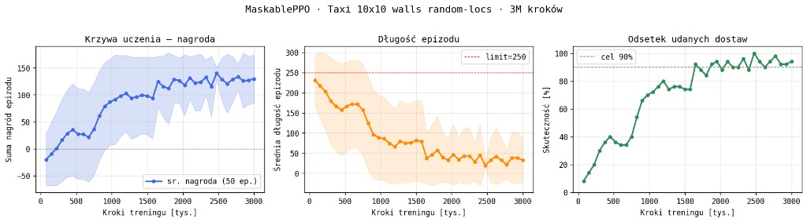
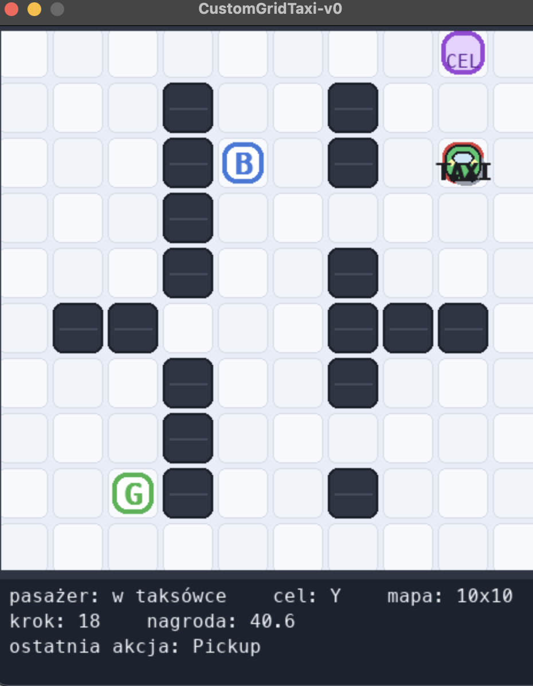
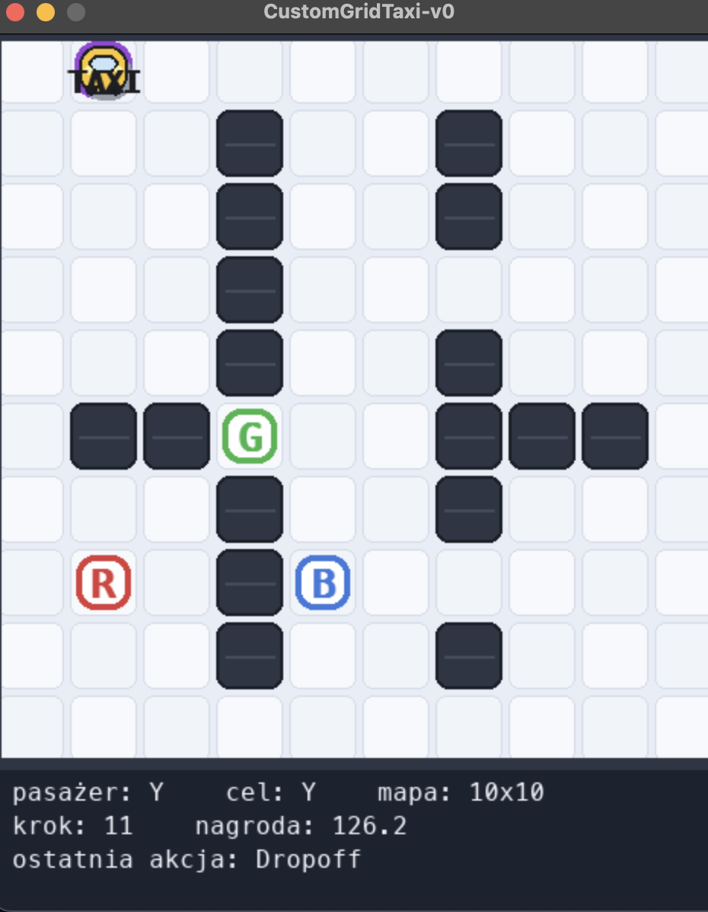

Lab 04 - Taxi 10x10 ze ścianami¶
Celem notebooka jest wytrenowanie agenta MaskablePPO w środowisku taxi oraz pokazanie krzywej uczenia.
Wariant środowiska:
- siatka
10x10, - stałe ściany/przeszkody,
- losowe rozmieszczenie punktów
R/G/Y/Bprzy każdym resecie, - losowy pasażer i cel,
- obserwacja wektorowa,
- maskowanie niedozwolonych akcji,
- shaping nagrody oparty o najkrótszą ścieżkę BFS.
Środowisko jest importowane z pliku custom_grid_taxi_env.py, a logika treningu i rysowania krzywej uczenia znajduje się bezpośrednio w tym notebooku.
1. Importy i konfiguracja¶
Ta komórka ustawia bezpieczne zmienne dla macOS, importuje biblioteki oraz rejestruje środowisko z pliku custom_grid_taxi_env.py.
import os
import sys
from pathlib import Path
# macOS + PyTorch/OpenMP: ustaw przed importem torch/stable-baselines.
if sys.platform == "darwin":
os.environ["KMP_DUPLICATE_LIB_OK"] = "TRUE"
os.environ["OMP_NUM_THREADS"] = "1"
os.environ["MKL_NUM_THREADS"] = "1"
os.environ["OPENBLAS_NUM_THREADS"] = "1"
os.environ["VECLIB_MAXIMUM_THREADS"] = "1"
os.environ["NUMEXPR_NUM_THREADS"] = "1"
os.environ["OBJC_DISABLE_INITIALIZE_FORK_SAFETY"] = "YES"
import gymnasium as gym
import matplotlib.pyplot as plt
import numpy as np
from sb3_contrib import MaskablePPO
from sb3_contrib.common.maskable.callbacks import MaskableEvalCallback
from sb3_contrib.common.wrappers import ActionMasker
from stable_baselines3.common.env_checker import check_env
from stable_baselines3.common.env_util import make_vec_env
from stable_baselines3.common.monitor import Monitor
from stable_baselines3.common.vec_env import DummyVecEnv, VecMonitor
from custom_grid_taxi_env import (
DEFAULT_GRID_SIZE,
DEFAULT_MAX_EPISODE_STEPS,
ENV_ID,
register_custom_grid_taxi,
)
register_custom_grid_taxi()
plt.rcParams.update({"figure.dpi": 120, "font.family": "monospace"})
GRID_SIZE = 10
TOTAL_TIMESTEPS = 3_000_000
N_ENVS = 8
SEED = 42
FINAL_EVAL_EPISODES = 500
MODEL_VARIANT = "v1_10x10_walls_random_locs_vector"
MODEL_DIR = Path("models")
BEST_MODEL_DIR = MODEL_DIR / MODEL_VARIANT
BEST_MODEL_PATH = BEST_MODEL_DIR / "best_model.zip"
FINAL_MODEL_PATH = MODEL_DIR / "custom_grid_taxi_ppo_10x10_walls_random_locs_vector.zip"
LOG_DIR = MODEL_DIR / "logs_10x10_walls_random_locs_vector"
EVAL_FILE = LOG_DIR / "evaluations.npz"
print(f"Python: {sys.executable}")
print(f"Środowisko: {ENV_ID}")
print(f"Siatka: {GRID_SIZE}x{GRID_SIZE}, max_episode_steps={DEFAULT_MAX_EPISODE_STEPS}")
print(f"Trening: {TOTAL_TIMESTEPS:,} kroków, n_envs={N_ENVS}")
Python: /Users/antonio/IOwAnalizie/inteligencja_obliczeniowa_w_analizie_danych/lab04/taxi/.venv/bin/python Środowisko: CustomGridTaxi-v0 Siatka: 10x10, max_episode_steps=250 Trening: 3,000,000 kroków, n_envs=8
2. Podgląd środowiska¶
Poniżej widać losowe rozmieszczenie punktów R/G/Y/B, pasażera, celu i taxi. Zmiana seed pokazuje inny układ.
env = gym.make(
ENV_ID,
render_mode="ansi",
grid_size=GRID_SIZE,
observation_mode="vector",
max_episode_steps=DEFAULT_MAX_EPISODE_STEPS,
)
obs, info = env.reset(seed=7)
print(env.render())
print(f"Obserwacja: {env.observation_space}")
print(f"Akcje: {env.action_space}")
print(f"Maska: {info['action_mask']} (1=akcja dozwolona)")
print(f"Punkty R/G/Y/B: {env.unwrapped.locs}")
env.close()
444444444444444444444 135353535353535353531 135353535353535353531 135353535353535353531 135353535353535353531 135353535353535353531 135353535353535353531 13535G535353535353531 1B5353535353535353531 135353535353535353531 135Y5R535353535353531 444444444444444444444 Obserwacja: Box(0.0, 1.0, (10,), float32) Akcje: Discrete(6) Maska: [1 1 1 1 0 0] (1=akcja dozwolona) Punkty R/G/Y/B: [(9, 2), (6, 2), (9, 1), (7, 0)]
3. Trening MaskablePPO¶
Trening działa przez 3_000_000 kroków. Callback MaskableEvalCallback zapisuje wyniki ewaluacji do evaluations.npz, które później wykorzystujemy do wykresu krzywej uczenia.
def linear_schedule(initial_value):
def _schedule(progress_remaining):
return float(progress_remaining) * initial_value
return _schedule
def make_masked_env(render_mode=None):
env = gym.make(
ENV_ID,
render_mode=render_mode,
grid_size=GRID_SIZE,
observation_mode="vector",
max_episode_steps=DEFAULT_MAX_EPISODE_STEPS,
)
return ActionMasker(env, lambda e: e.unwrapped.action_masks())
def evaluate_model(model, n_episodes=500, seed=10_000):
env = make_masked_env(render_mode=None)
successes = 0
rewards = []
lengths = []
for i in range(n_episodes):
obs, _ = env.reset(seed=seed + i)
total_reward = 0.0
for step in range(1, DEFAULT_MAX_EPISODE_STEPS + 1):
action, _ = model.predict(obs, action_masks=env.action_masks(), deterministic=True)
obs, reward, terminated, truncated, _ = env.step(int(action))
total_reward += reward
if terminated or truncated:
successes += int(terminated)
rewards.append(total_reward)
lengths.append(step)
break
env.close()
return {
"success_rate": successes / n_episodes,
"mean_reward": float(np.mean(rewards)),
"mean_length": float(np.mean(lengths)),
}
base_env = gym.make(
ENV_ID,
grid_size=GRID_SIZE,
observation_mode="vector",
max_episode_steps=DEFAULT_MAX_EPISODE_STEPS,
)
check_env(base_env, warn=True)
base_env.close()
use_dummy_vec = sys.platform == "darwin" and N_ENVS > 1
vec_env_cls = DummyVecEnv if use_dummy_vec else None
if use_dummy_vec:
print("macOS: używam DummyVecEnv zamiast subprocessów.")
train_env = make_vec_env(
lambda: make_masked_env(render_mode=None),
n_envs=N_ENVS,
seed=SEED,
vec_env_cls=vec_env_cls,
)
train_env = VecMonitor(train_env)
eval_env = Monitor(make_masked_env(render_mode=None))
MODEL_DIR.mkdir(parents=True, exist_ok=True)
BEST_MODEL_DIR.mkdir(parents=True, exist_ok=True)
LOG_DIR.mkdir(parents=True, exist_ok=True)
eval_freq = max(2_000, TOTAL_TIMESTEPS // (40 * N_ENVS))
eval_callback = MaskableEvalCallback(
eval_env,
best_model_save_path=str(BEST_MODEL_DIR),
log_path=str(LOG_DIR),
eval_freq=eval_freq,
n_eval_episodes=50,
deterministic=True,
render=False,
)
ppo_kwargs = dict(
learning_rate=linear_schedule(2.5e-4),
n_steps=512,
batch_size=256,
n_epochs=8,
gamma=0.99,
gae_lambda=0.95,
clip_range=0.2,
ent_coef=0.01,
vf_coef=0.5,
max_grad_norm=0.5,
target_kl=0.03,
policy_kwargs=dict(net_arch=dict(pi=[128, 128], vf=[128, 128])),
)
print(f"Start treningu: {TOTAL_TIMESTEPS:,} kroków")
model = MaskablePPO("MlpPolicy", train_env, verbose=1, seed=SEED, **ppo_kwargs)
model.learn(total_timesteps=TOTAL_TIMESTEPS, callback=eval_callback)
model.save(FINAL_MODEL_PATH)
print(f"Zapisano finalny model: {FINAL_MODEL_PATH}")
load_path = BEST_MODEL_PATH if BEST_MODEL_PATH.is_file() else FINAL_MODEL_PATH
best_model = MaskablePPO.load(load_path)
final_eval = evaluate_model(best_model, n_episodes=FINAL_EVAL_EPISODES)
print(f"Najlepszy checkpoint: {load_path}")
print(f"Skuteczność final eval ({FINAL_EVAL_EPISODES} ep.): {100 * final_eval['success_rate']:.1f}%")
print(f"Średnia nagroda: {final_eval['mean_reward']:.1f}")
print(f"Średnia długość epizodu: {final_eval['mean_length']:.1f}")
train_env.close()
eval_env.close()
macOS: używam DummyVecEnv zamiast subprocessów. Start treningu: 3,000,000 kroków Using cpu device
/Users/antonio/IOwAnalizie/inteligencja_obliczeniowa_w_analizie_danych/lab04/taxi/.venv/lib/python3.12/site-packages/stable_baselines3/common/vec_env/vec_monitor.py:43: UserWarning: The environment is already wrapped with a `Monitor` wrapperbut you are wrapping it with a `VecMonitor` wrapper, the `Monitor` statistics will beoverwritten by the `VecMonitor` ones. warnings.warn(
--------------------------------- | rollout/ | | | ep_len_mean | 238 | | ep_rew_mean | -34.2 | | time/ | | | fps | 29798 | | iterations | 1 | | time_elapsed | 0 | | total_timesteps | 4096 | ---------------------------------
/Users/antonio/IOwAnalizie/inteligencja_obliczeniowa_w_analizie_danych/lab04/taxi/.venv/lib/python3.12/site-packages/stable_baselines3/common/callbacks.py:419: UserWarning: Training and eval env are not of the same type<stable_baselines3.common.vec_env.vec_monitor.VecMonitor object at 0x14822a930> != <stable_baselines3.common.vec_env.dummy_vec_env.DummyVecEnv object at 0x113450050>
warnings.warn("Training and eval env are not of the same type" f"{self.training_env} != {self.eval_env}")
------------------------------------------ | rollout/ | | | ep_len_mean | 242 | | ep_rew_mean | -26.7 | | time/ | | | fps | 18310 | | iterations | 2 | | time_elapsed | 0 | | total_timesteps | 8192 | | train/ | | | approx_kl | 0.0089109745 | | clip_fraction | 0.0815 | | clip_range | 0.2 | | entropy_loss | -1.11 | | explained_variance | 0.000881 | | learning_rate | 0.00025 | | loss | 28.7 | | n_updates | 8 | | policy_gradient_loss | -0.00939 | | value_loss | 42 | ------------------------------------------ ------------------------------------------ | rollout/ | | | ep_len_mean | 230 | | ep_rew_mean | -8.59 | | time/ | | | fps | 15875 | | iterations | 3 | | time_elapsed | 0 | | total_timesteps | 12288 | | train/ | | | approx_kl | 0.0085438825 | | clip_fraction | 0.0661 | | clip_range | 0.2 | | entropy_loss | -1.1 | | explained_variance | 0.0103 | | learning_rate | 0.000249 | | loss | 12.8 | | n_updates | 16 | | policy_gradient_loss | -0.0112 | | value_loss | 43 | ------------------------------------------ ------------------------------------------ | rollout/ | | | ep_len_mean | 226 | | ep_rew_mean | -2.61 | | time/ | | | fps | 15631 | | iterations | 4 | | time_elapsed | 1 | | total_timesteps | 16384 | | train/ | | | approx_kl | 0.0050474154 | | clip_fraction | 0.00403 | | clip_range | 0.2 | | entropy_loss | -1.1 | | explained_variance | 0.045 | | learning_rate | 0.000249 | | loss | 63.7 | | n_updates | 24 | | policy_gradient_loss | -0.00369 | | value_loss | 157 | ------------------------------------------ ----------------------------------------- | rollout/ | | | ep_len_mean | 222 | | ep_rew_mean | 3.97 | | time/ | | | fps | 15480 | | iterations | 5 | | time_elapsed | 1 | | total_timesteps | 20480 | | train/ | | | approx_kl | 0.007019073 | | clip_fraction | 0.0338 | | clip_range | 0.2 | | entropy_loss | -1.09 | | explained_variance | 0.145 | | learning_rate | 0.000249 | | loss | 86.2 | | n_updates | 32 | | policy_gradient_loss | -0.00545 | | value_loss | 149 | ----------------------------------------- ------------------------------------------ | rollout/ | | | ep_len_mean | 211 | | ep_rew_mean | 21.3 | | time/ | | | fps | 15367 | | iterations | 6 | | time_elapsed | 1 | | total_timesteps | 24576 | | train/ | | | approx_kl | 0.0046459334 | | clip_fraction | 0.00793 | | clip_range | 0.2 | | entropy_loss | -1.09 | | explained_variance | 0.179 | | learning_rate | 0.000248 | | loss | 93.7 | | n_updates | 40 | | policy_gradient_loss | -0.00351 | | value_loss | 182 | ------------------------------------------ ------------------------------------------ | rollout/ | | | ep_len_mean | 198 | | ep_rew_mean | 36.7 | | time/ | | | fps | 15025 | | iterations | 7 | | time_elapsed | 1 | | total_timesteps | 28672 | | train/ | | | approx_kl | 0.0014890088 | | clip_fraction | 0.00061 | | clip_range | 0.2 | | entropy_loss | -1.09 | | explained_variance | 0.19 | | learning_rate | 0.000248 | | loss | 150 | | n_updates | 48 | | policy_gradient_loss | -0.00369 | | value_loss | 323 | ------------------------------------------ ---------------------------------------- | rollout/ | | | ep_len_mean | 185 | | ep_rew_mean | 50.9 | | time/ | | | fps | 15014 | | iterations | 8 | | time_elapsed | 2 | | total_timesteps | 32768 | | train/ | | | approx_kl | 0.00264636 | | clip_fraction | 0.00116 | | clip_range | 0.2 | | entropy_loss | -1.08 | | explained_variance | 0.212 | | learning_rate | 0.000248 | | loss | 107 | | n_updates | 56 | | policy_gradient_loss | -0.00332 | | value_loss | 228 | ---------------------------------------- ----------------------------------------- | rollout/ | | | ep_len_mean | 176 | | ep_rew_mean | 63.5 | | time/ | | | fps | 14993 | | iterations | 9 | | time_elapsed | 2 | | total_timesteps | 36864 | | train/ | | | approx_kl | 0.004124348 | | clip_fraction | 0.0148 | | clip_range | 0.2 | | entropy_loss | -1.08 | | explained_variance | 0.33 | | learning_rate | 0.000247 | | loss | 132 | | n_updates | 64 | | policy_gradient_loss | -0.0031 | | value_loss | 304 | ----------------------------------------- ------------------------------------------ | rollout/ | | | ep_len_mean | 166 | | ep_rew_mean | 66.8 | | time/ | | | fps | 14980 | | iterations | 10 | | time_elapsed | 2 | | total_timesteps | 40960 | | train/ | | | approx_kl | 0.0079123415 | | clip_fraction | 0.0231 | | clip_range | 0.2 | | entropy_loss | -1.08 | | explained_variance | 0.394 | | learning_rate | 0.000247 | | loss | 123 | | n_updates | 72 | | policy_gradient_loss | -0.00453 | | value_loss | 246 | ------------------------------------------ ----------------------------------------- | rollout/ | | | ep_len_mean | 159 | | ep_rew_mean | 70.1 | | time/ | | | fps | 14975 | | iterations | 11 | | time_elapsed | 3 | | total_timesteps | 45056 | | train/ | | | approx_kl | 0.005309387 | | clip_fraction | 0.0105 | | clip_range | 0.2 | | entropy_loss | -1.06 | | explained_variance | 0.307 | | learning_rate | 0.000247 | | loss | 130 | | n_updates | 80 | | policy_gradient_loss | -0.00396 | | value_loss | 313 | ----------------------------------------- ----------------------------------------- | rollout/ | | | ep_len_mean | 142 | | ep_rew_mean | 84.1 | | time/ | | | fps | 14964 | | iterations | 12 | | time_elapsed | 3 | | total_timesteps | 49152 | | train/ | | | approx_kl | 0.006779308 | | clip_fraction | 0.024 | | clip_range | 0.2 | | entropy_loss | -1.05 | | explained_variance | 0.365 | | learning_rate | 0.000246 | | loss | 82.2 | | n_updates | 88 | | policy_gradient_loss | -0.00522 | | value_loss | 205 | ----------------------------------------- ----------------------------------------- | rollout/ | | | ep_len_mean | 130 | | ep_rew_mean | 93.7 | | time/ | | | fps | 14956 | | iterations | 13 | | time_elapsed | 3 | | total_timesteps | 53248 | | train/ | | | approx_kl | 0.006327832 | | clip_fraction | 0.0383 | | clip_range | 0.2 | | entropy_loss | -1.04 | | explained_variance | 0.262 | | learning_rate | 0.000246 | | loss | 165 | | n_updates | 96 | | policy_gradient_loss | -0.0059 | | value_loss | 350 | ----------------------------------------- ------------------------------------------ | rollout/ | | | ep_len_mean | 115 | | ep_rew_mean | 112 | | time/ | | | fps | 14955 | | iterations | 14 | | time_elapsed | 3 | | total_timesteps | 57344 | | train/ | | | approx_kl | 0.0011748227 | | clip_fraction | 0 | | clip_range | 0.2 | | entropy_loss | -1.02 | | explained_variance | 0.436 | | learning_rate | 0.000246 | | loss | 141 | | n_updates | 104 | | policy_gradient_loss | -0.00241 | | value_loss | 302 | ------------------------------------------ ------------------------------------------ | rollout/ | | | ep_len_mean | 115 | | ep_rew_mean | 111 | | time/ | | | fps | 14950 | | iterations | 15 | | time_elapsed | 4 | | total_timesteps | 61440 | | train/ | | | approx_kl | 0.0062946463 | | clip_fraction | 0.025 | | clip_range | 0.2 | | entropy_loss | -0.975 | | explained_variance | 0.505 | | learning_rate | 0.000245 | | loss | 151 | | n_updates | 112 | | policy_gradient_loss | -0.00504 | | value_loss | 280 | ------------------------------------------ ------------------------------------------ | rollout/ | | | ep_len_mean | 115 | | ep_rew_mean | 112 | | time/ | | | fps | 14943 | | iterations | 16 | | time_elapsed | 4 | | total_timesteps | 65536 | | train/ | | | approx_kl | 0.0063727116 | | clip_fraction | 0.0364 | | clip_range | 0.2 | | entropy_loss | -0.976 | | explained_variance | 0.406 | | learning_rate | 0.000245 | | loss | 132 | | n_updates | 120 | | policy_gradient_loss | -0.00597 | | value_loss | 238 | ------------------------------------------ ------------------------------------------ | rollout/ | | | ep_len_mean | 118 | | ep_rew_mean | 104 | | time/ | | | fps | 14938 | | iterations | 17 | | time_elapsed | 4 | | total_timesteps | 69632 | | train/ | | | approx_kl | 0.0057669105 | | clip_fraction | 0.0201 | | clip_range | 0.2 | | entropy_loss | -0.928 | | explained_variance | 0.499 | | learning_rate | 0.000245 | | loss | 121 | | n_updates | 128 | | policy_gradient_loss | -0.00411 | | value_loss | 261 | ------------------------------------------ ----------------------------------------- | rollout/ | | | ep_len_mean | 110 | | ep_rew_mean | 107 | | time/ | | | fps | 14935 | | iterations | 18 | | time_elapsed | 4 | | total_timesteps | 73728 | | train/ | | | approx_kl | 0.005064971 | | clip_fraction | 0.0302 | | clip_range | 0.2 | | entropy_loss | -0.941 | | explained_variance | 0.508 | | learning_rate | 0.000244 | | loss | 99.7 | | n_updates | 136 | | policy_gradient_loss | -0.0055 | | value_loss | 196 | ----------------------------------------- Eval num_timesteps=75000, episode_reward=-20.57 +/- 47.83 Episode length: 231.32 +/- 63.35 ------------------------------------------ | eval/ | | | mean_ep_length | 231 | | mean_reward | -20.6 | | time/ | | | total_timesteps | 75000 | | train/ | | | approx_kl | 0.0059684925 | | clip_fraction | 0.0437 | | clip_range | 0.2 | | entropy_loss | -0.908 | | explained_variance | 0.541 | | learning_rate | 0.000244 | | loss | 102 | | n_updates | 144 | | policy_gradient_loss | -0.00519 | | value_loss | 252 | ------------------------------------------ New best mean reward! --------------------------------- | rollout/ | | | ep_len_mean | 110 | | ep_rew_mean | 101 | | time/ | | | fps | 11593 | | iterations | 19 | | time_elapsed | 6 | | total_timesteps | 77824 | --------------------------------- ------------------------------------------ | rollout/ | | | ep_len_mean | 106 | | ep_rew_mean | 103 | | time/ | | | fps | 11721 | | iterations | 20 | | time_elapsed | 6 | | total_timesteps | 81920 | | train/ | | | approx_kl | 0.0042424733 | | clip_fraction | 0.0103 | | clip_range | 0.2 | | entropy_loss | -0.84 | | explained_variance | 0.695 | | learning_rate | 0.000244 | | loss | 122 | | n_updates | 152 | | policy_gradient_loss | -0.0033 | | value_loss | 208 | ------------------------------------------ ----------------------------------------- | rollout/ | | | ep_len_mean | 104 | | ep_rew_mean | 102 | | time/ | | | fps | 11840 | | iterations | 21 | | time_elapsed | 7 | | total_timesteps | 86016 | | train/ | | | approx_kl | 0.005245317 | | clip_fraction | 0.0325 | | clip_range | 0.2 | | entropy_loss | -0.828 | | explained_variance | 0.716 | | learning_rate | 0.000243 | | loss | 89.2 | | n_updates | 160 | | policy_gradient_loss | -0.0045 | | value_loss | 178 | ----------------------------------------- ------------------------------------------ | rollout/ | | | ep_len_mean | 96.3 | | ep_rew_mean | 104 | | time/ | | | fps | 11924 | | iterations | 22 | | time_elapsed | 7 | | total_timesteps | 90112 | | train/ | | | approx_kl | 0.0057827746 | | clip_fraction | 0.0428 | | clip_range | 0.2 | | entropy_loss | -0.817 | | explained_variance | 0.72 | | learning_rate | 0.000243 | | loss | 107 | | n_updates | 168 | | policy_gradient_loss | -0.00457 | | value_loss | 206 | ------------------------------------------ ------------------------------------------ | rollout/ | | | ep_len_mean | 91.6 | | ep_rew_mean | 113 | | time/ | | | fps | 11941 | | iterations | 23 | | time_elapsed | 7 | | total_timesteps | 94208 | | train/ | | | approx_kl | 0.0034740916 | | clip_fraction | 0.00577 | | clip_range | 0.2 | | entropy_loss | -0.844 | | explained_variance | 0.695 | | learning_rate | 0.000242 | | loss | 93.5 | | n_updates | 176 | | policy_gradient_loss | -0.00229 | | value_loss | 205 | ------------------------------------------ ----------------------------------------- | rollout/ | | | ep_len_mean | 87.8 | | ep_rew_mean | 114 | | time/ | | | fps | 12034 | | iterations | 24 | | time_elapsed | 8 | | total_timesteps | 98304 | | train/ | | | approx_kl | 0.006658484 | | clip_fraction | 0.0418 | | clip_range | 0.2 | | entropy_loss | -0.806 | | explained_variance | 0.703 | | learning_rate | 0.000242 | | loss | 70.5 | | n_updates | 184 | | policy_gradient_loss | -0.0044 | | value_loss | 159 | ----------------------------------------- ----------------------------------------- | rollout/ | | | ep_len_mean | 78.9 | | ep_rew_mean | 119 | | time/ | | | fps | 12117 | | iterations | 25 | | time_elapsed | 8 | | total_timesteps | 102400 | | train/ | | | approx_kl | 0.004177033 | | clip_fraction | 0.0224 | | clip_range | 0.2 | | entropy_loss | -0.848 | | explained_variance | 0.726 | | learning_rate | 0.000242 | | loss | 89.6 | | n_updates | 192 | | policy_gradient_loss | -0.00463 | | value_loss | 189 | ----------------------------------------- ----------------------------------------- | rollout/ | | | ep_len_mean | 75.5 | | ep_rew_mean | 125 | | time/ | | | fps | 12196 | | iterations | 26 | | time_elapsed | 8 | | total_timesteps | 106496 | | train/ | | | approx_kl | 0.005158403 | | clip_fraction | 0.017 | | clip_range | 0.2 | | entropy_loss | -0.832 | | explained_variance | 0.628 | | learning_rate | 0.000241 | | loss | 77.7 | | n_updates | 200 | | policy_gradient_loss | -0.00219 | | value_loss | 185 | ----------------------------------------- ------------------------------------------ | rollout/ | | | ep_len_mean | 75.5 | | ep_rew_mean | 122 | | time/ | | | fps | 12230 | | iterations | 27 | | time_elapsed | 9 | | total_timesteps | 110592 | | train/ | | | approx_kl | 0.0034274447 | | clip_fraction | 0.0341 | | clip_range | 0.2 | | entropy_loss | -0.834 | | explained_variance | 0.645 | | learning_rate | 0.000241 | | loss | 95.2 | | n_updates | 208 | | policy_gradient_loss | -0.0052 | | value_loss | 195 | ------------------------------------------ ----------------------------------------- | rollout/ | | | ep_len_mean | 64.6 | | ep_rew_mean | 126 | | time/ | | | fps | 12298 | | iterations | 28 | | time_elapsed | 9 | | total_timesteps | 114688 | | train/ | | | approx_kl | 0.003944549 | | clip_fraction | 0.0256 | | clip_range | 0.2 | | entropy_loss | -0.851 | | explained_variance | 0.584 | | learning_rate | 0.000241 | | loss | 107 | | n_updates | 216 | | policy_gradient_loss | -0.00446 | | value_loss | 205 | ----------------------------------------- ------------------------------------------ | rollout/ | | | ep_len_mean | 73.3 | | ep_rew_mean | 125 | | time/ | | | fps | 12344 | | iterations | 29 | | time_elapsed | 9 | | total_timesteps | 118784 | | train/ | | | approx_kl | 0.0027328646 | | clip_fraction | 0.0141 | | clip_range | 0.2 | | entropy_loss | -0.765 | | explained_variance | 0.476 | | learning_rate | 0.00024 | | loss | 115 | | n_updates | 224 | | policy_gradient_loss | -0.00213 | | value_loss | 225 | ------------------------------------------ ----------------------------------------- | rollout/ | | | ep_len_mean | 83.7 | | ep_rew_mean | 116 | | time/ | | | fps | 12395 | | iterations | 30 | | time_elapsed | 9 | | total_timesteps | 122880 | | train/ | | | approx_kl | 0.005552125 | | clip_fraction | 0.0335 | | clip_range | 0.2 | | entropy_loss | -0.768 | | explained_variance | 0.69 | | learning_rate | 0.00024 | | loss | 66.1 | | n_updates | 232 | | policy_gradient_loss | -0.00269 | | value_loss | 145 | ----------------------------------------- ------------------------------------------ | rollout/ | | | ep_len_mean | 79.8 | | ep_rew_mean | 116 | | time/ | | | fps | 12462 | | iterations | 31 | | time_elapsed | 10 | | total_timesteps | 126976 | | train/ | | | approx_kl | 0.0037083174 | | clip_fraction | 0.0339 | | clip_range | 0.2 | | entropy_loss | -0.773 | | explained_variance | 0.634 | | learning_rate | 0.00024 | | loss | 78.5 | | n_updates | 240 | | policy_gradient_loss | -0.00405 | | value_loss | 178 | ------------------------------------------ ---------------------------------------- | rollout/ | | | ep_len_mean | 85.8 | | ep_rew_mean | 112 | | time/ | | | fps | 12528 | | iterations | 32 | | time_elapsed | 10 | | total_timesteps | 131072 | | train/ | | | approx_kl | 0.00299672 | | clip_fraction | 0.0546 | | clip_range | 0.2 | | entropy_loss | -0.727 | | explained_variance | 0.664 | | learning_rate | 0.000239 | | loss | 75.3 | | n_updates | 248 | | policy_gradient_loss | -0.0035 | | value_loss | 178 | ---------------------------------------- ------------------------------------------ | rollout/ | | | ep_len_mean | 89.9 | | ep_rew_mean | 114 | | time/ | | | fps | 12591 | | iterations | 33 | | time_elapsed | 10 | | total_timesteps | 135168 | | train/ | | | approx_kl | 0.0049572787 | | clip_fraction | 0.0503 | | clip_range | 0.2 | | entropy_loss | -0.675 | | explained_variance | 0.729 | | learning_rate | 0.000239 | | loss | 104 | | n_updates | 256 | | policy_gradient_loss | -0.00491 | | value_loss | 187 | ------------------------------------------ ------------------------------------------ | rollout/ | | | ep_len_mean | 81.7 | | ep_rew_mean | 118 | | time/ | | | fps | 12650 | | iterations | 34 | | time_elapsed | 11 | | total_timesteps | 139264 | | train/ | | | approx_kl | 0.0046885214 | | clip_fraction | 0.0585 | | clip_range | 0.2 | | entropy_loss | -0.77 | | explained_variance | 0.671 | | learning_rate | 0.000239 | | loss | 91 | | n_updates | 264 | | policy_gradient_loss | -0.00412 | | value_loss | 192 | ------------------------------------------ ------------------------------------------ | rollout/ | | | ep_len_mean | 73.1 | | ep_rew_mean | 120 | | time/ | | | fps | 12702 | | iterations | 35 | | time_elapsed | 11 | | total_timesteps | 143360 | | train/ | | | approx_kl | 0.0017293014 | | clip_fraction | 0.00677 | | clip_range | 0.2 | | entropy_loss | -0.734 | | explained_variance | 0.661 | | learning_rate | 0.000238 | | loss | 93.9 | | n_updates | 272 | | policy_gradient_loss | -0.00166 | | value_loss | 216 | ------------------------------------------ ------------------------------------------ | rollout/ | | | ep_len_mean | 69 | | ep_rew_mean | 121 | | time/ | | | fps | 12753 | | iterations | 36 | | time_elapsed | 11 | | total_timesteps | 147456 | | train/ | | | approx_kl | 0.0065171476 | | clip_fraction | 0.076 | | clip_range | 0.2 | | entropy_loss | -0.775 | | explained_variance | 0.575 | | learning_rate | 0.000238 | | loss | 87.1 | | n_updates | 280 | | policy_gradient_loss | -0.00655 | | value_loss | 179 | ------------------------------------------ Eval num_timesteps=150000, episode_reward=-9.71 +/- 58.73 Episode length: 216.92 +/- 82.01 ------------------------------------------ | eval/ | | | mean_ep_length | 217 | | mean_reward | -9.71 | | time/ | | | total_timesteps | 150000 | | train/ | | | approx_kl | 0.0048493515 | | clip_fraction | 0.035 | | clip_range | 0.2 | | entropy_loss | -0.732 | | explained_variance | 0.679 | | learning_rate | 0.000238 | | loss | 81.2 | | n_updates | 288 | | policy_gradient_loss | -0.0039 | | value_loss | 177 | ------------------------------------------ New best mean reward! --------------------------------- | rollout/ | | | ep_len_mean | 72.3 | | ep_rew_mean | 116 | | time/ | | | fps | 11473 | | iterations | 37 | | time_elapsed | 13 | | total_timesteps | 151552 | --------------------------------- ----------------------------------------- | rollout/ | | | ep_len_mean | 74.7 | | ep_rew_mean | 119 | | time/ | | | fps | 11540 | | iterations | 38 | | time_elapsed | 13 | | total_timesteps | 155648 | | train/ | | | approx_kl | 0.004814835 | | clip_fraction | 0.0493 | | clip_range | 0.2 | | entropy_loss | -0.701 | | explained_variance | 0.687 | | learning_rate | 0.000237 | | loss | 105 | | n_updates | 296 | | policy_gradient_loss | -0.00447 | | value_loss | 199 | ----------------------------------------- ------------------------------------------ | rollout/ | | | ep_len_mean | 76.2 | | ep_rew_mean | 119 | | time/ | | | fps | 11607 | | iterations | 39 | | time_elapsed | 13 | | total_timesteps | 159744 | | train/ | | | approx_kl | 0.0031041047 | | clip_fraction | 0.0185 | | clip_range | 0.2 | | entropy_loss | -0.729 | | explained_variance | 0.605 | | learning_rate | 0.000237 | | loss | 77.6 | | n_updates | 304 | | policy_gradient_loss | -0.00214 | | value_loss | 197 | ------------------------------------------ ------------------------------------------ | rollout/ | | | ep_len_mean | 70.8 | | ep_rew_mean | 120 | | time/ | | | fps | 11671 | | iterations | 40 | | time_elapsed | 14 | | total_timesteps | 163840 | | train/ | | | approx_kl | 0.0048598573 | | clip_fraction | 0.0558 | | clip_range | 0.2 | | entropy_loss | -0.725 | | explained_variance | 0.708 | | learning_rate | 0.000237 | | loss | 72.8 | | n_updates | 312 | | policy_gradient_loss | -0.00412 | | value_loss | 172 | ------------------------------------------ ------------------------------------------ | rollout/ | | | ep_len_mean | 68.6 | | ep_rew_mean | 123 | | time/ | | | fps | 11726 | | iterations | 41 | | time_elapsed | 14 | | total_timesteps | 167936 | | train/ | | | approx_kl | 0.0032766056 | | clip_fraction | 0.0287 | | clip_range | 0.2 | | entropy_loss | -0.721 | | explained_variance | 0.557 | | learning_rate | 0.000236 | | loss | 66.5 | | n_updates | 320 | | policy_gradient_loss | -0.00305 | | value_loss | 170 | ------------------------------------------ ------------------------------------------ | rollout/ | | | ep_len_mean | 64.9 | | ep_rew_mean | 125 | | time/ | | | fps | 11782 | | iterations | 42 | | time_elapsed | 14 | | total_timesteps | 172032 | | train/ | | | approx_kl | 0.0056268917 | | clip_fraction | 0.0406 | | clip_range | 0.2 | | entropy_loss | -0.703 | | explained_variance | 0.655 | | learning_rate | 0.000236 | | loss | 85.2 | | n_updates | 328 | | policy_gradient_loss | -0.00436 | | value_loss | 181 | ------------------------------------------ ----------------------------------------- | rollout/ | | | ep_len_mean | 80 | | ep_rew_mean | 113 | | time/ | | | fps | 11839 | | iterations | 43 | | time_elapsed | 14 | | total_timesteps | 176128 | | train/ | | | approx_kl | 0.006060669 | | clip_fraction | 0.0461 | | clip_range | 0.2 | | entropy_loss | -0.632 | | explained_variance | 0.737 | | learning_rate | 0.000236 | | loss | 76 | | n_updates | 336 | | policy_gradient_loss | -0.00412 | | value_loss | 176 | ----------------------------------------- ------------------------------------------ | rollout/ | | | ep_len_mean | 84.1 | | ep_rew_mean | 106 | | time/ | | | fps | 11894 | | iterations | 44 | | time_elapsed | 15 | | total_timesteps | 180224 | | train/ | | | approx_kl | 0.0040144073 | | clip_fraction | 0.0414 | | clip_range | 0.2 | | entropy_loss | -0.676 | | explained_variance | 0.7 | | learning_rate | 0.000235 | | loss | 91.6 | | n_updates | 344 | | policy_gradient_loss | -0.00353 | | value_loss | 189 | ------------------------------------------ ------------------------------------------ | rollout/ | | | ep_len_mean | 80.7 | | ep_rew_mean | 109 | | time/ | | | fps | 11947 | | iterations | 45 | | time_elapsed | 15 | | total_timesteps | 184320 | | train/ | | | approx_kl | 0.0055627306 | | clip_fraction | 0.0516 | | clip_range | 0.2 | | entropy_loss | -0.681 | | explained_variance | 0.737 | | learning_rate | 0.000235 | | loss | 90.1 | | n_updates | 352 | | policy_gradient_loss | -0.00532 | | value_loss | 180 | ------------------------------------------ ------------------------------------------ | rollout/ | | | ep_len_mean | 90.6 | | ep_rew_mean | 105 | | time/ | | | fps | 11999 | | iterations | 46 | | time_elapsed | 15 | | total_timesteps | 188416 | | train/ | | | approx_kl | 0.0036343932 | | clip_fraction | 0.045 | | clip_range | 0.2 | | entropy_loss | -0.68 | | explained_variance | 0.728 | | learning_rate | 0.000235 | | loss | 85.5 | | n_updates | 360 | | policy_gradient_loss | -0.00416 | | value_loss | 173 | ------------------------------------------ ------------------------------------------ | rollout/ | | | ep_len_mean | 78.9 | | ep_rew_mean | 111 | | time/ | | | fps | 12049 | | iterations | 47 | | time_elapsed | 15 | | total_timesteps | 192512 | | train/ | | | approx_kl | 0.0031980453 | | clip_fraction | 0.0284 | | clip_range | 0.2 | | entropy_loss | -0.638 | | explained_variance | 0.784 | | learning_rate | 0.000234 | | loss | 71.4 | | n_updates | 368 | | policy_gradient_loss | -0.00283 | | value_loss | 164 | ------------------------------------------ ------------------------------------------ | rollout/ | | | ep_len_mean | 76 | | ep_rew_mean | 111 | | time/ | | | fps | 12098 | | iterations | 48 | | time_elapsed | 16 | | total_timesteps | 196608 | | train/ | | | approx_kl | 0.0062089954 | | clip_fraction | 0.076 | | clip_range | 0.2 | | entropy_loss | -0.632 | | explained_variance | 0.773 | | learning_rate | 0.000234 | | loss | 107 | | n_updates | 376 | | policy_gradient_loss | -0.00594 | | value_loss | 215 | ------------------------------------------ ----------------------------------------- | rollout/ | | | ep_len_mean | 75.9 | | ep_rew_mean | 113 | | time/ | | | fps | 12145 | | iterations | 49 | | time_elapsed | 16 | | total_timesteps | 200704 | | train/ | | | approx_kl | 0.004497396 | | clip_fraction | 0.0301 | | clip_range | 0.2 | | entropy_loss | -0.659 | | explained_variance | 0.693 | | learning_rate | 0.000234 | | loss | 81.5 | | n_updates | 384 | | policy_gradient_loss | -0.00374 | | value_loss | 195 | ----------------------------------------- ------------------------------------------ | rollout/ | | | ep_len_mean | 61.1 | | ep_rew_mean | 123 | | time/ | | | fps | 12191 | | iterations | 50 | | time_elapsed | 16 | | total_timesteps | 204800 | | train/ | | | approx_kl | 0.0045445156 | | clip_fraction | 0.044 | | clip_range | 0.2 | | entropy_loss | -0.68 | | explained_variance | 0.717 | | learning_rate | 0.000233 | | loss | 89.7 | | n_updates | 392 | | policy_gradient_loss | -0.00405 | | value_loss | 188 | ------------------------------------------ ------------------------------------------ | rollout/ | | | ep_len_mean | 57.8 | | ep_rew_mean | 127 | | time/ | | | fps | 12234 | | iterations | 51 | | time_elapsed | 17 | | total_timesteps | 208896 | | train/ | | | approx_kl | 0.0039582904 | | clip_fraction | 0.0415 | | clip_range | 0.2 | | entropy_loss | -0.625 | | explained_variance | 0.74 | | learning_rate | 0.000233 | | loss | 126 | | n_updates | 400 | | policy_gradient_loss | -0.00461 | | value_loss | 221 | ------------------------------------------ ------------------------------------------ | rollout/ | | | ep_len_mean | 61.5 | | ep_rew_mean | 122 | | time/ | | | fps | 12276 | | iterations | 52 | | time_elapsed | 17 | | total_timesteps | 212992 | | train/ | | | approx_kl | 0.0021437942 | | clip_fraction | 0.0184 | | clip_range | 0.2 | | entropy_loss | -0.606 | | explained_variance | 0.721 | | learning_rate | 0.000233 | | loss | 101 | | n_updates | 408 | | policy_gradient_loss | -0.00328 | | value_loss | 226 | ------------------------------------------ ------------------------------------------ | rollout/ | | | ep_len_mean | 67.2 | | ep_rew_mean | 121 | | time/ | | | fps | 12316 | | iterations | 53 | | time_elapsed | 17 | | total_timesteps | 217088 | | train/ | | | approx_kl | 0.0035438426 | | clip_fraction | 0.0207 | | clip_range | 0.2 | | entropy_loss | -0.627 | | explained_variance | 0.729 | | learning_rate | 0.000232 | | loss | 112 | | n_updates | 416 | | policy_gradient_loss | -0.00217 | | value_loss | 199 | ------------------------------------------ ----------------------------------------- | rollout/ | | | ep_len_mean | 70.1 | | ep_rew_mean | 117 | | time/ | | | fps | 12356 | | iterations | 54 | | time_elapsed | 17 | | total_timesteps | 221184 | | train/ | | | approx_kl | 0.004058021 | | clip_fraction | 0.032 | | clip_range | 0.2 | | entropy_loss | -0.627 | | explained_variance | 0.712 | | learning_rate | 0.000232 | | loss | 89.7 | | n_updates | 424 | | policy_gradient_loss | -0.00237 | | value_loss | 176 | ----------------------------------------- Eval num_timesteps=225000, episode_reward=0.67 +/- 68.71 Episode length: 203.10 +/- 93.82 ------------------------------------------ | eval/ | | | mean_ep_length | 203 | | mean_reward | 0.668 | | time/ | | | total_timesteps | 225000 | | train/ | | | approx_kl | 0.0037771608 | | clip_fraction | 0.0207 | | clip_range | 0.2 | | entropy_loss | -0.637 | | explained_variance | 0.708 | | learning_rate | 0.000232 | | loss | 81.4 | | n_updates | 432 | | policy_gradient_loss | -0.00292 | | value_loss | 189 | ------------------------------------------ New best mean reward! --------------------------------- | rollout/ | | | ep_len_mean | 68.3 | | ep_rew_mean | 121 | | time/ | | | fps | 11554 | | iterations | 55 | | time_elapsed | 19 | | total_timesteps | 225280 | --------------------------------- ----------------------------------------- | rollout/ | | | ep_len_mean | 72.1 | | ep_rew_mean | 116 | | time/ | | | fps | 11599 | | iterations | 56 | | time_elapsed | 19 | | total_timesteps | 229376 | | train/ | | | approx_kl | 0.004097593 | | clip_fraction | 0.0454 | | clip_range | 0.2 | | entropy_loss | -0.672 | | explained_variance | 0.708 | | learning_rate | 0.000231 | | loss | 93.8 | | n_updates | 440 | | policy_gradient_loss | -0.00357 | | value_loss | 192 | ----------------------------------------- ------------------------------------------ | rollout/ | | | ep_len_mean | 69.6 | | ep_rew_mean | 117 | | time/ | | | fps | 11644 | | iterations | 57 | | time_elapsed | 20 | | total_timesteps | 233472 | | train/ | | | approx_kl | 0.0037777193 | | clip_fraction | 0.0162 | | clip_range | 0.2 | | entropy_loss | -0.645 | | explained_variance | 0.688 | | learning_rate | 0.000231 | | loss | 111 | | n_updates | 448 | | policy_gradient_loss | -0.00156 | | value_loss | 215 | ------------------------------------------ ----------------------------------------- | rollout/ | | | ep_len_mean | 73.1 | | ep_rew_mean | 121 | | time/ | | | fps | 11688 | | iterations | 58 | | time_elapsed | 20 | | total_timesteps | 237568 | | train/ | | | approx_kl | 0.003545016 | | clip_fraction | 0.0275 | | clip_range | 0.2 | | entropy_loss | -0.607 | | explained_variance | 0.766 | | learning_rate | 0.000231 | | loss | 100 | | n_updates | 456 | | policy_gradient_loss | -0.00195 | | value_loss | 213 | ----------------------------------------- ------------------------------------------ | rollout/ | | | ep_len_mean | 73.6 | | ep_rew_mean | 124 | | time/ | | | fps | 11728 | | iterations | 59 | | time_elapsed | 20 | | total_timesteps | 241664 | | train/ | | | approx_kl | 0.0036499924 | | clip_fraction | 0.02 | | clip_range | 0.2 | | entropy_loss | -0.643 | | explained_variance | 0.76 | | learning_rate | 0.00023 | | loss | 88.1 | | n_updates | 464 | | policy_gradient_loss | -0.0032 | | value_loss | 198 | ------------------------------------------ ------------------------------------------ | rollout/ | | | ep_len_mean | 73.9 | | ep_rew_mean | 123 | | time/ | | | fps | 11766 | | iterations | 60 | | time_elapsed | 20 | | total_timesteps | 245760 | | train/ | | | approx_kl | 0.0058856187 | | clip_fraction | 0.0477 | | clip_range | 0.2 | | entropy_loss | -0.734 | | explained_variance | 0.563 | | learning_rate | 0.00023 | | loss | 103 | | n_updates | 472 | | policy_gradient_loss | -0.00388 | | value_loss | 212 | ------------------------------------------ ----------------------------------------- | rollout/ | | | ep_len_mean | 61.8 | | ep_rew_mean | 128 | | time/ | | | fps | 11806 | | iterations | 61 | | time_elapsed | 21 | | total_timesteps | 249856 | | train/ | | | approx_kl | 0.005072945 | | clip_fraction | 0.0411 | | clip_range | 0.2 | | entropy_loss | -0.685 | | explained_variance | 0.568 | | learning_rate | 0.00023 | | loss | 94.8 | | n_updates | 480 | | policy_gradient_loss | -0.00331 | | value_loss | 185 | ----------------------------------------- ------------------------------------------ | rollout/ | | | ep_len_mean | 60.6 | | ep_rew_mean | 127 | | time/ | | | fps | 11847 | | iterations | 62 | | time_elapsed | 21 | | total_timesteps | 253952 | | train/ | | | approx_kl | 0.0050524333 | | clip_fraction | 0.0393 | | clip_range | 0.2 | | entropy_loss | -0.726 | | explained_variance | 0.588 | | learning_rate | 0.000229 | | loss | 57.4 | | n_updates | 488 | | policy_gradient_loss | -0.00444 | | value_loss | 161 | ------------------------------------------ ------------------------------------------ | rollout/ | | | ep_len_mean | 63.6 | | ep_rew_mean | 123 | | time/ | | | fps | 11885 | | iterations | 63 | | time_elapsed | 21 | | total_timesteps | 258048 | | train/ | | | approx_kl | 0.0043985294 | | clip_fraction | 0.041 | | clip_range | 0.2 | | entropy_loss | -0.678 | | explained_variance | 0.54 | | learning_rate | 0.000229 | | loss | 90.3 | | n_updates | 496 | | policy_gradient_loss | -0.00334 | | value_loss | 210 | ------------------------------------------ ------------------------------------------ | rollout/ | | | ep_len_mean | 66.2 | | ep_rew_mean | 120 | | time/ | | | fps | 11923 | | iterations | 64 | | time_elapsed | 21 | | total_timesteps | 262144 | | train/ | | | approx_kl | 0.0046611642 | | clip_fraction | 0.0354 | | clip_range | 0.2 | | entropy_loss | -0.674 | | explained_variance | 0.472 | | learning_rate | 0.000228 | | loss | 69.3 | | n_updates | 504 | | policy_gradient_loss | -0.00388 | | value_loss | 186 | ------------------------------------------ ----------------------------------------- | rollout/ | | | ep_len_mean | 54.2 | | ep_rew_mean | 128 | | time/ | | | fps | 11961 | | iterations | 65 | | time_elapsed | 22 | | total_timesteps | 266240 | | train/ | | | approx_kl | 0.003745547 | | clip_fraction | 0.0304 | | clip_range | 0.2 | | entropy_loss | -0.707 | | explained_variance | 0.607 | | learning_rate | 0.000228 | | loss | 80.5 | | n_updates | 512 | | policy_gradient_loss | -0.002 | | value_loss | 157 | ----------------------------------------- ------------------------------------------ | rollout/ | | | ep_len_mean | 65.6 | | ep_rew_mean | 127 | | time/ | | | fps | 11997 | | iterations | 66 | | time_elapsed | 22 | | total_timesteps | 270336 | | train/ | | | approx_kl | 0.0038731121 | | clip_fraction | 0.0419 | | clip_range | 0.2 | | entropy_loss | -0.64 | | explained_variance | 0.679 | | learning_rate | 0.000228 | | loss | 78.5 | | n_updates | 520 | | policy_gradient_loss | -0.00417 | | value_loss | 169 | ------------------------------------------ ------------------------------------------ | rollout/ | | | ep_len_mean | 69.5 | | ep_rew_mean | 125 | | time/ | | | fps | 12032 | | iterations | 67 | | time_elapsed | 22 | | total_timesteps | 274432 | | train/ | | | approx_kl | 0.0036873077 | | clip_fraction | 0.0286 | | clip_range | 0.2 | | entropy_loss | -0.671 | | explained_variance | 0.679 | | learning_rate | 0.000227 | | loss | 88.5 | | n_updates | 528 | | policy_gradient_loss | -0.00282 | | value_loss | 179 | ------------------------------------------ ------------------------------------------ | rollout/ | | | ep_len_mean | 67.7 | | ep_rew_mean | 124 | | time/ | | | fps | 12067 | | iterations | 68 | | time_elapsed | 23 | | total_timesteps | 278528 | | train/ | | | approx_kl | 0.0045293556 | | clip_fraction | 0.0223 | | clip_range | 0.2 | | entropy_loss | -0.66 | | explained_variance | 0.664 | | learning_rate | 0.000227 | | loss | 80 | | n_updates | 536 | | policy_gradient_loss | -0.00181 | | value_loss | 158 | ------------------------------------------ ---------------------------------------- | rollout/ | | | ep_len_mean | 66.9 | | ep_rew_mean | 121 | | time/ | | | fps | 12101 | | iterations | 69 | | time_elapsed | 23 | | total_timesteps | 282624 | | train/ | | | approx_kl | 0.00449707 | | clip_fraction | 0.0333 | | clip_range | 0.2 | | entropy_loss | -0.708 | | explained_variance | 0.62 | | learning_rate | 0.000227 | | loss | 93.5 | | n_updates | 544 | | policy_gradient_loss | -0.00348 | | value_loss | 176 | ---------------------------------------- ----------------------------------------- | rollout/ | | | ep_len_mean | 64 | | ep_rew_mean | 122 | | time/ | | | fps | 12133 | | iterations | 70 | | time_elapsed | 23 | | total_timesteps | 286720 | | train/ | | | approx_kl | 0.005736718 | | clip_fraction | 0.0617 | | clip_range | 0.2 | | entropy_loss | -0.637 | | explained_variance | 0.674 | | learning_rate | 0.000226 | | loss | 85.1 | | n_updates | 552 | | policy_gradient_loss | -0.00478 | | value_loss | 182 | ----------------------------------------- ------------------------------------------ | rollout/ | | | ep_len_mean | 59.8 | | ep_rew_mean | 130 | | time/ | | | fps | 12166 | | iterations | 71 | | time_elapsed | 23 | | total_timesteps | 290816 | | train/ | | | approx_kl | 0.0038459587 | | clip_fraction | 0.0245 | | clip_range | 0.2 | | entropy_loss | -0.655 | | explained_variance | 0.603 | | learning_rate | 0.000226 | | loss | 104 | | n_updates | 560 | | policy_gradient_loss | -0.00226 | | value_loss | 209 | ------------------------------------------ ----------------------------------------- | rollout/ | | | ep_len_mean | 62.2 | | ep_rew_mean | 124 | | time/ | | | fps | 12175 | | iterations | 72 | | time_elapsed | 24 | | total_timesteps | 294912 | | train/ | | | approx_kl | 0.003793938 | | clip_fraction | 0.042 | | clip_range | 0.2 | | entropy_loss | -0.659 | | explained_variance | 0.659 | | learning_rate | 0.000226 | | loss | 71.1 | | n_updates | 568 | | policy_gradient_loss | -0.00384 | | value_loss | 169 | ----------------------------------------- ----------------------------------------- | rollout/ | | | ep_len_mean | 60.7 | | ep_rew_mean | 125 | | time/ | | | fps | 12206 | | iterations | 73 | | time_elapsed | 24 | | total_timesteps | 299008 | | train/ | | | approx_kl | 0.002873022 | | clip_fraction | 0.024 | | clip_range | 0.2 | | entropy_loss | -0.636 | | explained_variance | 0.738 | | learning_rate | 0.000225 | | loss | 69.6 | | n_updates | 576 | | policy_gradient_loss | -0.00282 | | value_loss | 169 | ----------------------------------------- Eval num_timesteps=300000, episode_reward=15.92 +/- 76.55 Episode length: 179.34 +/- 107.98 ------------------------------------------ | eval/ | | | mean_ep_length | 179 | | mean_reward | 15.9 | | time/ | | | total_timesteps | 300000 | | train/ | | | approx_kl | 0.0057804366 | | clip_fraction | 0.0439 | | clip_range | 0.2 | | entropy_loss | -0.646 | | explained_variance | 0.58 | | learning_rate | 0.000225 | | loss | 109 | | n_updates | 584 | | policy_gradient_loss | -0.00299 | | value_loss | 204 | ------------------------------------------ New best mean reward! --------------------------------- | rollout/ | | | ep_len_mean | 53 | | ep_rew_mean | 130 | | time/ | | | fps | 11697 | | iterations | 74 | | time_elapsed | 25 | | total_timesteps | 303104 | --------------------------------- ------------------------------------------ | rollout/ | | | ep_len_mean | 57.8 | | ep_rew_mean | 122 | | time/ | | | fps | 11730 | | iterations | 75 | | time_elapsed | 26 | | total_timesteps | 307200 | | train/ | | | approx_kl | 0.0020389864 | | clip_fraction | 0.0178 | | clip_range | 0.2 | | entropy_loss | -0.624 | | explained_variance | 0.586 | | learning_rate | 0.000225 | | loss | 86.6 | | n_updates | 592 | | policy_gradient_loss | -0.00257 | | value_loss | 176 | ------------------------------------------ ------------------------------------------ | rollout/ | | | ep_len_mean | 53.5 | | ep_rew_mean | 121 | | time/ | | | fps | 11763 | | iterations | 76 | | time_elapsed | 26 | | total_timesteps | 311296 | | train/ | | | approx_kl | 0.0028250096 | | clip_fraction | 0.0185 | | clip_range | 0.2 | | entropy_loss | -0.665 | | explained_variance | 0.654 | | learning_rate | 0.000224 | | loss | 93.5 | | n_updates | 600 | | policy_gradient_loss | -0.000984 | | value_loss | 168 | ------------------------------------------ ----------------------------------------- | rollout/ | | | ep_len_mean | 54.6 | | ep_rew_mean | 127 | | time/ | | | fps | 11797 | | iterations | 77 | | time_elapsed | 26 | | total_timesteps | 315392 | | train/ | | | approx_kl | 0.004840249 | | clip_fraction | 0.0435 | | clip_range | 0.2 | | entropy_loss | -0.634 | | explained_variance | 0.655 | | learning_rate | 0.000224 | | loss | 75.1 | | n_updates | 608 | | policy_gradient_loss | -0.00418 | | value_loss | 141 | ----------------------------------------- ------------------------------------------ | rollout/ | | | ep_len_mean | 60.4 | | ep_rew_mean | 125 | | time/ | | | fps | 11825 | | iterations | 78 | | time_elapsed | 27 | | total_timesteps | 319488 | | train/ | | | approx_kl | 0.0039984277 | | clip_fraction | 0.0356 | | clip_range | 0.2 | | entropy_loss | -0.556 | | explained_variance | 0.659 | | learning_rate | 0.000224 | | loss | 80.9 | | n_updates | 616 | | policy_gradient_loss | -0.00225 | | value_loss | 164 | ------------------------------------------ ----------------------------------------- | rollout/ | | | ep_len_mean | 57.9 | | ep_rew_mean | 129 | | time/ | | | fps | 11855 | | iterations | 79 | | time_elapsed | 27 | | total_timesteps | 323584 | | train/ | | | approx_kl | 0.003696367 | | clip_fraction | 0.0346 | | clip_range | 0.2 | | entropy_loss | -0.623 | | explained_variance | 0.62 | | learning_rate | 0.000223 | | loss | 97 | | n_updates | 624 | | policy_gradient_loss | -0.00264 | | value_loss | 190 | ----------------------------------------- ----------------------------------------- | rollout/ | | | ep_len_mean | 60.9 | | ep_rew_mean | 123 | | time/ | | | fps | 11873 | | iterations | 80 | | time_elapsed | 27 | | total_timesteps | 327680 | | train/ | | | approx_kl | 0.004068475 | | clip_fraction | 0.0391 | | clip_range | 0.2 | | entropy_loss | -0.614 | | explained_variance | 0.653 | | learning_rate | 0.000223 | | loss | 84.9 | | n_updates | 632 | | policy_gradient_loss | -0.00298 | | value_loss | 155 | ----------------------------------------- ------------------------------------------ | rollout/ | | | ep_len_mean | 47.3 | | ep_rew_mean | 131 | | time/ | | | fps | 11902 | | iterations | 81 | | time_elapsed | 27 | | total_timesteps | 331776 | | train/ | | | approx_kl | 0.0054163868 | | clip_fraction | 0.0394 | | clip_range | 0.2 | | entropy_loss | -0.622 | | explained_variance | 0.749 | | learning_rate | 0.000223 | | loss | 58.7 | | n_updates | 640 | | policy_gradient_loss | -0.00336 | | value_loss | 152 | ------------------------------------------ ------------------------------------------ | rollout/ | | | ep_len_mean | 51 | | ep_rew_mean | 128 | | time/ | | | fps | 11931 | | iterations | 82 | | time_elapsed | 28 | | total_timesteps | 335872 | | train/ | | | approx_kl | 0.0038954252 | | clip_fraction | 0.0374 | | clip_range | 0.2 | | entropy_loss | -0.604 | | explained_variance | 0.567 | | learning_rate | 0.000222 | | loss | 81.3 | | n_updates | 648 | | policy_gradient_loss | -0.00297 | | value_loss | 178 | ------------------------------------------ ----------------------------------------- | rollout/ | | | ep_len_mean | 68.3 | | ep_rew_mean | 118 | | time/ | | | fps | 11959 | | iterations | 83 | | time_elapsed | 28 | | total_timesteps | 339968 | | train/ | | | approx_kl | 0.003142306 | | clip_fraction | 0.0341 | | clip_range | 0.2 | | entropy_loss | -0.601 | | explained_variance | 0.535 | | learning_rate | 0.000222 | | loss | 81.8 | | n_updates | 656 | | policy_gradient_loss | -0.00293 | | value_loss | 156 | ----------------------------------------- ------------------------------------------ | rollout/ | | | ep_len_mean | 57.9 | | ep_rew_mean | 125 | | time/ | | | fps | 11984 | | iterations | 84 | | time_elapsed | 28 | | total_timesteps | 344064 | | train/ | | | approx_kl | 0.0042950017 | | clip_fraction | 0.0273 | | clip_range | 0.2 | | entropy_loss | -0.605 | | explained_variance | 0.711 | | learning_rate | 0.000222 | | loss | 63.1 | | n_updates | 664 | | policy_gradient_loss | -0.00162 | | value_loss | 138 | ------------------------------------------ ----------------------------------------- | rollout/ | | | ep_len_mean | 55.8 | | ep_rew_mean | 124 | | time/ | | | fps | 12010 | | iterations | 85 | | time_elapsed | 28 | | total_timesteps | 348160 | | train/ | | | approx_kl | 0.003540211 | | clip_fraction | 0.0343 | | clip_range | 0.2 | | entropy_loss | -0.588 | | explained_variance | 0.692 | | learning_rate | 0.000221 | | loss | 81.9 | | n_updates | 672 | | policy_gradient_loss | -0.00269 | | value_loss | 160 | ----------------------------------------- ----------------------------------------- | rollout/ | | | ep_len_mean | 59.2 | | ep_rew_mean | 125 | | time/ | | | fps | 12036 | | iterations | 86 | | time_elapsed | 29 | | total_timesteps | 352256 | | train/ | | | approx_kl | 0.003424103 | | clip_fraction | 0.0346 | | clip_range | 0.2 | | entropy_loss | -0.63 | | explained_variance | 0.624 | | learning_rate | 0.000221 | | loss | 81.6 | | n_updates | 680 | | policy_gradient_loss | -0.00365 | | value_loss | 189 | ----------------------------------------- ------------------------------------------ | rollout/ | | | ep_len_mean | 46 | | ep_rew_mean | 126 | | time/ | | | fps | 12063 | | iterations | 87 | | time_elapsed | 29 | | total_timesteps | 356352 | | train/ | | | approx_kl | 0.0066555776 | | clip_fraction | 0.0741 | | clip_range | 0.2 | | entropy_loss | -0.638 | | explained_variance | 0.621 | | learning_rate | 0.000221 | | loss | 70.8 | | n_updates | 688 | | policy_gradient_loss | -0.00443 | | value_loss | 163 | ------------------------------------------ ------------------------------------------ | rollout/ | | | ep_len_mean | 48.8 | | ep_rew_mean | 129 | | time/ | | | fps | 12089 | | iterations | 88 | | time_elapsed | 29 | | total_timesteps | 360448 | | train/ | | | approx_kl | 0.0030203392 | | clip_fraction | 0.0234 | | clip_range | 0.2 | | entropy_loss | -0.599 | | explained_variance | 0.689 | | learning_rate | 0.00022 | | loss | 68 | | n_updates | 696 | | policy_gradient_loss | -0.00164 | | value_loss | 148 | ------------------------------------------ ----------------------------------------- | rollout/ | | | ep_len_mean | 48.6 | | ep_rew_mean | 126 | | time/ | | | fps | 12113 | | iterations | 89 | | time_elapsed | 30 | | total_timesteps | 364544 | | train/ | | | approx_kl | 0.006098632 | | clip_fraction | 0.0705 | | clip_range | 0.2 | | entropy_loss | -0.592 | | explained_variance | 0.508 | | learning_rate | 0.00022 | | loss | 82.6 | | n_updates | 704 | | policy_gradient_loss | -0.00612 | | value_loss | 179 | ----------------------------------------- ------------------------------------------ | rollout/ | | | ep_len_mean | 51.5 | | ep_rew_mean | 132 | | time/ | | | fps | 12138 | | iterations | 90 | | time_elapsed | 30 | | total_timesteps | 368640 | | train/ | | | approx_kl | 0.0074866824 | | clip_fraction | 0.067 | | clip_range | 0.2 | | entropy_loss | -0.61 | | explained_variance | 0.653 | | learning_rate | 0.00022 | | loss | 59.3 | | n_updates | 712 | | policy_gradient_loss | -0.00412 | | value_loss | 136 | ------------------------------------------ ------------------------------------------ | rollout/ | | | ep_len_mean | 53.7 | | ep_rew_mean | 129 | | time/ | | | fps | 12162 | | iterations | 91 | | time_elapsed | 30 | | total_timesteps | 372736 | | train/ | | | approx_kl | 0.0048424536 | | clip_fraction | 0.0644 | | clip_range | 0.2 | | entropy_loss | -0.601 | | explained_variance | 0.405 | | learning_rate | 0.000219 | | loss | 67 | | n_updates | 720 | | policy_gradient_loss | -0.0039 | | value_loss | 157 | ------------------------------------------ Eval num_timesteps=375000, episode_reward=28.30 +/- 80.93 Episode length: 165.92 +/- 112.15 ------------------------------------------ | eval/ | | | mean_ep_length | 166 | | mean_reward | 28.3 | | time/ | | | total_timesteps | 375000 | | train/ | | | approx_kl | 0.0033346321 | | clip_fraction | 0.0417 | | clip_range | 0.2 | | entropy_loss | -0.576 | | explained_variance | 0.681 | | learning_rate | 0.000219 | | loss | 61.1 | | n_updates | 728 | | policy_gradient_loss | -0.00298 | | value_loss | 141 | ------------------------------------------ New best mean reward! --------------------------------- | rollout/ | | | ep_len_mean | 50.8 | | ep_rew_mean | 125 | | time/ | | | fps | 11775 | | iterations | 92 | | time_elapsed | 32 | | total_timesteps | 376832 | --------------------------------- ------------------------------------------ | rollout/ | | | ep_len_mean | 44.6 | | ep_rew_mean | 130 | | time/ | | | fps | 11800 | | iterations | 93 | | time_elapsed | 32 | | total_timesteps | 380928 | | train/ | | | approx_kl | 0.0036226732 | | clip_fraction | 0.0358 | | clip_range | 0.2 | | entropy_loss | -0.549 | | explained_variance | 0.73 | | learning_rate | 0.000219 | | loss | 56.2 | | n_updates | 736 | | policy_gradient_loss | -0.0026 | | value_loss | 126 | ------------------------------------------ ----------------------------------------- | rollout/ | | | ep_len_mean | 49.7 | | ep_rew_mean | 125 | | time/ | | | fps | 11826 | | iterations | 94 | | time_elapsed | 32 | | total_timesteps | 385024 | | train/ | | | approx_kl | 0.002235048 | | clip_fraction | 0.0332 | | clip_range | 0.2 | | entropy_loss | -0.567 | | explained_variance | 0.389 | | learning_rate | 0.000218 | | loss | 81.3 | | n_updates | 744 | | policy_gradient_loss | -0.00202 | | value_loss | 166 | ----------------------------------------- ----------------------------------------- | rollout/ | | | ep_len_mean | 59.5 | | ep_rew_mean | 122 | | time/ | | | fps | 11852 | | iterations | 95 | | time_elapsed | 32 | | total_timesteps | 389120 | | train/ | | | approx_kl | 0.003928638 | | clip_fraction | 0.0276 | | clip_range | 0.2 | | entropy_loss | -0.637 | | explained_variance | 0.658 | | learning_rate | 0.000218 | | loss | 65.7 | | n_updates | 752 | | policy_gradient_loss | -0.00294 | | value_loss | 142 | ----------------------------------------- ------------------------------------------ | rollout/ | | | ep_len_mean | 54.9 | | ep_rew_mean | 126 | | time/ | | | fps | 11875 | | iterations | 96 | | time_elapsed | 33 | | total_timesteps | 393216 | | train/ | | | approx_kl | 0.0030370941 | | clip_fraction | 0.023 | | clip_range | 0.2 | | entropy_loss | -0.569 | | explained_variance | 0.477 | | learning_rate | 0.000218 | | loss | 77.8 | | n_updates | 760 | | policy_gradient_loss | -0.00245 | | value_loss | 173 | ------------------------------------------ ------------------------------------------ | rollout/ | | | ep_len_mean | 61.2 | | ep_rew_mean | 123 | | time/ | | | fps | 11884 | | iterations | 97 | | time_elapsed | 33 | | total_timesteps | 397312 | | train/ | | | approx_kl | 0.0044218726 | | clip_fraction | 0.0308 | | clip_range | 0.2 | | entropy_loss | -0.59 | | explained_variance | 0.524 | | learning_rate | 0.000217 | | loss | 81.7 | | n_updates | 768 | | policy_gradient_loss | -0.00327 | | value_loss | 178 | ------------------------------------------ ------------------------------------------ | rollout/ | | | ep_len_mean | 65.2 | | ep_rew_mean | 120 | | time/ | | | fps | 11908 | | iterations | 98 | | time_elapsed | 33 | | total_timesteps | 401408 | | train/ | | | approx_kl | 0.0031614704 | | clip_fraction | 0.0239 | | clip_range | 0.2 | | entropy_loss | -0.65 | | explained_variance | 0.663 | | learning_rate | 0.000217 | | loss | 55 | | n_updates | 776 | | policy_gradient_loss | -0.00201 | | value_loss | 132 | ------------------------------------------ ------------------------------------------ | rollout/ | | | ep_len_mean | 40.7 | | ep_rew_mean | 135 | | time/ | | | fps | 11931 | | iterations | 99 | | time_elapsed | 33 | | total_timesteps | 405504 | | train/ | | | approx_kl | 0.0037841937 | | clip_fraction | 0.0406 | | clip_range | 0.2 | | entropy_loss | -0.623 | | explained_variance | 0.629 | | learning_rate | 0.000217 | | loss | 67.3 | | n_updates | 784 | | policy_gradient_loss | -0.00454 | | value_loss | 153 | ------------------------------------------ ----------------------------------------- | rollout/ | | | ep_len_mean | 48.2 | | ep_rew_mean | 127 | | time/ | | | fps | 11955 | | iterations | 100 | | time_elapsed | 34 | | total_timesteps | 409600 | | train/ | | | approx_kl | 0.005076574 | | clip_fraction | 0.0625 | | clip_range | 0.2 | | entropy_loss | -0.552 | | explained_variance | 0.679 | | learning_rate | 0.000216 | | loss | 58.2 | | n_updates | 792 | | policy_gradient_loss | -0.00625 | | value_loss | 160 | ----------------------------------------- ------------------------------------------ | rollout/ | | | ep_len_mean | 52.3 | | ep_rew_mean | 127 | | time/ | | | fps | 11978 | | iterations | 101 | | time_elapsed | 34 | | total_timesteps | 413696 | | train/ | | | approx_kl | 0.0033147368 | | clip_fraction | 0.0316 | | clip_range | 0.2 | | entropy_loss | -0.638 | | explained_variance | 0.765 | | learning_rate | 0.000216 | | loss | 68.6 | | n_updates | 800 | | policy_gradient_loss | -0.00183 | | value_loss | 152 | ------------------------------------------ ------------------------------------------ | rollout/ | | | ep_len_mean | 44 | | ep_rew_mean | 131 | | time/ | | | fps | 12001 | | iterations | 102 | | time_elapsed | 34 | | total_timesteps | 417792 | | train/ | | | approx_kl | 0.0052198786 | | clip_fraction | 0.0361 | | clip_range | 0.2 | | entropy_loss | -0.599 | | explained_variance | 0.552 | | learning_rate | 0.000216 | | loss | 79.6 | | n_updates | 808 | | policy_gradient_loss | -0.00388 | | value_loss | 146 | ------------------------------------------ ------------------------------------------ | rollout/ | | | ep_len_mean | 46 | | ep_rew_mean | 130 | | time/ | | | fps | 12023 | | iterations | 103 | | time_elapsed | 35 | | total_timesteps | 421888 | | train/ | | | approx_kl | 0.0044038077 | | clip_fraction | 0.0359 | | clip_range | 0.2 | | entropy_loss | -0.558 | | explained_variance | 0.263 | | learning_rate | 0.000215 | | loss | 73.6 | | n_updates | 816 | | policy_gradient_loss | -0.00178 | | value_loss | 151 | ------------------------------------------ ----------------------------------------- | rollout/ | | | ep_len_mean | 40.9 | | ep_rew_mean | 132 | | time/ | | | fps | 12046 | | iterations | 104 | | time_elapsed | 35 | | total_timesteps | 425984 | | train/ | | | approx_kl | 0.005470268 | | clip_fraction | 0.0493 | | clip_range | 0.2 | | entropy_loss | -0.596 | | explained_variance | 0.556 | | learning_rate | 0.000215 | | loss | 58.2 | | n_updates | 824 | | policy_gradient_loss | -0.00447 | | value_loss | 115 | ----------------------------------------- ------------------------------------------ | rollout/ | | | ep_len_mean | 48.2 | | ep_rew_mean | 128 | | time/ | | | fps | 12067 | | iterations | 105 | | time_elapsed | 35 | | total_timesteps | 430080 | | train/ | | | approx_kl | 0.0034249644 | | clip_fraction | 0.0294 | | clip_range | 0.2 | | entropy_loss | -0.578 | | explained_variance | 0.199 | | learning_rate | 0.000215 | | loss | 67.2 | | n_updates | 832 | | policy_gradient_loss | -0.00309 | | value_loss | 134 | ------------------------------------------ ------------------------------------------ | rollout/ | | | ep_len_mean | 47.3 | | ep_rew_mean | 128 | | time/ | | | fps | 12089 | | iterations | 106 | | time_elapsed | 35 | | total_timesteps | 434176 | | train/ | | | approx_kl | 0.0034297197 | | clip_fraction | 0.0274 | | clip_range | 0.2 | | entropy_loss | -0.566 | | explained_variance | 0.455 | | learning_rate | 0.000214 | | loss | 58.9 | | n_updates | 840 | | policy_gradient_loss | -0.00219 | | value_loss | 148 | ------------------------------------------ ----------------------------------------- | rollout/ | | | ep_len_mean | 50.5 | | ep_rew_mean | 126 | | time/ | | | fps | 12110 | | iterations | 107 | | time_elapsed | 36 | | total_timesteps | 438272 | | train/ | | | approx_kl | 0.005661734 | | clip_fraction | 0.0698 | | clip_range | 0.2 | | entropy_loss | -0.579 | | explained_variance | 0.407 | | learning_rate | 0.000214 | | loss | 58.2 | | n_updates | 848 | | policy_gradient_loss | -0.00638 | | value_loss | 134 | ----------------------------------------- ----------------------------------------- | rollout/ | | | ep_len_mean | 46.8 | | ep_rew_mean | 129 | | time/ | | | fps | 12131 | | iterations | 108 | | time_elapsed | 36 | | total_timesteps | 442368 | | train/ | | | approx_kl | 0.005030161 | | clip_fraction | 0.0574 | | clip_range | 0.2 | | entropy_loss | -0.613 | | explained_variance | 0.389 | | learning_rate | 0.000213 | | loss | 78 | | n_updates | 856 | | policy_gradient_loss | -0.00443 | | value_loss | 160 | ----------------------------------------- ------------------------------------------ | rollout/ | | | ep_len_mean | 46 | | ep_rew_mean | 127 | | time/ | | | fps | 12151 | | iterations | 109 | | time_elapsed | 36 | | total_timesteps | 446464 | | train/ | | | approx_kl | 0.0030347335 | | clip_fraction | 0.0356 | | clip_range | 0.2 | | entropy_loss | -0.49 | | explained_variance | 0.437 | | learning_rate | 0.000213 | | loss | 61 | | n_updates | 864 | | policy_gradient_loss | -0.00299 | | value_loss | 151 | ------------------------------------------ Eval num_timesteps=450000, episode_reward=35.08 +/- 85.53 Episode length: 157.68 +/- 113.16 ----------------------------------------- | eval/ | | | mean_ep_length | 158 | | mean_reward | 35.1 | | time/ | | | total_timesteps | 450000 | | train/ | | | approx_kl | 0.005261472 | | clip_fraction | 0.0411 | | clip_range | 0.2 | | entropy_loss | -0.499 | | explained_variance | 0.586 | | learning_rate | 0.000213 | | loss | 51.7 | | n_updates | 872 | | policy_gradient_loss | -0.0037 | | value_loss | 135 | ----------------------------------------- New best mean reward! --------------------------------- | rollout/ | | | ep_len_mean | 42.3 | | ep_rew_mean | 134 | | time/ | | | fps | 11848 | | iterations | 110 | | time_elapsed | 38 | | total_timesteps | 450560 | --------------------------------- ------------------------------------------ | rollout/ | | | ep_len_mean | 47.4 | | ep_rew_mean | 124 | | time/ | | | fps | 11870 | | iterations | 111 | | time_elapsed | 38 | | total_timesteps | 454656 | | train/ | | | approx_kl | 0.0029744923 | | clip_fraction | 0.0266 | | clip_range | 0.2 | | entropy_loss | -0.537 | | explained_variance | 0.47 | | learning_rate | 0.000212 | | loss | 69.6 | | n_updates | 880 | | policy_gradient_loss | -0.00203 | | value_loss | 130 | ------------------------------------------ ------------------------------------------ | rollout/ | | | ep_len_mean | 45.4 | | ep_rew_mean | 129 | | time/ | | | fps | 11890 | | iterations | 112 | | time_elapsed | 38 | | total_timesteps | 458752 | | train/ | | | approx_kl | 0.0044618924 | | clip_fraction | 0.0507 | | clip_range | 0.2 | | entropy_loss | -0.55 | | explained_variance | 0.578 | | learning_rate | 0.000212 | | loss | 64.7 | | n_updates | 888 | | policy_gradient_loss | -0.00454 | | value_loss | 145 | ------------------------------------------ ------------------------------------------ | rollout/ | | | ep_len_mean | 49.1 | | ep_rew_mean | 127 | | time/ | | | fps | 11911 | | iterations | 113 | | time_elapsed | 38 | | total_timesteps | 462848 | | train/ | | | approx_kl | 0.0034513967 | | clip_fraction | 0.0285 | | clip_range | 0.2 | | entropy_loss | -0.527 | | explained_variance | 0.522 | | learning_rate | 0.000212 | | loss | 66.2 | | n_updates | 896 | | policy_gradient_loss | -0.0034 | | value_loss | 145 | ------------------------------------------ ------------------------------------------ | rollout/ | | | ep_len_mean | 41.3 | | ep_rew_mean | 132 | | time/ | | | fps | 11930 | | iterations | 114 | | time_elapsed | 39 | | total_timesteps | 466944 | | train/ | | | approx_kl | 0.0027108225 | | clip_fraction | 0.0312 | | clip_range | 0.2 | | entropy_loss | -0.524 | | explained_variance | 0.44 | | learning_rate | 0.000211 | | loss | 75.6 | | n_updates | 904 | | policy_gradient_loss | -0.00311 | | value_loss | 158 | ------------------------------------------ ----------------------------------------- | rollout/ | | | ep_len_mean | 40.1 | | ep_rew_mean | 131 | | time/ | | | fps | 11948 | | iterations | 115 | | time_elapsed | 39 | | total_timesteps | 471040 | | train/ | | | approx_kl | 0.002940072 | | clip_fraction | 0.0236 | | clip_range | 0.2 | | entropy_loss | -0.545 | | explained_variance | 0.491 | | learning_rate | 0.000211 | | loss | 80 | | n_updates | 912 | | policy_gradient_loss | -0.00218 | | value_loss | 156 | ----------------------------------------- ----------------------------------------- | rollout/ | | | ep_len_mean | 40.6 | | ep_rew_mean | 134 | | time/ | | | fps | 11968 | | iterations | 116 | | time_elapsed | 39 | | total_timesteps | 475136 | | train/ | | | approx_kl | 0.004332208 | | clip_fraction | 0.0428 | | clip_range | 0.2 | | entropy_loss | -0.519 | | explained_variance | 0.605 | | learning_rate | 0.000211 | | loss | 53.1 | | n_updates | 920 | | policy_gradient_loss | -0.0041 | | value_loss | 121 | ----------------------------------------- ----------------------------------------- | rollout/ | | | ep_len_mean | 42.6 | | ep_rew_mean | 133 | | time/ | | | fps | 11988 | | iterations | 117 | | time_elapsed | 39 | | total_timesteps | 479232 | | train/ | | | approx_kl | 0.003930654 | | clip_fraction | 0.0276 | | clip_range | 0.2 | | entropy_loss | -0.51 | | explained_variance | 0.458 | | learning_rate | 0.00021 | | loss | 41.8 | | n_updates | 928 | | policy_gradient_loss | -0.00305 | | value_loss | 115 | ----------------------------------------- ------------------------------------------ | rollout/ | | | ep_len_mean | 36.5 | | ep_rew_mean | 132 | | time/ | | | fps | 12007 | | iterations | 118 | | time_elapsed | 40 | | total_timesteps | 483328 | | train/ | | | approx_kl | 0.0031378516 | | clip_fraction | 0.0265 | | clip_range | 0.2 | | entropy_loss | -0.526 | | explained_variance | 0.547 | | learning_rate | 0.00021 | | loss | 57.7 | | n_updates | 936 | | policy_gradient_loss | -0.00253 | | value_loss | 131 | ------------------------------------------ ------------------------------------------ | rollout/ | | | ep_len_mean | 50.6 | | ep_rew_mean | 128 | | time/ | | | fps | 12026 | | iterations | 119 | | time_elapsed | 40 | | total_timesteps | 487424 | | train/ | | | approx_kl | 0.0039216587 | | clip_fraction | 0.0196 | | clip_range | 0.2 | | entropy_loss | -0.527 | | explained_variance | 0.525 | | learning_rate | 0.00021 | | loss | 57.8 | | n_updates | 944 | | policy_gradient_loss | -0.00139 | | value_loss | 133 | ------------------------------------------ ------------------------------------------ | rollout/ | | | ep_len_mean | 34.8 | | ep_rew_mean | 135 | | time/ | | | fps | 12046 | | iterations | 120 | | time_elapsed | 40 | | total_timesteps | 491520 | | train/ | | | approx_kl | 0.0043690894 | | clip_fraction | 0.0563 | | clip_range | 0.2 | | entropy_loss | -0.539 | | explained_variance | 0.369 | | learning_rate | 0.000209 | | loss | 58.7 | | n_updates | 952 | | policy_gradient_loss | -0.00299 | | value_loss | 127 | ------------------------------------------ ------------------------------------------ | rollout/ | | | ep_len_mean | 35 | | ep_rew_mean | 131 | | time/ | | | fps | 12065 | | iterations | 121 | | time_elapsed | 41 | | total_timesteps | 495616 | | train/ | | | approx_kl | 0.0037689176 | | clip_fraction | 0.0483 | | clip_range | 0.2 | | entropy_loss | -0.477 | | explained_variance | 0.458 | | learning_rate | 0.000209 | | loss | 43.3 | | n_updates | 960 | | policy_gradient_loss | -0.00413 | | value_loss | 94.9 | ------------------------------------------ ------------------------------------------ | rollout/ | | | ep_len_mean | 41.4 | | ep_rew_mean | 135 | | time/ | | | fps | 12084 | | iterations | 122 | | time_elapsed | 41 | | total_timesteps | 499712 | | train/ | | | approx_kl | 0.0029654321 | | clip_fraction | 0.0324 | | clip_range | 0.2 | | entropy_loss | -0.464 | | explained_variance | 0.432 | | learning_rate | 0.000209 | | loss | 56.9 | | n_updates | 968 | | policy_gradient_loss | -0.00166 | | value_loss | 108 | ------------------------------------------ ----------------------------------------- | rollout/ | | | ep_len_mean | 48.2 | | ep_rew_mean | 129 | | time/ | | | fps | 12102 | | iterations | 123 | | time_elapsed | 41 | | total_timesteps | 503808 | | train/ | | | approx_kl | 0.004070439 | | clip_fraction | 0.0439 | | clip_range | 0.2 | | entropy_loss | -0.507 | | explained_variance | 0.462 | | learning_rate | 0.000208 | | loss | 60.1 | | n_updates | 976 | | policy_gradient_loss | -0.00376 | | value_loss | 131 | ----------------------------------------- ----------------------------------------- | rollout/ | | | ep_len_mean | 48.2 | | ep_rew_mean | 129 | | time/ | | | fps | 12120 | | iterations | 124 | | time_elapsed | 41 | | total_timesteps | 507904 | | train/ | | | approx_kl | 0.003863632 | | clip_fraction | 0.0346 | | clip_range | 0.2 | | entropy_loss | -0.525 | | explained_variance | 0.51 | | learning_rate | 0.000208 | | loss | 60.3 | | n_updates | 984 | | policy_gradient_loss | -0.0022 | | value_loss | 129 | ----------------------------------------- ----------------------------------------- | rollout/ | | | ep_len_mean | 41.5 | | ep_rew_mean | 135 | | time/ | | | fps | 12138 | | iterations | 125 | | time_elapsed | 42 | | total_timesteps | 512000 | | train/ | | | approx_kl | 0.006566154 | | clip_fraction | 0.0753 | | clip_range | 0.2 | | entropy_loss | -0.575 | | explained_variance | 0.423 | | learning_rate | 0.000208 | | loss | 61.1 | | n_updates | 992 | | policy_gradient_loss | -0.00555 | | value_loss | 134 | ----------------------------------------- ----------------------------------------- | rollout/ | | | ep_len_mean | 49.2 | | ep_rew_mean | 127 | | time/ | | | fps | 12156 | | iterations | 126 | | time_elapsed | 42 | | total_timesteps | 516096 | | train/ | | | approx_kl | 0.004600159 | | clip_fraction | 0.0527 | | clip_range | 0.2 | | entropy_loss | -0.488 | | explained_variance | 0.701 | | learning_rate | 0.000207 | | loss | 44.8 | | n_updates | 1000 | | policy_gradient_loss | -0.00321 | | value_loss | 107 | ----------------------------------------- ------------------------------------------ | rollout/ | | | ep_len_mean | 38.8 | | ep_rew_mean | 132 | | time/ | | | fps | 12173 | | iterations | 127 | | time_elapsed | 42 | | total_timesteps | 520192 | | train/ | | | approx_kl | 0.0032632016 | | clip_fraction | 0.0425 | | clip_range | 0.2 | | entropy_loss | -0.507 | | explained_variance | 0.655 | | learning_rate | 0.000207 | | loss | 66.9 | | n_updates | 1008 | | policy_gradient_loss | -0.00185 | | value_loss | 142 | ------------------------------------------ ------------------------------------------ | rollout/ | | | ep_len_mean | 39.5 | | ep_rew_mean | 136 | | time/ | | | fps | 12190 | | iterations | 128 | | time_elapsed | 43 | | total_timesteps | 524288 | | train/ | | | approx_kl | 0.0043231947 | | clip_fraction | 0.0261 | | clip_range | 0.2 | | entropy_loss | -0.523 | | explained_variance | 0.425 | | learning_rate | 0.000207 | | loss | 53.2 | | n_updates | 1016 | | policy_gradient_loss | -0.00176 | | value_loss | 126 | ------------------------------------------ Eval num_timesteps=525000, episode_reward=27.26 +/- 83.67 Episode length: 166.42 +/- 111.55 ------------------------------------------ | eval/ | | | mean_ep_length | 166 | | mean_reward | 27.3 | | time/ | | | total_timesteps | 525000 | | train/ | | | approx_kl | 0.0030045272 | | clip_fraction | 0.0342 | | clip_range | 0.2 | | entropy_loss | -0.478 | | explained_variance | 0.526 | | learning_rate | 0.000206 | | loss | 64.8 | | n_updates | 1024 | | policy_gradient_loss | -0.00283 | | value_loss | 134 | ------------------------------------------ --------------------------------- | rollout/ | | | ep_len_mean | 40.6 | | ep_rew_mean | 131 | | time/ | | | fps | 11914 | | iterations | 129 | | time_elapsed | 44 | | total_timesteps | 528384 | --------------------------------- ------------------------------------------ | rollout/ | | | ep_len_mean | 41.6 | | ep_rew_mean | 129 | | time/ | | | fps | 11932 | | iterations | 130 | | time_elapsed | 44 | | total_timesteps | 532480 | | train/ | | | approx_kl | 0.0030637186 | | clip_fraction | 0.0252 | | clip_range | 0.2 | | entropy_loss | -0.5 | | explained_variance | 0.601 | | learning_rate | 0.000206 | | loss | 50.8 | | n_updates | 1032 | | policy_gradient_loss | -0.00183 | | value_loss | 115 | ------------------------------------------ ------------------------------------------ | rollout/ | | | ep_len_mean | 39.7 | | ep_rew_mean | 134 | | time/ | | | fps | 11950 | | iterations | 131 | | time_elapsed | 44 | | total_timesteps | 536576 | | train/ | | | approx_kl | 0.0033385996 | | clip_fraction | 0.0414 | | clip_range | 0.2 | | entropy_loss | -0.497 | | explained_variance | 0.617 | | learning_rate | 0.000206 | | loss | 58.9 | | n_updates | 1040 | | policy_gradient_loss | -0.00391 | | value_loss | 124 | ------------------------------------------ ------------------------------------------ | rollout/ | | | ep_len_mean | 40.6 | | ep_rew_mean | 129 | | time/ | | | fps | 11967 | | iterations | 132 | | time_elapsed | 45 | | total_timesteps | 540672 | | train/ | | | approx_kl | 0.0031406037 | | clip_fraction | 0.0159 | | clip_range | 0.2 | | entropy_loss | -0.47 | | explained_variance | 0.531 | | learning_rate | 0.000205 | | loss | 55.3 | | n_updates | 1048 | | policy_gradient_loss | -0.00117 | | value_loss | 125 | ------------------------------------------ ------------------------------------------ | rollout/ | | | ep_len_mean | 38.8 | | ep_rew_mean | 134 | | time/ | | | fps | 11982 | | iterations | 133 | | time_elapsed | 45 | | total_timesteps | 544768 | | train/ | | | approx_kl | 0.0025079432 | | clip_fraction | 0.0284 | | clip_range | 0.2 | | entropy_loss | -0.525 | | explained_variance | 0.312 | | learning_rate | 0.000205 | | loss | 66.3 | | n_updates | 1056 | | policy_gradient_loss | -0.00165 | | value_loss | 145 | ------------------------------------------ ------------------------------------------ | rollout/ | | | ep_len_mean | 37.8 | | ep_rew_mean | 133 | | time/ | | | fps | 11999 | | iterations | 134 | | time_elapsed | 45 | | total_timesteps | 548864 | | train/ | | | approx_kl | 0.0050667906 | | clip_fraction | 0.0341 | | clip_range | 0.2 | | entropy_loss | -0.491 | | explained_variance | 0.555 | | learning_rate | 0.000205 | | loss | 37.2 | | n_updates | 1064 | | policy_gradient_loss | -0.0035 | | value_loss | 94.8 | ------------------------------------------ ----------------------------------------- | rollout/ | | | ep_len_mean | 37.4 | | ep_rew_mean | 134 | | time/ | | | fps | 12016 | | iterations | 135 | | time_elapsed | 46 | | total_timesteps | 552960 | | train/ | | | approx_kl | 0.004327416 | | clip_fraction | 0.034 | | clip_range | 0.2 | | entropy_loss | -0.461 | | explained_variance | 0.445 | | learning_rate | 0.000204 | | loss | 47.7 | | n_updates | 1072 | | policy_gradient_loss | -0.00322 | | value_loss | 108 | ----------------------------------------- ----------------------------------------- | rollout/ | | | ep_len_mean | 47 | | ep_rew_mean | 130 | | time/ | | | fps | 12033 | | iterations | 136 | | time_elapsed | 46 | | total_timesteps | 557056 | | train/ | | | approx_kl | 0.003428497 | | clip_fraction | 0.0352 | | clip_range | 0.2 | | entropy_loss | -0.483 | | explained_variance | 0.605 | | learning_rate | 0.000204 | | loss | 43.3 | | n_updates | 1080 | | policy_gradient_loss | -0.00221 | | value_loss | 98.7 | ----------------------------------------- ------------------------------------------ | rollout/ | | | ep_len_mean | 50.6 | | ep_rew_mean | 129 | | time/ | | | fps | 12050 | | iterations | 137 | | time_elapsed | 46 | | total_timesteps | 561152 | | train/ | | | approx_kl | 0.0031930222 | | clip_fraction | 0.0344 | | clip_range | 0.2 | | entropy_loss | -0.493 | | explained_variance | 0.647 | | learning_rate | 0.000204 | | loss | 63.9 | | n_updates | 1088 | | policy_gradient_loss | -0.00395 | | value_loss | 128 | ------------------------------------------ ----------------------------------------- | rollout/ | | | ep_len_mean | 39.8 | | ep_rew_mean | 130 | | time/ | | | fps | 12066 | | iterations | 138 | | time_elapsed | 46 | | total_timesteps | 565248 | | train/ | | | approx_kl | 0.003856836 | | clip_fraction | 0.0285 | | clip_range | 0.2 | | entropy_loss | -0.552 | | explained_variance | 0.643 | | learning_rate | 0.000203 | | loss | 66.5 | | n_updates | 1096 | | policy_gradient_loss | -0.00176 | | value_loss | 129 | ----------------------------------------- ------------------------------------------ | rollout/ | | | ep_len_mean | 44.5 | | ep_rew_mean | 128 | | time/ | | | fps | 12082 | | iterations | 139 | | time_elapsed | 47 | | total_timesteps | 569344 | | train/ | | | approx_kl | 0.0032700945 | | clip_fraction | 0.0342 | | clip_range | 0.2 | | entropy_loss | -0.495 | | explained_variance | 0.63 | | learning_rate | 0.000203 | | loss | 62.7 | | n_updates | 1104 | | policy_gradient_loss | -0.00392 | | value_loss | 135 | ------------------------------------------ ----------------------------------------- | rollout/ | | | ep_len_mean | 42.6 | | ep_rew_mean | 134 | | time/ | | | fps | 12098 | | iterations | 140 | | time_elapsed | 47 | | total_timesteps | 573440 | | train/ | | | approx_kl | 0.005085878 | | clip_fraction | 0.0316 | | clip_range | 0.2 | | entropy_loss | -0.53 | | explained_variance | 0.703 | | learning_rate | 0.000203 | | loss | 63.4 | | n_updates | 1112 | | policy_gradient_loss | -0.00371 | | value_loss | 137 | ----------------------------------------- ----------------------------------------- | rollout/ | | | ep_len_mean | 39.7 | | ep_rew_mean | 131 | | time/ | | | fps | 12114 | | iterations | 141 | | time_elapsed | 47 | | total_timesteps | 577536 | | train/ | | | approx_kl | 0.005348174 | | clip_fraction | 0.0365 | | clip_range | 0.2 | | entropy_loss | -0.525 | | explained_variance | 0.702 | | learning_rate | 0.000202 | | loss | 62.9 | | n_updates | 1120 | | policy_gradient_loss | -0.00227 | | value_loss | 131 | ----------------------------------------- ------------------------------------------ | rollout/ | | | ep_len_mean | 43 | | ep_rew_mean | 132 | | time/ | | | fps | 12130 | | iterations | 142 | | time_elapsed | 47 | | total_timesteps | 581632 | | train/ | | | approx_kl | 0.0035855821 | | clip_fraction | 0.0247 | | clip_range | 0.2 | | entropy_loss | -0.483 | | explained_variance | 0.677 | | learning_rate | 0.000202 | | loss | 65.4 | | n_updates | 1128 | | policy_gradient_loss | -0.00274 | | value_loss | 153 | ------------------------------------------ ----------------------------------------- | rollout/ | | | ep_len_mean | 38.6 | | ep_rew_mean | 134 | | time/ | | | fps | 12145 | | iterations | 143 | | time_elapsed | 48 | | total_timesteps | 585728 | | train/ | | | approx_kl | 0.003022084 | | clip_fraction | 0.0246 | | clip_range | 0.2 | | entropy_loss | -0.513 | | explained_variance | 0.607 | | learning_rate | 0.000202 | | loss | 74.5 | | n_updates | 1136 | | policy_gradient_loss | -0.00294 | | value_loss | 158 | ----------------------------------------- ------------------------------------------ | rollout/ | | | ep_len_mean | 38.6 | | ep_rew_mean | 136 | | time/ | | | fps | 12161 | | iterations | 144 | | time_elapsed | 48 | | total_timesteps | 589824 | | train/ | | | approx_kl | 0.0022678268 | | clip_fraction | 0.0277 | | clip_range | 0.2 | | entropy_loss | -0.462 | | explained_variance | 0.582 | | learning_rate | 0.000201 | | loss | 65.1 | | n_updates | 1144 | | policy_gradient_loss | -0.00254 | | value_loss | 131 | ------------------------------------------ ----------------------------------------- | rollout/ | | | ep_len_mean | 41.5 | | ep_rew_mean | 135 | | time/ | | | fps | 12177 | | iterations | 145 | | time_elapsed | 48 | | total_timesteps | 593920 | | train/ | | | approx_kl | 0.006394402 | | clip_fraction | 0.0593 | | clip_range | 0.2 | | entropy_loss | -0.479 | | explained_variance | 0.323 | | learning_rate | 0.000201 | | loss | 54.6 | | n_updates | 1152 | | policy_gradient_loss | -0.00522 | | value_loss | 114 | ----------------------------------------- ------------------------------------------ | rollout/ | | | ep_len_mean | 35.4 | | ep_rew_mean | 134 | | time/ | | | fps | 12191 | | iterations | 146 | | time_elapsed | 49 | | total_timesteps | 598016 | | train/ | | | approx_kl | 0.0053330157 | | clip_fraction | 0.0714 | | clip_range | 0.2 | | entropy_loss | -0.512 | | explained_variance | 0.285 | | learning_rate | 0.000201 | | loss | 43.8 | | n_updates | 1160 | | policy_gradient_loss | -0.00511 | | value_loss | 99.1 | ------------------------------------------ Eval num_timesteps=600000, episode_reward=26.88 +/- 83.92 Episode length: 172.14 +/- 108.57 ------------------------------------------ | eval/ | | | mean_ep_length | 172 | | mean_reward | 26.9 | | time/ | | | total_timesteps | 600000 | | train/ | | | approx_kl | 0.0030265544 | | clip_fraction | 0.0229 | | clip_range | 0.2 | | entropy_loss | -0.419 | | explained_variance | 0.582 | | learning_rate | 0.0002 | | loss | 43.3 | | n_updates | 1168 | | policy_gradient_loss | -0.00223 | | value_loss | 97.6 | ------------------------------------------ --------------------------------- | rollout/ | | | ep_len_mean | 42.1 | | ep_rew_mean | 129 | | time/ | | | fps | 11939 | | iterations | 147 | | time_elapsed | 50 | | total_timesteps | 602112 | --------------------------------- ----------------------------------------- | rollout/ | | | ep_len_mean | 37 | | ep_rew_mean | 134 | | time/ | | | fps | 11954 | | iterations | 148 | | time_elapsed | 50 | | total_timesteps | 606208 | | train/ | | | approx_kl | 0.002760208 | | clip_fraction | 0.037 | | clip_range | 0.2 | | entropy_loss | -0.469 | | explained_variance | 0.573 | | learning_rate | 0.0002 | | loss | 48.8 | | n_updates | 1176 | | policy_gradient_loss | -0.00309 | | value_loss | 120 | ----------------------------------------- ----------------------------------------- | rollout/ | | | ep_len_mean | 42.9 | | ep_rew_mean | 131 | | time/ | | | fps | 11969 | | iterations | 149 | | time_elapsed | 50 | | total_timesteps | 610304 | | train/ | | | approx_kl | 0.003546191 | | clip_fraction | 0.0389 | | clip_range | 0.2 | | entropy_loss | -0.472 | | explained_variance | 0.469 | | learning_rate | 0.000199 | | loss | 47.4 | | n_updates | 1184 | | policy_gradient_loss | -0.00227 | | value_loss | 111 | ----------------------------------------- ------------------------------------------ | rollout/ | | | ep_len_mean | 43 | | ep_rew_mean | 129 | | time/ | | | fps | 11985 | | iterations | 150 | | time_elapsed | 51 | | total_timesteps | 614400 | | train/ | | | approx_kl | 0.0054448033 | | clip_fraction | 0.0367 | | clip_range | 0.2 | | entropy_loss | -0.497 | | explained_variance | 0.539 | | learning_rate | 0.000199 | | loss | 50.3 | | n_updates | 1192 | | policy_gradient_loss | -0.00376 | | value_loss | 119 | ------------------------------------------ ----------------------------------------- | rollout/ | | | ep_len_mean | 46.2 | | ep_rew_mean | 131 | | time/ | | | fps | 11998 | | iterations | 151 | | time_elapsed | 51 | | total_timesteps | 618496 | | train/ | | | approx_kl | 0.004011203 | | clip_fraction | 0.0227 | | clip_range | 0.2 | | entropy_loss | -0.525 | | explained_variance | 0.446 | | learning_rate | 0.000199 | | loss | 49.3 | | n_updates | 1200 | | policy_gradient_loss | -0.00247 | | value_loss | 123 | ----------------------------------------- ----------------------------------------- | rollout/ | | | ep_len_mean | 46.5 | | ep_rew_mean | 130 | | time/ | | | fps | 12013 | | iterations | 152 | | time_elapsed | 51 | | total_timesteps | 622592 | | train/ | | | approx_kl | 0.005843809 | | clip_fraction | 0.0674 | | clip_range | 0.2 | | entropy_loss | -0.486 | | explained_variance | 0.51 | | learning_rate | 0.000198 | | loss | 59.4 | | n_updates | 1208 | | policy_gradient_loss | -0.00597 | | value_loss | 124 | ----------------------------------------- ------------------------------------------ | rollout/ | | | ep_len_mean | 40.9 | | ep_rew_mean | 133 | | time/ | | | fps | 12028 | | iterations | 153 | | time_elapsed | 52 | | total_timesteps | 626688 | | train/ | | | approx_kl | 0.0021990244 | | clip_fraction | 0.0163 | | clip_range | 0.2 | | entropy_loss | -0.419 | | explained_variance | 0.659 | | learning_rate | 0.000198 | | loss | 42.3 | | n_updates | 1216 | | policy_gradient_loss | -0.00205 | | value_loss | 102 | ------------------------------------------ ------------------------------------------ | rollout/ | | | ep_len_mean | 37.4 | | ep_rew_mean | 133 | | time/ | | | fps | 12043 | | iterations | 154 | | time_elapsed | 52 | | total_timesteps | 630784 | | train/ | | | approx_kl | 0.0030085116 | | clip_fraction | 0.0327 | | clip_range | 0.2 | | entropy_loss | -0.492 | | explained_variance | 0.524 | | learning_rate | 0.000198 | | loss | 46.1 | | n_updates | 1224 | | policy_gradient_loss | -0.00231 | | value_loss | 112 | ------------------------------------------ ------------------------------------------ | rollout/ | | | ep_len_mean | 35.6 | | ep_rew_mean | 135 | | time/ | | | fps | 12057 | | iterations | 155 | | time_elapsed | 52 | | total_timesteps | 634880 | | train/ | | | approx_kl | 0.0025048917 | | clip_fraction | 0.0219 | | clip_range | 0.2 | | entropy_loss | -0.446 | | explained_variance | 0.671 | | learning_rate | 0.000197 | | loss | 47.2 | | n_updates | 1232 | | policy_gradient_loss | -0.00221 | | value_loss | 119 | ------------------------------------------ ----------------------------------------- | rollout/ | | | ep_len_mean | 36.1 | | ep_rew_mean | 133 | | time/ | | | fps | 12072 | | iterations | 156 | | time_elapsed | 52 | | total_timesteps | 638976 | | train/ | | | approx_kl | 0.005894689 | | clip_fraction | 0.0699 | | clip_range | 0.2 | | entropy_loss | -0.466 | | explained_variance | 0.722 | | learning_rate | 0.000197 | | loss | 49.2 | | n_updates | 1240 | | policy_gradient_loss | -0.00535 | | value_loss | 119 | ----------------------------------------- ------------------------------------------ | rollout/ | | | ep_len_mean | 33.4 | | ep_rew_mean | 133 | | time/ | | | fps | 12086 | | iterations | 157 | | time_elapsed | 53 | | total_timesteps | 643072 | | train/ | | | approx_kl | 0.0030435473 | | clip_fraction | 0.0248 | | clip_range | 0.2 | | entropy_loss | -0.463 | | explained_variance | 0.772 | | learning_rate | 0.000197 | | loss | 47.3 | | n_updates | 1248 | | policy_gradient_loss | -0.00137 | | value_loss | 104 | ------------------------------------------ ------------------------------------------ | rollout/ | | | ep_len_mean | 28.1 | | ep_rew_mean | 139 | | time/ | | | fps | 12091 | | iterations | 158 | | time_elapsed | 53 | | total_timesteps | 647168 | | train/ | | | approx_kl | 0.0033051344 | | clip_fraction | 0.0461 | | clip_range | 0.2 | | entropy_loss | -0.472 | | explained_variance | 0.586 | | learning_rate | 0.000196 | | loss | 65.9 | | n_updates | 1256 | | policy_gradient_loss | -0.00354 | | value_loss | 118 | ------------------------------------------ ------------------------------------------ | rollout/ | | | ep_len_mean | 39 | | ep_rew_mean | 134 | | time/ | | | fps | 12105 | | iterations | 159 | | time_elapsed | 53 | | total_timesteps | 651264 | | train/ | | | approx_kl | 0.0034005388 | | clip_fraction | 0.0303 | | clip_range | 0.2 | | entropy_loss | -0.404 | | explained_variance | 0.532 | | learning_rate | 0.000196 | | loss | 37 | | n_updates | 1264 | | policy_gradient_loss | -0.00197 | | value_loss | 86 | ------------------------------------------ ------------------------------------------ | rollout/ | | | ep_len_mean | 41.7 | | ep_rew_mean | 131 | | time/ | | | fps | 12119 | | iterations | 160 | | time_elapsed | 54 | | total_timesteps | 655360 | | train/ | | | approx_kl | 0.0041117286 | | clip_fraction | 0.0248 | | clip_range | 0.2 | | entropy_loss | -0.473 | | explained_variance | 0.621 | | learning_rate | 0.000196 | | loss | 40.3 | | n_updates | 1272 | | policy_gradient_loss | -0.00251 | | value_loss | 95.7 | ------------------------------------------ ---------------------------------------- | rollout/ | | | ep_len_mean | 33.1 | | ep_rew_mean | 136 | | time/ | | | fps | 12133 | | iterations | 161 | | time_elapsed | 54 | | total_timesteps | 659456 | | train/ | | | approx_kl | 0.00583193 | | clip_fraction | 0.0324 | | clip_range | 0.2 | | entropy_loss | -0.477 | | explained_variance | 0.612 | | learning_rate | 0.000195 | | loss | 49.1 | | n_updates | 1280 | | policy_gradient_loss | -0.002 | | value_loss | 106 | ---------------------------------------- ------------------------------------------ | rollout/ | | | ep_len_mean | 45.2 | | ep_rew_mean | 129 | | time/ | | | fps | 12147 | | iterations | 162 | | time_elapsed | 54 | | total_timesteps | 663552 | | train/ | | | approx_kl | 0.0033269073 | | clip_fraction | 0.0305 | | clip_range | 0.2 | | entropy_loss | -0.463 | | explained_variance | 0.521 | | learning_rate | 0.000195 | | loss | 45 | | n_updates | 1288 | | policy_gradient_loss | -0.00229 | | value_loss | 102 | ------------------------------------------ ------------------------------------------ | rollout/ | | | ep_len_mean | 38.6 | | ep_rew_mean | 135 | | time/ | | | fps | 12160 | | iterations | 163 | | time_elapsed | 54 | | total_timesteps | 667648 | | train/ | | | approx_kl | 0.0039419504 | | clip_fraction | 0.0269 | | clip_range | 0.2 | | entropy_loss | -0.487 | | explained_variance | 0.567 | | learning_rate | 0.000195 | | loss | 45.1 | | n_updates | 1296 | | policy_gradient_loss | -0.00218 | | value_loss | 105 | ------------------------------------------ ------------------------------------------ | rollout/ | | | ep_len_mean | 42.3 | | ep_rew_mean | 135 | | time/ | | | fps | 12174 | | iterations | 164 | | time_elapsed | 55 | | total_timesteps | 671744 | | train/ | | | approx_kl | 0.0053677997 | | clip_fraction | 0.0538 | | clip_range | 0.2 | | entropy_loss | -0.471 | | explained_variance | 0.481 | | learning_rate | 0.000194 | | loss | 41.8 | | n_updates | 1304 | | policy_gradient_loss | -0.00474 | | value_loss | 97 | ------------------------------------------ Eval num_timesteps=675000, episode_reward=21.25 +/- 83.09 Episode length: 171.38 +/- 109.60 ------------------------------------------ | eval/ | | | mean_ep_length | 171 | | mean_reward | 21.3 | | time/ | | | total_timesteps | 675000 | | train/ | | | approx_kl | 0.0052493466 | | clip_fraction | 0.0375 | | clip_range | 0.2 | | entropy_loss | -0.494 | | explained_variance | 0.395 | | learning_rate | 0.000194 | | loss | 46.8 | | n_updates | 1312 | | policy_gradient_loss | -0.00446 | | value_loss | 110 | ------------------------------------------ --------------------------------- | rollout/ | | | ep_len_mean | 35.7 | | ep_rew_mean | 135 | | time/ | | | fps | 11950 | | iterations | 165 | | time_elapsed | 56 | | total_timesteps | 675840 | --------------------------------- ------------------------------------------ | rollout/ | | | ep_len_mean | 42.5 | | ep_rew_mean | 132 | | time/ | | | fps | 11963 | | iterations | 166 | | time_elapsed | 56 | | total_timesteps | 679936 | | train/ | | | approx_kl | 0.0055927234 | | clip_fraction | 0.0535 | | clip_range | 0.2 | | entropy_loss | -0.439 | | explained_variance | 0.628 | | learning_rate | 0.000194 | | loss | 50.2 | | n_updates | 1320 | | policy_gradient_loss | -0.00464 | | value_loss | 107 | ------------------------------------------ ------------------------------------------ | rollout/ | | | ep_len_mean | 34.9 | | ep_rew_mean | 137 | | time/ | | | fps | 11977 | | iterations | 167 | | time_elapsed | 57 | | total_timesteps | 684032 | | train/ | | | approx_kl | 0.0043915594 | | clip_fraction | 0.0494 | | clip_range | 0.2 | | entropy_loss | -0.45 | | explained_variance | 0.685 | | learning_rate | 0.000193 | | loss | 43.3 | | n_updates | 1328 | | policy_gradient_loss | -0.00327 | | value_loss | 104 | ------------------------------------------ ----------------------------------------- | rollout/ | | | ep_len_mean | 40.1 | | ep_rew_mean | 130 | | time/ | | | fps | 11990 | | iterations | 168 | | time_elapsed | 57 | | total_timesteps | 688128 | | train/ | | | approx_kl | 0.002445031 | | clip_fraction | 0.0164 | | clip_range | 0.2 | | entropy_loss | -0.415 | | explained_variance | 0.313 | | learning_rate | 0.000193 | | loss | 43 | | n_updates | 1336 | | policy_gradient_loss | -0.00204 | | value_loss | 101 | ----------------------------------------- ------------------------------------------ | rollout/ | | | ep_len_mean | 39.1 | | ep_rew_mean | 129 | | time/ | | | fps | 12003 | | iterations | 169 | | time_elapsed | 57 | | total_timesteps | 692224 | | train/ | | | approx_kl | 0.0033515552 | | clip_fraction | 0.0199 | | clip_range | 0.2 | | entropy_loss | -0.472 | | explained_variance | 0.694 | | learning_rate | 0.000193 | | loss | 50.4 | | n_updates | 1344 | | policy_gradient_loss | -0.00209 | | value_loss | 108 | ------------------------------------------ ------------------------------------------ | rollout/ | | | ep_len_mean | 35.9 | | ep_rew_mean | 134 | | time/ | | | fps | 12015 | | iterations | 170 | | time_elapsed | 57 | | total_timesteps | 696320 | | train/ | | | approx_kl | 0.0040835524 | | clip_fraction | 0.026 | | clip_range | 0.2 | | entropy_loss | -0.45 | | explained_variance | 0.667 | | learning_rate | 0.000192 | | loss | 47.2 | | n_updates | 1352 | | policy_gradient_loss | -0.00195 | | value_loss | 104 | ------------------------------------------ ------------------------------------------ | rollout/ | | | ep_len_mean | 36.1 | | ep_rew_mean | 138 | | time/ | | | fps | 12028 | | iterations | 171 | | time_elapsed | 58 | | total_timesteps | 700416 | | train/ | | | approx_kl | 0.0054024467 | | clip_fraction | 0.0643 | | clip_range | 0.2 | | entropy_loss | -0.458 | | explained_variance | 0.527 | | learning_rate | 0.000192 | | loss | 48.1 | | n_updates | 1360 | | policy_gradient_loss | -0.00579 | | value_loss | 109 | ------------------------------------------ ----------------------------------------- | rollout/ | | | ep_len_mean | 36.1 | | ep_rew_mean | 131 | | time/ | | | fps | 12041 | | iterations | 172 | | time_elapsed | 58 | | total_timesteps | 704512 | | train/ | | | approx_kl | 0.002283884 | | clip_fraction | 0.0244 | | clip_range | 0.2 | | entropy_loss | -0.42 | | explained_variance | 0.445 | | learning_rate | 0.000192 | | loss | 42 | | n_updates | 1368 | | policy_gradient_loss | -0.00281 | | value_loss | 82.4 | ----------------------------------------- ----------------------------------------- | rollout/ | | | ep_len_mean | 35.6 | | ep_rew_mean | 131 | | time/ | | | fps | 12055 | | iterations | 173 | | time_elapsed | 58 | | total_timesteps | 708608 | | train/ | | | approx_kl | 0.004253573 | | clip_fraction | 0.0376 | | clip_range | 0.2 | | entropy_loss | -0.472 | | explained_variance | 0.653 | | learning_rate | 0.000191 | | loss | 46 | | n_updates | 1376 | | policy_gradient_loss | -0.00177 | | value_loss | 105 | ----------------------------------------- ------------------------------------------ | rollout/ | | | ep_len_mean | 40.8 | | ep_rew_mean | 127 | | time/ | | | fps | 12067 | | iterations | 174 | | time_elapsed | 59 | | total_timesteps | 712704 | | train/ | | | approx_kl | 0.0030483068 | | clip_fraction | 0.0135 | | clip_range | 0.2 | | entropy_loss | -0.431 | | explained_variance | 0.56 | | learning_rate | 0.000191 | | loss | 49.9 | | n_updates | 1384 | | policy_gradient_loss | -0.00125 | | value_loss | 105 | ------------------------------------------ ------------------------------------------ | rollout/ | | | ep_len_mean | 36.7 | | ep_rew_mean | 132 | | time/ | | | fps | 12081 | | iterations | 175 | | time_elapsed | 59 | | total_timesteps | 716800 | | train/ | | | approx_kl | 0.0040692273 | | clip_fraction | 0.0159 | | clip_range | 0.2 | | entropy_loss | -0.471 | | explained_variance | 0.718 | | learning_rate | 0.000191 | | loss | 46.4 | | n_updates | 1392 | | policy_gradient_loss | -0.000687 | | value_loss | 100 | ------------------------------------------ ------------------------------------------ | rollout/ | | | ep_len_mean | 38.3 | | ep_rew_mean | 133 | | time/ | | | fps | 12093 | | iterations | 176 | | time_elapsed | 59 | | total_timesteps | 720896 | | train/ | | | approx_kl | 0.0067214854 | | clip_fraction | 0.05 | | clip_range | 0.2 | | entropy_loss | -0.456 | | explained_variance | 0.658 | | learning_rate | 0.00019 | | loss | 53.9 | | n_updates | 1400 | | policy_gradient_loss | -0.00433 | | value_loss | 117 | ------------------------------------------ ------------------------------------------ | rollout/ | | | ep_len_mean | 32.1 | | ep_rew_mean | 137 | | time/ | | | fps | 12105 | | iterations | 177 | | time_elapsed | 59 | | total_timesteps | 724992 | | train/ | | | approx_kl | 0.0033940151 | | clip_fraction | 0.02 | | clip_range | 0.2 | | entropy_loss | -0.459 | | explained_variance | 0.652 | | learning_rate | 0.00019 | | loss | 60 | | n_updates | 1408 | | policy_gradient_loss | -0.00245 | | value_loss | 121 | ------------------------------------------ ------------------------------------------ | rollout/ | | | ep_len_mean | 31.8 | | ep_rew_mean | 136 | | time/ | | | fps | 12118 | | iterations | 178 | | time_elapsed | 60 | | total_timesteps | 729088 | | train/ | | | approx_kl | 0.0033808886 | | clip_fraction | 0.0301 | | clip_range | 0.2 | | entropy_loss | -0.434 | | explained_variance | 0.605 | | learning_rate | 0.00019 | | loss | 39.8 | | n_updates | 1416 | | policy_gradient_loss | -0.002 | | value_loss | 99.8 | ------------------------------------------ ------------------------------------------ | rollout/ | | | ep_len_mean | 33.8 | | ep_rew_mean | 136 | | time/ | | | fps | 12131 | | iterations | 179 | | time_elapsed | 60 | | total_timesteps | 733184 | | train/ | | | approx_kl | 0.0037760912 | | clip_fraction | 0.0355 | | clip_range | 0.2 | | entropy_loss | -0.432 | | explained_variance | 0.456 | | learning_rate | 0.000189 | | loss | 47.2 | | n_updates | 1424 | | policy_gradient_loss | -0.00331 | | value_loss | 94 | ------------------------------------------ ------------------------------------------ | rollout/ | | | ep_len_mean | 40 | | ep_rew_mean | 129 | | time/ | | | fps | 12143 | | iterations | 180 | | time_elapsed | 60 | | total_timesteps | 737280 | | train/ | | | approx_kl | 0.0032585133 | | clip_fraction | 0.0335 | | clip_range | 0.2 | | entropy_loss | -0.412 | | explained_variance | 0.535 | | learning_rate | 0.000189 | | loss | 46.4 | | n_updates | 1432 | | policy_gradient_loss | -0.00216 | | value_loss | 91.5 | ------------------------------------------ ----------------------------------------- | rollout/ | | | ep_len_mean | 32.5 | | ep_rew_mean | 136 | | time/ | | | fps | 12155 | | iterations | 181 | | time_elapsed | 60 | | total_timesteps | 741376 | | train/ | | | approx_kl | 0.003602162 | | clip_fraction | 0.0263 | | clip_range | 0.2 | | entropy_loss | -0.435 | | explained_variance | 0.739 | | learning_rate | 0.000189 | | loss | 44 | | n_updates | 1440 | | policy_gradient_loss | -0.00125 | | value_loss | 86.1 | ----------------------------------------- ------------------------------------------ | rollout/ | | | ep_len_mean | 31.8 | | ep_rew_mean | 134 | | time/ | | | fps | 12167 | | iterations | 182 | | time_elapsed | 61 | | total_timesteps | 745472 | | train/ | | | approx_kl | 0.0039161392 | | clip_fraction | 0.0368 | | clip_range | 0.2 | | entropy_loss | -0.44 | | explained_variance | 0.711 | | learning_rate | 0.000188 | | loss | 47.3 | | n_updates | 1448 | | policy_gradient_loss | -0.00337 | | value_loss | 97.8 | ------------------------------------------ ----------------------------------------- | rollout/ | | | ep_len_mean | 42.9 | | ep_rew_mean | 131 | | time/ | | | fps | 12179 | | iterations | 183 | | time_elapsed | 61 | | total_timesteps | 749568 | | train/ | | | approx_kl | 0.002668188 | | clip_fraction | 0.0349 | | clip_range | 0.2 | | entropy_loss | -0.434 | | explained_variance | 0.653 | | learning_rate | 0.000188 | | loss | 45 | | n_updates | 1456 | | policy_gradient_loss | -0.00306 | | value_loss | 83.6 | ----------------------------------------- Eval num_timesteps=750000, episode_reward=36.35 +/- 85.34 Episode length: 157.72 +/- 113.10 ------------------------------------------ | eval/ | | | mean_ep_length | 158 | | mean_reward | 36.3 | | time/ | | | total_timesteps | 750000 | | train/ | | | approx_kl | 0.0056128944 | | clip_fraction | 0.0381 | | clip_range | 0.2 | | entropy_loss | -0.443 | | explained_variance | 0.713 | | learning_rate | 0.000188 | | loss | 37.9 | | n_updates | 1464 | | policy_gradient_loss | -0.00185 | | value_loss | 98.1 | ------------------------------------------ New best mean reward! --------------------------------- | rollout/ | | | ep_len_mean | 36 | | ep_rew_mean | 136 | | time/ | | | fps | 11994 | | iterations | 184 | | time_elapsed | 62 | | total_timesteps | 753664 | --------------------------------- ------------------------------------------ | rollout/ | | | ep_len_mean | 31.7 | | ep_rew_mean | 137 | | time/ | | | fps | 12005 | | iterations | 185 | | time_elapsed | 63 | | total_timesteps | 757760 | | train/ | | | approx_kl | 0.0031176852 | | clip_fraction | 0.0369 | | clip_range | 0.2 | | entropy_loss | -0.424 | | explained_variance | 0.564 | | learning_rate | 0.000187 | | loss | 45.4 | | n_updates | 1472 | | policy_gradient_loss | -0.00292 | | value_loss | 92.2 | ------------------------------------------ ------------------------------------------ | rollout/ | | | ep_len_mean | 31.9 | | ep_rew_mean | 138 | | time/ | | | fps | 12017 | | iterations | 186 | | time_elapsed | 63 | | total_timesteps | 761856 | | train/ | | | approx_kl | 0.0035702582 | | clip_fraction | 0.0392 | | clip_range | 0.2 | | entropy_loss | -0.409 | | explained_variance | 0.47 | | learning_rate | 0.000187 | | loss | 28.1 | | n_updates | 1480 | | policy_gradient_loss | -0.00373 | | value_loss | 75.8 | ------------------------------------------ ------------------------------------------ | rollout/ | | | ep_len_mean | 41.7 | | ep_rew_mean | 128 | | time/ | | | fps | 12030 | | iterations | 187 | | time_elapsed | 63 | | total_timesteps | 765952 | | train/ | | | approx_kl | 0.0055958084 | | clip_fraction | 0.0305 | | clip_range | 0.2 | | entropy_loss | -0.41 | | explained_variance | 0.564 | | learning_rate | 0.000187 | | loss | 35.6 | | n_updates | 1488 | | policy_gradient_loss | -0.00195 | | value_loss | 78.8 | ------------------------------------------ ------------------------------------------ | rollout/ | | | ep_len_mean | 42.4 | | ep_rew_mean | 127 | | time/ | | | fps | 12040 | | iterations | 188 | | time_elapsed | 63 | | total_timesteps | 770048 | | train/ | | | approx_kl | 0.0036424748 | | clip_fraction | 0.0334 | | clip_range | 0.2 | | entropy_loss | -0.463 | | explained_variance | 0.685 | | learning_rate | 0.000186 | | loss | 39.3 | | n_updates | 1496 | | policy_gradient_loss | -0.00245 | | value_loss | 101 | ------------------------------------------ ----------------------------------------- | rollout/ | | | ep_len_mean | 36.7 | | ep_rew_mean | 135 | | time/ | | | fps | 12051 | | iterations | 189 | | time_elapsed | 64 | | total_timesteps | 774144 | | train/ | | | approx_kl | 0.005862025 | | clip_fraction | 0.0512 | | clip_range | 0.2 | | entropy_loss | -0.411 | | explained_variance | 0.691 | | learning_rate | 0.000186 | | loss | 53.7 | | n_updates | 1504 | | policy_gradient_loss | -0.00428 | | value_loss | 101 | ----------------------------------------- ------------------------------------------ | rollout/ | | | ep_len_mean | 45.7 | | ep_rew_mean | 130 | | time/ | | | fps | 12063 | | iterations | 190 | | time_elapsed | 64 | | total_timesteps | 778240 | | train/ | | | approx_kl | 0.0037021453 | | clip_fraction | 0.0345 | | clip_range | 0.2 | | entropy_loss | -0.429 | | explained_variance | 0.704 | | learning_rate | 0.000185 | | loss | 39.3 | | n_updates | 1512 | | policy_gradient_loss | -0.00363 | | value_loss | 98.3 | ------------------------------------------ ------------------------------------------ | rollout/ | | | ep_len_mean | 34.6 | | ep_rew_mean | 138 | | time/ | | | fps | 12075 | | iterations | 191 | | time_elapsed | 64 | | total_timesteps | 782336 | | train/ | | | approx_kl | 0.0048105475 | | clip_fraction | 0.0396 | | clip_range | 0.2 | | entropy_loss | -0.437 | | explained_variance | 0.765 | | learning_rate | 0.000185 | | loss | 48.3 | | n_updates | 1520 | | policy_gradient_loss | -0.00426 | | value_loss | 101 | ------------------------------------------ ----------------------------------------- | rollout/ | | | ep_len_mean | 42.5 | | ep_rew_mean | 131 | | time/ | | | fps | 12087 | | iterations | 192 | | time_elapsed | 65 | | total_timesteps | 786432 | | train/ | | | approx_kl | 0.003641811 | | clip_fraction | 0.0309 | | clip_range | 0.2 | | entropy_loss | -0.412 | | explained_variance | 0.487 | | learning_rate | 0.000185 | | loss | 32 | | n_updates | 1528 | | policy_gradient_loss | -0.00212 | | value_loss | 82 | ----------------------------------------- ------------------------------------------ | rollout/ | | | ep_len_mean | 37.9 | | ep_rew_mean | 134 | | time/ | | | fps | 12099 | | iterations | 193 | | time_elapsed | 65 | | total_timesteps | 790528 | | train/ | | | approx_kl | 0.0059223175 | | clip_fraction | 0.0312 | | clip_range | 0.2 | | entropy_loss | -0.511 | | explained_variance | 0.477 | | learning_rate | 0.000184 | | loss | 39.3 | | n_updates | 1536 | | policy_gradient_loss | -0.00212 | | value_loss | 98.1 | ------------------------------------------ ---------------------------------------- | rollout/ | | | ep_len_mean | 38.4 | | ep_rew_mean | 129 | | time/ | | | fps | 12111 | | iterations | 194 | | time_elapsed | 65 | | total_timesteps | 794624 | | train/ | | | approx_kl | 0.00519472 | | clip_fraction | 0.0345 | | clip_range | 0.2 | | entropy_loss | -0.462 | | explained_variance | 0.737 | | learning_rate | 0.000184 | | loss | 41 | | n_updates | 1544 | | policy_gradient_loss | -0.00297 | | value_loss | 111 | ---------------------------------------- ----------------------------------------- | rollout/ | | | ep_len_mean | 36.2 | | ep_rew_mean | 135 | | time/ | | | fps | 12122 | | iterations | 195 | | time_elapsed | 65 | | total_timesteps | 798720 | | train/ | | | approx_kl | 0.003438501 | | clip_fraction | 0.0221 | | clip_range | 0.2 | | entropy_loss | -0.41 | | explained_variance | 0.754 | | learning_rate | 0.000184 | | loss | 54.9 | | n_updates | 1552 | | policy_gradient_loss | -0.00171 | | value_loss | 110 | ----------------------------------------- ----------------------------------------- | rollout/ | | | ep_len_mean | 32.8 | | ep_rew_mean | 134 | | time/ | | | fps | 12133 | | iterations | 196 | | time_elapsed | 66 | | total_timesteps | 802816 | | train/ | | | approx_kl | 0.002829074 | | clip_fraction | 0.0206 | | clip_range | 0.2 | | entropy_loss | -0.421 | | explained_variance | 0.589 | | learning_rate | 0.000183 | | loss | 41.7 | | n_updates | 1560 | | policy_gradient_loss | -0.00226 | | value_loss | 106 | ----------------------------------------- ------------------------------------------ | rollout/ | | | ep_len_mean | 32.9 | | ep_rew_mean | 134 | | time/ | | | fps | 12144 | | iterations | 197 | | time_elapsed | 66 | | total_timesteps | 806912 | | train/ | | | approx_kl | 0.0063392734 | | clip_fraction | 0.0451 | | clip_range | 0.2 | | entropy_loss | -0.389 | | explained_variance | 0.708 | | learning_rate | 0.000183 | | loss | 38.9 | | n_updates | 1568 | | policy_gradient_loss | -0.00487 | | value_loss | 98.8 | ------------------------------------------ ----------------------------------------- | rollout/ | | | ep_len_mean | 34.7 | | ep_rew_mean | 136 | | time/ | | | fps | 12155 | | iterations | 198 | | time_elapsed | 66 | | total_timesteps | 811008 | | train/ | | | approx_kl | 0.004258289 | | clip_fraction | 0.0426 | | clip_range | 0.2 | | entropy_loss | -0.443 | | explained_variance | 0.553 | | learning_rate | 0.000183 | | loss | 41.3 | | n_updates | 1576 | | policy_gradient_loss | -0.00255 | | value_loss | 101 | ----------------------------------------- ----------------------------------------- | rollout/ | | | ep_len_mean | 35.7 | | ep_rew_mean | 130 | | time/ | | | fps | 12165 | | iterations | 199 | | time_elapsed | 66 | | total_timesteps | 815104 | | train/ | | | approx_kl | 0.004746519 | | clip_fraction | 0.0571 | | clip_range | 0.2 | | entropy_loss | -0.401 | | explained_variance | 0.491 | | learning_rate | 0.000182 | | loss | 32.6 | | n_updates | 1584 | | policy_gradient_loss | -0.00559 | | value_loss | 76.8 | ----------------------------------------- ------------------------------------------ | rollout/ | | | ep_len_mean | 38.2 | | ep_rew_mean | 134 | | time/ | | | fps | 12176 | | iterations | 200 | | time_elapsed | 67 | | total_timesteps | 819200 | | train/ | | | approx_kl | 0.0040491167 | | clip_fraction | 0.0289 | | clip_range | 0.2 | | entropy_loss | -0.422 | | explained_variance | 0.564 | | learning_rate | 0.000182 | | loss | 43.9 | | n_updates | 1592 | | policy_gradient_loss | -0.00125 | | value_loss | 93.2 | ------------------------------------------ ------------------------------------------ | rollout/ | | | ep_len_mean | 38 | | ep_rew_mean | 135 | | time/ | | | fps | 12184 | | iterations | 201 | | time_elapsed | 67 | | total_timesteps | 823296 | | train/ | | | approx_kl | 0.0039757406 | | clip_fraction | 0.032 | | clip_range | 0.2 | | entropy_loss | -0.441 | | explained_variance | 0.696 | | learning_rate | 0.000182 | | loss | 50 | | n_updates | 1600 | | policy_gradient_loss | -0.00221 | | value_loss | 99.1 | ------------------------------------------ Eval num_timesteps=825000, episode_reward=61.13 +/- 83.14 Episode length: 124.72 +/- 115.71 ------------------------------------------ | eval/ | | | mean_ep_length | 125 | | mean_reward | 61.1 | | time/ | | | total_timesteps | 825000 | | train/ | | | approx_kl | 0.0037029514 | | clip_fraction | 0.0216 | | clip_range | 0.2 | | entropy_loss | -0.399 | | explained_variance | 0.717 | | learning_rate | 0.000181 | | loss | 34.1 | | n_updates | 1608 | | policy_gradient_loss | -0.00152 | | value_loss | 82.9 | ------------------------------------------ New best mean reward! --------------------------------- | rollout/ | | | ep_len_mean | 32.5 | | ep_rew_mean | 135 | | time/ | | | fps | 12051 | | iterations | 202 | | time_elapsed | 68 | | total_timesteps | 827392 | --------------------------------- ------------------------------------------ | rollout/ | | | ep_len_mean | 39.3 | | ep_rew_mean | 132 | | time/ | | | fps | 12062 | | iterations | 203 | | time_elapsed | 68 | | total_timesteps | 831488 | | train/ | | | approx_kl | 0.0028115022 | | clip_fraction | 0.0352 | | clip_range | 0.2 | | entropy_loss | -0.384 | | explained_variance | 0.591 | | learning_rate | 0.000181 | | loss | 50.1 | | n_updates | 1616 | | policy_gradient_loss | -0.00249 | | value_loss | 101 | ------------------------------------------ ------------------------------------------ | rollout/ | | | ep_len_mean | 36.1 | | ep_rew_mean | 136 | | time/ | | | fps | 12066 | | iterations | 204 | | time_elapsed | 69 | | total_timesteps | 835584 | | train/ | | | approx_kl | 0.0049118036 | | clip_fraction | 0.05 | | clip_range | 0.2 | | entropy_loss | -0.425 | | explained_variance | 0.693 | | learning_rate | 0.000181 | | loss | 45.8 | | n_updates | 1624 | | policy_gradient_loss | -0.00415 | | value_loss | 92.3 | ------------------------------------------ ------------------------------------------ | rollout/ | | | ep_len_mean | 32.4 | | ep_rew_mean | 134 | | time/ | | | fps | 12077 | | iterations | 205 | | time_elapsed | 69 | | total_timesteps | 839680 | | train/ | | | approx_kl | 0.0042031845 | | clip_fraction | 0.0262 | | clip_range | 0.2 | | entropy_loss | -0.431 | | explained_variance | 0.71 | | learning_rate | 0.00018 | | loss | 35.6 | | n_updates | 1632 | | policy_gradient_loss | -0.00173 | | value_loss | 86.3 | ------------------------------------------ ------------------------------------------ | rollout/ | | | ep_len_mean | 32.2 | | ep_rew_mean | 136 | | time/ | | | fps | 12086 | | iterations | 206 | | time_elapsed | 69 | | total_timesteps | 843776 | | train/ | | | approx_kl | 0.0039853225 | | clip_fraction | 0.0378 | | clip_range | 0.2 | | entropy_loss | -0.393 | | explained_variance | 0.747 | | learning_rate | 0.00018 | | loss | 29.2 | | n_updates | 1640 | | policy_gradient_loss | -0.00324 | | value_loss | 73.1 | ------------------------------------------ ------------------------------------------ | rollout/ | | | ep_len_mean | 31.2 | | ep_rew_mean | 134 | | time/ | | | fps | 12097 | | iterations | 207 | | time_elapsed | 70 | | total_timesteps | 847872 | | train/ | | | approx_kl | 0.0041496316 | | clip_fraction | 0.039 | | clip_range | 0.2 | | entropy_loss | -0.437 | | explained_variance | 0.461 | | learning_rate | 0.00018 | | loss | 39.5 | | n_updates | 1648 | | policy_gradient_loss | -0.00338 | | value_loss | 86.2 | ------------------------------------------ ------------------------------------------ | rollout/ | | | ep_len_mean | 31.9 | | ep_rew_mean | 137 | | time/ | | | fps | 12107 | | iterations | 208 | | time_elapsed | 70 | | total_timesteps | 851968 | | train/ | | | approx_kl | 0.0041735074 | | clip_fraction | 0.0338 | | clip_range | 0.2 | | entropy_loss | -0.441 | | explained_variance | 0.664 | | learning_rate | 0.000179 | | loss | 38.4 | | n_updates | 1656 | | policy_gradient_loss | -0.0036 | | value_loss | 77.8 | ------------------------------------------ ------------------------------------------ | rollout/ | | | ep_len_mean | 28.8 | | ep_rew_mean | 137 | | time/ | | | fps | 12117 | | iterations | 209 | | time_elapsed | 70 | | total_timesteps | 856064 | | train/ | | | approx_kl | 0.0033640263 | | clip_fraction | 0.031 | | clip_range | 0.2 | | entropy_loss | -0.375 | | explained_variance | 0.409 | | learning_rate | 0.000179 | | loss | 31 | | n_updates | 1664 | | policy_gradient_loss | -0.00197 | | value_loss | 68.1 | ------------------------------------------ ------------------------------------------ | rollout/ | | | ep_len_mean | 33.8 | | ep_rew_mean | 135 | | time/ | | | fps | 12128 | | iterations | 210 | | time_elapsed | 70 | | total_timesteps | 860160 | | train/ | | | approx_kl | 0.0043982463 | | clip_fraction | 0.0318 | | clip_range | 0.2 | | entropy_loss | -0.401 | | explained_variance | 0.496 | | learning_rate | 0.000179 | | loss | 28 | | n_updates | 1672 | | policy_gradient_loss | -0.00279 | | value_loss | 55.4 | ------------------------------------------ ----------------------------------------- | rollout/ | | | ep_len_mean | 39.4 | | ep_rew_mean | 131 | | time/ | | | fps | 12138 | | iterations | 211 | | time_elapsed | 71 | | total_timesteps | 864256 | | train/ | | | approx_kl | 0.004895349 | | clip_fraction | 0.0244 | | clip_range | 0.2 | | entropy_loss | -0.357 | | explained_variance | 0.581 | | learning_rate | 0.000178 | | loss | 30.9 | | n_updates | 1680 | | policy_gradient_loss | -0.00232 | | value_loss | 84.1 | ----------------------------------------- ------------------------------------------ | rollout/ | | | ep_len_mean | 36.9 | | ep_rew_mean | 137 | | time/ | | | fps | 12149 | | iterations | 212 | | time_elapsed | 71 | | total_timesteps | 868352 | | train/ | | | approx_kl | 0.0037638682 | | clip_fraction | 0.0448 | | clip_range | 0.2 | | entropy_loss | -0.432 | | explained_variance | 0.701 | | learning_rate | 0.000178 | | loss | 39.7 | | n_updates | 1688 | | policy_gradient_loss | -0.00334 | | value_loss | 79.4 | ------------------------------------------ ----------------------------------------- | rollout/ | | | ep_len_mean | 32.4 | | ep_rew_mean | 137 | | time/ | | | fps | 12159 | | iterations | 213 | | time_elapsed | 71 | | total_timesteps | 872448 | | train/ | | | approx_kl | 0.004291757 | | clip_fraction | 0.0297 | | clip_range | 0.2 | | entropy_loss | -0.433 | | explained_variance | 0.409 | | learning_rate | 0.000178 | | loss | 33.6 | | n_updates | 1696 | | policy_gradient_loss | -0.00334 | | value_loss | 83.6 | ----------------------------------------- ------------------------------------------ | rollout/ | | | ep_len_mean | 29.9 | | ep_rew_mean | 139 | | time/ | | | fps | 12169 | | iterations | 214 | | time_elapsed | 72 | | total_timesteps | 876544 | | train/ | | | approx_kl | 0.0037504644 | | clip_fraction | 0.0314 | | clip_range | 0.2 | | entropy_loss | -0.432 | | explained_variance | 0.572 | | learning_rate | 0.000177 | | loss | 36.2 | | n_updates | 1704 | | policy_gradient_loss | -0.00318 | | value_loss | 85.5 | ------------------------------------------ ------------------------------------------ | rollout/ | | | ep_len_mean | 33.2 | | ep_rew_mean | 134 | | time/ | | | fps | 12178 | | iterations | 215 | | time_elapsed | 72 | | total_timesteps | 880640 | | train/ | | | approx_kl | 0.0034620746 | | clip_fraction | 0.0291 | | clip_range | 0.2 | | entropy_loss | -0.345 | | explained_variance | 0.421 | | learning_rate | 0.000177 | | loss | 23.7 | | n_updates | 1712 | | policy_gradient_loss | -0.00375 | | value_loss | 49.9 | ------------------------------------------ ---------------------------------------- | rollout/ | | | ep_len_mean | 35.1 | | ep_rew_mean | 134 | | time/ | | | fps | 12188 | | iterations | 216 | | time_elapsed | 72 | | total_timesteps | 884736 | | train/ | | | approx_kl | 0.00436716 | | clip_fraction | 0.0398 | | clip_range | 0.2 | | entropy_loss | -0.39 | | explained_variance | 0.557 | | learning_rate | 0.000177 | | loss | 22.6 | | n_updates | 1720 | | policy_gradient_loss | -0.00244 | | value_loss | 51.9 | ---------------------------------------- ------------------------------------------ | rollout/ | | | ep_len_mean | 33.1 | | ep_rew_mean | 136 | | time/ | | | fps | 12198 | | iterations | 217 | | time_elapsed | 72 | | total_timesteps | 888832 | | train/ | | | approx_kl | 0.0028444799 | | clip_fraction | 0.0264 | | clip_range | 0.2 | | entropy_loss | -0.41 | | explained_variance | 0.697 | | learning_rate | 0.000176 | | loss | 31.4 | | n_updates | 1728 | | policy_gradient_loss | -0.00185 | | value_loss | 61.3 | ------------------------------------------ ------------------------------------------ | rollout/ | | | ep_len_mean | 33.6 | | ep_rew_mean | 134 | | time/ | | | fps | 12208 | | iterations | 218 | | time_elapsed | 73 | | total_timesteps | 892928 | | train/ | | | approx_kl | 0.0031916876 | | clip_fraction | 0.0338 | | clip_range | 0.2 | | entropy_loss | -0.384 | | explained_variance | 0.525 | | learning_rate | 0.000176 | | loss | 29.1 | | n_updates | 1736 | | policy_gradient_loss | -0.00151 | | value_loss | 58.7 | ------------------------------------------ ------------------------------------------ | rollout/ | | | ep_len_mean | 34.5 | | ep_rew_mean | 135 | | time/ | | | fps | 12217 | | iterations | 219 | | time_elapsed | 73 | | total_timesteps | 897024 | | train/ | | | approx_kl | 0.0035426829 | | clip_fraction | 0.0282 | | clip_range | 0.2 | | entropy_loss | -0.414 | | explained_variance | 0.629 | | learning_rate | 0.000176 | | loss | 27.9 | | n_updates | 1744 | | policy_gradient_loss | -0.00199 | | value_loss | 68.2 | ------------------------------------------ Eval num_timesteps=900000, episode_reward=78.40 +/- 81.24 Episode length: 96.34 +/- 110.46 ------------------------------------------ | eval/ | | | mean_ep_length | 96.3 | | mean_reward | 78.4 | | time/ | | | total_timesteps | 900000 | | train/ | | | approx_kl | 0.0034078103 | | clip_fraction | 0.0418 | | clip_range | 0.2 | | entropy_loss | -0.374 | | explained_variance | 0.435 | | learning_rate | 0.000175 | | loss | 30.9 | | n_updates | 1752 | | policy_gradient_loss | -0.00461 | | value_loss | 64.9 | ------------------------------------------ New best mean reward! --------------------------------- | rollout/ | | | ep_len_mean | 34.1 | | ep_rew_mean | 134 | | time/ | | | fps | 12125 | | iterations | 220 | | time_elapsed | 74 | | total_timesteps | 901120 | --------------------------------- ------------------------------------------ | rollout/ | | | ep_len_mean | 29.3 | | ep_rew_mean | 139 | | time/ | | | fps | 12134 | | iterations | 221 | | time_elapsed | 74 | | total_timesteps | 905216 | | train/ | | | approx_kl | 0.0071891234 | | clip_fraction | 0.0352 | | clip_range | 0.2 | | entropy_loss | -0.427 | | explained_variance | 0.532 | | learning_rate | 0.000175 | | loss | 33.8 | | n_updates | 1760 | | policy_gradient_loss | -0.00348 | | value_loss | 71.7 | ------------------------------------------ ------------------------------------------ | rollout/ | | | ep_len_mean | 28.8 | | ep_rew_mean | 137 | | time/ | | | fps | 12144 | | iterations | 222 | | time_elapsed | 74 | | total_timesteps | 909312 | | train/ | | | approx_kl | 0.0028782159 | | clip_fraction | 0.0243 | | clip_range | 0.2 | | entropy_loss | -0.349 | | explained_variance | 0.574 | | learning_rate | 0.000175 | | loss | 26.7 | | n_updates | 1768 | | policy_gradient_loss | -0.00197 | | value_loss | 54.9 | ------------------------------------------ ----------------------------------------- | rollout/ | | | ep_len_mean | 33.5 | | ep_rew_mean | 134 | | time/ | | | fps | 12153 | | iterations | 223 | | time_elapsed | 75 | | total_timesteps | 913408 | | train/ | | | approx_kl | 0.002943844 | | clip_fraction | 0.0303 | | clip_range | 0.2 | | entropy_loss | -0.366 | | explained_variance | 0.688 | | learning_rate | 0.000174 | | loss | 25.9 | | n_updates | 1776 | | policy_gradient_loss | -0.003 | | value_loss | 54.7 | ----------------------------------------- ------------------------------------------ | rollout/ | | | ep_len_mean | 30.9 | | ep_rew_mean | 137 | | time/ | | | fps | 12161 | | iterations | 224 | | time_elapsed | 75 | | total_timesteps | 917504 | | train/ | | | approx_kl | 0.0036821833 | | clip_fraction | 0.0275 | | clip_range | 0.2 | | entropy_loss | -0.395 | | explained_variance | 0.75 | | learning_rate | 0.000174 | | loss | 35.8 | | n_updates | 1784 | | policy_gradient_loss | -0.00284 | | value_loss | 72.5 | ------------------------------------------ ----------------------------------------- | rollout/ | | | ep_len_mean | 31.5 | | ep_rew_mean | 133 | | time/ | | | fps | 12171 | | iterations | 225 | | time_elapsed | 75 | | total_timesteps | 921600 | | train/ | | | approx_kl | 0.003248576 | | clip_fraction | 0.0373 | | clip_range | 0.2 | | entropy_loss | -0.365 | | explained_variance | 0.691 | | learning_rate | 0.000174 | | loss | 29.3 | | n_updates | 1792 | | policy_gradient_loss | -0.00247 | | value_loss | 64.5 | ----------------------------------------- ----------------------------------------- | rollout/ | | | ep_len_mean | 31.1 | | ep_rew_mean | 135 | | time/ | | | fps | 12180 | | iterations | 226 | | time_elapsed | 76 | | total_timesteps | 925696 | | train/ | | | approx_kl | 0.005581756 | | clip_fraction | 0.0257 | | clip_range | 0.2 | | entropy_loss | -0.388 | | explained_variance | 0.678 | | learning_rate | 0.000173 | | loss | 35.6 | | n_updates | 1800 | | policy_gradient_loss | -0.00338 | | value_loss | 79.5 | ----------------------------------------- ----------------------------------------- | rollout/ | | | ep_len_mean | 35.9 | | ep_rew_mean | 136 | | time/ | | | fps | 12189 | | iterations | 227 | | time_elapsed | 76 | | total_timesteps | 929792 | | train/ | | | approx_kl | 0.004842223 | | clip_fraction | 0.0389 | | clip_range | 0.2 | | entropy_loss | -0.384 | | explained_variance | 0.668 | | learning_rate | 0.000173 | | loss | 38.1 | | n_updates | 1808 | | policy_gradient_loss | -0.00498 | | value_loss | 81.8 | ----------------------------------------- ------------------------------------------ | rollout/ | | | ep_len_mean | 28.8 | | ep_rew_mean | 138 | | time/ | | | fps | 12198 | | iterations | 228 | | time_elapsed | 76 | | total_timesteps | 933888 | | train/ | | | approx_kl | 0.0036353632 | | clip_fraction | 0.0275 | | clip_range | 0.2 | | entropy_loss | -0.376 | | explained_variance | 0.719 | | learning_rate | 0.000173 | | loss | 29.5 | | n_updates | 1816 | | policy_gradient_loss | -0.0021 | | value_loss | 73 | ------------------------------------------ ------------------------------------------ | rollout/ | | | ep_len_mean | 35.5 | | ep_rew_mean | 136 | | time/ | | | fps | 12208 | | iterations | 229 | | time_elapsed | 76 | | total_timesteps | 937984 | | train/ | | | approx_kl | 0.0037290105 | | clip_fraction | 0.0413 | | clip_range | 0.2 | | entropy_loss | -0.376 | | explained_variance | 0.655 | | learning_rate | 0.000172 | | loss | 33.9 | | n_updates | 1824 | | policy_gradient_loss | -0.00399 | | value_loss | 69.2 | ------------------------------------------ ----------------------------------------- | rollout/ | | | ep_len_mean | 35.5 | | ep_rew_mean | 135 | | time/ | | | fps | 12217 | | iterations | 230 | | time_elapsed | 77 | | total_timesteps | 942080 | | train/ | | | approx_kl | 0.003766974 | | clip_fraction | 0.0393 | | clip_range | 0.2 | | entropy_loss | -0.411 | | explained_variance | 0.599 | | learning_rate | 0.000172 | | loss | 26.4 | | n_updates | 1832 | | policy_gradient_loss | -0.00402 | | value_loss | 64.9 | ----------------------------------------- ----------------------------------------- | rollout/ | | | ep_len_mean | 27.7 | | ep_rew_mean | 140 | | time/ | | | fps | 12226 | | iterations | 231 | | time_elapsed | 77 | | total_timesteps | 946176 | | train/ | | | approx_kl | 0.003297625 | | clip_fraction | 0.0293 | | clip_range | 0.2 | | entropy_loss | -0.433 | | explained_variance | 0.687 | | learning_rate | 0.000171 | | loss | 40.9 | | n_updates | 1840 | | policy_gradient_loss | -0.00259 | | value_loss | 79 | ----------------------------------------- ----------------------------------------- | rollout/ | | | ep_len_mean | 37.2 | | ep_rew_mean | 136 | | time/ | | | fps | 12235 | | iterations | 232 | | time_elapsed | 77 | | total_timesteps | 950272 | | train/ | | | approx_kl | 0.003658777 | | clip_fraction | 0.0281 | | clip_range | 0.2 | | entropy_loss | -0.334 | | explained_variance | 0.435 | | learning_rate | 0.000171 | | loss | 31.9 | | n_updates | 1848 | | policy_gradient_loss | -0.00446 | | value_loss | 53.3 | ----------------------------------------- ------------------------------------------ | rollout/ | | | ep_len_mean | 30.7 | | ep_rew_mean | 138 | | time/ | | | fps | 12244 | | iterations | 233 | | time_elapsed | 77 | | total_timesteps | 954368 | | train/ | | | approx_kl | 0.0039904215 | | clip_fraction | 0.0347 | | clip_range | 0.2 | | entropy_loss | -0.411 | | explained_variance | 0.718 | | learning_rate | 0.000171 | | loss | 34 | | n_updates | 1856 | | policy_gradient_loss | -0.00361 | | value_loss | 75.8 | ------------------------------------------ ------------------------------------------ | rollout/ | | | ep_len_mean | 31.4 | | ep_rew_mean | 136 | | time/ | | | fps | 12253 | | iterations | 234 | | time_elapsed | 78 | | total_timesteps | 958464 | | train/ | | | approx_kl | 0.0017757702 | | clip_fraction | 0.0123 | | clip_range | 0.2 | | entropy_loss | -0.307 | | explained_variance | 0.509 | | learning_rate | 0.00017 | | loss | 25 | | n_updates | 1864 | | policy_gradient_loss | -0.00172 | | value_loss | 57.4 | ------------------------------------------ ----------------------------------------- | rollout/ | | | ep_len_mean | 29.8 | | ep_rew_mean | 136 | | time/ | | | fps | 12262 | | iterations | 235 | | time_elapsed | 78 | | total_timesteps | 962560 | | train/ | | | approx_kl | 0.002994399 | | clip_fraction | 0.0208 | | clip_range | 0.2 | | entropy_loss | -0.378 | | explained_variance | 0.513 | | learning_rate | 0.00017 | | loss | 28.8 | | n_updates | 1872 | | policy_gradient_loss | -0.0022 | | value_loss | 63.1 | ----------------------------------------- ----------------------------------------- | rollout/ | | | ep_len_mean | 30.8 | | ep_rew_mean | 134 | | time/ | | | fps | 12271 | | iterations | 236 | | time_elapsed | 78 | | total_timesteps | 966656 | | train/ | | | approx_kl | 0.004127711 | | clip_fraction | 0.043 | | clip_range | 0.2 | | entropy_loss | -0.347 | | explained_variance | 0.695 | | learning_rate | 0.00017 | | loss | 27.6 | | n_updates | 1880 | | policy_gradient_loss | -0.00511 | | value_loss | 62 | ----------------------------------------- ----------------------------------------- | rollout/ | | | ep_len_mean | 31.2 | | ep_rew_mean | 137 | | time/ | | | fps | 12280 | | iterations | 237 | | time_elapsed | 79 | | total_timesteps | 970752 | | train/ | | | approx_kl | 0.005569714 | | clip_fraction | 0.0302 | | clip_range | 0.2 | | entropy_loss | -0.375 | | explained_variance | 0.611 | | learning_rate | 0.000169 | | loss | 27.9 | | n_updates | 1888 | | policy_gradient_loss | -0.00252 | | value_loss | 67.3 | ----------------------------------------- ---------------------------------------- | rollout/ | | | ep_len_mean | 34.1 | | ep_rew_mean | 133 | | time/ | | | fps | 12288 | | iterations | 238 | | time_elapsed | 79 | | total_timesteps | 974848 | | train/ | | | approx_kl | 0.00473494 | | clip_fraction | 0.0431 | | clip_range | 0.2 | | entropy_loss | -0.374 | | explained_variance | 0.681 | | learning_rate | 0.000169 | | loss | 34.6 | | n_updates | 1896 | | policy_gradient_loss | -0.0038 | | value_loss | 78.5 | ---------------------------------------- Eval num_timesteps=975000, episode_reward=86.70 +/- 80.25 Episode length: 88.42 +/- 105.94 ------------------------------------------ | eval/ | | | mean_ep_length | 88.4 | | mean_reward | 86.7 | | time/ | | | total_timesteps | 975000 | | train/ | | | approx_kl | 0.0032094228 | | clip_fraction | 0.0295 | | clip_range | 0.2 | | entropy_loss | -0.381 | | explained_variance | 0.666 | | learning_rate | 0.000169 | | loss | 32.8 | | n_updates | 1904 | | policy_gradient_loss | -0.00312 | | value_loss | 67.5 | ------------------------------------------ New best mean reward! --------------------------------- | rollout/ | | | ep_len_mean | 33.1 | | ep_rew_mean | 138 | | time/ | | | fps | 12209 | | iterations | 239 | | time_elapsed | 80 | | total_timesteps | 978944 | --------------------------------- ----------------------------------------- | rollout/ | | | ep_len_mean | 26.4 | | ep_rew_mean | 138 | | time/ | | | fps | 12216 | | iterations | 240 | | time_elapsed | 80 | | total_timesteps | 983040 | | train/ | | | approx_kl | 0.004511314 | | clip_fraction | 0.0507 | | clip_range | 0.2 | | entropy_loss | -0.372 | | explained_variance | 0.502 | | learning_rate | 0.000168 | | loss | 25.6 | | n_updates | 1912 | | policy_gradient_loss | -0.00704 | | value_loss | 57.3 | ----------------------------------------- ------------------------------------------ | rollout/ | | | ep_len_mean | 26.4 | | ep_rew_mean | 137 | | time/ | | | fps | 12225 | | iterations | 241 | | time_elapsed | 80 | | total_timesteps | 987136 | | train/ | | | approx_kl | 0.0032294402 | | clip_fraction | 0.033 | | clip_range | 0.2 | | entropy_loss | -0.316 | | explained_variance | 0.448 | | learning_rate | 0.000168 | | loss | 14.2 | | n_updates | 1920 | | policy_gradient_loss | -0.00345 | | value_loss | 37.8 | ------------------------------------------ ------------------------------------------ | rollout/ | | | ep_len_mean | 31.9 | | ep_rew_mean | 136 | | time/ | | | fps | 12233 | | iterations | 242 | | time_elapsed | 81 | | total_timesteps | 991232 | | train/ | | | approx_kl | 0.0051704845 | | clip_fraction | 0.039 | | clip_range | 0.2 | | entropy_loss | -0.313 | | explained_variance | 0.561 | | learning_rate | 0.000168 | | loss | 17.1 | | n_updates | 1928 | | policy_gradient_loss | -0.00413 | | value_loss | 35.3 | ------------------------------------------ ----------------------------------------- | rollout/ | | | ep_len_mean | 32.2 | | ep_rew_mean | 136 | | time/ | | | fps | 12241 | | iterations | 243 | | time_elapsed | 81 | | total_timesteps | 995328 | | train/ | | | approx_kl | 0.002932352 | | clip_fraction | 0.0271 | | clip_range | 0.2 | | entropy_loss | -0.363 | | explained_variance | 0.605 | | learning_rate | 0.000167 | | loss | 17.4 | | n_updates | 1936 | | policy_gradient_loss | -0.00158 | | value_loss | 46.4 | ----------------------------------------- ----------------------------------------- | rollout/ | | | ep_len_mean | 29.8 | | ep_rew_mean | 135 | | time/ | | | fps | 12249 | | iterations | 244 | | time_elapsed | 81 | | total_timesteps | 999424 | | train/ | | | approx_kl | 0.004146916 | | clip_fraction | 0.0385 | | clip_range | 0.2 | | entropy_loss | -0.384 | | explained_variance | 0.717 | | learning_rate | 0.000167 | | loss | 24.6 | | n_updates | 1944 | | policy_gradient_loss | -0.00389 | | value_loss | 61.8 | ----------------------------------------- ------------------------------------------ | rollout/ | | | ep_len_mean | 37.5 | | ep_rew_mean | 137 | | time/ | | | fps | 12258 | | iterations | 245 | | time_elapsed | 81 | | total_timesteps | 1003520 | | train/ | | | approx_kl | 0.0042112647 | | clip_fraction | 0.0491 | | clip_range | 0.2 | | entropy_loss | -0.386 | | explained_variance | 0.485 | | learning_rate | 0.000167 | | loss | 31.6 | | n_updates | 1952 | | policy_gradient_loss | -0.00458 | | value_loss | 64.3 | ------------------------------------------ ------------------------------------------ | rollout/ | | | ep_len_mean | 32.7 | | ep_rew_mean | 135 | | time/ | | | fps | 12266 | | iterations | 246 | | time_elapsed | 82 | | total_timesteps | 1007616 | | train/ | | | approx_kl | 0.0048460634 | | clip_fraction | 0.0437 | | clip_range | 0.2 | | entropy_loss | -0.387 | | explained_variance | 0.593 | | learning_rate | 0.000166 | | loss | 30.5 | | n_updates | 1960 | | policy_gradient_loss | -0.00331 | | value_loss | 78.2 | ------------------------------------------ ----------------------------------------- | rollout/ | | | ep_len_mean | 30.1 | | ep_rew_mean | 134 | | time/ | | | fps | 12274 | | iterations | 247 | | time_elapsed | 82 | | total_timesteps | 1011712 | | train/ | | | approx_kl | 0.004913304 | | clip_fraction | 0.0612 | | clip_range | 0.2 | | entropy_loss | -0.372 | | explained_variance | 0.748 | | learning_rate | 0.000166 | | loss | 34.5 | | n_updates | 1968 | | policy_gradient_loss | -0.00787 | | value_loss | 64.9 | ----------------------------------------- ------------------------------------------ | rollout/ | | | ep_len_mean | 31.7 | | ep_rew_mean | 135 | | time/ | | | fps | 12283 | | iterations | 248 | | time_elapsed | 82 | | total_timesteps | 1015808 | | train/ | | | approx_kl | 0.0037215566 | | clip_fraction | 0.0255 | | clip_range | 0.2 | | entropy_loss | -0.375 | | explained_variance | 0.68 | | learning_rate | 0.000166 | | loss | 35.5 | | n_updates | 1976 | | policy_gradient_loss | -0.00321 | | value_loss | 71.2 | ------------------------------------------ ------------------------------------------ | rollout/ | | | ep_len_mean | 31.7 | | ep_rew_mean | 132 | | time/ | | | fps | 12291 | | iterations | 249 | | time_elapsed | 82 | | total_timesteps | 1019904 | | train/ | | | approx_kl | 0.0040439046 | | clip_fraction | 0.0414 | | clip_range | 0.2 | | entropy_loss | -0.393 | | explained_variance | 0.739 | | learning_rate | 0.000165 | | loss | 34.8 | | n_updates | 1984 | | policy_gradient_loss | -0.0041 | | value_loss | 69.3 | ------------------------------------------ ----------------------------------------- | rollout/ | | | ep_len_mean | 29.5 | | ep_rew_mean | 138 | | time/ | | | fps | 12299 | | iterations | 250 | | time_elapsed | 83 | | total_timesteps | 1024000 | | train/ | | | approx_kl | 0.004459145 | | clip_fraction | 0.0455 | | clip_range | 0.2 | | entropy_loss | -0.418 | | explained_variance | 0.74 | | learning_rate | 0.000165 | | loss | 37.4 | | n_updates | 1992 | | policy_gradient_loss | -0.00423 | | value_loss | 77.7 | ----------------------------------------- ------------------------------------------ | rollout/ | | | ep_len_mean | 33.3 | | ep_rew_mean | 138 | | time/ | | | fps | 12307 | | iterations | 251 | | time_elapsed | 83 | | total_timesteps | 1028096 | | train/ | | | approx_kl | 0.0033825426 | | clip_fraction | 0.0352 | | clip_range | 0.2 | | entropy_loss | -0.355 | | explained_variance | 0.458 | | learning_rate | 0.000165 | | loss | 29.6 | | n_updates | 2000 | | policy_gradient_loss | -0.00446 | | value_loss | 61.1 | ------------------------------------------ ------------------------------------------ | rollout/ | | | ep_len_mean | 34.9 | | ep_rew_mean | 136 | | time/ | | | fps | 12315 | | iterations | 252 | | time_elapsed | 83 | | total_timesteps | 1032192 | | train/ | | | approx_kl | 0.0028458056 | | clip_fraction | 0.0327 | | clip_range | 0.2 | | entropy_loss | -0.357 | | explained_variance | 0.676 | | learning_rate | 0.000164 | | loss | 24.7 | | n_updates | 2008 | | policy_gradient_loss | -0.00211 | | value_loss | 55 | ------------------------------------------ ------------------------------------------ | rollout/ | | | ep_len_mean | 29.4 | | ep_rew_mean | 138 | | time/ | | | fps | 12323 | | iterations | 253 | | time_elapsed | 84 | | total_timesteps | 1036288 | | train/ | | | approx_kl | 0.0038676383 | | clip_fraction | 0.0251 | | clip_range | 0.2 | | entropy_loss | -0.394 | | explained_variance | 0.679 | | learning_rate | 0.000164 | | loss | 34 | | n_updates | 2016 | | policy_gradient_loss | -0.00184 | | value_loss | 71.8 | ------------------------------------------ ------------------------------------------ | rollout/ | | | ep_len_mean | 31.1 | | ep_rew_mean | 136 | | time/ | | | fps | 12331 | | iterations | 254 | | time_elapsed | 84 | | total_timesteps | 1040384 | | train/ | | | approx_kl | 0.0023939612 | | clip_fraction | 0.0167 | | clip_range | 0.2 | | entropy_loss | -0.342 | | explained_variance | 0.526 | | learning_rate | 0.000164 | | loss | 29.7 | | n_updates | 2024 | | policy_gradient_loss | -0.00163 | | value_loss | 62.9 | ------------------------------------------ ------------------------------------------ | rollout/ | | | ep_len_mean | 34.5 | | ep_rew_mean | 134 | | time/ | | | fps | 12339 | | iterations | 255 | | time_elapsed | 84 | | total_timesteps | 1044480 | | train/ | | | approx_kl | 0.0025075967 | | clip_fraction | 0.0196 | | clip_range | 0.2 | | entropy_loss | -0.358 | | explained_variance | 0.755 | | learning_rate | 0.000163 | | loss | 18.5 | | n_updates | 2032 | | policy_gradient_loss | -0.0015 | | value_loss | 54.8 | ------------------------------------------ ------------------------------------------ | rollout/ | | | ep_len_mean | 32.6 | | ep_rew_mean | 134 | | time/ | | | fps | 12347 | | iterations | 256 | | time_elapsed | 84 | | total_timesteps | 1048576 | | train/ | | | approx_kl | 0.0036020533 | | clip_fraction | 0.0293 | | clip_range | 0.2 | | entropy_loss | -0.375 | | explained_variance | 0.71 | | learning_rate | 0.000163 | | loss | 34.5 | | n_updates | 2040 | | policy_gradient_loss | -0.00239 | | value_loss | 66.3 | ------------------------------------------ Eval num_timesteps=1050000, episode_reward=91.50 +/- 82.73 Episode length: 86.04 +/- 102.59 ------------------------------------------ | eval/ | | | mean_ep_length | 86 | | mean_reward | 91.5 | | time/ | | | total_timesteps | 1050000 | | train/ | | | approx_kl | 0.0034024804 | | clip_fraction | 0.0283 | | clip_range | 0.2 | | entropy_loss | -0.362 | | explained_variance | 0.794 | | learning_rate | 0.000163 | | loss | 28 | | n_updates | 2048 | | policy_gradient_loss | -0.00302 | | value_loss | 60.7 | ------------------------------------------ New best mean reward! --------------------------------- | rollout/ | | | ep_len_mean | 27.9 | | ep_rew_mean | 137 | | time/ | | | fps | 12274 | | iterations | 257 | | time_elapsed | 85 | | total_timesteps | 1052672 | --------------------------------- ------------------------------------------ | rollout/ | | | ep_len_mean | 32.3 | | ep_rew_mean | 135 | | time/ | | | fps | 12281 | | iterations | 258 | | time_elapsed | 86 | | total_timesteps | 1056768 | | train/ | | | approx_kl | 0.0024412065 | | clip_fraction | 0.0259 | | clip_range | 0.2 | | entropy_loss | -0.311 | | explained_variance | 0.74 | | learning_rate | 0.000162 | | loss | 17.9 | | n_updates | 2056 | | policy_gradient_loss | -0.00333 | | value_loss | 46.2 | ------------------------------------------ ----------------------------------------- | rollout/ | | | ep_len_mean | 28.5 | | ep_rew_mean | 137 | | time/ | | | fps | 12289 | | iterations | 259 | | time_elapsed | 86 | | total_timesteps | 1060864 | | train/ | | | approx_kl | 0.003947369 | | clip_fraction | 0.0362 | | clip_range | 0.2 | | entropy_loss | -0.375 | | explained_variance | 0.745 | | learning_rate | 0.000162 | | loss | 33.3 | | n_updates | 2064 | | policy_gradient_loss | -0.00272 | | value_loss | 65.3 | ----------------------------------------- ---------------------------------------- | rollout/ | | | ep_len_mean | 33 | | ep_rew_mean | 135 | | time/ | | | fps | 12297 | | iterations | 260 | | time_elapsed | 86 | | total_timesteps | 1064960 | | train/ | | | approx_kl | 0.00395438 | | clip_fraction | 0.0351 | | clip_range | 0.2 | | entropy_loss | -0.369 | | explained_variance | 0.805 | | learning_rate | 0.000162 | | loss | 33.1 | | n_updates | 2072 | | policy_gradient_loss | -0.00389 | | value_loss | 64.2 | ---------------------------------------- ------------------------------------------ | rollout/ | | | ep_len_mean | 31.8 | | ep_rew_mean | 137 | | time/ | | | fps | 12303 | | iterations | 261 | | time_elapsed | 86 | | total_timesteps | 1069056 | | train/ | | | approx_kl | 0.0021455018 | | clip_fraction | 0.024 | | clip_range | 0.2 | | entropy_loss | -0.376 | | explained_variance | 0.842 | | learning_rate | 0.000161 | | loss | 32.3 | | n_updates | 2080 | | policy_gradient_loss | -0.00177 | | value_loss | 65 | ------------------------------------------ ----------------------------------------- | rollout/ | | | ep_len_mean | 31.9 | | ep_rew_mean | 136 | | time/ | | | fps | 12311 | | iterations | 262 | | time_elapsed | 87 | | total_timesteps | 1073152 | | train/ | | | approx_kl | 0.004631191 | | clip_fraction | 0.036 | | clip_range | 0.2 | | entropy_loss | -0.336 | | explained_variance | 0.694 | | learning_rate | 0.000161 | | loss | 33.9 | | n_updates | 2088 | | policy_gradient_loss | -0.00294 | | value_loss | 67.5 | ----------------------------------------- ------------------------------------------ | rollout/ | | | ep_len_mean | 32.6 | | ep_rew_mean | 134 | | time/ | | | fps | 12317 | | iterations | 263 | | time_elapsed | 87 | | total_timesteps | 1077248 | | train/ | | | approx_kl | 0.0037313455 | | clip_fraction | 0.0443 | | clip_range | 0.2 | | entropy_loss | -0.369 | | explained_variance | 0.824 | | learning_rate | 0.000161 | | loss | 23.3 | | n_updates | 2096 | | policy_gradient_loss | -0.00294 | | value_loss | 64.9 | ------------------------------------------ ------------------------------------------ | rollout/ | | | ep_len_mean | 30.4 | | ep_rew_mean | 136 | | time/ | | | fps | 12325 | | iterations | 264 | | time_elapsed | 87 | | total_timesteps | 1081344 | | train/ | | | approx_kl | 0.0035441641 | | clip_fraction | 0.0396 | | clip_range | 0.2 | | entropy_loss | -0.367 | | explained_variance | 0.771 | | learning_rate | 0.00016 | | loss | 21.4 | | n_updates | 2104 | | policy_gradient_loss | -0.00343 | | value_loss | 57.9 | ------------------------------------------ ------------------------------------------ | rollout/ | | | ep_len_mean | 33.1 | | ep_rew_mean | 138 | | time/ | | | fps | 12333 | | iterations | 265 | | time_elapsed | 88 | | total_timesteps | 1085440 | | train/ | | | approx_kl | 0.0041904026 | | clip_fraction | 0.0341 | | clip_range | 0.2 | | entropy_loss | -0.347 | | explained_variance | 0.759 | | learning_rate | 0.00016 | | loss | 23.9 | | n_updates | 2112 | | policy_gradient_loss | -0.00279 | | value_loss | 53.2 | ------------------------------------------ ------------------------------------------ | rollout/ | | | ep_len_mean | 37 | | ep_rew_mean | 133 | | time/ | | | fps | 12340 | | iterations | 266 | | time_elapsed | 88 | | total_timesteps | 1089536 | | train/ | | | approx_kl | 0.0025009187 | | clip_fraction | 0.0298 | | clip_range | 0.2 | | entropy_loss | -0.399 | | explained_variance | 0.806 | | learning_rate | 0.00016 | | loss | 35.4 | | n_updates | 2120 | | policy_gradient_loss | -0.00121 | | value_loss | 81.2 | ------------------------------------------ ------------------------------------------ | rollout/ | | | ep_len_mean | 29.7 | | ep_rew_mean | 138 | | time/ | | | fps | 12348 | | iterations | 267 | | time_elapsed | 88 | | total_timesteps | 1093632 | | train/ | | | approx_kl | 0.0043268087 | | clip_fraction | 0.0365 | | clip_range | 0.2 | | entropy_loss | -0.403 | | explained_variance | 0.786 | | learning_rate | 0.000159 | | loss | 36.7 | | n_updates | 2128 | | policy_gradient_loss | -0.00365 | | value_loss | 77.8 | ------------------------------------------ ------------------------------------------ | rollout/ | | | ep_len_mean | 29.1 | | ep_rew_mean | 137 | | time/ | | | fps | 12355 | | iterations | 268 | | time_elapsed | 88 | | total_timesteps | 1097728 | | train/ | | | approx_kl | 0.0031428472 | | clip_fraction | 0.0308 | | clip_range | 0.2 | | entropy_loss | -0.344 | | explained_variance | 0.593 | | learning_rate | 0.000159 | | loss | 27 | | n_updates | 2136 | | policy_gradient_loss | -0.00432 | | value_loss | 67.3 | ------------------------------------------ ------------------------------------------ | rollout/ | | | ep_len_mean | 30.9 | | ep_rew_mean | 137 | | time/ | | | fps | 12362 | | iterations | 269 | | time_elapsed | 89 | | total_timesteps | 1101824 | | train/ | | | approx_kl | 0.0027432044 | | clip_fraction | 0.0178 | | clip_range | 0.2 | | entropy_loss | -0.361 | | explained_variance | 0.659 | | learning_rate | 0.000159 | | loss | 33.4 | | n_updates | 2144 | | policy_gradient_loss | -0.0024 | | value_loss | 60.9 | ------------------------------------------ ------------------------------------------ | rollout/ | | | ep_len_mean | 28.3 | | ep_rew_mean | 139 | | time/ | | | fps | 12369 | | iterations | 270 | | time_elapsed | 89 | | total_timesteps | 1105920 | | train/ | | | approx_kl | 0.0044733733 | | clip_fraction | 0.0511 | | clip_range | 0.2 | | entropy_loss | -0.383 | | explained_variance | 0.548 | | learning_rate | 0.000158 | | loss | 28 | | n_updates | 2152 | | policy_gradient_loss | -0.00584 | | value_loss | 62.9 | ------------------------------------------ ------------------------------------------ | rollout/ | | | ep_len_mean | 25.7 | | ep_rew_mean | 137 | | time/ | | | fps | 12377 | | iterations | 271 | | time_elapsed | 89 | | total_timesteps | 1110016 | | train/ | | | approx_kl | 0.0032028328 | | clip_fraction | 0.0429 | | clip_range | 0.2 | | entropy_loss | -0.37 | | explained_variance | 0.729 | | learning_rate | 0.000158 | | loss | 32.8 | | n_updates | 2160 | | policy_gradient_loss | -0.00334 | | value_loss | 62.4 | ------------------------------------------ ------------------------------------------ | rollout/ | | | ep_len_mean | 28.1 | | ep_rew_mean | 138 | | time/ | | | fps | 12384 | | iterations | 272 | | time_elapsed | 89 | | total_timesteps | 1114112 | | train/ | | | approx_kl | 0.0030854112 | | clip_fraction | 0.0181 | | clip_range | 0.2 | | entropy_loss | -0.349 | | explained_variance | 0.753 | | learning_rate | 0.000157 | | loss | 32.1 | | n_updates | 2168 | | policy_gradient_loss | -0.00322 | | value_loss | 63.5 | ------------------------------------------ ------------------------------------------ | rollout/ | | | ep_len_mean | 27.8 | | ep_rew_mean | 137 | | time/ | | | fps | 12391 | | iterations | 273 | | time_elapsed | 90 | | total_timesteps | 1118208 | | train/ | | | approx_kl | 0.0032852772 | | clip_fraction | 0.0387 | | clip_range | 0.2 | | entropy_loss | -0.36 | | explained_variance | 0.703 | | learning_rate | 0.000157 | | loss | 24.6 | | n_updates | 2176 | | policy_gradient_loss | -0.00371 | | value_loss | 54.7 | ------------------------------------------ ------------------------------------------ | rollout/ | | | ep_len_mean | 34.6 | | ep_rew_mean | 136 | | time/ | | | fps | 12398 | | iterations | 274 | | time_elapsed | 90 | | total_timesteps | 1122304 | | train/ | | | approx_kl | 0.0033467025 | | clip_fraction | 0.0259 | | clip_range | 0.2 | | entropy_loss | -0.366 | | explained_variance | 0.745 | | learning_rate | 0.000157 | | loss | 27.5 | | n_updates | 2184 | | policy_gradient_loss | -0.00364 | | value_loss | 50.9 | ------------------------------------------ Eval num_timesteps=1125000, episode_reward=97.81 +/- 74.95 Episode length: 74.38 +/- 98.86 ------------------------------------------ | eval/ | | | mean_ep_length | 74.4 | | mean_reward | 97.8 | | time/ | | | total_timesteps | 1125000 | | train/ | | | approx_kl | 0.0050432766 | | clip_fraction | 0.0409 | | clip_range | 0.2 | | entropy_loss | -0.38 | | explained_variance | 0.756 | | learning_rate | 0.000156 | | loss | 30 | | n_updates | 2192 | | policy_gradient_loss | -0.0035 | | value_loss | 70.1 | ------------------------------------------ New best mean reward! --------------------------------- | rollout/ | | | ep_len_mean | 27.7 | | ep_rew_mean | 138 | | time/ | | | fps | 12334 | | iterations | 275 | | time_elapsed | 91 | | total_timesteps | 1126400 | --------------------------------- ---------------------------------------- | rollout/ | | | ep_len_mean | 29.1 | | ep_rew_mean | 139 | | time/ | | | fps | 12341 | | iterations | 276 | | time_elapsed | 91 | | total_timesteps | 1130496 | | train/ | | | approx_kl | 0.00452881 | | clip_fraction | 0.0514 | | clip_range | 0.2 | | entropy_loss | -0.329 | | explained_variance | 0.781 | | learning_rate | 0.000156 | | loss | 23.4 | | n_updates | 2200 | | policy_gradient_loss | -0.00186 | | value_loss | 53.5 | ---------------------------------------- ----------------------------------------- | rollout/ | | | ep_len_mean | 29.1 | | ep_rew_mean | 138 | | time/ | | | fps | 12349 | | iterations | 277 | | time_elapsed | 91 | | total_timesteps | 1134592 | | train/ | | | approx_kl | 0.003029956 | | clip_fraction | 0.0328 | | clip_range | 0.2 | | entropy_loss | -0.356 | | explained_variance | 0.64 | | learning_rate | 0.000156 | | loss | 21.4 | | n_updates | 2208 | | policy_gradient_loss | -0.00374 | | value_loss | 48.7 | ----------------------------------------- ------------------------------------------ | rollout/ | | | ep_len_mean | 31.3 | | ep_rew_mean | 136 | | time/ | | | fps | 12355 | | iterations | 278 | | time_elapsed | 92 | | total_timesteps | 1138688 | | train/ | | | approx_kl | 0.0031169862 | | clip_fraction | 0.0346 | | clip_range | 0.2 | | entropy_loss | -0.351 | | explained_variance | 0.721 | | learning_rate | 0.000155 | | loss | 21.9 | | n_updates | 2216 | | policy_gradient_loss | -0.00525 | | value_loss | 49.5 | ------------------------------------------ ------------------------------------------ | rollout/ | | | ep_len_mean | 29.6 | | ep_rew_mean | 138 | | time/ | | | fps | 12361 | | iterations | 279 | | time_elapsed | 92 | | total_timesteps | 1142784 | | train/ | | | approx_kl | 0.0031935903 | | clip_fraction | 0.0313 | | clip_range | 0.2 | | entropy_loss | -0.374 | | explained_variance | 0.852 | | learning_rate | 0.000155 | | loss | 22.5 | | n_updates | 2224 | | policy_gradient_loss | -0.0029 | | value_loss | 55.7 | ------------------------------------------ ------------------------------------------ | rollout/ | | | ep_len_mean | 31.4 | | ep_rew_mean | 140 | | time/ | | | fps | 12368 | | iterations | 280 | | time_elapsed | 92 | | total_timesteps | 1146880 | | train/ | | | approx_kl | 0.0036214758 | | clip_fraction | 0.0382 | | clip_range | 0.2 | | entropy_loss | -0.332 | | explained_variance | 0.677 | | learning_rate | 0.000155 | | loss | 24.4 | | n_updates | 2232 | | policy_gradient_loss | -0.00482 | | value_loss | 59 | ------------------------------------------ ----------------------------------------- | rollout/ | | | ep_len_mean | 28.3 | | ep_rew_mean | 136 | | time/ | | | fps | 12375 | | iterations | 281 | | time_elapsed | 93 | | total_timesteps | 1150976 | | train/ | | | approx_kl | 0.003945975 | | clip_fraction | 0.0303 | | clip_range | 0.2 | | entropy_loss | -0.335 | | explained_variance | 0.54 | | learning_rate | 0.000154 | | loss | 22.4 | | n_updates | 2240 | | policy_gradient_loss | -0.00353 | | value_loss | 47.3 | ----------------------------------------- ------------------------------------------ | rollout/ | | | ep_len_mean | 26.3 | | ep_rew_mean | 136 | | time/ | | | fps | 12381 | | iterations | 282 | | time_elapsed | 93 | | total_timesteps | 1155072 | | train/ | | | approx_kl | 0.0041940697 | | clip_fraction | 0.0346 | | clip_range | 0.2 | | entropy_loss | -0.319 | | explained_variance | 0.697 | | learning_rate | 0.000154 | | loss | 24.9 | | n_updates | 2248 | | policy_gradient_loss | -0.00467 | | value_loss | 46.7 | ------------------------------------------ ------------------------------------------ | rollout/ | | | ep_len_mean | 28.1 | | ep_rew_mean | 137 | | time/ | | | fps | 12388 | | iterations | 283 | | time_elapsed | 93 | | total_timesteps | 1159168 | | train/ | | | approx_kl | 0.0047976477 | | clip_fraction | 0.0425 | | clip_range | 0.2 | | entropy_loss | -0.324 | | explained_variance | 0.526 | | learning_rate | 0.000154 | | loss | 20.5 | | n_updates | 2256 | | policy_gradient_loss | -0.00382 | | value_loss | 33.2 | ------------------------------------------ ----------------------------------------- | rollout/ | | | ep_len_mean | 29 | | ep_rew_mean | 137 | | time/ | | | fps | 12395 | | iterations | 284 | | time_elapsed | 93 | | total_timesteps | 1163264 | | train/ | | | approx_kl | 0.002484532 | | clip_fraction | 0.0362 | | clip_range | 0.2 | | entropy_loss | -0.352 | | explained_variance | 0.801 | | learning_rate | 0.000153 | | loss | 21.2 | | n_updates | 2264 | | policy_gradient_loss | -0.00214 | | value_loss | 42.7 | ----------------------------------------- ----------------------------------------- | rollout/ | | | ep_len_mean | 32.3 | | ep_rew_mean | 138 | | time/ | | | fps | 12402 | | iterations | 285 | | time_elapsed | 94 | | total_timesteps | 1167360 | | train/ | | | approx_kl | 0.003632383 | | clip_fraction | 0.0335 | | clip_range | 0.2 | | entropy_loss | -0.359 | | explained_variance | 0.705 | | learning_rate | 0.000153 | | loss | 25.4 | | n_updates | 2272 | | policy_gradient_loss | -0.00177 | | value_loss | 49.6 | ----------------------------------------- ------------------------------------------ | rollout/ | | | ep_len_mean | 29.5 | | ep_rew_mean | 135 | | time/ | | | fps | 12409 | | iterations | 286 | | time_elapsed | 94 | | total_timesteps | 1171456 | | train/ | | | approx_kl | 0.0026228195 | | clip_fraction | 0.0354 | | clip_range | 0.2 | | entropy_loss | -0.376 | | explained_variance | 0.823 | | learning_rate | 0.000153 | | loss | 19.7 | | n_updates | 2280 | | policy_gradient_loss | -0.00367 | | value_loss | 50 | ------------------------------------------ ------------------------------------------ | rollout/ | | | ep_len_mean | 28.7 | | ep_rew_mean | 136 | | time/ | | | fps | 12415 | | iterations | 287 | | time_elapsed | 94 | | total_timesteps | 1175552 | | train/ | | | approx_kl | 0.0032227454 | | clip_fraction | 0.0296 | | clip_range | 0.2 | | entropy_loss | -0.342 | | explained_variance | 0.677 | | learning_rate | 0.000152 | | loss | 27.1 | | n_updates | 2288 | | policy_gradient_loss | -0.00373 | | value_loss | 51.1 | ------------------------------------------ ------------------------------------------ | rollout/ | | | ep_len_mean | 36.8 | | ep_rew_mean | 134 | | time/ | | | fps | 12422 | | iterations | 288 | | time_elapsed | 94 | | total_timesteps | 1179648 | | train/ | | | approx_kl | 0.0025807987 | | clip_fraction | 0.0317 | | clip_range | 0.2 | | entropy_loss | -0.344 | | explained_variance | 0.736 | | learning_rate | 0.000152 | | loss | 30.4 | | n_updates | 2296 | | policy_gradient_loss | -0.00325 | | value_loss | 64.5 | ------------------------------------------ ------------------------------------------ | rollout/ | | | ep_len_mean | 29.5 | | ep_rew_mean | 141 | | time/ | | | fps | 12429 | | iterations | 289 | | time_elapsed | 95 | | total_timesteps | 1183744 | | train/ | | | approx_kl | 0.0035639566 | | clip_fraction | 0.0352 | | clip_range | 0.2 | | entropy_loss | -0.369 | | explained_variance | 0.755 | | learning_rate | 0.000152 | | loss | 27.4 | | n_updates | 2304 | | policy_gradient_loss | -0.00225 | | value_loss | 68.7 | ------------------------------------------ ------------------------------------------ | rollout/ | | | ep_len_mean | 26.1 | | ep_rew_mean | 136 | | time/ | | | fps | 12435 | | iterations | 290 | | time_elapsed | 95 | | total_timesteps | 1187840 | | train/ | | | approx_kl | 0.0029244772 | | clip_fraction | 0.0223 | | clip_range | 0.2 | | entropy_loss | -0.325 | | explained_variance | 0.693 | | learning_rate | 0.000151 | | loss | 22.4 | | n_updates | 2312 | | policy_gradient_loss | -0.00189 | | value_loss | 60.5 | ------------------------------------------ ------------------------------------------ | rollout/ | | | ep_len_mean | 28.9 | | ep_rew_mean | 138 | | time/ | | | fps | 12442 | | iterations | 291 | | time_elapsed | 95 | | total_timesteps | 1191936 | | train/ | | | approx_kl | 0.0038401464 | | clip_fraction | 0.0374 | | clip_range | 0.2 | | entropy_loss | -0.303 | | explained_variance | 0.576 | | learning_rate | 0.000151 | | loss | 14.5 | | n_updates | 2320 | | policy_gradient_loss | -0.00442 | | value_loss | 36.8 | ------------------------------------------ ------------------------------------------ | rollout/ | | | ep_len_mean | 30.1 | | ep_rew_mean | 137 | | time/ | | | fps | 12449 | | iterations | 292 | | time_elapsed | 96 | | total_timesteps | 1196032 | | train/ | | | approx_kl | 0.0026906617 | | clip_fraction | 0.023 | | clip_range | 0.2 | | entropy_loss | -0.309 | | explained_variance | 0.571 | | learning_rate | 0.000151 | | loss | 14 | | n_updates | 2328 | | policy_gradient_loss | -0.00283 | | value_loss | 33.8 | ------------------------------------------ Eval num_timesteps=1200000, episode_reward=102.58 +/- 70.69 Episode length: 65.96 +/- 92.26 ------------------------------------------ | eval/ | | | mean_ep_length | 66 | | mean_reward | 103 | | time/ | | | total_timesteps | 1200000 | | train/ | | | approx_kl | 0.0039747977 | | clip_fraction | 0.0304 | | clip_range | 0.2 | | entropy_loss | -0.334 | | explained_variance | 0.749 | | learning_rate | 0.00015 | | loss | 22.9 | | n_updates | 2336 | | policy_gradient_loss | -0.00255 | | value_loss | 45.8 | ------------------------------------------ New best mean reward! --------------------------------- | rollout/ | | | ep_len_mean | 32.2 | | ep_rew_mean | 133 | | time/ | | | fps | 12400 | | iterations | 293 | | time_elapsed | 96 | | total_timesteps | 1200128 | --------------------------------- ------------------------------------------ | rollout/ | | | ep_len_mean | 25.7 | | ep_rew_mean | 140 | | time/ | | | fps | 12406 | | iterations | 294 | | time_elapsed | 97 | | total_timesteps | 1204224 | | train/ | | | approx_kl | 0.0034487478 | | clip_fraction | 0.0338 | | clip_range | 0.2 | | entropy_loss | -0.352 | | explained_variance | 0.841 | | learning_rate | 0.00015 | | loss | 20.6 | | n_updates | 2344 | | policy_gradient_loss | -0.00129 | | value_loss | 43.2 | ------------------------------------------ ----------------------------------------- | rollout/ | | | ep_len_mean | 30.4 | | ep_rew_mean | 137 | | time/ | | | fps | 12412 | | iterations | 295 | | time_elapsed | 97 | | total_timesteps | 1208320 | | train/ | | | approx_kl | 0.005121948 | | clip_fraction | 0.033 | | clip_range | 0.2 | | entropy_loss | -0.289 | | explained_variance | 0.46 | | learning_rate | 0.00015 | | loss | 11.7 | | n_updates | 2352 | | policy_gradient_loss | -0.0035 | | value_loss | 25.1 | ----------------------------------------- ----------------------------------------- | rollout/ | | | ep_len_mean | 30.2 | | ep_rew_mean | 135 | | time/ | | | fps | 12419 | | iterations | 296 | | time_elapsed | 97 | | total_timesteps | 1212416 | | train/ | | | approx_kl | 0.003377582 | | clip_fraction | 0.0291 | | clip_range | 0.2 | | entropy_loss | -0.323 | | explained_variance | 0.682 | | learning_rate | 0.000149 | | loss | 13.9 | | n_updates | 2360 | | policy_gradient_loss | -0.00368 | | value_loss | 38.7 | ----------------------------------------- ----------------------------------------- | rollout/ | | | ep_len_mean | 30.1 | | ep_rew_mean | 138 | | time/ | | | fps | 12424 | | iterations | 297 | | time_elapsed | 97 | | total_timesteps | 1216512 | | train/ | | | approx_kl | 0.004918078 | | clip_fraction | 0.0585 | | clip_range | 0.2 | | entropy_loss | -0.378 | | explained_variance | 0.757 | | learning_rate | 0.000149 | | loss | 19 | | n_updates | 2368 | | policy_gradient_loss | -0.00462 | | value_loss | 53.4 | ----------------------------------------- ------------------------------------------ | rollout/ | | | ep_len_mean | 28.9 | | ep_rew_mean | 137 | | time/ | | | fps | 12430 | | iterations | 298 | | time_elapsed | 98 | | total_timesteps | 1220608 | | train/ | | | approx_kl | 0.0047210557 | | clip_fraction | 0.0318 | | clip_range | 0.2 | | entropy_loss | -0.331 | | explained_variance | 0.715 | | learning_rate | 0.000149 | | loss | 27.1 | | n_updates | 2376 | | policy_gradient_loss | -0.00478 | | value_loss | 61 | ------------------------------------------ ----------------------------------------- | rollout/ | | | ep_len_mean | 29.2 | | ep_rew_mean | 137 | | time/ | | | fps | 12436 | | iterations | 299 | | time_elapsed | 98 | | total_timesteps | 1224704 | | train/ | | | approx_kl | 0.002527583 | | clip_fraction | 0.0267 | | clip_range | 0.2 | | entropy_loss | -0.343 | | explained_variance | 0.758 | | learning_rate | 0.000148 | | loss | 24.2 | | n_updates | 2384 | | policy_gradient_loss | -0.0022 | | value_loss | 52.3 | ----------------------------------------- ------------------------------------------ | rollout/ | | | ep_len_mean | 29 | | ep_rew_mean | 139 | | time/ | | | fps | 12443 | | iterations | 300 | | time_elapsed | 98 | | total_timesteps | 1228800 | | train/ | | | approx_kl | 0.0022133165 | | clip_fraction | 0.0251 | | clip_range | 0.2 | | entropy_loss | -0.312 | | explained_variance | 0.798 | | learning_rate | 0.000148 | | loss | 20.1 | | n_updates | 2392 | | policy_gradient_loss | -0.00257 | | value_loss | 41.6 | ------------------------------------------ ------------------------------------------ | rollout/ | | | ep_len_mean | 27.9 | | ep_rew_mean | 138 | | time/ | | | fps | 12449 | | iterations | 301 | | time_elapsed | 99 | | total_timesteps | 1232896 | | train/ | | | approx_kl | 0.0023868042 | | clip_fraction | 0.0208 | | clip_range | 0.2 | | entropy_loss | -0.32 | | explained_variance | 0.686 | | learning_rate | 0.000148 | | loss | 23.5 | | n_updates | 2400 | | policy_gradient_loss | -0.00202 | | value_loss | 56.5 | ------------------------------------------ ----------------------------------------- | rollout/ | | | ep_len_mean | 25.3 | | ep_rew_mean | 139 | | time/ | | | fps | 12455 | | iterations | 302 | | time_elapsed | 99 | | total_timesteps | 1236992 | | train/ | | | approx_kl | 0.003589325 | | clip_fraction | 0.0315 | | clip_range | 0.2 | | entropy_loss | -0.32 | | explained_variance | 0.717 | | learning_rate | 0.000147 | | loss | 26.7 | | n_updates | 2408 | | policy_gradient_loss | -0.00406 | | value_loss | 47.3 | ----------------------------------------- ---------------------------------------- | rollout/ | | | ep_len_mean | 27.4 | | ep_rew_mean | 138 | | time/ | | | fps | 12462 | | iterations | 303 | | time_elapsed | 99 | | total_timesteps | 1241088 | | train/ | | | approx_kl | 0.00403239 | | clip_fraction | 0.0399 | | clip_range | 0.2 | | entropy_loss | -0.31 | | explained_variance | 0.581 | | learning_rate | 0.000147 | | loss | 16.1 | | n_updates | 2416 | | policy_gradient_loss | -0.00507 | | value_loss | 34.9 | ---------------------------------------- ------------------------------------------ | rollout/ | | | ep_len_mean | 26.8 | | ep_rew_mean | 138 | | time/ | | | fps | 12468 | | iterations | 304 | | time_elapsed | 99 | | total_timesteps | 1245184 | | train/ | | | approx_kl | 0.0032890036 | | clip_fraction | 0.0354 | | clip_range | 0.2 | | entropy_loss | -0.316 | | explained_variance | 0.69 | | learning_rate | 0.000147 | | loss | 18.2 | | n_updates | 2424 | | policy_gradient_loss | -0.00466 | | value_loss | 39.1 | ------------------------------------------ ------------------------------------------ | rollout/ | | | ep_len_mean | 28.1 | | ep_rew_mean | 138 | | time/ | | | fps | 12474 | | iterations | 305 | | time_elapsed | 100 | | total_timesteps | 1249280 | | train/ | | | approx_kl | 0.0041270806 | | clip_fraction | 0.0332 | | clip_range | 0.2 | | entropy_loss | -0.348 | | explained_variance | 0.667 | | learning_rate | 0.000146 | | loss | 19.2 | | n_updates | 2432 | | policy_gradient_loss | -0.0028 | | value_loss | 52.1 | ------------------------------------------ ------------------------------------------ | rollout/ | | | ep_len_mean | 32.7 | | ep_rew_mean | 138 | | time/ | | | fps | 12480 | | iterations | 306 | | time_elapsed | 100 | | total_timesteps | 1253376 | | train/ | | | approx_kl | 0.0033819375 | | clip_fraction | 0.0233 | | clip_range | 0.2 | | entropy_loss | -0.304 | | explained_variance | 0.552 | | learning_rate | 0.000146 | | loss | 17.7 | | n_updates | 2440 | | policy_gradient_loss | -0.00277 | | value_loss | 44.7 | ------------------------------------------ ------------------------------------------ | rollout/ | | | ep_len_mean | 30.7 | | ep_rew_mean | 138 | | time/ | | | fps | 12487 | | iterations | 307 | | time_elapsed | 100 | | total_timesteps | 1257472 | | train/ | | | approx_kl | 0.0016133699 | | clip_fraction | 0.0185 | | clip_range | 0.2 | | entropy_loss | -0.337 | | explained_variance | 0.647 | | learning_rate | 0.000146 | | loss | 25.2 | | n_updates | 2448 | | policy_gradient_loss | -0.00266 | | value_loss | 52.8 | ------------------------------------------ ------------------------------------------ | rollout/ | | | ep_len_mean | 28 | | ep_rew_mean | 137 | | time/ | | | fps | 12493 | | iterations | 308 | | time_elapsed | 100 | | total_timesteps | 1261568 | | train/ | | | approx_kl | 0.0037518947 | | clip_fraction | 0.0475 | | clip_range | 0.2 | | entropy_loss | -0.308 | | explained_variance | 0.576 | | learning_rate | 0.000145 | | loss | 24.3 | | n_updates | 2456 | | policy_gradient_loss | -0.00541 | | value_loss | 53.4 | ------------------------------------------ ------------------------------------------ | rollout/ | | | ep_len_mean | 26.1 | | ep_rew_mean | 139 | | time/ | | | fps | 12499 | | iterations | 309 | | time_elapsed | 101 | | total_timesteps | 1265664 | | train/ | | | approx_kl | 0.0035055047 | | clip_fraction | 0.045 | | clip_range | 0.2 | | entropy_loss | -0.303 | | explained_variance | 0.627 | | learning_rate | 0.000145 | | loss | 24.9 | | n_updates | 2464 | | policy_gradient_loss | -0.00634 | | value_loss | 47.2 | ------------------------------------------ ----------------------------------------- | rollout/ | | | ep_len_mean | 25.6 | | ep_rew_mean | 138 | | time/ | | | fps | 12505 | | iterations | 310 | | time_elapsed | 101 | | total_timesteps | 1269760 | | train/ | | | approx_kl | 0.003174562 | | clip_fraction | 0.0366 | | clip_range | 0.2 | | entropy_loss | -0.296 | | explained_variance | 0.522 | | learning_rate | 0.000145 | | loss | 17.3 | | n_updates | 2472 | | policy_gradient_loss | -0.00577 | | value_loss | 35.8 | ----------------------------------------- ----------------------------------------- | rollout/ | | | ep_len_mean | 27.3 | | ep_rew_mean | 137 | | time/ | | | fps | 12512 | | iterations | 311 | | time_elapsed | 101 | | total_timesteps | 1273856 | | train/ | | | approx_kl | 0.003343659 | | clip_fraction | 0.0319 | | clip_range | 0.2 | | entropy_loss | -0.281 | | explained_variance | 0.583 | | learning_rate | 0.000144 | | loss | 11.2 | | n_updates | 2480 | | policy_gradient_loss | -0.00387 | | value_loss | 29 | ----------------------------------------- Eval num_timesteps=1275000, episode_reward=94.06 +/- 76.01 Episode length: 79.08 +/- 101.48 ------------------------------------------ | eval/ | | | mean_ep_length | 79.1 | | mean_reward | 94.1 | | time/ | | | total_timesteps | 1275000 | | train/ | | | approx_kl | 0.0025084142 | | clip_fraction | 0.0381 | | clip_range | 0.2 | | entropy_loss | -0.29 | | explained_variance | 0.694 | | learning_rate | 0.000144 | | loss | 18.3 | | n_updates | 2488 | | policy_gradient_loss | -0.00389 | | value_loss | 39.6 | ------------------------------------------ --------------------------------- | rollout/ | | | ep_len_mean | 29.9 | | ep_rew_mean | 138 | | time/ | | | fps | 12455 | | iterations | 312 | | time_elapsed | 102 | | total_timesteps | 1277952 | --------------------------------- ----------------------------------------- | rollout/ | | | ep_len_mean | 26 | | ep_rew_mean | 138 | | time/ | | | fps | 12461 | | iterations | 313 | | time_elapsed | 102 | | total_timesteps | 1282048 | | train/ | | | approx_kl | 0.004821363 | | clip_fraction | 0.0318 | | clip_range | 0.2 | | entropy_loss | -0.287 | | explained_variance | 0.477 | | learning_rate | 0.000144 | | loss | 19.1 | | n_updates | 2496 | | policy_gradient_loss | -0.00502 | | value_loss | 45.9 | ----------------------------------------- ------------------------------------------ | rollout/ | | | ep_len_mean | 31.2 | | ep_rew_mean | 136 | | time/ | | | fps | 12468 | | iterations | 314 | | time_elapsed | 103 | | total_timesteps | 1286144 | | train/ | | | approx_kl | 0.0037654447 | | clip_fraction | 0.023 | | clip_range | 0.2 | | entropy_loss | -0.255 | | explained_variance | 0.587 | | learning_rate | 0.000143 | | loss | 17.8 | | n_updates | 2504 | | policy_gradient_loss | -0.00391 | | value_loss | 41.6 | ------------------------------------------ ------------------------------------------ | rollout/ | | | ep_len_mean | 28.3 | | ep_rew_mean | 140 | | time/ | | | fps | 12474 | | iterations | 315 | | time_elapsed | 103 | | total_timesteps | 1290240 | | train/ | | | approx_kl | 0.0027994178 | | clip_fraction | 0.0261 | | clip_range | 0.2 | | entropy_loss | -0.309 | | explained_variance | 0.576 | | learning_rate | 0.000143 | | loss | 29.6 | | n_updates | 2512 | | policy_gradient_loss | -0.00301 | | value_loss | 61.1 | ------------------------------------------ ------------------------------------------ | rollout/ | | | ep_len_mean | 25.9 | | ep_rew_mean | 137 | | time/ | | | fps | 12479 | | iterations | 316 | | time_elapsed | 103 | | total_timesteps | 1294336 | | train/ | | | approx_kl | 0.0033462094 | | clip_fraction | 0.0372 | | clip_range | 0.2 | | entropy_loss | -0.267 | | explained_variance | 0.686 | | learning_rate | 0.000142 | | loss | 17.3 | | n_updates | 2520 | | policy_gradient_loss | -0.00391 | | value_loss | 40.2 | ------------------------------------------ ------------------------------------------ | rollout/ | | | ep_len_mean | 23.5 | | ep_rew_mean | 136 | | time/ | | | fps | 12484 | | iterations | 317 | | time_elapsed | 104 | | total_timesteps | 1298432 | | train/ | | | approx_kl | 0.0051622787 | | clip_fraction | 0.0422 | | clip_range | 0.2 | | entropy_loss | -0.276 | | explained_variance | 0.686 | | learning_rate | 0.000142 | | loss | 12.9 | | n_updates | 2528 | | policy_gradient_loss | -0.00331 | | value_loss | 34.9 | ------------------------------------------ ------------------------------------------ | rollout/ | | | ep_len_mean | 31.2 | | ep_rew_mean | 137 | | time/ | | | fps | 12490 | | iterations | 318 | | time_elapsed | 104 | | total_timesteps | 1302528 | | train/ | | | approx_kl | 0.0037715398 | | clip_fraction | 0.0314 | | clip_range | 0.2 | | entropy_loss | -0.264 | | explained_variance | 0.508 | | learning_rate | 0.000142 | | loss | 11.2 | | n_updates | 2536 | | policy_gradient_loss | -0.00365 | | value_loss | 27.2 | ------------------------------------------ ------------------------------------------ | rollout/ | | | ep_len_mean | 36.4 | | ep_rew_mean | 136 | | time/ | | | fps | 12496 | | iterations | 319 | | time_elapsed | 104 | | total_timesteps | 1306624 | | train/ | | | approx_kl | 0.0010845624 | | clip_fraction | 0.0134 | | clip_range | 0.2 | | entropy_loss | -0.35 | | explained_variance | 0.516 | | learning_rate | 0.000141 | | loss | 15 | | n_updates | 2544 | | policy_gradient_loss | -0.000271 | | value_loss | 42.9 | ------------------------------------------ ------------------------------------------ | rollout/ | | | ep_len_mean | 31.2 | | ep_rew_mean | 136 | | time/ | | | fps | 12502 | | iterations | 320 | | time_elapsed | 104 | | total_timesteps | 1310720 | | train/ | | | approx_kl | 0.0025963297 | | clip_fraction | 0.0158 | | clip_range | 0.2 | | entropy_loss | -0.326 | | explained_variance | 0.71 | | learning_rate | 0.000141 | | loss | 20 | | n_updates | 2552 | | policy_gradient_loss | -0.00109 | | value_loss | 50.1 | ------------------------------------------ ----------------------------------------- | rollout/ | | | ep_len_mean | 27.3 | | ep_rew_mean | 137 | | time/ | | | fps | 12507 | | iterations | 321 | | time_elapsed | 105 | | total_timesteps | 1314816 | | train/ | | | approx_kl | 0.005045546 | | clip_fraction | 0.0313 | | clip_range | 0.2 | | entropy_loss | -0.347 | | explained_variance | 0.789 | | learning_rate | 0.000141 | | loss | 22.7 | | n_updates | 2560 | | policy_gradient_loss | -0.00429 | | value_loss | 57.4 | ----------------------------------------- ------------------------------------------ | rollout/ | | | ep_len_mean | 25.1 | | ep_rew_mean | 139 | | time/ | | | fps | 12513 | | iterations | 322 | | time_elapsed | 105 | | total_timesteps | 1318912 | | train/ | | | approx_kl | 0.0021469733 | | clip_fraction | 0.0139 | | clip_range | 0.2 | | entropy_loss | -0.289 | | explained_variance | 0.788 | | learning_rate | 0.00014 | | loss | 16.6 | | n_updates | 2568 | | policy_gradient_loss | -0.00158 | | value_loss | 39.4 | ------------------------------------------ ------------------------------------------ | rollout/ | | | ep_len_mean | 30.4 | | ep_rew_mean | 135 | | time/ | | | fps | 12519 | | iterations | 323 | | time_elapsed | 105 | | total_timesteps | 1323008 | | train/ | | | approx_kl | 0.0023100819 | | clip_fraction | 0.0186 | | clip_range | 0.2 | | entropy_loss | -0.3 | | explained_variance | 0.787 | | learning_rate | 0.00014 | | loss | 15.6 | | n_updates | 2576 | | policy_gradient_loss | -0.0028 | | value_loss | 41.7 | ------------------------------------------ ------------------------------------------ | rollout/ | | | ep_len_mean | 26.2 | | ep_rew_mean | 138 | | time/ | | | fps | 12525 | | iterations | 324 | | time_elapsed | 105 | | total_timesteps | 1327104 | | train/ | | | approx_kl | 0.0021277296 | | clip_fraction | 0.0199 | | clip_range | 0.2 | | entropy_loss | -0.331 | | explained_variance | 0.801 | | learning_rate | 0.00014 | | loss | 30.5 | | n_updates | 2584 | | policy_gradient_loss | -0.00222 | | value_loss | 64.7 | ------------------------------------------ ----------------------------------------- | rollout/ | | | ep_len_mean | 26.9 | | ep_rew_mean | 137 | | time/ | | | fps | 12531 | | iterations | 325 | | time_elapsed | 106 | | total_timesteps | 1331200 | | train/ | | | approx_kl | 0.003087804 | | clip_fraction | 0.0264 | | clip_range | 0.2 | | entropy_loss | -0.278 | | explained_variance | 0.509 | | learning_rate | 0.000139 | | loss | 16.6 | | n_updates | 2592 | | policy_gradient_loss | -0.00368 | | value_loss | 34.5 | ----------------------------------------- ------------------------------------------ | rollout/ | | | ep_len_mean | 25.3 | | ep_rew_mean | 136 | | time/ | | | fps | 12536 | | iterations | 326 | | time_elapsed | 106 | | total_timesteps | 1335296 | | train/ | | | approx_kl | 0.0032058808 | | clip_fraction | 0.0262 | | clip_range | 0.2 | | entropy_loss | -0.295 | | explained_variance | 0.819 | | learning_rate | 0.000139 | | loss | 19.3 | | n_updates | 2600 | | policy_gradient_loss | -0.00257 | | value_loss | 35.4 | ------------------------------------------ ----------------------------------------- | rollout/ | | | ep_len_mean | 30.7 | | ep_rew_mean | 138 | | time/ | | | fps | 12540 | | iterations | 327 | | time_elapsed | 106 | | total_timesteps | 1339392 | | train/ | | | approx_kl | 0.002633046 | | clip_fraction | 0.0256 | | clip_range | 0.2 | | entropy_loss | -0.283 | | explained_variance | 0.762 | | learning_rate | 0.000139 | | loss | 18.9 | | n_updates | 2608 | | policy_gradient_loss | -0.00363 | | value_loss | 38 | ----------------------------------------- ------------------------------------------ | rollout/ | | | ep_len_mean | 31.1 | | ep_rew_mean | 134 | | time/ | | | fps | 12546 | | iterations | 328 | | time_elapsed | 107 | | total_timesteps | 1343488 | | train/ | | | approx_kl | 0.0024055513 | | clip_fraction | 0.019 | | clip_range | 0.2 | | entropy_loss | -0.282 | | explained_variance | 0.602 | | learning_rate | 0.000138 | | loss | 20 | | n_updates | 2616 | | policy_gradient_loss | -0.00125 | | value_loss | 46.8 | ------------------------------------------ ----------------------------------------- | rollout/ | | | ep_len_mean | 28.4 | | ep_rew_mean | 139 | | time/ | | | fps | 12552 | | iterations | 329 | | time_elapsed | 107 | | total_timesteps | 1347584 | | train/ | | | approx_kl | 0.003616579 | | clip_fraction | 0.0422 | | clip_range | 0.2 | | entropy_loss | -0.354 | | explained_variance | 0.815 | | learning_rate | 0.000138 | | loss | 26.4 | | n_updates | 2624 | | policy_gradient_loss | -0.0048 | | value_loss | 51.5 | ----------------------------------------- Eval num_timesteps=1350000, episode_reward=96.07 +/- 73.56 Episode length: 74.48 +/- 98.85 ------------------------------------------ | eval/ | | | mean_ep_length | 74.5 | | mean_reward | 96.1 | | time/ | | | total_timesteps | 1350000 | | train/ | | | approx_kl | 0.0026254875 | | clip_fraction | 0.0225 | | clip_range | 0.2 | | entropy_loss | -0.284 | | explained_variance | 0.574 | | learning_rate | 0.000138 | | loss | 18.4 | | n_updates | 2632 | | policy_gradient_loss | -0.00376 | | value_loss | 35.9 | ------------------------------------------ --------------------------------- | rollout/ | | | ep_len_mean | 22.5 | | ep_rew_mean | 137 | | time/ | | | fps | 12502 | | iterations | 330 | | time_elapsed | 108 | | total_timesteps | 1351680 | --------------------------------- ----------------------------------------- | rollout/ | | | ep_len_mean | 24 | | ep_rew_mean | 137 | | time/ | | | fps | 12508 | | iterations | 331 | | time_elapsed | 108 | | total_timesteps | 1355776 | | train/ | | | approx_kl | 0.002992478 | | clip_fraction | 0.0215 | | clip_range | 0.2 | | entropy_loss | -0.294 | | explained_variance | 0.636 | | learning_rate | 0.000137 | | loss | 15.6 | | n_updates | 2640 | | policy_gradient_loss | -0.00316 | | value_loss | 31.6 | ----------------------------------------- ----------------------------------------- | rollout/ | | | ep_len_mean | 24.6 | | ep_rew_mean | 138 | | time/ | | | fps | 12513 | | iterations | 332 | | time_elapsed | 108 | | total_timesteps | 1359872 | | train/ | | | approx_kl | 0.002702469 | | clip_fraction | 0.0196 | | clip_range | 0.2 | | entropy_loss | -0.305 | | explained_variance | 0.797 | | learning_rate | 0.000137 | | loss | 12.2 | | n_updates | 2648 | | policy_gradient_loss | -0.00275 | | value_loss | 29.9 | ----------------------------------------- ----------------------------------------- | rollout/ | | | ep_len_mean | 26.4 | | ep_rew_mean | 140 | | time/ | | | fps | 12519 | | iterations | 333 | | time_elapsed | 108 | | total_timesteps | 1363968 | | train/ | | | approx_kl | 0.003051423 | | clip_fraction | 0.0278 | | clip_range | 0.2 | | entropy_loss | -0.288 | | explained_variance | 0.529 | | learning_rate | 0.000137 | | loss | 15.6 | | n_updates | 2656 | | policy_gradient_loss | -0.0033 | | value_loss | 35.1 | ----------------------------------------- ------------------------------------------ | rollout/ | | | ep_len_mean | 27.5 | | ep_rew_mean | 139 | | time/ | | | fps | 12520 | | iterations | 334 | | time_elapsed | 109 | | total_timesteps | 1368064 | | train/ | | | approx_kl | 0.0021428633 | | clip_fraction | 0.0237 | | clip_range | 0.2 | | entropy_loss | -0.27 | | explained_variance | 0.62 | | learning_rate | 0.000136 | | loss | 15.3 | | n_updates | 2664 | | policy_gradient_loss | -0.00288 | | value_loss | 37.1 | ------------------------------------------ ------------------------------------------ | rollout/ | | | ep_len_mean | 24.6 | | ep_rew_mean | 137 | | time/ | | | fps | 12523 | | iterations | 335 | | time_elapsed | 109 | | total_timesteps | 1372160 | | train/ | | | approx_kl | 0.0030053926 | | clip_fraction | 0.0239 | | clip_range | 0.2 | | entropy_loss | -0.281 | | explained_variance | 0.597 | | learning_rate | 0.000136 | | loss | 19.6 | | n_updates | 2672 | | policy_gradient_loss | -0.00345 | | value_loss | 47.6 | ------------------------------------------ ------------------------------------------ | rollout/ | | | ep_len_mean | 26 | | ep_rew_mean | 138 | | time/ | | | fps | 12529 | | iterations | 336 | | time_elapsed | 109 | | total_timesteps | 1376256 | | train/ | | | approx_kl | 0.0023673456 | | clip_fraction | 0.0224 | | clip_range | 0.2 | | entropy_loss | -0.273 | | explained_variance | 0.578 | | learning_rate | 0.000136 | | loss | 12.4 | | n_updates | 2680 | | policy_gradient_loss | -0.00244 | | value_loss | 27.5 | ------------------------------------------ ----------------------------------------- | rollout/ | | | ep_len_mean | 24.9 | | ep_rew_mean | 138 | | time/ | | | fps | 12534 | | iterations | 337 | | time_elapsed | 110 | | total_timesteps | 1380352 | | train/ | | | approx_kl | 0.004000458 | | clip_fraction | 0.0314 | | clip_range | 0.2 | | entropy_loss | -0.276 | | explained_variance | 0.574 | | learning_rate | 0.000135 | | loss | 15.5 | | n_updates | 2688 | | policy_gradient_loss | -0.00659 | | value_loss | 34 | ----------------------------------------- ------------------------------------------ | rollout/ | | | ep_len_mean | 25 | | ep_rew_mean | 138 | | time/ | | | fps | 12540 | | iterations | 338 | | time_elapsed | 110 | | total_timesteps | 1384448 | | train/ | | | approx_kl | 0.0025879887 | | clip_fraction | 0.0249 | | clip_range | 0.2 | | entropy_loss | -0.292 | | explained_variance | 0.524 | | learning_rate | 0.000135 | | loss | 9.62 | | n_updates | 2696 | | policy_gradient_loss | -0.004 | | value_loss | 26.9 | ------------------------------------------ ------------------------------------------ | rollout/ | | | ep_len_mean | 27.2 | | ep_rew_mean | 135 | | time/ | | | fps | 12545 | | iterations | 339 | | time_elapsed | 110 | | total_timesteps | 1388544 | | train/ | | | approx_kl | 0.0031877593 | | clip_fraction | 0.0277 | | clip_range | 0.2 | | entropy_loss | -0.251 | | explained_variance | 0.696 | | learning_rate | 0.000135 | | loss | 10.3 | | n_updates | 2704 | | policy_gradient_loss | -0.00424 | | value_loss | 24.4 | ------------------------------------------ ------------------------------------------ | rollout/ | | | ep_len_mean | 30.3 | | ep_rew_mean | 138 | | time/ | | | fps | 12551 | | iterations | 340 | | time_elapsed | 110 | | total_timesteps | 1392640 | | train/ | | | approx_kl | 0.0029253436 | | clip_fraction | 0.0337 | | clip_range | 0.2 | | entropy_loss | -0.311 | | explained_variance | 0.423 | | learning_rate | 0.000134 | | loss | 13.3 | | n_updates | 2712 | | policy_gradient_loss | -0.00163 | | value_loss | 39 | ------------------------------------------ ----------------------------------------- | rollout/ | | | ep_len_mean | 29.5 | | ep_rew_mean | 139 | | time/ | | | fps | 12557 | | iterations | 341 | | time_elapsed | 111 | | total_timesteps | 1396736 | | train/ | | | approx_kl | 0.002164508 | | clip_fraction | 0.0235 | | clip_range | 0.2 | | entropy_loss | -0.304 | | explained_variance | 0.766 | | learning_rate | 0.000134 | | loss | 12.5 | | n_updates | 2720 | | policy_gradient_loss | -0.00169 | | value_loss | 34.2 | ----------------------------------------- ------------------------------------------ | rollout/ | | | ep_len_mean | 26 | | ep_rew_mean | 138 | | time/ | | | fps | 12562 | | iterations | 342 | | time_elapsed | 111 | | total_timesteps | 1400832 | | train/ | | | approx_kl | 0.0058004837 | | clip_fraction | 0.0576 | | clip_range | 0.2 | | entropy_loss | -0.335 | | explained_variance | 0.668 | | learning_rate | 0.000134 | | loss | 18.9 | | n_updates | 2728 | | policy_gradient_loss | -0.00686 | | value_loss | 47.1 | ------------------------------------------ ------------------------------------------ | rollout/ | | | ep_len_mean | 27.5 | | ep_rew_mean | 137 | | time/ | | | fps | 12567 | | iterations | 343 | | time_elapsed | 111 | | total_timesteps | 1404928 | | train/ | | | approx_kl | 0.0033845913 | | clip_fraction | 0.0224 | | clip_range | 0.2 | | entropy_loss | -0.274 | | explained_variance | 0.695 | | learning_rate | 0.000133 | | loss | 17.9 | | n_updates | 2736 | | policy_gradient_loss | -0.00241 | | value_loss | 39.4 | ------------------------------------------ ------------------------------------------ | rollout/ | | | ep_len_mean | 29.6 | | ep_rew_mean | 135 | | time/ | | | fps | 12572 | | iterations | 344 | | time_elapsed | 112 | | total_timesteps | 1409024 | | train/ | | | approx_kl | 0.0052822656 | | clip_fraction | 0.0413 | | clip_range | 0.2 | | entropy_loss | -0.312 | | explained_variance | 0.866 | | learning_rate | 0.000133 | | loss | 13 | | n_updates | 2744 | | policy_gradient_loss | -0.00401 | | value_loss | 32.3 | ------------------------------------------ ------------------------------------------ | rollout/ | | | ep_len_mean | 30.9 | | ep_rew_mean | 136 | | time/ | | | fps | 12578 | | iterations | 345 | | time_elapsed | 112 | | total_timesteps | 1413120 | | train/ | | | approx_kl | 0.0022553655 | | clip_fraction | 0.0156 | | clip_range | 0.2 | | entropy_loss | -0.319 | | explained_variance | 0.849 | | learning_rate | 0.000133 | | loss | 24.9 | | n_updates | 2752 | | policy_gradient_loss | -0.00278 | | value_loss | 45.5 | ------------------------------------------ ------------------------------------------ | rollout/ | | | ep_len_mean | 24.4 | | ep_rew_mean | 139 | | time/ | | | fps | 12583 | | iterations | 346 | | time_elapsed | 112 | | total_timesteps | 1417216 | | train/ | | | approx_kl | 0.0027554727 | | clip_fraction | 0.0276 | | clip_range | 0.2 | | entropy_loss | -0.338 | | explained_variance | 0.811 | | learning_rate | 0.000132 | | loss | 36.8 | | n_updates | 2760 | | policy_gradient_loss | -0.00487 | | value_loss | 68.4 | ------------------------------------------ ------------------------------------------ | rollout/ | | | ep_len_mean | 25.5 | | ep_rew_mean | 139 | | time/ | | | fps | 12588 | | iterations | 347 | | time_elapsed | 112 | | total_timesteps | 1421312 | | train/ | | | approx_kl | 0.0025187396 | | clip_fraction | 0.0164 | | clip_range | 0.2 | | entropy_loss | -0.265 | | explained_variance | 0.41 | | learning_rate | 0.000132 | | loss | 12.8 | | n_updates | 2768 | | policy_gradient_loss | -0.00165 | | value_loss | 31.5 | ------------------------------------------ Eval num_timesteps=1425000, episode_reward=99.09 +/- 71.20 Episode length: 76.02 +/- 97.94 ------------------------------------------ | eval/ | | | mean_ep_length | 76 | | mean_reward | 99.1 | | time/ | | | total_timesteps | 1425000 | | train/ | | | approx_kl | 0.0028321217 | | clip_fraction | 0.0349 | | clip_range | 0.2 | | entropy_loss | -0.253 | | explained_variance | 0.632 | | learning_rate | 0.000132 | | loss | 11.2 | | n_updates | 2776 | | policy_gradient_loss | -0.00521 | | value_loss | 22.4 | ------------------------------------------ --------------------------------- | rollout/ | | | ep_len_mean | 26.5 | | ep_rew_mean | 137 | | time/ | | | fps | 12539 | | iterations | 348 | | time_elapsed | 113 | | total_timesteps | 1425408 | --------------------------------- ------------------------------------------ | rollout/ | | | ep_len_mean | 25.2 | | ep_rew_mean | 139 | | time/ | | | fps | 12544 | | iterations | 349 | | time_elapsed | 113 | | total_timesteps | 1429504 | | train/ | | | approx_kl | 0.0029691062 | | clip_fraction | 0.034 | | clip_range | 0.2 | | entropy_loss | -0.267 | | explained_variance | 0.77 | | learning_rate | 0.000131 | | loss | 19.4 | | n_updates | 2784 | | policy_gradient_loss | -0.00501 | | value_loss | 37.6 | ------------------------------------------ ----------------------------------------- | rollout/ | | | ep_len_mean | 27.7 | | ep_rew_mean | 138 | | time/ | | | fps | 12550 | | iterations | 350 | | time_elapsed | 114 | | total_timesteps | 1433600 | | train/ | | | approx_kl | 0.002434685 | | clip_fraction | 0.0161 | | clip_range | 0.2 | | entropy_loss | -0.236 | | explained_variance | 0.655 | | learning_rate | 0.000131 | | loss | 12.4 | | n_updates | 2792 | | policy_gradient_loss | -0.00233 | | value_loss | 31.9 | ----------------------------------------- ----------------------------------------- | rollout/ | | | ep_len_mean | 28.1 | | ep_rew_mean | 139 | | time/ | | | fps | 12555 | | iterations | 351 | | time_elapsed | 114 | | total_timesteps | 1437696 | | train/ | | | approx_kl | 0.002457023 | | clip_fraction | 0.0244 | | clip_range | 0.2 | | entropy_loss | -0.279 | | explained_variance | 0.693 | | learning_rate | 0.000131 | | loss | 16.4 | | n_updates | 2800 | | policy_gradient_loss | -0.00309 | | value_loss | 34.8 | ----------------------------------------- ------------------------------------------ | rollout/ | | | ep_len_mean | 29.9 | | ep_rew_mean | 138 | | time/ | | | fps | 12559 | | iterations | 352 | | time_elapsed | 114 | | total_timesteps | 1441792 | | train/ | | | approx_kl | 0.0019732763 | | clip_fraction | 0.0208 | | clip_range | 0.2 | | entropy_loss | -0.272 | | explained_variance | 0.814 | | learning_rate | 0.00013 | | loss | 11.1 | | n_updates | 2808 | | policy_gradient_loss | -0.00137 | | value_loss | 27.2 | ------------------------------------------ ------------------------------------------ | rollout/ | | | ep_len_mean | 25.1 | | ep_rew_mean | 137 | | time/ | | | fps | 12561 | | iterations | 353 | | time_elapsed | 115 | | total_timesteps | 1445888 | | train/ | | | approx_kl | 0.0025729176 | | clip_fraction | 0.0399 | | clip_range | 0.2 | | entropy_loss | -0.302 | | explained_variance | 0.656 | | learning_rate | 0.00013 | | loss | 18.3 | | n_updates | 2816 | | policy_gradient_loss | -0.00394 | | value_loss | 41.7 | ------------------------------------------ ----------------------------------------- | rollout/ | | | ep_len_mean | 28.4 | | ep_rew_mean | 138 | | time/ | | | fps | 12566 | | iterations | 354 | | time_elapsed | 115 | | total_timesteps | 1449984 | | train/ | | | approx_kl | 0.004355834 | | clip_fraction | 0.0432 | | clip_range | 0.2 | | entropy_loss | -0.282 | | explained_variance | 0.754 | | learning_rate | 0.00013 | | loss | 15.8 | | n_updates | 2824 | | policy_gradient_loss | -0.00502 | | value_loss | 46 | ----------------------------------------- ----------------------------------------- | rollout/ | | | ep_len_mean | 26.8 | | ep_rew_mean | 138 | | time/ | | | fps | 12571 | | iterations | 355 | | time_elapsed | 115 | | total_timesteps | 1454080 | | train/ | | | approx_kl | 0.003704437 | | clip_fraction | 0.0275 | | clip_range | 0.2 | | entropy_loss | -0.305 | | explained_variance | 0.747 | | learning_rate | 0.000129 | | loss | 20.9 | | n_updates | 2832 | | policy_gradient_loss | -0.00465 | | value_loss | 53.8 | ----------------------------------------- ----------------------------------------- | rollout/ | | | ep_len_mean | 27.2 | | ep_rew_mean | 140 | | time/ | | | fps | 12576 | | iterations | 356 | | time_elapsed | 115 | | total_timesteps | 1458176 | | train/ | | | approx_kl | 0.001969899 | | clip_fraction | 0.0124 | | clip_range | 0.2 | | entropy_loss | -0.275 | | explained_variance | 0.651 | | learning_rate | 0.000129 | | loss | 18.4 | | n_updates | 2840 | | policy_gradient_loss | -0.00284 | | value_loss | 39.8 | ----------------------------------------- ----------------------------------------- | rollout/ | | | ep_len_mean | 27.4 | | ep_rew_mean | 139 | | time/ | | | fps | 12581 | | iterations | 357 | | time_elapsed | 116 | | total_timesteps | 1462272 | | train/ | | | approx_kl | 0.003020411 | | clip_fraction | 0.0384 | | clip_range | 0.2 | | entropy_loss | -0.28 | | explained_variance | 0.63 | | learning_rate | 0.000128 | | loss | 11.6 | | n_updates | 2848 | | policy_gradient_loss | -0.00571 | | value_loss | 31.3 | ----------------------------------------- ------------------------------------------ | rollout/ | | | ep_len_mean | 28 | | ep_rew_mean | 139 | | time/ | | | fps | 12586 | | iterations | 358 | | time_elapsed | 116 | | total_timesteps | 1466368 | | train/ | | | approx_kl | 0.0015550142 | | clip_fraction | 0.0245 | | clip_range | 0.2 | | entropy_loss | -0.274 | | explained_variance | 0.633 | | learning_rate | 0.000128 | | loss | 13.5 | | n_updates | 2856 | | policy_gradient_loss | -0.00233 | | value_loss | 31.8 | ------------------------------------------ ------------------------------------------ | rollout/ | | | ep_len_mean | 23.3 | | ep_rew_mean | 138 | | time/ | | | fps | 12591 | | iterations | 359 | | time_elapsed | 116 | | total_timesteps | 1470464 | | train/ | | | approx_kl | 0.0033877944 | | clip_fraction | 0.0297 | | clip_range | 0.2 | | entropy_loss | -0.293 | | explained_variance | 0.655 | | learning_rate | 0.000128 | | loss | 20.5 | | n_updates | 2864 | | policy_gradient_loss | -0.00449 | | value_loss | 36.5 | ------------------------------------------ ----------------------------------------- | rollout/ | | | ep_len_mean | 26.7 | | ep_rew_mean | 139 | | time/ | | | fps | 12596 | | iterations | 360 | | time_elapsed | 117 | | total_timesteps | 1474560 | | train/ | | | approx_kl | 0.004026415 | | clip_fraction | 0.0414 | | clip_range | 0.2 | | entropy_loss | -0.279 | | explained_variance | 0.611 | | learning_rate | 0.000127 | | loss | 16.6 | | n_updates | 2872 | | policy_gradient_loss | -0.00668 | | value_loss | 33.7 | ----------------------------------------- ------------------------------------------ | rollout/ | | | ep_len_mean | 27.2 | | ep_rew_mean | 141 | | time/ | | | fps | 12601 | | iterations | 361 | | time_elapsed | 117 | | total_timesteps | 1478656 | | train/ | | | approx_kl | 0.0012240345 | | clip_fraction | 0.0173 | | clip_range | 0.2 | | entropy_loss | -0.243 | | explained_variance | 0.394 | | learning_rate | 0.000127 | | loss | 10.6 | | n_updates | 2880 | | policy_gradient_loss | -0.00116 | | value_loss | 27.4 | ------------------------------------------ ------------------------------------------ | rollout/ | | | ep_len_mean | 24.7 | | ep_rew_mean | 138 | | time/ | | | fps | 12606 | | iterations | 362 | | time_elapsed | 117 | | total_timesteps | 1482752 | | train/ | | | approx_kl | 0.0034905006 | | clip_fraction | 0.0222 | | clip_range | 0.2 | | entropy_loss | -0.256 | | explained_variance | 0.664 | | learning_rate | 0.000127 | | loss | 9.31 | | n_updates | 2888 | | policy_gradient_loss | -0.00393 | | value_loss | 20.9 | ------------------------------------------ ------------------------------------------ | rollout/ | | | ep_len_mean | 26.3 | | ep_rew_mean | 139 | | time/ | | | fps | 12611 | | iterations | 363 | | time_elapsed | 117 | | total_timesteps | 1486848 | | train/ | | | approx_kl | 0.0022483435 | | clip_fraction | 0.0232 | | clip_range | 0.2 | | entropy_loss | -0.256 | | explained_variance | 0.649 | | learning_rate | 0.000126 | | loss | 10.3 | | n_updates | 2896 | | policy_gradient_loss | -0.00324 | | value_loss | 27.1 | ------------------------------------------ ----------------------------------------- | rollout/ | | | ep_len_mean | 25.9 | | ep_rew_mean | 139 | | time/ | | | fps | 12616 | | iterations | 364 | | time_elapsed | 118 | | total_timesteps | 1490944 | | train/ | | | approx_kl | 0.004133912 | | clip_fraction | 0.0238 | | clip_range | 0.2 | | entropy_loss | -0.252 | | explained_variance | 0.578 | | learning_rate | 0.000126 | | loss | 12.7 | | n_updates | 2904 | | policy_gradient_loss | -0.00448 | | value_loss | 32.2 | ----------------------------------------- ----------------------------------------- | rollout/ | | | ep_len_mean | 29.9 | | ep_rew_mean | 138 | | time/ | | | fps | 12621 | | iterations | 365 | | time_elapsed | 118 | | total_timesteps | 1495040 | | train/ | | | approx_kl | 0.002165418 | | clip_fraction | 0.0261 | | clip_range | 0.2 | | entropy_loss | -0.252 | | explained_variance | 0.737 | | learning_rate | 0.000126 | | loss | 15.3 | | n_updates | 2912 | | policy_gradient_loss | -0.00311 | | value_loss | 32.6 | ----------------------------------------- ------------------------------------------ | rollout/ | | | ep_len_mean | 27.1 | | ep_rew_mean | 135 | | time/ | | | fps | 12626 | | iterations | 366 | | time_elapsed | 118 | | total_timesteps | 1499136 | | train/ | | | approx_kl | 0.0030014846 | | clip_fraction | 0.0207 | | clip_range | 0.2 | | entropy_loss | -0.272 | | explained_variance | 0.674 | | learning_rate | 0.000125 | | loss | 22.8 | | n_updates | 2920 | | policy_gradient_loss | -0.00291 | | value_loss | 45.4 | ------------------------------------------ Eval num_timesteps=1500000, episode_reward=98.07 +/- 72.34 Episode length: 81.30 +/- 100.27 --------------------------------------- | eval/ | | | mean_ep_length | 81.3 | | mean_reward | 98.1 | | time/ | | | total_timesteps | 1500000 | | train/ | | | approx_kl | 0.0048209 | | clip_fraction | 0.0265 | | clip_range | 0.2 | | entropy_loss | -0.279 | | explained_variance | 0.725 | | learning_rate | 0.000125 | | loss | 17.6 | | n_updates | 2928 | | policy_gradient_loss | -0.00369 | | value_loss | 38.4 | --------------------------------------- --------------------------------- | rollout/ | | | ep_len_mean | 25.6 | | ep_rew_mean | 140 | | time/ | | | fps | 12575 | | iterations | 367 | | time_elapsed | 119 | | total_timesteps | 1503232 | --------------------------------- ------------------------------------------ | rollout/ | | | ep_len_mean | 26.9 | | ep_rew_mean | 139 | | time/ | | | fps | 12580 | | iterations | 368 | | time_elapsed | 119 | | total_timesteps | 1507328 | | train/ | | | approx_kl | 0.0030253022 | | clip_fraction | 0.0233 | | clip_range | 0.2 | | entropy_loss | -0.28 | | explained_variance | 0.728 | | learning_rate | 0.000125 | | loss | 13.1 | | n_updates | 2936 | | policy_gradient_loss | -0.00425 | | value_loss | 35.1 | ------------------------------------------ ------------------------------------------ | rollout/ | | | ep_len_mean | 27.1 | | ep_rew_mean | 141 | | time/ | | | fps | 12585 | | iterations | 369 | | time_elapsed | 120 | | total_timesteps | 1511424 | | train/ | | | approx_kl | 0.0031627412 | | clip_fraction | 0.0321 | | clip_range | 0.2 | | entropy_loss | -0.304 | | explained_variance | 0.659 | | learning_rate | 0.000124 | | loss | 30.2 | | n_updates | 2944 | | policy_gradient_loss | -0.00425 | | value_loss | 54.3 | ------------------------------------------ ------------------------------------------ | rollout/ | | | ep_len_mean | 23.8 | | ep_rew_mean | 137 | | time/ | | | fps | 12590 | | iterations | 370 | | time_elapsed | 120 | | total_timesteps | 1515520 | | train/ | | | approx_kl | 0.0017393844 | | clip_fraction | 0.0121 | | clip_range | 0.2 | | entropy_loss | -0.273 | | explained_variance | 0.669 | | learning_rate | 0.000124 | | loss | 17.3 | | n_updates | 2952 | | policy_gradient_loss | -0.00209 | | value_loss | 40.4 | ------------------------------------------ ------------------------------------------ | rollout/ | | | ep_len_mean | 26.5 | | ep_rew_mean | 138 | | time/ | | | fps | 12592 | | iterations | 371 | | time_elapsed | 120 | | total_timesteps | 1519616 | | train/ | | | approx_kl | 0.0029610675 | | clip_fraction | 0.0244 | | clip_range | 0.2 | | entropy_loss | -0.238 | | explained_variance | 0.525 | | learning_rate | 0.000124 | | loss | 9.26 | | n_updates | 2960 | | policy_gradient_loss | -0.00447 | | value_loss | 22.8 | ------------------------------------------ ------------------------------------------ | rollout/ | | | ep_len_mean | 29.1 | | ep_rew_mean | 139 | | time/ | | | fps | 12597 | | iterations | 372 | | time_elapsed | 120 | | total_timesteps | 1523712 | | train/ | | | approx_kl | 0.0035617857 | | clip_fraction | 0.0316 | | clip_range | 0.2 | | entropy_loss | -0.253 | | explained_variance | 0.571 | | learning_rate | 0.000123 | | loss | 12.2 | | n_updates | 2968 | | policy_gradient_loss | -0.00335 | | value_loss | 25.5 | ------------------------------------------ ------------------------------------------ | rollout/ | | | ep_len_mean | 26.8 | | ep_rew_mean | 138 | | time/ | | | fps | 12602 | | iterations | 373 | | time_elapsed | 121 | | total_timesteps | 1527808 | | train/ | | | approx_kl | 0.0036371918 | | clip_fraction | 0.0236 | | clip_range | 0.2 | | entropy_loss | -0.298 | | explained_variance | 0.585 | | learning_rate | 0.000123 | | loss | 15.4 | | n_updates | 2976 | | policy_gradient_loss | -0.00499 | | value_loss | 40.4 | ------------------------------------------ ------------------------------------------ | rollout/ | | | ep_len_mean | 26.2 | | ep_rew_mean | 138 | | time/ | | | fps | 12607 | | iterations | 374 | | time_elapsed | 121 | | total_timesteps | 1531904 | | train/ | | | approx_kl | 0.0029202276 | | clip_fraction | 0.035 | | clip_range | 0.2 | | entropy_loss | -0.271 | | explained_variance | 0.691 | | learning_rate | 0.000123 | | loss | 19.3 | | n_updates | 2984 | | policy_gradient_loss | -0.00443 | | value_loss | 31.6 | ------------------------------------------ ----------------------------------------- | rollout/ | | | ep_len_mean | 26.9 | | ep_rew_mean | 139 | | time/ | | | fps | 12612 | | iterations | 375 | | time_elapsed | 121 | | total_timesteps | 1536000 | | train/ | | | approx_kl | 0.003275487 | | clip_fraction | 0.0245 | | clip_range | 0.2 | | entropy_loss | -0.232 | | explained_variance | 0.62 | | learning_rate | 0.000122 | | loss | 14.4 | | n_updates | 2992 | | policy_gradient_loss | -0.00371 | | value_loss | 28 | ----------------------------------------- ------------------------------------------ | rollout/ | | | ep_len_mean | 23 | | ep_rew_mean | 137 | | time/ | | | fps | 12616 | | iterations | 376 | | time_elapsed | 122 | | total_timesteps | 1540096 | | train/ | | | approx_kl | 0.0027973652 | | clip_fraction | 0.0334 | | clip_range | 0.2 | | entropy_loss | -0.28 | | explained_variance | 0.668 | | learning_rate | 0.000122 | | loss | 15.4 | | n_updates | 3000 | | policy_gradient_loss | -0.00422 | | value_loss | 38.2 | ------------------------------------------ ------------------------------------------ | rollout/ | | | ep_len_mean | 25.8 | | ep_rew_mean | 139 | | time/ | | | fps | 12621 | | iterations | 377 | | time_elapsed | 122 | | total_timesteps | 1544192 | | train/ | | | approx_kl | 0.0021867603 | | clip_fraction | 0.0242 | | clip_range | 0.2 | | entropy_loss | -0.241 | | explained_variance | 0.61 | | learning_rate | 0.000122 | | loss | 11.3 | | n_updates | 3008 | | policy_gradient_loss | -0.00364 | | value_loss | 24.5 | ------------------------------------------ ----------------------------------------- | rollout/ | | | ep_len_mean | 23.8 | | ep_rew_mean | 138 | | time/ | | | fps | 12626 | | iterations | 378 | | time_elapsed | 122 | | total_timesteps | 1548288 | | train/ | | | approx_kl | 0.004131274 | | clip_fraction | 0.032 | | clip_range | 0.2 | | entropy_loss | -0.254 | | explained_variance | 0.679 | | learning_rate | 0.000121 | | loss | 12.2 | | n_updates | 3016 | | policy_gradient_loss | -0.004 | | value_loss | 25.2 | ----------------------------------------- ----------------------------------------- | rollout/ | | | ep_len_mean | 24.5 | | ep_rew_mean | 139 | | time/ | | | fps | 12631 | | iterations | 379 | | time_elapsed | 122 | | total_timesteps | 1552384 | | train/ | | | approx_kl | 0.002595202 | | clip_fraction | 0.0316 | | clip_range | 0.2 | | entropy_loss | -0.241 | | explained_variance | 0.682 | | learning_rate | 0.000121 | | loss | 9.34 | | n_updates | 3024 | | policy_gradient_loss | -0.00397 | | value_loss | 16.4 | ----------------------------------------- ------------------------------------------ | rollout/ | | | ep_len_mean | 25.6 | | ep_rew_mean | 138 | | time/ | | | fps | 12636 | | iterations | 380 | | time_elapsed | 123 | | total_timesteps | 1556480 | | train/ | | | approx_kl | 0.0037608214 | | clip_fraction | 0.0446 | | clip_range | 0.2 | | entropy_loss | -0.233 | | explained_variance | 0.648 | | learning_rate | 0.000121 | | loss | 9.09 | | n_updates | 3032 | | policy_gradient_loss | -0.00841 | | value_loss | 21 | ------------------------------------------ ------------------------------------------ | rollout/ | | | ep_len_mean | 23.4 | | ep_rew_mean | 138 | | time/ | | | fps | 12641 | | iterations | 381 | | time_elapsed | 123 | | total_timesteps | 1560576 | | train/ | | | approx_kl | 0.0015625666 | | clip_fraction | 0.0116 | | clip_range | 0.2 | | entropy_loss | -0.243 | | explained_variance | 0.697 | | learning_rate | 0.00012 | | loss | 12 | | n_updates | 3040 | | policy_gradient_loss | -0.00296 | | value_loss | 27.7 | ------------------------------------------ ------------------------------------------ | rollout/ | | | ep_len_mean | 25.1 | | ep_rew_mean | 138 | | time/ | | | fps | 12645 | | iterations | 382 | | time_elapsed | 123 | | total_timesteps | 1564672 | | train/ | | | approx_kl | 0.0022869983 | | clip_fraction | 0.0146 | | clip_range | 0.2 | | entropy_loss | -0.239 | | explained_variance | 0.783 | | learning_rate | 0.00012 | | loss | 11.7 | | n_updates | 3048 | | policy_gradient_loss | -0.00223 | | value_loss | 28.4 | ------------------------------------------ ----------------------------------------- | rollout/ | | | ep_len_mean | 24.7 | | ep_rew_mean | 138 | | time/ | | | fps | 12650 | | iterations | 383 | | time_elapsed | 124 | | total_timesteps | 1568768 | | train/ | | | approx_kl | 0.003434361 | | clip_fraction | 0.035 | | clip_range | 0.2 | | entropy_loss | -0.25 | | explained_variance | 0.749 | | learning_rate | 0.00012 | | loss | 17.7 | | n_updates | 3056 | | policy_gradient_loss | -0.00474 | | value_loss | 33.9 | ----------------------------------------- ------------------------------------------ | rollout/ | | | ep_len_mean | 26.1 | | ep_rew_mean | 138 | | time/ | | | fps | 12654 | | iterations | 384 | | time_elapsed | 124 | | total_timesteps | 1572864 | | train/ | | | approx_kl | 0.0028325776 | | clip_fraction | 0.0247 | | clip_range | 0.2 | | entropy_loss | -0.265 | | explained_variance | 0.57 | | learning_rate | 0.000119 | | loss | 15.2 | | n_updates | 3064 | | policy_gradient_loss | -0.00345 | | value_loss | 29.6 | ------------------------------------------ Eval num_timesteps=1575000, episode_reward=93.74 +/- 75.24 Episode length: 79.48 +/- 101.28 ------------------------------------------ | eval/ | | | mean_ep_length | 79.5 | | mean_reward | 93.7 | | time/ | | | total_timesteps | 1575000 | | train/ | | | approx_kl | 0.0019770134 | | clip_fraction | 0.0216 | | clip_range | 0.2 | | entropy_loss | -0.265 | | explained_variance | 0.644 | | learning_rate | 0.000119 | | loss | 14.4 | | n_updates | 3072 | | policy_gradient_loss | -0.004 | | value_loss | 25.3 | ------------------------------------------ --------------------------------- | rollout/ | | | ep_len_mean | 24.5 | | ep_rew_mean | 139 | | time/ | | | fps | 12607 | | iterations | 385 | | time_elapsed | 125 | | total_timesteps | 1576960 | --------------------------------- ------------------------------------------ | rollout/ | | | ep_len_mean | 22.4 | | ep_rew_mean | 139 | | time/ | | | fps | 12611 | | iterations | 386 | | time_elapsed | 125 | | total_timesteps | 1581056 | | train/ | | | approx_kl | 0.0016373567 | | clip_fraction | 0.00888 | | clip_range | 0.2 | | entropy_loss | -0.234 | | explained_variance | 0.414 | | learning_rate | 0.000119 | | loss | 10.8 | | n_updates | 3080 | | policy_gradient_loss | -0.00138 | | value_loss | 28.6 | ------------------------------------------ ------------------------------------------ | rollout/ | | | ep_len_mean | 27.9 | | ep_rew_mean | 139 | | time/ | | | fps | 12615 | | iterations | 387 | | time_elapsed | 125 | | total_timesteps | 1585152 | | train/ | | | approx_kl | 0.0025477293 | | clip_fraction | 0.0209 | | clip_range | 0.2 | | entropy_loss | -0.228 | | explained_variance | 0.661 | | learning_rate | 0.000118 | | loss | 9.65 | | n_updates | 3088 | | policy_gradient_loss | -0.00335 | | value_loss | 26.1 | ------------------------------------------ ----------------------------------------- | rollout/ | | | ep_len_mean | 26.4 | | ep_rew_mean | 139 | | time/ | | | fps | 12620 | | iterations | 388 | | time_elapsed | 125 | | total_timesteps | 1589248 | | train/ | | | approx_kl | 0.004981337 | | clip_fraction | 0.0392 | | clip_range | 0.2 | | entropy_loss | -0.274 | | explained_variance | 0.783 | | learning_rate | 0.000118 | | loss | 15.2 | | n_updates | 3096 | | policy_gradient_loss | -0.00382 | | value_loss | 28.5 | ----------------------------------------- ------------------------------------------ | rollout/ | | | ep_len_mean | 24.5 | | ep_rew_mean | 139 | | time/ | | | fps | 12624 | | iterations | 389 | | time_elapsed | 126 | | total_timesteps | 1593344 | | train/ | | | approx_kl | 0.0025984203 | | clip_fraction | 0.0251 | | clip_range | 0.2 | | entropy_loss | -0.258 | | explained_variance | 0.588 | | learning_rate | 0.000118 | | loss | 10.4 | | n_updates | 3104 | | policy_gradient_loss | -0.0044 | | value_loss | 27.6 | ------------------------------------------ ------------------------------------------ | rollout/ | | | ep_len_mean | 26.6 | | ep_rew_mean | 137 | | time/ | | | fps | 12628 | | iterations | 390 | | time_elapsed | 126 | | total_timesteps | 1597440 | | train/ | | | approx_kl | 0.0018470923 | | clip_fraction | 0.0151 | | clip_range | 0.2 | | entropy_loss | -0.235 | | explained_variance | 0.707 | | learning_rate | 0.000117 | | loss | 15 | | n_updates | 3112 | | policy_gradient_loss | -0.00245 | | value_loss | 36.7 | ------------------------------------------ ------------------------------------------ | rollout/ | | | ep_len_mean | 27.6 | | ep_rew_mean | 140 | | time/ | | | fps | 12632 | | iterations | 391 | | time_elapsed | 126 | | total_timesteps | 1601536 | | train/ | | | approx_kl | 0.0026573301 | | clip_fraction | 0.0382 | | clip_range | 0.2 | | entropy_loss | -0.263 | | explained_variance | 0.512 | | learning_rate | 0.000117 | | loss | 17.4 | | n_updates | 3120 | | policy_gradient_loss | -0.00628 | | value_loss | 37.4 | ------------------------------------------ ------------------------------------------ | rollout/ | | | ep_len_mean | 25.5 | | ep_rew_mean | 137 | | time/ | | | fps | 12637 | | iterations | 392 | | time_elapsed | 127 | | total_timesteps | 1605632 | | train/ | | | approx_kl | 0.0023125077 | | clip_fraction | 0.0201 | | clip_range | 0.2 | | entropy_loss | -0.225 | | explained_variance | 0.689 | | learning_rate | 0.000117 | | loss | 12.5 | | n_updates | 3128 | | policy_gradient_loss | -0.0036 | | value_loss | 29.9 | ------------------------------------------ ----------------------------------------- | rollout/ | | | ep_len_mean | 25.6 | | ep_rew_mean | 139 | | time/ | | | fps | 12641 | | iterations | 393 | | time_elapsed | 127 | | total_timesteps | 1609728 | | train/ | | | approx_kl | 0.001985879 | | clip_fraction | 0.0204 | | clip_range | 0.2 | | entropy_loss | -0.249 | | explained_variance | 0.621 | | learning_rate | 0.000116 | | loss | 14.8 | | n_updates | 3136 | | policy_gradient_loss | -0.0027 | | value_loss | 32.4 | ----------------------------------------- ------------------------------------------ | rollout/ | | | ep_len_mean | 26.8 | | ep_rew_mean | 137 | | time/ | | | fps | 12643 | | iterations | 394 | | time_elapsed | 127 | | total_timesteps | 1613824 | | train/ | | | approx_kl | 0.0017422023 | | clip_fraction | 0.0188 | | clip_range | 0.2 | | entropy_loss | -0.276 | | explained_variance | 0.648 | | learning_rate | 0.000116 | | loss | 18.1 | | n_updates | 3144 | | policy_gradient_loss | -0.00457 | | value_loss | 35.8 | ------------------------------------------ ----------------------------------------- | rollout/ | | | ep_len_mean | 26.4 | | ep_rew_mean | 140 | | time/ | | | fps | 12647 | | iterations | 395 | | time_elapsed | 127 | | total_timesteps | 1617920 | | train/ | | | approx_kl | 0.002023467 | | clip_fraction | 0.0148 | | clip_range | 0.2 | | entropy_loss | -0.246 | | explained_variance | 0.721 | | learning_rate | 0.000116 | | loss | 12.3 | | n_updates | 3152 | | policy_gradient_loss | -0.00188 | | value_loss | 28.6 | ----------------------------------------- ----------------------------------------- | rollout/ | | | ep_len_mean | 27.1 | | ep_rew_mean | 138 | | time/ | | | fps | 12652 | | iterations | 396 | | time_elapsed | 128 | | total_timesteps | 1622016 | | train/ | | | approx_kl | 0.002563903 | | clip_fraction | 0.0214 | | clip_range | 0.2 | | entropy_loss | -0.242 | | explained_variance | 0.743 | | learning_rate | 0.000115 | | loss | 16.8 | | n_updates | 3160 | | policy_gradient_loss | -0.00308 | | value_loss | 30.7 | ----------------------------------------- ------------------------------------------ | rollout/ | | | ep_len_mean | 26.2 | | ep_rew_mean | 139 | | time/ | | | fps | 12656 | | iterations | 397 | | time_elapsed | 128 | | total_timesteps | 1626112 | | train/ | | | approx_kl | 0.0014324121 | | clip_fraction | 0.0065 | | clip_range | 0.2 | | entropy_loss | -0.232 | | explained_variance | 0.677 | | learning_rate | 0.000115 | | loss | 10.7 | | n_updates | 3168 | | policy_gradient_loss | -0.00132 | | value_loss | 28.5 | ------------------------------------------ ------------------------------------------ | rollout/ | | | ep_len_mean | 27.8 | | ep_rew_mean | 137 | | time/ | | | fps | 12661 | | iterations | 398 | | time_elapsed | 128 | | total_timesteps | 1630208 | | train/ | | | approx_kl | 0.0037117125 | | clip_fraction | 0.0427 | | clip_range | 0.2 | | entropy_loss | -0.244 | | explained_variance | 0.562 | | learning_rate | 0.000114 | | loss | 11.3 | | n_updates | 3176 | | policy_gradient_loss | -0.00714 | | value_loss | 29.4 | ------------------------------------------ ----------------------------------------- | rollout/ | | | ep_len_mean | 25.8 | | ep_rew_mean | 139 | | time/ | | | fps | 12665 | | iterations | 399 | | time_elapsed | 129 | | total_timesteps | 1634304 | | train/ | | | approx_kl | 0.004703625 | | clip_fraction | 0.0294 | | clip_range | 0.2 | | entropy_loss | -0.244 | | explained_variance | 0.663 | | learning_rate | 0.000114 | | loss | 12.9 | | n_updates | 3184 | | policy_gradient_loss | -0.0063 | | value_loss | 31.6 | ----------------------------------------- ------------------------------------------ | rollout/ | | | ep_len_mean | 25.3 | | ep_rew_mean | 138 | | time/ | | | fps | 12665 | | iterations | 400 | | time_elapsed | 129 | | total_timesteps | 1638400 | | train/ | | | approx_kl | 0.0020533225 | | clip_fraction | 0.0201 | | clip_range | 0.2 | | entropy_loss | -0.249 | | explained_variance | 0.62 | | learning_rate | 0.000114 | | loss | 13.2 | | n_updates | 3192 | | policy_gradient_loss | -0.00323 | | value_loss | 25.7 | ------------------------------------------ ------------------------------------------ | rollout/ | | | ep_len_mean | 24.1 | | ep_rew_mean | 138 | | time/ | | | fps | 12669 | | iterations | 401 | | time_elapsed | 129 | | total_timesteps | 1642496 | | train/ | | | approx_kl | 0.0028513707 | | clip_fraction | 0.0287 | | clip_range | 0.2 | | entropy_loss | -0.238 | | explained_variance | 0.654 | | learning_rate | 0.000113 | | loss | 10.1 | | n_updates | 3200 | | policy_gradient_loss | -0.00327 | | value_loss | 26.7 | ------------------------------------------ ------------------------------------------ | rollout/ | | | ep_len_mean | 24.4 | | ep_rew_mean | 138 | | time/ | | | fps | 12673 | | iterations | 402 | | time_elapsed | 129 | | total_timesteps | 1646592 | | train/ | | | approx_kl | 0.0033494649 | | clip_fraction | 0.0302 | | clip_range | 0.2 | | entropy_loss | -0.236 | | explained_variance | 0.615 | | learning_rate | 0.000113 | | loss | 11.1 | | n_updates | 3208 | | policy_gradient_loss | -0.00454 | | value_loss | 23 | ------------------------------------------ Eval num_timesteps=1650000, episode_reward=124.53 +/- 47.15 Episode length: 37.64 +/- 63.15 ------------------------------------------ | eval/ | | | mean_ep_length | 37.6 | | mean_reward | 125 | | time/ | | | total_timesteps | 1650000 | | train/ | | | approx_kl | 0.0029002868 | | clip_fraction | 0.018 | | clip_range | 0.2 | | entropy_loss | -0.232 | | explained_variance | 0.701 | | learning_rate | 0.000113 | | loss | 11.5 | | n_updates | 3216 | | policy_gradient_loss | -0.00304 | | value_loss | 27.6 | ------------------------------------------ New best mean reward! --------------------------------- | rollout/ | | | ep_len_mean | 22.5 | | ep_rew_mean | 140 | | time/ | | | fps | 12653 | | iterations | 403 | | time_elapsed | 130 | | total_timesteps | 1650688 | --------------------------------- ------------------------------------------ | rollout/ | | | ep_len_mean | 26.6 | | ep_rew_mean | 139 | | time/ | | | fps | 12658 | | iterations | 404 | | time_elapsed | 130 | | total_timesteps | 1654784 | | train/ | | | approx_kl | 0.0020116465 | | clip_fraction | 0.029 | | clip_range | 0.2 | | entropy_loss | -0.231 | | explained_variance | 0.735 | | learning_rate | 0.000112 | | loss | 6.99 | | n_updates | 3224 | | policy_gradient_loss | -0.00342 | | value_loss | 17.4 | ------------------------------------------ ------------------------------------------ | rollout/ | | | ep_len_mean | 25.6 | | ep_rew_mean | 139 | | time/ | | | fps | 12662 | | iterations | 405 | | time_elapsed | 131 | | total_timesteps | 1658880 | | train/ | | | approx_kl | 0.0037445012 | | clip_fraction | 0.0288 | | clip_range | 0.2 | | entropy_loss | -0.233 | | explained_variance | 0.706 | | learning_rate | 0.000112 | | loss | 14.2 | | n_updates | 3232 | | policy_gradient_loss | -0.00436 | | value_loss | 35.6 | ------------------------------------------ ------------------------------------------ | rollout/ | | | ep_len_mean | 25.9 | | ep_rew_mean | 140 | | time/ | | | fps | 12666 | | iterations | 406 | | time_elapsed | 131 | | total_timesteps | 1662976 | | train/ | | | approx_kl | 0.0019400071 | | clip_fraction | 0.0192 | | clip_range | 0.2 | | entropy_loss | -0.228 | | explained_variance | 0.635 | | learning_rate | 0.000112 | | loss | 9.1 | | n_updates | 3240 | | policy_gradient_loss | -0.00279 | | value_loss | 20.4 | ------------------------------------------ ------------------------------------------ | rollout/ | | | ep_len_mean | 27.3 | | ep_rew_mean | 138 | | time/ | | | fps | 12670 | | iterations | 407 | | time_elapsed | 131 | | total_timesteps | 1667072 | | train/ | | | approx_kl | 0.0015643248 | | clip_fraction | 0.0182 | | clip_range | 0.2 | | entropy_loss | -0.237 | | explained_variance | 0.686 | | learning_rate | 0.000111 | | loss | 10.3 | | n_updates | 3248 | | policy_gradient_loss | -0.00259 | | value_loss | 24.8 | ------------------------------------------ ------------------------------------------ | rollout/ | | | ep_len_mean | 21.9 | | ep_rew_mean | 137 | | time/ | | | fps | 12674 | | iterations | 408 | | time_elapsed | 131 | | total_timesteps | 1671168 | | train/ | | | approx_kl | 0.0049050134 | | clip_fraction | 0.0182 | | clip_range | 0.2 | | entropy_loss | -0.244 | | explained_variance | 0.649 | | learning_rate | 0.000111 | | loss | 15.6 | | n_updates | 3256 | | policy_gradient_loss | -0.00294 | | value_loss | 29.5 | ------------------------------------------ ------------------------------------------ | rollout/ | | | ep_len_mean | 25 | | ep_rew_mean | 140 | | time/ | | | fps | 12678 | | iterations | 409 | | time_elapsed | 132 | | total_timesteps | 1675264 | | train/ | | | approx_kl | 0.0033162914 | | clip_fraction | 0.028 | | clip_range | 0.2 | | entropy_loss | -0.215 | | explained_variance | 0.66 | | learning_rate | 0.000111 | | loss | 8.45 | | n_updates | 3264 | | policy_gradient_loss | -0.00476 | | value_loss | 16.6 | ------------------------------------------ ------------------------------------------ | rollout/ | | | ep_len_mean | 22.9 | | ep_rew_mean | 138 | | time/ | | | fps | 12682 | | iterations | 410 | | time_elapsed | 132 | | total_timesteps | 1679360 | | train/ | | | approx_kl | 0.0015523625 | | clip_fraction | 0.0206 | | clip_range | 0.2 | | entropy_loss | -0.209 | | explained_variance | 0.738 | | learning_rate | 0.00011 | | loss | 6.96 | | n_updates | 3272 | | policy_gradient_loss | -0.00293 | | value_loss | 14.6 | ------------------------------------------ ------------------------------------------ | rollout/ | | | ep_len_mean | 24.2 | | ep_rew_mean | 139 | | time/ | | | fps | 12687 | | iterations | 411 | | time_elapsed | 132 | | total_timesteps | 1683456 | | train/ | | | approx_kl | 0.0016752703 | | clip_fraction | 0.0242 | | clip_range | 0.2 | | entropy_loss | -0.225 | | explained_variance | 0.754 | | learning_rate | 0.00011 | | loss | 6.32 | | n_updates | 3280 | | policy_gradient_loss | -0.00364 | | value_loss | 13.3 | ------------------------------------------ ------------------------------------------ | rollout/ | | | ep_len_mean | 25.1 | | ep_rew_mean | 137 | | time/ | | | fps | 12691 | | iterations | 412 | | time_elapsed | 132 | | total_timesteps | 1687552 | | train/ | | | approx_kl | 0.0015550219 | | clip_fraction | 0.0129 | | clip_range | 0.2 | | entropy_loss | -0.235 | | explained_variance | 0.731 | | learning_rate | 0.00011 | | loss | 9.17 | | n_updates | 3288 | | policy_gradient_loss | -0.00168 | | value_loss | 23.8 | ------------------------------------------ ----------------------------------------- | rollout/ | | | ep_len_mean | 25.1 | | ep_rew_mean | 137 | | time/ | | | fps | 12695 | | iterations | 413 | | time_elapsed | 133 | | total_timesteps | 1691648 | | train/ | | | approx_kl | 0.002984121 | | clip_fraction | 0.0303 | | clip_range | 0.2 | | entropy_loss | -0.251 | | explained_variance | 0.705 | | learning_rate | 0.000109 | | loss | 15.2 | | n_updates | 3296 | | policy_gradient_loss | -0.00318 | | value_loss | 33.6 | ----------------------------------------- ------------------------------------------ | rollout/ | | | ep_len_mean | 23.9 | | ep_rew_mean | 138 | | time/ | | | fps | 12698 | | iterations | 414 | | time_elapsed | 133 | | total_timesteps | 1695744 | | train/ | | | approx_kl | 0.0017490925 | | clip_fraction | 0.0159 | | clip_range | 0.2 | | entropy_loss | -0.222 | | explained_variance | 0.733 | | learning_rate | 0.000109 | | loss | 10.3 | | n_updates | 3304 | | policy_gradient_loss | -0.0019 | | value_loss | 28.1 | ------------------------------------------ ------------------------------------------ | rollout/ | | | ep_len_mean | 25.8 | | ep_rew_mean | 138 | | time/ | | | fps | 12703 | | iterations | 415 | | time_elapsed | 133 | | total_timesteps | 1699840 | | train/ | | | approx_kl | 0.0016412698 | | clip_fraction | 0.0164 | | clip_range | 0.2 | | entropy_loss | -0.221 | | explained_variance | 0.648 | | learning_rate | 0.000109 | | loss | 8.61 | | n_updates | 3312 | | policy_gradient_loss | -0.00333 | | value_loss | 17.8 | ------------------------------------------ ------------------------------------------ | rollout/ | | | ep_len_mean | 24.3 | | ep_rew_mean | 139 | | time/ | | | fps | 12707 | | iterations | 416 | | time_elapsed | 134 | | total_timesteps | 1703936 | | train/ | | | approx_kl | 0.0018158844 | | clip_fraction | 0.0161 | | clip_range | 0.2 | | entropy_loss | -0.254 | | explained_variance | 0.693 | | learning_rate | 0.000108 | | loss | 11.5 | | n_updates | 3320 | | policy_gradient_loss | -0.00322 | | value_loss | 27.6 | ------------------------------------------ ------------------------------------------ | rollout/ | | | ep_len_mean | 24.9 | | ep_rew_mean | 139 | | time/ | | | fps | 12711 | | iterations | 417 | | time_elapsed | 134 | | total_timesteps | 1708032 | | train/ | | | approx_kl | 0.0019003142 | | clip_fraction | 0.0194 | | clip_range | 0.2 | | entropy_loss | -0.235 | | explained_variance | 0.708 | | learning_rate | 0.000108 | | loss | 10.7 | | n_updates | 3328 | | policy_gradient_loss | -0.00408 | | value_loss | 24.6 | ------------------------------------------ ------------------------------------------ | rollout/ | | | ep_len_mean | 24.4 | | ep_rew_mean | 137 | | time/ | | | fps | 12715 | | iterations | 418 | | time_elapsed | 134 | | total_timesteps | 1712128 | | train/ | | | approx_kl | 0.0025031855 | | clip_fraction | 0.031 | | clip_range | 0.2 | | entropy_loss | -0.246 | | explained_variance | 0.67 | | learning_rate | 0.000108 | | loss | 9.2 | | n_updates | 3336 | | policy_gradient_loss | -0.00552 | | value_loss | 21.7 | ------------------------------------------ ----------------------------------------- | rollout/ | | | ep_len_mean | 27.1 | | ep_rew_mean | 139 | | time/ | | | fps | 12719 | | iterations | 419 | | time_elapsed | 134 | | total_timesteps | 1716224 | | train/ | | | approx_kl | 0.002669585 | | clip_fraction | 0.0182 | | clip_range | 0.2 | | entropy_loss | -0.269 | | explained_variance | 0.724 | | learning_rate | 0.000107 | | loss | 10.2 | | n_updates | 3344 | | policy_gradient_loss | -0.00182 | | value_loss | 36.6 | ----------------------------------------- ------------------------------------------ | rollout/ | | | ep_len_mean | 24.3 | | ep_rew_mean | 137 | | time/ | | | fps | 12723 | | iterations | 420 | | time_elapsed | 135 | | total_timesteps | 1720320 | | train/ | | | approx_kl | 0.0046567516 | | clip_fraction | 0.0504 | | clip_range | 0.2 | | entropy_loss | -0.289 | | explained_variance | 0.799 | | learning_rate | 0.000107 | | loss | 24.7 | | n_updates | 3352 | | policy_gradient_loss | -0.00729 | | value_loss | 48.5 | ------------------------------------------ ------------------------------------------ | rollout/ | | | ep_len_mean | 23 | | ep_rew_mean | 138 | | time/ | | | fps | 12727 | | iterations | 421 | | time_elapsed | 135 | | total_timesteps | 1724416 | | train/ | | | approx_kl | 0.0023972462 | | clip_fraction | 0.0156 | | clip_range | 0.2 | | entropy_loss | -0.272 | | explained_variance | 0.719 | | learning_rate | 0.000107 | | loss | 23.4 | | n_updates | 3360 | | policy_gradient_loss | -0.00334 | | value_loss | 50.2 | ------------------------------------------ Eval num_timesteps=1725000, episode_reward=115.40 +/- 56.79 Episode length: 46.00 +/- 75.78 ------------------------------------------ | eval/ | | | mean_ep_length | 46 | | mean_reward | 115 | | time/ | | | total_timesteps | 1725000 | | train/ | | | approx_kl | 0.0015907163 | | clip_fraction | 0.00992 | | clip_range | 0.2 | | entropy_loss | -0.244 | | explained_variance | 0.515 | | learning_rate | 0.000106 | | loss | 10.5 | | n_updates | 3368 | | policy_gradient_loss | -0.002 | | value_loss | 22 | ------------------------------------------ --------------------------------- | rollout/ | | | ep_len_mean | 24 | | ep_rew_mean | 137 | | time/ | | | fps | 12702 | | iterations | 422 | | time_elapsed | 136 | | total_timesteps | 1728512 | --------------------------------- ----------------------------------------- | rollout/ | | | ep_len_mean | 25.7 | | ep_rew_mean | 140 | | time/ | | | fps | 12706 | | iterations | 423 | | time_elapsed | 136 | | total_timesteps | 1732608 | | train/ | | | approx_kl | 0.003909841 | | clip_fraction | 0.041 | | clip_range | 0.2 | | entropy_loss | -0.241 | | explained_variance | 0.705 | | learning_rate | 0.000106 | | loss | 9.96 | | n_updates | 3376 | | policy_gradient_loss | -0.00531 | | value_loss | 24.8 | ----------------------------------------- ----------------------------------------- | rollout/ | | | ep_len_mean | 24.3 | | ep_rew_mean | 140 | | time/ | | | fps | 12710 | | iterations | 424 | | time_elapsed | 136 | | total_timesteps | 1736704 | | train/ | | | approx_kl | 0.002680217 | | clip_fraction | 0.0311 | | clip_range | 0.2 | | entropy_loss | -0.208 | | explained_variance | 0.718 | | learning_rate | 0.000106 | | loss | 9.18 | | n_updates | 3384 | | policy_gradient_loss | -0.00473 | | value_loss | 19.8 | ----------------------------------------- ------------------------------------------ | rollout/ | | | ep_len_mean | 25.9 | | ep_rew_mean | 138 | | time/ | | | fps | 12714 | | iterations | 425 | | time_elapsed | 136 | | total_timesteps | 1740800 | | train/ | | | approx_kl | 0.0031086816 | | clip_fraction | 0.0266 | | clip_range | 0.2 | | entropy_loss | -0.217 | | explained_variance | 0.733 | | learning_rate | 0.000105 | | loss | 6.36 | | n_updates | 3392 | | policy_gradient_loss | -0.004 | | value_loss | 15.5 | ------------------------------------------ ---------------------------------------- | rollout/ | | | ep_len_mean | 24.7 | | ep_rew_mean | 141 | | time/ | | | fps | 12717 | | iterations | 426 | | time_elapsed | 137 | | total_timesteps | 1744896 | | train/ | | | approx_kl | 0.00265973 | | clip_fraction | 0.0175 | | clip_range | 0.2 | | entropy_loss | -0.226 | | explained_variance | 0.691 | | learning_rate | 0.000105 | | loss | 11 | | n_updates | 3400 | | policy_gradient_loss | -0.00247 | | value_loss | 23.9 | ---------------------------------------- ------------------------------------------ | rollout/ | | | ep_len_mean | 28.6 | | ep_rew_mean | 135 | | time/ | | | fps | 12720 | | iterations | 427 | | time_elapsed | 137 | | total_timesteps | 1748992 | | train/ | | | approx_kl | 0.0017244245 | | clip_fraction | 0.0107 | | clip_range | 0.2 | | entropy_loss | -0.253 | | explained_variance | 0.723 | | learning_rate | 0.000105 | | loss | 9.49 | | n_updates | 3408 | | policy_gradient_loss | -0.002 | | value_loss | 20.7 | ------------------------------------------ ----------------------------------------- | rollout/ | | | ep_len_mean | 25 | | ep_rew_mean | 139 | | time/ | | | fps | 12724 | | iterations | 428 | | time_elapsed | 137 | | total_timesteps | 1753088 | | train/ | | | approx_kl | 0.011333481 | | clip_fraction | 0.0432 | | clip_range | 0.2 | | entropy_loss | -0.234 | | explained_variance | 0.789 | | learning_rate | 0.000104 | | loss | 8.88 | | n_updates | 3416 | | policy_gradient_loss | -0.00577 | | value_loss | 25.4 | ----------------------------------------- ------------------------------------------ | rollout/ | | | ep_len_mean | 24.2 | | ep_rew_mean | 138 | | time/ | | | fps | 12728 | | iterations | 429 | | time_elapsed | 138 | | total_timesteps | 1757184 | | train/ | | | approx_kl | 0.0016842034 | | clip_fraction | 0.0183 | | clip_range | 0.2 | | entropy_loss | -0.232 | | explained_variance | 0.611 | | learning_rate | 0.000104 | | loss | 10.6 | | n_updates | 3424 | | policy_gradient_loss | -0.00324 | | value_loss | 23.7 | ------------------------------------------ --------------------------------------- | rollout/ | | | ep_len_mean | 25.8 | | ep_rew_mean | 141 | | time/ | | | fps | 12732 | | iterations | 430 | | time_elapsed | 138 | | total_timesteps | 1761280 | | train/ | | | approx_kl | 0.0029729 | | clip_fraction | 0.0314 | | clip_range | 0.2 | | entropy_loss | -0.242 | | explained_variance | 0.664 | | learning_rate | 0.000104 | | loss | 10.1 | | n_updates | 3432 | | policy_gradient_loss | -0.00508 | | value_loss | 22 | --------------------------------------- ------------------------------------------ | rollout/ | | | ep_len_mean | 25.9 | | ep_rew_mean | 143 | | time/ | | | fps | 12736 | | iterations | 431 | | time_elapsed | 138 | | total_timesteps | 1765376 | | train/ | | | approx_kl | 0.0023387126 | | clip_fraction | 0.0272 | | clip_range | 0.2 | | entropy_loss | -0.229 | | explained_variance | 0.683 | | learning_rate | 0.000103 | | loss | 8.14 | | n_updates | 3440 | | policy_gradient_loss | -0.00477 | | value_loss | 16.7 | ------------------------------------------ ------------------------------------------ | rollout/ | | | ep_len_mean | 24.1 | | ep_rew_mean | 138 | | time/ | | | fps | 12738 | | iterations | 432 | | time_elapsed | 138 | | total_timesteps | 1769472 | | train/ | | | approx_kl | 0.0019375323 | | clip_fraction | 0.0143 | | clip_range | 0.2 | | entropy_loss | -0.229 | | explained_variance | 0.721 | | learning_rate | 0.000103 | | loss | 8.37 | | n_updates | 3448 | | policy_gradient_loss | -0.00221 | | value_loss | 18.1 | ------------------------------------------ ------------------------------------------ | rollout/ | | | ep_len_mean | 23.5 | | ep_rew_mean | 137 | | time/ | | | fps | 12742 | | iterations | 433 | | time_elapsed | 139 | | total_timesteps | 1773568 | | train/ | | | approx_kl | 0.0017674922 | | clip_fraction | 0.0171 | | clip_range | 0.2 | | entropy_loss | -0.255 | | explained_variance | 0.682 | | learning_rate | 0.000103 | | loss | 13.6 | | n_updates | 3456 | | policy_gradient_loss | -0.00287 | | value_loss | 23.1 | ------------------------------------------ ------------------------------------------ | rollout/ | | | ep_len_mean | 26.3 | | ep_rew_mean | 140 | | time/ | | | fps | 12746 | | iterations | 434 | | time_elapsed | 139 | | total_timesteps | 1777664 | | train/ | | | approx_kl | 0.0048285965 | | clip_fraction | 0.041 | | clip_range | 0.2 | | entropy_loss | -0.236 | | explained_variance | 0.638 | | learning_rate | 0.000102 | | loss | 12.4 | | n_updates | 3464 | | policy_gradient_loss | -0.00518 | | value_loss | 24.6 | ------------------------------------------ ------------------------------------------ | rollout/ | | | ep_len_mean | 25.7 | | ep_rew_mean | 142 | | time/ | | | fps | 12749 | | iterations | 435 | | time_elapsed | 139 | | total_timesteps | 1781760 | | train/ | | | approx_kl | 0.0018555659 | | clip_fraction | 0.0192 | | clip_range | 0.2 | | entropy_loss | -0.244 | | explained_variance | 0.646 | | learning_rate | 0.000102 | | loss | 11.2 | | n_updates | 3472 | | policy_gradient_loss | -0.00271 | | value_loss | 27.1 | ------------------------------------------ ----------------------------------------- | rollout/ | | | ep_len_mean | 24 | | ep_rew_mean | 139 | | time/ | | | fps | 12753 | | iterations | 436 | | time_elapsed | 140 | | total_timesteps | 1785856 | | train/ | | | approx_kl | 0.003480779 | | clip_fraction | 0.0189 | | clip_range | 0.2 | | entropy_loss | -0.217 | | explained_variance | 0.696 | | learning_rate | 0.000102 | | loss | 6.3 | | n_updates | 3480 | | policy_gradient_loss | -0.0046 | | value_loss | 19.1 | ----------------------------------------- ----------------------------------------- | rollout/ | | | ep_len_mean | 24.2 | | ep_rew_mean | 140 | | time/ | | | fps | 12757 | | iterations | 437 | | time_elapsed | 140 | | total_timesteps | 1789952 | | train/ | | | approx_kl | 0.002495374 | | clip_fraction | 0.0311 | | clip_range | 0.2 | | entropy_loss | -0.225 | | explained_variance | 0.622 | | learning_rate | 0.000101 | | loss | 7.88 | | n_updates | 3488 | | policy_gradient_loss | -0.00521 | | value_loss | 19.7 | ----------------------------------------- ------------------------------------------ | rollout/ | | | ep_len_mean | 23 | | ep_rew_mean | 138 | | time/ | | | fps | 12760 | | iterations | 438 | | time_elapsed | 140 | | total_timesteps | 1794048 | | train/ | | | approx_kl | 0.0021296635 | | clip_fraction | 0.0208 | | clip_range | 0.2 | | entropy_loss | -0.214 | | explained_variance | 0.729 | | learning_rate | 0.000101 | | loss | 7.02 | | n_updates | 3496 | | policy_gradient_loss | -0.00434 | | value_loss | 15.7 | ------------------------------------------ ----------------------------------------- | rollout/ | | | ep_len_mean | 21.7 | | ep_rew_mean | 137 | | time/ | | | fps | 12764 | | iterations | 439 | | time_elapsed | 140 | | total_timesteps | 1798144 | | train/ | | | approx_kl | 0.002472642 | | clip_fraction | 0.0257 | | clip_range | 0.2 | | entropy_loss | -0.214 | | explained_variance | 0.701 | | learning_rate | 0.0001 | | loss | 10 | | n_updates | 3504 | | policy_gradient_loss | -0.00279 | | value_loss | 18 | ----------------------------------------- Eval num_timesteps=1800000, episode_reward=111.69 +/- 66.17 Episode length: 57.46 +/- 84.41 ------------------------------------------ | eval/ | | | mean_ep_length | 57.5 | | mean_reward | 112 | | time/ | | | total_timesteps | 1800000 | | train/ | | | approx_kl | 0.0020149448 | | clip_fraction | 0.0121 | | clip_range | 0.2 | | entropy_loss | -0.221 | | explained_variance | 0.731 | | learning_rate | 0.0001 | | loss | 7.53 | | n_updates | 3512 | | policy_gradient_loss | -0.00407 | | value_loss | 14.3 | ------------------------------------------ --------------------------------- | rollout/ | | | ep_len_mean | 24.1 | | ep_rew_mean | 140 | | time/ | | | fps | 12734 | | iterations | 440 | | time_elapsed | 141 | | total_timesteps | 1802240 | --------------------------------- ---------------------------------------- | rollout/ | | | ep_len_mean | 23.7 | | ep_rew_mean | 139 | | time/ | | | fps | 12737 | | iterations | 441 | | time_elapsed | 141 | | total_timesteps | 1806336 | | train/ | | | approx_kl | 0.00171889 | | clip_fraction | 0.0199 | | clip_range | 0.2 | | entropy_loss | -0.228 | | explained_variance | 0.747 | | learning_rate | 9.98e-05 | | loss | 7.89 | | n_updates | 3520 | | policy_gradient_loss | -0.00258 | | value_loss | 15.9 | ---------------------------------------- ------------------------------------------ | rollout/ | | | ep_len_mean | 23.1 | | ep_rew_mean | 140 | | time/ | | | fps | 12741 | | iterations | 442 | | time_elapsed | 142 | | total_timesteps | 1810432 | | train/ | | | approx_kl | 0.0014562649 | | clip_fraction | 0.0156 | | clip_range | 0.2 | | entropy_loss | -0.202 | | explained_variance | 0.749 | | learning_rate | 9.95e-05 | | loss | 4.62 | | n_updates | 3528 | | policy_gradient_loss | -0.00251 | | value_loss | 16.4 | ------------------------------------------ ------------------------------------------ | rollout/ | | | ep_len_mean | 26.4 | | ep_rew_mean | 139 | | time/ | | | fps | 12745 | | iterations | 443 | | time_elapsed | 142 | | total_timesteps | 1814528 | | train/ | | | approx_kl | 0.0017275624 | | clip_fraction | 0.0196 | | clip_range | 0.2 | | entropy_loss | -0.227 | | explained_variance | 0.705 | | learning_rate | 9.91e-05 | | loss | 9.95 | | n_updates | 3536 | | policy_gradient_loss | -0.00224 | | value_loss | 20.7 | ------------------------------------------ ------------------------------------------ | rollout/ | | | ep_len_mean | 24.9 | | ep_rew_mean | 140 | | time/ | | | fps | 12748 | | iterations | 444 | | time_elapsed | 142 | | total_timesteps | 1818624 | | train/ | | | approx_kl | 0.0026244319 | | clip_fraction | 0.017 | | clip_range | 0.2 | | entropy_loss | -0.247 | | explained_variance | 0.598 | | learning_rate | 9.88e-05 | | loss | 15.3 | | n_updates | 3544 | | policy_gradient_loss | -0.00292 | | value_loss | 31 | ------------------------------------------ ------------------------------------------ | rollout/ | | | ep_len_mean | 23.9 | | ep_rew_mean | 140 | | time/ | | | fps | 12751 | | iterations | 445 | | time_elapsed | 142 | | total_timesteps | 1822720 | | train/ | | | approx_kl | 0.0014309811 | | clip_fraction | 0.00903 | | clip_range | 0.2 | | entropy_loss | -0.208 | | explained_variance | 0.718 | | learning_rate | 9.84e-05 | | loss | 7.37 | | n_updates | 3552 | | policy_gradient_loss | -0.00124 | | value_loss | 22.6 | ------------------------------------------ ------------------------------------------ | rollout/ | | | ep_len_mean | 23.3 | | ep_rew_mean | 139 | | time/ | | | fps | 12755 | | iterations | 446 | | time_elapsed | 143 | | total_timesteps | 1826816 | | train/ | | | approx_kl | 0.0025151372 | | clip_fraction | 0.024 | | clip_range | 0.2 | | entropy_loss | -0.219 | | explained_variance | 0.616 | | learning_rate | 9.81e-05 | | loss | 8.64 | | n_updates | 3560 | | policy_gradient_loss | -0.00492 | | value_loss | 18.5 | ------------------------------------------ ------------------------------------------ | rollout/ | | | ep_len_mean | 24.6 | | ep_rew_mean | 139 | | time/ | | | fps | 12759 | | iterations | 447 | | time_elapsed | 143 | | total_timesteps | 1830912 | | train/ | | | approx_kl | 0.0011300015 | | clip_fraction | 0.0104 | | clip_range | 0.2 | | entropy_loss | -0.209 | | explained_variance | 0.663 | | learning_rate | 9.78e-05 | | loss | 10.7 | | n_updates | 3568 | | policy_gradient_loss | -0.00196 | | value_loss | 20.1 | ------------------------------------------ ------------------------------------------ | rollout/ | | | ep_len_mean | 23.5 | | ep_rew_mean | 139 | | time/ | | | fps | 12762 | | iterations | 448 | | time_elapsed | 143 | | total_timesteps | 1835008 | | train/ | | | approx_kl | 0.0016310511 | | clip_fraction | 0.0162 | | clip_range | 0.2 | | entropy_loss | -0.217 | | explained_variance | 0.628 | | learning_rate | 9.74e-05 | | loss | 12.7 | | n_updates | 3576 | | policy_gradient_loss | -0.00318 | | value_loss | 23.8 | ------------------------------------------ ------------------------------------------ | rollout/ | | | ep_len_mean | 22.7 | | ep_rew_mean | 139 | | time/ | | | fps | 12765 | | iterations | 449 | | time_elapsed | 144 | | total_timesteps | 1839104 | | train/ | | | approx_kl | 0.0019111179 | | clip_fraction | 0.0157 | | clip_range | 0.2 | | entropy_loss | -0.213 | | explained_variance | 0.733 | | learning_rate | 9.71e-05 | | loss | 6.45 | | n_updates | 3584 | | policy_gradient_loss | -0.00393 | | value_loss | 16.3 | ------------------------------------------ ------------------------------------------ | rollout/ | | | ep_len_mean | 23.5 | | ep_rew_mean | 139 | | time/ | | | fps | 12769 | | iterations | 450 | | time_elapsed | 144 | | total_timesteps | 1843200 | | train/ | | | approx_kl | 0.0024601868 | | clip_fraction | 0.0189 | | clip_range | 0.2 | | entropy_loss | -0.213 | | explained_variance | 0.684 | | learning_rate | 9.67e-05 | | loss | 6.94 | | n_updates | 3592 | | policy_gradient_loss | -0.00348 | | value_loss | 15.5 | ------------------------------------------ ------------------------------------------ | rollout/ | | | ep_len_mean | 26.3 | | ep_rew_mean | 138 | | time/ | | | fps | 12773 | | iterations | 451 | | time_elapsed | 144 | | total_timesteps | 1847296 | | train/ | | | approx_kl | 0.0011562541 | | clip_fraction | 0.00867 | | clip_range | 0.2 | | entropy_loss | -0.223 | | explained_variance | 0.598 | | learning_rate | 9.64e-05 | | loss | 7.1 | | n_updates | 3600 | | policy_gradient_loss | -0.0013 | | value_loss | 19.4 | ------------------------------------------ ------------------------------------------ | rollout/ | | | ep_len_mean | 24 | | ep_rew_mean | 140 | | time/ | | | fps | 12776 | | iterations | 452 | | time_elapsed | 144 | | total_timesteps | 1851392 | | train/ | | | approx_kl | 0.0030818565 | | clip_fraction | 0.0449 | | clip_range | 0.2 | | entropy_loss | -0.256 | | explained_variance | 0.6 | | learning_rate | 9.61e-05 | | loss | 15.9 | | n_updates | 3608 | | policy_gradient_loss | -0.00847 | | value_loss | 36.3 | ------------------------------------------ ----------------------------------------- | rollout/ | | | ep_len_mean | 24.1 | | ep_rew_mean | 139 | | time/ | | | fps | 12780 | | iterations | 453 | | time_elapsed | 145 | | total_timesteps | 1855488 | | train/ | | | approx_kl | 0.002306359 | | clip_fraction | 0.0218 | | clip_range | 0.2 | | entropy_loss | -0.215 | | explained_variance | 0.698 | | learning_rate | 9.57e-05 | | loss | 9.23 | | n_updates | 3616 | | policy_gradient_loss | -0.00371 | | value_loss | 20.4 | ----------------------------------------- ------------------------------------------ | rollout/ | | | ep_len_mean | 25.3 | | ep_rew_mean | 140 | | time/ | | | fps | 12783 | | iterations | 454 | | time_elapsed | 145 | | total_timesteps | 1859584 | | train/ | | | approx_kl | 0.0013019093 | | clip_fraction | 0.00757 | | clip_range | 0.2 | | entropy_loss | -0.227 | | explained_variance | 0.671 | | learning_rate | 9.54e-05 | | loss | 8.18 | | n_updates | 3624 | | policy_gradient_loss | -0.00219 | | value_loss | 19.2 | ------------------------------------------ ------------------------------------------ | rollout/ | | | ep_len_mean | 23.1 | | ep_rew_mean | 139 | | time/ | | | fps | 12787 | | iterations | 455 | | time_elapsed | 145 | | total_timesteps | 1863680 | | train/ | | | approx_kl | 0.0019646534 | | clip_fraction | 0.0181 | | clip_range | 0.2 | | entropy_loss | -0.234 | | explained_variance | 0.659 | | learning_rate | 9.5e-05 | | loss | 9.36 | | n_updates | 3632 | | policy_gradient_loss | -0.00471 | | value_loss | 23.4 | ------------------------------------------ ------------------------------------------ | rollout/ | | | ep_len_mean | 22 | | ep_rew_mean | 140 | | time/ | | | fps | 12790 | | iterations | 456 | | time_elapsed | 146 | | total_timesteps | 1867776 | | train/ | | | approx_kl | 0.0015512023 | | clip_fraction | 0.00919 | | clip_range | 0.2 | | entropy_loss | -0.213 | | explained_variance | 0.656 | | learning_rate | 9.47e-05 | | loss | 9.93 | | n_updates | 3640 | | policy_gradient_loss | -0.00199 | | value_loss | 18.3 | ------------------------------------------ ------------------------------------------ | rollout/ | | | ep_len_mean | 22.3 | | ep_rew_mean | 138 | | time/ | | | fps | 12794 | | iterations | 457 | | time_elapsed | 146 | | total_timesteps | 1871872 | | train/ | | | approx_kl | 0.0020645845 | | clip_fraction | 0.0255 | | clip_range | 0.2 | | entropy_loss | -0.2 | | explained_variance | 0.763 | | learning_rate | 9.44e-05 | | loss | 5.17 | | n_updates | 3648 | | policy_gradient_loss | -0.00572 | | value_loss | 11.7 | ------------------------------------------ Eval num_timesteps=1875000, episode_reward=128.71 +/- 44.24 Episode length: 39.34 +/- 62.46 ----------------------------------------- | eval/ | | | mean_ep_length | 39.3 | | mean_reward | 129 | | time/ | | | total_timesteps | 1875000 | | train/ | | | approx_kl | 0.001158617 | | clip_fraction | 0.0143 | | clip_range | 0.2 | | entropy_loss | -0.205 | | explained_variance | 0.736 | | learning_rate | 9.4e-05 | | loss | 7.33 | | n_updates | 3656 | | policy_gradient_loss | -0.00326 | | value_loss | 14.7 | ----------------------------------------- New best mean reward! --------------------------------- | rollout/ | | | ep_len_mean | 24.1 | | ep_rew_mean | 138 | | time/ | | | fps | 12775 | | iterations | 458 | | time_elapsed | 146 | | total_timesteps | 1875968 | --------------------------------- ------------------------------------------ | rollout/ | | | ep_len_mean | 21.3 | | ep_rew_mean | 139 | | time/ | | | fps | 12779 | | iterations | 459 | | time_elapsed | 147 | | total_timesteps | 1880064 | | train/ | | | approx_kl | 0.0026423668 | | clip_fraction | 0.0259 | | clip_range | 0.2 | | entropy_loss | -0.21 | | explained_variance | 0.66 | | learning_rate | 9.37e-05 | | loss | 7.43 | | n_updates | 3664 | | policy_gradient_loss | -0.00396 | | value_loss | 19.2 | ------------------------------------------ ------------------------------------------ | rollout/ | | | ep_len_mean | 23.4 | | ep_rew_mean | 140 | | time/ | | | fps | 12782 | | iterations | 460 | | time_elapsed | 147 | | total_timesteps | 1884160 | | train/ | | | approx_kl | 0.0027976437 | | clip_fraction | 0.03 | | clip_range | 0.2 | | entropy_loss | -0.191 | | explained_variance | 0.685 | | learning_rate | 9.33e-05 | | loss | 8.62 | | n_updates | 3672 | | policy_gradient_loss | -0.00463 | | value_loss | 17.6 | ------------------------------------------ ------------------------------------------ | rollout/ | | | ep_len_mean | 27.5 | | ep_rew_mean | 138 | | time/ | | | fps | 12785 | | iterations | 461 | | time_elapsed | 147 | | total_timesteps | 1888256 | | train/ | | | approx_kl | 0.0017371188 | | clip_fraction | 0.0135 | | clip_range | 0.2 | | entropy_loss | -0.201 | | explained_variance | 0.74 | | learning_rate | 9.3e-05 | | loss | 6.23 | | n_updates | 3680 | | policy_gradient_loss | -0.00297 | | value_loss | 16.1 | ------------------------------------------ ------------------------------------------ | rollout/ | | | ep_len_mean | 23 | | ep_rew_mean | 140 | | time/ | | | fps | 12788 | | iterations | 462 | | time_elapsed | 147 | | total_timesteps | 1892352 | | train/ | | | approx_kl | 0.0014119211 | | clip_fraction | 0.0165 | | clip_range | 0.2 | | entropy_loss | -0.238 | | explained_variance | 0.658 | | learning_rate | 9.26e-05 | | loss | 11 | | n_updates | 3688 | | policy_gradient_loss | -0.00192 | | value_loss | 24.7 | ------------------------------------------ ------------------------------------------ | rollout/ | | | ep_len_mean | 23.2 | | ep_rew_mean | 138 | | time/ | | | fps | 12791 | | iterations | 463 | | time_elapsed | 148 | | total_timesteps | 1896448 | | train/ | | | approx_kl | 0.0016567146 | | clip_fraction | 0.0144 | | clip_range | 0.2 | | entropy_loss | -0.201 | | explained_variance | 0.719 | | learning_rate | 9.23e-05 | | loss | 8.71 | | n_updates | 3696 | | policy_gradient_loss | -0.00339 | | value_loss | 14.7 | ------------------------------------------ ------------------------------------------ | rollout/ | | | ep_len_mean | 23.2 | | ep_rew_mean | 137 | | time/ | | | fps | 12795 | | iterations | 464 | | time_elapsed | 148 | | total_timesteps | 1900544 | | train/ | | | approx_kl | 0.0015679407 | | clip_fraction | 0.0117 | | clip_range | 0.2 | | entropy_loss | -0.206 | | explained_variance | 0.783 | | learning_rate | 9.2e-05 | | loss | 5.65 | | n_updates | 3704 | | policy_gradient_loss | -0.00247 | | value_loss | 12.9 | ------------------------------------------ ------------------------------------------ | rollout/ | | | ep_len_mean | 23.3 | | ep_rew_mean | 139 | | time/ | | | fps | 12798 | | iterations | 465 | | time_elapsed | 148 | | total_timesteps | 1904640 | | train/ | | | approx_kl | 0.0028198527 | | clip_fraction | 0.0132 | | clip_range | 0.2 | | entropy_loss | -0.225 | | explained_variance | 0.406 | | learning_rate | 9.16e-05 | | loss | 9.82 | | n_updates | 3712 | | policy_gradient_loss | -0.00142 | | value_loss | 29.7 | ------------------------------------------ ------------------------------------------ | rollout/ | | | ep_len_mean | 22 | | ep_rew_mean | 138 | | time/ | | | fps | 12798 | | iterations | 466 | | time_elapsed | 149 | | total_timesteps | 1908736 | | train/ | | | approx_kl | 0.0019721908 | | clip_fraction | 0.0161 | | clip_range | 0.2 | | entropy_loss | -0.223 | | explained_variance | 0.644 | | learning_rate | 9.13e-05 | | loss | 9.35 | | n_updates | 3720 | | policy_gradient_loss | -0.00291 | | value_loss | 19.1 | ------------------------------------------ ------------------------------------------ | rollout/ | | | ep_len_mean | 23.8 | | ep_rew_mean | 139 | | time/ | | | fps | 12801 | | iterations | 467 | | time_elapsed | 149 | | total_timesteps | 1912832 | | train/ | | | approx_kl | 0.0024614907 | | clip_fraction | 0.0213 | | clip_range | 0.2 | | entropy_loss | -0.221 | | explained_variance | 0.656 | | learning_rate | 9.09e-05 | | loss | 9.21 | | n_updates | 3728 | | policy_gradient_loss | -0.00412 | | value_loss | 21.8 | ------------------------------------------ ------------------------------------------ | rollout/ | | | ep_len_mean | 23.4 | | ep_rew_mean | 138 | | time/ | | | fps | 12804 | | iterations | 468 | | time_elapsed | 149 | | total_timesteps | 1916928 | | train/ | | | approx_kl | 0.0013913393 | | clip_fraction | 0.0128 | | clip_range | 0.2 | | entropy_loss | -0.215 | | explained_variance | 0.725 | | learning_rate | 9.06e-05 | | loss | 7.29 | | n_updates | 3736 | | policy_gradient_loss | -0.00309 | | value_loss | 16.6 | ------------------------------------------ ------------------------------------------ | rollout/ | | | ep_len_mean | 22.1 | | ep_rew_mean | 138 | | time/ | | | fps | 12808 | | iterations | 469 | | time_elapsed | 149 | | total_timesteps | 1921024 | | train/ | | | approx_kl | 0.0019932943 | | clip_fraction | 0.0177 | | clip_range | 0.2 | | entropy_loss | -0.211 | | explained_variance | 0.748 | | learning_rate | 9.03e-05 | | loss | 9 | | n_updates | 3744 | | policy_gradient_loss | -0.00455 | | value_loss | 17.4 | ------------------------------------------ ------------------------------------------ | rollout/ | | | ep_len_mean | 24.7 | | ep_rew_mean | 140 | | time/ | | | fps | 12811 | | iterations | 470 | | time_elapsed | 150 | | total_timesteps | 1925120 | | train/ | | | approx_kl | 0.0019141058 | | clip_fraction | 0.0191 | | clip_range | 0.2 | | entropy_loss | -0.221 | | explained_variance | 0.635 | | learning_rate | 8.99e-05 | | loss | 9.82 | | n_updates | 3752 | | policy_gradient_loss | -0.00279 | | value_loss | 26.4 | ------------------------------------------ ------------------------------------------ | rollout/ | | | ep_len_mean | 23.1 | | ep_rew_mean | 139 | | time/ | | | fps | 12815 | | iterations | 471 | | time_elapsed | 150 | | total_timesteps | 1929216 | | train/ | | | approx_kl | 0.0017187186 | | clip_fraction | 0.0136 | | clip_range | 0.2 | | entropy_loss | -0.219 | | explained_variance | 0.707 | | learning_rate | 8.96e-05 | | loss | 10.4 | | n_updates | 3760 | | policy_gradient_loss | -0.00225 | | value_loss | 18.9 | ------------------------------------------ ------------------------------------------ | rollout/ | | | ep_len_mean | 22.3 | | ep_rew_mean | 138 | | time/ | | | fps | 12818 | | iterations | 472 | | time_elapsed | 150 | | total_timesteps | 1933312 | | train/ | | | approx_kl | 0.0011820365 | | clip_fraction | 0.0051 | | clip_range | 0.2 | | entropy_loss | -0.215 | | explained_variance | 0.688 | | learning_rate | 8.92e-05 | | loss | 9.67 | | n_updates | 3768 | | policy_gradient_loss | -0.00156 | | value_loss | 20 | ------------------------------------------ ------------------------------------------ | rollout/ | | | ep_len_mean | 23.1 | | ep_rew_mean | 139 | | time/ | | | fps | 12821 | | iterations | 473 | | time_elapsed | 151 | | total_timesteps | 1937408 | | train/ | | | approx_kl | 0.0018695235 | | clip_fraction | 0.0189 | | clip_range | 0.2 | | entropy_loss | -0.191 | | explained_variance | 0.779 | | learning_rate | 8.89e-05 | | loss | 7.27 | | n_updates | 3776 | | policy_gradient_loss | -0.00444 | | value_loss | 15.1 | ------------------------------------------ ----------------------------------------- | rollout/ | | | ep_len_mean | 22.8 | | ep_rew_mean | 138 | | time/ | | | fps | 12824 | | iterations | 474 | | time_elapsed | 151 | | total_timesteps | 1941504 | | train/ | | | approx_kl | 0.002070823 | | clip_fraction | 0.024 | | clip_range | 0.2 | | entropy_loss | -0.205 | | explained_variance | 0.725 | | learning_rate | 8.85e-05 | | loss | 7.57 | | n_updates | 3784 | | policy_gradient_loss | -0.00407 | | value_loss | 14.8 | ----------------------------------------- ------------------------------------------ | rollout/ | | | ep_len_mean | 24.2 | | ep_rew_mean | 139 | | time/ | | | fps | 12827 | | iterations | 475 | | time_elapsed | 151 | | total_timesteps | 1945600 | | train/ | | | approx_kl | 0.0020155394 | | clip_fraction | 0.0255 | | clip_range | 0.2 | | entropy_loss | -0.223 | | explained_variance | 0.692 | | learning_rate | 8.82e-05 | | loss | 8.85 | | n_updates | 3792 | | policy_gradient_loss | -0.00504 | | value_loss | 18.3 | ------------------------------------------ ------------------------------------------ | rollout/ | | | ep_len_mean | 22.2 | | ep_rew_mean | 139 | | time/ | | | fps | 12831 | | iterations | 476 | | time_elapsed | 151 | | total_timesteps | 1949696 | | train/ | | | approx_kl | 0.0029554602 | | clip_fraction | 0.0214 | | clip_range | 0.2 | | entropy_loss | -0.204 | | explained_variance | 0.745 | | learning_rate | 8.79e-05 | | loss | 6.99 | | n_updates | 3800 | | policy_gradient_loss | -0.00419 | | value_loss | 15.3 | ------------------------------------------ Eval num_timesteps=1950000, episode_reward=126.47 +/- 42.17 Episode length: 32.96 +/- 55.56 ------------------------------------------ | eval/ | | | mean_ep_length | 33 | | mean_reward | 126 | | time/ | | | total_timesteps | 1950000 | | train/ | | | approx_kl | 0.0024016448 | | clip_fraction | 0.0187 | | clip_range | 0.2 | | entropy_loss | -0.22 | | explained_variance | 0.707 | | learning_rate | 8.75e-05 | | loss | 6.96 | | n_updates | 3808 | | policy_gradient_loss | -0.00435 | | value_loss | 18.5 | ------------------------------------------ --------------------------------- | rollout/ | | | ep_len_mean | 22.9 | | ep_rew_mean | 140 | | time/ | | | fps | 12815 | | iterations | 477 | | time_elapsed | 152 | | total_timesteps | 1953792 | --------------------------------- ------------------------------------------ | rollout/ | | | ep_len_mean | 23.7 | | ep_rew_mean | 140 | | time/ | | | fps | 12819 | | iterations | 478 | | time_elapsed | 152 | | total_timesteps | 1957888 | | train/ | | | approx_kl | 0.0025571827 | | clip_fraction | 0.0203 | | clip_range | 0.2 | | entropy_loss | -0.214 | | explained_variance | 0.77 | | learning_rate | 8.72e-05 | | loss | 5.66 | | n_updates | 3816 | | policy_gradient_loss | -0.00325 | | value_loss | 13.9 | ------------------------------------------ ------------------------------------------ | rollout/ | | | ep_len_mean | 24 | | ep_rew_mean | 139 | | time/ | | | fps | 12821 | | iterations | 479 | | time_elapsed | 153 | | total_timesteps | 1961984 | | train/ | | | approx_kl | 0.0019454935 | | clip_fraction | 0.0182 | | clip_range | 0.2 | | entropy_loss | -0.21 | | explained_variance | 0.704 | | learning_rate | 8.68e-05 | | loss | 7.05 | | n_updates | 3824 | | policy_gradient_loss | -0.00348 | | value_loss | 16.9 | ------------------------------------------ ------------------------------------------ | rollout/ | | | ep_len_mean | 23.3 | | ep_rew_mean | 139 | | time/ | | | fps | 12824 | | iterations | 480 | | time_elapsed | 153 | | total_timesteps | 1966080 | | train/ | | | approx_kl | 0.0014239466 | | clip_fraction | 0.0137 | | clip_range | 0.2 | | entropy_loss | -0.222 | | explained_variance | 0.724 | | learning_rate | 8.65e-05 | | loss | 10.5 | | n_updates | 3832 | | policy_gradient_loss | -0.00237 | | value_loss | 19.8 | ------------------------------------------ ----------------------------------------- | rollout/ | | | ep_len_mean | 23.1 | | ep_rew_mean | 139 | | time/ | | | fps | 12826 | | iterations | 481 | | time_elapsed | 153 | | total_timesteps | 1970176 | | train/ | | | approx_kl | 0.001228048 | | clip_fraction | 0.0087 | | clip_range | 0.2 | | entropy_loss | -0.214 | | explained_variance | 0.755 | | learning_rate | 8.62e-05 | | loss | 8.41 | | n_updates | 3840 | | policy_gradient_loss | -0.00222 | | value_loss | 15.9 | ----------------------------------------- ------------------------------------------ | rollout/ | | | ep_len_mean | 24.8 | | ep_rew_mean | 136 | | time/ | | | fps | 12829 | | iterations | 482 | | time_elapsed | 153 | | total_timesteps | 1974272 | | train/ | | | approx_kl | 0.0017271371 | | clip_fraction | 0.0169 | | clip_range | 0.2 | | entropy_loss | -0.193 | | explained_variance | 0.723 | | learning_rate | 8.58e-05 | | loss | 7.09 | | n_updates | 3848 | | policy_gradient_loss | -0.00497 | | value_loss | 15.3 | ------------------------------------------ ------------------------------------------ | rollout/ | | | ep_len_mean | 23.2 | | ep_rew_mean | 137 | | time/ | | | fps | 12832 | | iterations | 483 | | time_elapsed | 154 | | total_timesteps | 1978368 | | train/ | | | approx_kl | 0.0011773288 | | clip_fraction | 0.0106 | | clip_range | 0.2 | | entropy_loss | -0.246 | | explained_variance | 0.687 | | learning_rate | 8.55e-05 | | loss | 8.95 | | n_updates | 3856 | | policy_gradient_loss | -0.00216 | | value_loss | 23.6 | ------------------------------------------ ------------------------------------------ | rollout/ | | | ep_len_mean | 23.3 | | ep_rew_mean | 140 | | time/ | | | fps | 12834 | | iterations | 484 | | time_elapsed | 154 | | total_timesteps | 1982464 | | train/ | | | approx_kl | 0.0016771054 | | clip_fraction | 0.0135 | | clip_range | 0.2 | | entropy_loss | -0.217 | | explained_variance | 0.705 | | learning_rate | 8.51e-05 | | loss | 8.28 | | n_updates | 3864 | | policy_gradient_loss | -0.00312 | | value_loss | 21.6 | ------------------------------------------ ------------------------------------------ | rollout/ | | | ep_len_mean | 24.7 | | ep_rew_mean | 140 | | time/ | | | fps | 12837 | | iterations | 485 | | time_elapsed | 154 | | total_timesteps | 1986560 | | train/ | | | approx_kl | 0.0028025005 | | clip_fraction | 0.019 | | clip_range | 0.2 | | entropy_loss | -0.195 | | explained_variance | 0.744 | | learning_rate | 8.48e-05 | | loss | 5.8 | | n_updates | 3872 | | policy_gradient_loss | -0.00475 | | value_loss | 14.7 | ------------------------------------------ ------------------------------------------ | rollout/ | | | ep_len_mean | 22.6 | | ep_rew_mean | 138 | | time/ | | | fps | 12840 | | iterations | 486 | | time_elapsed | 155 | | total_timesteps | 1990656 | | train/ | | | approx_kl | 0.0032023452 | | clip_fraction | 0.0308 | | clip_range | 0.2 | | entropy_loss | -0.209 | | explained_variance | 0.687 | | learning_rate | 8.45e-05 | | loss | 11.3 | | n_updates | 3880 | | policy_gradient_loss | -0.0057 | | value_loss | 23.6 | ------------------------------------------ ------------------------------------------ | rollout/ | | | ep_len_mean | 21.9 | | ep_rew_mean | 139 | | time/ | | | fps | 12843 | | iterations | 487 | | time_elapsed | 155 | | total_timesteps | 1994752 | | train/ | | | approx_kl | 0.0018008563 | | clip_fraction | 0.0181 | | clip_range | 0.2 | | entropy_loss | -0.22 | | explained_variance | 0.664 | | learning_rate | 8.41e-05 | | loss | 10.8 | | n_updates | 3888 | | policy_gradient_loss | -0.00237 | | value_loss | 26.5 | ------------------------------------------ ------------------------------------------ | rollout/ | | | ep_len_mean | 24.2 | | ep_rew_mean | 141 | | time/ | | | fps | 12847 | | iterations | 488 | | time_elapsed | 155 | | total_timesteps | 1998848 | | train/ | | | approx_kl | 0.0015290193 | | clip_fraction | 0.0171 | | clip_range | 0.2 | | entropy_loss | -0.225 | | explained_variance | 0.704 | | learning_rate | 8.38e-05 | | loss | 9.04 | | n_updates | 3896 | | policy_gradient_loss | -0.00333 | | value_loss | 17.4 | ------------------------------------------ ------------------------------------------ | rollout/ | | | ep_len_mean | 21.5 | | ep_rew_mean | 139 | | time/ | | | fps | 12850 | | iterations | 489 | | time_elapsed | 155 | | total_timesteps | 2002944 | | train/ | | | approx_kl | 0.0021070675 | | clip_fraction | 0.0151 | | clip_range | 0.2 | | entropy_loss | -0.208 | | explained_variance | 0.711 | | learning_rate | 8.34e-05 | | loss | 9.1 | | n_updates | 3904 | | policy_gradient_loss | -0.00374 | | value_loss | 19.1 | ------------------------------------------ ------------------------------------------ | rollout/ | | | ep_len_mean | 22.5 | | ep_rew_mean | 138 | | time/ | | | fps | 12853 | | iterations | 490 | | time_elapsed | 156 | | total_timesteps | 2007040 | | train/ | | | approx_kl | 0.0017710523 | | clip_fraction | 0.0155 | | clip_range | 0.2 | | entropy_loss | -0.208 | | explained_variance | 0.684 | | learning_rate | 8.31e-05 | | loss | 8.07 | | n_updates | 3912 | | policy_gradient_loss | -0.00358 | | value_loss | 19 | ------------------------------------------ ------------------------------------------ | rollout/ | | | ep_len_mean | 24.7 | | ep_rew_mean | 141 | | time/ | | | fps | 12856 | | iterations | 491 | | time_elapsed | 156 | | total_timesteps | 2011136 | | train/ | | | approx_kl | 0.0019633293 | | clip_fraction | 0.0159 | | clip_range | 0.2 | | entropy_loss | -0.212 | | explained_variance | 0.737 | | learning_rate | 8.27e-05 | | loss | 8.99 | | n_updates | 3920 | | policy_gradient_loss | -0.00405 | | value_loss | 18.8 | ------------------------------------------ ------------------------------------------ | rollout/ | | | ep_len_mean | 22.4 | | ep_rew_mean | 140 | | time/ | | | fps | 12859 | | iterations | 492 | | time_elapsed | 156 | | total_timesteps | 2015232 | | train/ | | | approx_kl | 0.0021363534 | | clip_fraction | 0.0147 | | clip_range | 0.2 | | entropy_loss | -0.209 | | explained_variance | 0.749 | | learning_rate | 8.24e-05 | | loss | 4.43 | | n_updates | 3928 | | policy_gradient_loss | -0.00256 | | value_loss | 14.1 | ------------------------------------------ ------------------------------------------ | rollout/ | | | ep_len_mean | 21.3 | | ep_rew_mean | 139 | | time/ | | | fps | 12862 | | iterations | 493 | | time_elapsed | 156 | | total_timesteps | 2019328 | | train/ | | | approx_kl | 0.0012972623 | | clip_fraction | 0.0212 | | clip_range | 0.2 | | entropy_loss | -0.197 | | explained_variance | 0.76 | | learning_rate | 8.21e-05 | | loss | 8.25 | | n_updates | 3936 | | policy_gradient_loss | -0.00415 | | value_loss | 14.3 | ------------------------------------------ ------------------------------------------ | rollout/ | | | ep_len_mean | 22.6 | | ep_rew_mean | 140 | | time/ | | | fps | 12865 | | iterations | 494 | | time_elapsed | 157 | | total_timesteps | 2023424 | | train/ | | | approx_kl | 0.0019442209 | | clip_fraction | 0.02 | | clip_range | 0.2 | | entropy_loss | -0.191 | | explained_variance | 0.726 | | learning_rate | 8.17e-05 | | loss | 7.32 | | n_updates | 3944 | | policy_gradient_loss | -0.00308 | | value_loss | 17.5 | ------------------------------------------ Eval num_timesteps=2025000, episode_reward=117.98 +/- 56.45 Episode length: 46.32 +/- 75.49 ------------------------------------------ | eval/ | | | mean_ep_length | 46.3 | | mean_reward | 118 | | time/ | | | total_timesteps | 2025000 | | train/ | | | approx_kl | 0.0024448251 | | clip_fraction | 0.0322 | | clip_range | 0.2 | | entropy_loss | -0.188 | | explained_variance | 0.78 | | learning_rate | 8.14e-05 | | loss | 6.53 | | n_updates | 3952 | | policy_gradient_loss | -0.00535 | | value_loss | 13.3 | ------------------------------------------ --------------------------------- | rollout/ | | | ep_len_mean | 23.4 | | ep_rew_mean | 141 | | time/ | | | fps | 12843 | | iterations | 495 | | time_elapsed | 157 | | total_timesteps | 2027520 | --------------------------------- ------------------------------------------ | rollout/ | | | ep_len_mean | 23.1 | | ep_rew_mean | 139 | | time/ | | | fps | 12846 | | iterations | 496 | | time_elapsed | 158 | | total_timesteps | 2031616 | | train/ | | | approx_kl | 0.0024004278 | | clip_fraction | 0.0297 | | clip_range | 0.2 | | entropy_loss | -0.203 | | explained_variance | 0.753 | | learning_rate | 8.1e-05 | | loss | 6.98 | | n_updates | 3960 | | policy_gradient_loss | -0.00462 | | value_loss | 15.2 | ------------------------------------------ ------------------------------------------ | rollout/ | | | ep_len_mean | 21.6 | | ep_rew_mean | 140 | | time/ | | | fps | 12849 | | iterations | 497 | | time_elapsed | 158 | | total_timesteps | 2035712 | | train/ | | | approx_kl | 0.0015565892 | | clip_fraction | 0.00632 | | clip_range | 0.2 | | entropy_loss | -0.224 | | explained_variance | 0.669 | | learning_rate | 8.07e-05 | | loss | 17.8 | | n_updates | 3968 | | policy_gradient_loss | -0.00155 | | value_loss | 36.8 | ------------------------------------------ ------------------------------------------ | rollout/ | | | ep_len_mean | 23.5 | | ep_rew_mean | 136 | | time/ | | | fps | 12852 | | iterations | 498 | | time_elapsed | 158 | | total_timesteps | 2039808 | | train/ | | | approx_kl | 0.0011241754 | | clip_fraction | 0.00601 | | clip_range | 0.2 | | entropy_loss | -0.186 | | explained_variance | 0.746 | | learning_rate | 8.04e-05 | | loss | 5.02 | | n_updates | 3976 | | policy_gradient_loss | -0.00118 | | value_loss | 10.7 | ------------------------------------------ ------------------------------------------ | rollout/ | | | ep_len_mean | 22.9 | | ep_rew_mean | 139 | | time/ | | | fps | 12851 | | iterations | 499 | | time_elapsed | 159 | | total_timesteps | 2043904 | | train/ | | | approx_kl | 0.0019672154 | | clip_fraction | 0.0141 | | clip_range | 0.2 | | entropy_loss | -0.227 | | explained_variance | 0.574 | | learning_rate | 8e-05 | | loss | 10.5 | | n_updates | 3984 | | policy_gradient_loss | -0.00103 | | value_loss | 29.7 | ------------------------------------------ ----------------------------------------- | rollout/ | | | ep_len_mean | 25.4 | | ep_rew_mean | 139 | | time/ | | | fps | 12854 | | iterations | 500 | | time_elapsed | 159 | | total_timesteps | 2048000 | | train/ | | | approx_kl | 0.000765266 | | clip_fraction | 0.00476 | | clip_range | 0.2 | | entropy_loss | -0.197 | | explained_variance | 0.625 | | learning_rate | 7.97e-05 | | loss | 7.54 | | n_updates | 3992 | | policy_gradient_loss | -0.00105 | | value_loss | 19.9 | ----------------------------------------- ----------------------------------------- | rollout/ | | | ep_len_mean | 23.6 | | ep_rew_mean | 139 | | time/ | | | fps | 12857 | | iterations | 501 | | time_elapsed | 159 | | total_timesteps | 2052096 | | train/ | | | approx_kl | 0.002143662 | | clip_fraction | 0.0188 | | clip_range | 0.2 | | entropy_loss | -0.236 | | explained_variance | 0.701 | | learning_rate | 7.93e-05 | | loss | 13.6 | | n_updates | 4000 | | policy_gradient_loss | -0.00347 | | value_loss | 28.7 | ----------------------------------------- ------------------------------------------ | rollout/ | | | ep_len_mean | 24.4 | | ep_rew_mean | 139 | | time/ | | | fps | 12860 | | iterations | 502 | | time_elapsed | 159 | | total_timesteps | 2056192 | | train/ | | | approx_kl | 0.0023819276 | | clip_fraction | 0.022 | | clip_range | 0.2 | | entropy_loss | -0.201 | | explained_variance | 0.764 | | learning_rate | 7.9e-05 | | loss | 8.6 | | n_updates | 4008 | | policy_gradient_loss | -0.00364 | | value_loss | 20.6 | ------------------------------------------ ------------------------------------------ | rollout/ | | | ep_len_mean | 23.5 | | ep_rew_mean | 139 | | time/ | | | fps | 12863 | | iterations | 503 | | time_elapsed | 160 | | total_timesteps | 2060288 | | train/ | | | approx_kl | 0.0065850336 | | clip_fraction | 0.0344 | | clip_range | 0.2 | | entropy_loss | -0.213 | | explained_variance | 0.648 | | learning_rate | 7.87e-05 | | loss | 15.1 | | n_updates | 4016 | | policy_gradient_loss | -0.00627 | | value_loss | 29.1 | ------------------------------------------ ------------------------------------------ | rollout/ | | | ep_len_mean | 23.6 | | ep_rew_mean | 138 | | time/ | | | fps | 12866 | | iterations | 504 | | time_elapsed | 160 | | total_timesteps | 2064384 | | train/ | | | approx_kl | 0.0021017354 | | clip_fraction | 0.0153 | | clip_range | 0.2 | | entropy_loss | -0.199 | | explained_variance | 0.701 | | learning_rate | 7.83e-05 | | loss | 9.34 | | n_updates | 4024 | | policy_gradient_loss | -0.00399 | | value_loss | 16.9 | ------------------------------------------ ----------------------------------------- | rollout/ | | | ep_len_mean | 22.8 | | ep_rew_mean | 138 | | time/ | | | fps | 12869 | | iterations | 505 | | time_elapsed | 160 | | total_timesteps | 2068480 | | train/ | | | approx_kl | 0.001965261 | | clip_fraction | 0.0168 | | clip_range | 0.2 | | entropy_loss | -0.198 | | explained_variance | 0.711 | | learning_rate | 7.8e-05 | | loss | 7.62 | | n_updates | 4032 | | policy_gradient_loss | -0.00365 | | value_loss | 17.2 | ----------------------------------------- ------------------------------------------ | rollout/ | | | ep_len_mean | 23.2 | | ep_rew_mean | 138 | | time/ | | | fps | 12872 | | iterations | 506 | | time_elapsed | 161 | | total_timesteps | 2072576 | | train/ | | | approx_kl | 0.0020537195 | | clip_fraction | 0.0207 | | clip_range | 0.2 | | entropy_loss | -0.211 | | explained_variance | 0.673 | | learning_rate | 7.76e-05 | | loss | 8.1 | | n_updates | 4040 | | policy_gradient_loss | -0.00534 | | value_loss | 18.7 | ------------------------------------------ ------------------------------------------ | rollout/ | | | ep_len_mean | 22.4 | | ep_rew_mean | 140 | | time/ | | | fps | 12875 | | iterations | 507 | | time_elapsed | 161 | | total_timesteps | 2076672 | | train/ | | | approx_kl | 0.0019195947 | | clip_fraction | 0.0206 | | clip_range | 0.2 | | entropy_loss | -0.216 | | explained_variance | 0.646 | | learning_rate | 7.73e-05 | | loss | 9.92 | | n_updates | 4048 | | policy_gradient_loss | -0.00384 | | value_loss | 21.2 | ------------------------------------------ ------------------------------------------ | rollout/ | | | ep_len_mean | 23.3 | | ep_rew_mean | 142 | | time/ | | | fps | 12878 | | iterations | 508 | | time_elapsed | 161 | | total_timesteps | 2080768 | | train/ | | | approx_kl | 0.0009697175 | | clip_fraction | 0.00867 | | clip_range | 0.2 | | entropy_loss | -0.206 | | explained_variance | 0.742 | | learning_rate | 7.69e-05 | | loss | 5.13 | | n_updates | 4056 | | policy_gradient_loss | -0.00183 | | value_loss | 15.1 | ------------------------------------------ ------------------------------------------ | rollout/ | | | ep_len_mean | 23.3 | | ep_rew_mean | 140 | | time/ | | | fps | 12881 | | iterations | 509 | | time_elapsed | 161 | | total_timesteps | 2084864 | | train/ | | | approx_kl | 0.0014148587 | | clip_fraction | 0.0111 | | clip_range | 0.2 | | entropy_loss | -0.204 | | explained_variance | 0.77 | | learning_rate | 7.66e-05 | | loss | 6.77 | | n_updates | 4064 | | policy_gradient_loss | -0.00271 | | value_loss | 14.2 | ------------------------------------------ ----------------------------------------- | rollout/ | | | ep_len_mean | 22.7 | | ep_rew_mean | 138 | | time/ | | | fps | 12884 | | iterations | 510 | | time_elapsed | 162 | | total_timesteps | 2088960 | | train/ | | | approx_kl | 0.001471564 | | clip_fraction | 0.0112 | | clip_range | 0.2 | | entropy_loss | -0.218 | | explained_variance | 0.654 | | learning_rate | 7.63e-05 | | loss | 9.61 | | n_updates | 4072 | | policy_gradient_loss | -0.00122 | | value_loss | 23.7 | ----------------------------------------- ------------------------------------------ | rollout/ | | | ep_len_mean | 22.3 | | ep_rew_mean | 139 | | time/ | | | fps | 12887 | | iterations | 511 | | time_elapsed | 162 | | total_timesteps | 2093056 | | train/ | | | approx_kl | 0.0015043382 | | clip_fraction | 0.0194 | | clip_range | 0.2 | | entropy_loss | -0.214 | | explained_variance | 0.712 | | learning_rate | 7.59e-05 | | loss | 12.9 | | n_updates | 4080 | | policy_gradient_loss | -0.00415 | | value_loss | 21.8 | ------------------------------------------ ------------------------------------------ | rollout/ | | | ep_len_mean | 23 | | ep_rew_mean | 139 | | time/ | | | fps | 12890 | | iterations | 512 | | time_elapsed | 162 | | total_timesteps | 2097152 | | train/ | | | approx_kl | 0.0025782136 | | clip_fraction | 0.0345 | | clip_range | 0.2 | | entropy_loss | -0.2 | | explained_variance | 0.794 | | learning_rate | 7.56e-05 | | loss | 5.83 | | n_updates | 4088 | | policy_gradient_loss | -0.00565 | | value_loss | 11.1 | ------------------------------------------ Eval num_timesteps=2100000, episode_reward=131.28 +/- 39.40 Episode length: 34.12 +/- 55.05 ------------------------------------------ | eval/ | | | mean_ep_length | 34.1 | | mean_reward | 131 | | time/ | | | total_timesteps | 2100000 | | train/ | | | approx_kl | 0.0018121651 | | clip_fraction | 0.0162 | | clip_range | 0.2 | | entropy_loss | -0.201 | | explained_variance | 0.777 | | learning_rate | 7.52e-05 | | loss | 5.28 | | n_updates | 4096 | | policy_gradient_loss | -0.00534 | | value_loss | 11.8 | ------------------------------------------ New best mean reward! --------------------------------- | rollout/ | | | ep_len_mean | 22.3 | | ep_rew_mean | 140 | | time/ | | | fps | 12875 | | iterations | 513 | | time_elapsed | 163 | | total_timesteps | 2101248 | --------------------------------- ------------------------------------------ | rollout/ | | | ep_len_mean | 22.9 | | ep_rew_mean | 140 | | time/ | | | fps | 12878 | | iterations | 514 | | time_elapsed | 163 | | total_timesteps | 2105344 | | train/ | | | approx_kl | 0.0026771338 | | clip_fraction | 0.0301 | | clip_range | 0.2 | | entropy_loss | -0.202 | | explained_variance | 0.704 | | learning_rate | 7.49e-05 | | loss | 7.26 | | n_updates | 4104 | | policy_gradient_loss | -0.00464 | | value_loss | 16.6 | ------------------------------------------ ------------------------------------------ | rollout/ | | | ep_len_mean | 21.4 | | ep_rew_mean | 137 | | time/ | | | fps | 12881 | | iterations | 515 | | time_elapsed | 163 | | total_timesteps | 2109440 | | train/ | | | approx_kl | 0.0013869898 | | clip_fraction | 0.0106 | | clip_range | 0.2 | | entropy_loss | -0.208 | | explained_variance | 0.692 | | learning_rate | 7.46e-05 | | loss | 8.22 | | n_updates | 4112 | | policy_gradient_loss | -0.00233 | | value_loss | 17.1 | ------------------------------------------ ------------------------------------------ | rollout/ | | | ep_len_mean | 22.4 | | ep_rew_mean | 139 | | time/ | | | fps | 12884 | | iterations | 516 | | time_elapsed | 164 | | total_timesteps | 2113536 | | train/ | | | approx_kl | 0.0025581785 | | clip_fraction | 0.0249 | | clip_range | 0.2 | | entropy_loss | -0.204 | | explained_variance | 0.779 | | learning_rate | 7.42e-05 | | loss | 6.61 | | n_updates | 4120 | | policy_gradient_loss | -0.00497 | | value_loss | 15.5 | ------------------------------------------ ------------------------------------------ | rollout/ | | | ep_len_mean | 22.3 | | ep_rew_mean | 141 | | time/ | | | fps | 12886 | | iterations | 517 | | time_elapsed | 164 | | total_timesteps | 2117632 | | train/ | | | approx_kl | 0.0017353403 | | clip_fraction | 0.0117 | | clip_range | 0.2 | | entropy_loss | -0.208 | | explained_variance | 0.683 | | learning_rate | 7.39e-05 | | loss | 7.54 | | n_updates | 4128 | | policy_gradient_loss | -0.0025 | | value_loss | 16.2 | ------------------------------------------ ----------------------------------------- | rollout/ | | | ep_len_mean | 22.1 | | ep_rew_mean | 140 | | time/ | | | fps | 12889 | | iterations | 518 | | time_elapsed | 164 | | total_timesteps | 2121728 | | train/ | | | approx_kl | 0.001810455 | | clip_fraction | 0.0287 | | clip_range | 0.2 | | entropy_loss | -0.209 | | explained_variance | 0.745 | | learning_rate | 7.35e-05 | | loss | 9.67 | | n_updates | 4136 | | policy_gradient_loss | -0.004 | | value_loss | 19.4 | ----------------------------------------- ------------------------------------------- | rollout/ | | | ep_len_mean | 21.8 | | ep_rew_mean | 137 | | time/ | | | fps | 12892 | | iterations | 519 | | time_elapsed | 164 | | total_timesteps | 2125824 | | train/ | | | approx_kl | 0.00088358007 | | clip_fraction | 0.0054 | | clip_range | 0.2 | | entropy_loss | -0.203 | | explained_variance | 0.79 | | learning_rate | 7.32e-05 | | loss | 5.16 | | n_updates | 4144 | | policy_gradient_loss | -0.00154 | | value_loss | 14.3 | ------------------------------------------- ------------------------------------------ | rollout/ | | | ep_len_mean | 25.9 | | ep_rew_mean | 140 | | time/ | | | fps | 12895 | | iterations | 520 | | time_elapsed | 165 | | total_timesteps | 2129920 | | train/ | | | approx_kl | 0.0010522923 | | clip_fraction | 0.00745 | | clip_range | 0.2 | | entropy_loss | -0.21 | | explained_variance | 0.621 | | learning_rate | 7.28e-05 | | loss | 9.29 | | n_updates | 4152 | | policy_gradient_loss | -0.002 | | value_loss | 19.9 | ------------------------------------------ ------------------------------------------ | rollout/ | | | ep_len_mean | 23 | | ep_rew_mean | 140 | | time/ | | | fps | 12898 | | iterations | 521 | | time_elapsed | 165 | | total_timesteps | 2134016 | | train/ | | | approx_kl | 0.0034527653 | | clip_fraction | 0.028 | | clip_range | 0.2 | | entropy_loss | -0.258 | | explained_variance | 0.726 | | learning_rate | 7.25e-05 | | loss | 9.85 | | n_updates | 4160 | | policy_gradient_loss | -0.005 | | value_loss | 25.8 | ------------------------------------------ ------------------------------------------ | rollout/ | | | ep_len_mean | 23.8 | | ep_rew_mean | 139 | | time/ | | | fps | 12900 | | iterations | 522 | | time_elapsed | 165 | | total_timesteps | 2138112 | | train/ | | | approx_kl | 0.0038258454 | | clip_fraction | 0.0278 | | clip_range | 0.2 | | entropy_loss | -0.201 | | explained_variance | 0.715 | | learning_rate | 7.22e-05 | | loss | 8.97 | | n_updates | 4168 | | policy_gradient_loss | -0.00424 | | value_loss | 16.7 | ------------------------------------------ ------------------------------------------ | rollout/ | | | ep_len_mean | 21.4 | | ep_rew_mean | 138 | | time/ | | | fps | 12903 | | iterations | 523 | | time_elapsed | 166 | | total_timesteps | 2142208 | | train/ | | | approx_kl | 0.0017518087 | | clip_fraction | 0.0128 | | clip_range | 0.2 | | entropy_loss | -0.249 | | explained_variance | 0.653 | | learning_rate | 7.18e-05 | | loss | 14.4 | | n_updates | 4176 | | policy_gradient_loss | -0.00415 | | value_loss | 33.8 | ------------------------------------------ ------------------------------------------ | rollout/ | | | ep_len_mean | 23.1 | | ep_rew_mean | 139 | | time/ | | | fps | 12906 | | iterations | 524 | | time_elapsed | 166 | | total_timesteps | 2146304 | | train/ | | | approx_kl | 0.0015004294 | | clip_fraction | 0.00909 | | clip_range | 0.2 | | entropy_loss | -0.218 | | explained_variance | 0.712 | | learning_rate | 7.15e-05 | | loss | 9.8 | | n_updates | 4184 | | policy_gradient_loss | -0.00156 | | value_loss | 24 | ------------------------------------------ ----------------------------------------- | rollout/ | | | ep_len_mean | 22.6 | | ep_rew_mean | 141 | | time/ | | | fps | 12909 | | iterations | 525 | | time_elapsed | 166 | | total_timesteps | 2150400 | | train/ | | | approx_kl | 0.001985976 | | clip_fraction | 0.0244 | | clip_range | 0.2 | | entropy_loss | -0.216 | | explained_variance | 0.676 | | learning_rate | 7.11e-05 | | loss | 12.9 | | n_updates | 4192 | | policy_gradient_loss | -0.00362 | | value_loss | 22.7 | ----------------------------------------- ------------------------------------------ | rollout/ | | | ep_len_mean | 24 | | ep_rew_mean | 141 | | time/ | | | fps | 12911 | | iterations | 526 | | time_elapsed | 166 | | total_timesteps | 2154496 | | train/ | | | approx_kl | 0.0020490068 | | clip_fraction | 0.0142 | | clip_range | 0.2 | | entropy_loss | -0.192 | | explained_variance | 0.807 | | learning_rate | 7.08e-05 | | loss | 4.17 | | n_updates | 4200 | | policy_gradient_loss | -0.00384 | | value_loss | 9.74 | ------------------------------------------ ------------------------------------------ | rollout/ | | | ep_len_mean | 24 | | ep_rew_mean | 140 | | time/ | | | fps | 12914 | | iterations | 527 | | time_elapsed | 167 | | total_timesteps | 2158592 | | train/ | | | approx_kl | 0.0016202044 | | clip_fraction | 0.0198 | | clip_range | 0.2 | | entropy_loss | -0.211 | | explained_variance | 0.771 | | learning_rate | 7.05e-05 | | loss | 5.69 | | n_updates | 4208 | | policy_gradient_loss | -0.0024 | | value_loss | 14.7 | ------------------------------------------ ----------------------------------------- | rollout/ | | | ep_len_mean | 24.4 | | ep_rew_mean | 136 | | time/ | | | fps | 12917 | | iterations | 528 | | time_elapsed | 167 | | total_timesteps | 2162688 | | train/ | | | approx_kl | 0.002116134 | | clip_fraction | 0.0205 | | clip_range | 0.2 | | entropy_loss | -0.198 | | explained_variance | 0.713 | | learning_rate | 7.01e-05 | | loss | 11.7 | | n_updates | 4216 | | policy_gradient_loss | -0.0034 | | value_loss | 21.8 | ----------------------------------------- ------------------------------------------ | rollout/ | | | ep_len_mean | 21.9 | | ep_rew_mean | 138 | | time/ | | | fps | 12920 | | iterations | 529 | | time_elapsed | 167 | | total_timesteps | 2166784 | | train/ | | | approx_kl | 0.0018391043 | | clip_fraction | 0.018 | | clip_range | 0.2 | | entropy_loss | -0.238 | | explained_variance | 0.684 | | learning_rate | 6.98e-05 | | loss | 9.07 | | n_updates | 4224 | | policy_gradient_loss | -0.00385 | | value_loss | 28.2 | ------------------------------------------ ------------------------------------------ | rollout/ | | | ep_len_mean | 21.8 | | ep_rew_mean | 138 | | time/ | | | fps | 12923 | | iterations | 530 | | time_elapsed | 167 | | total_timesteps | 2170880 | | train/ | | | approx_kl | 0.0009197608 | | clip_fraction | 0.00745 | | clip_range | 0.2 | | entropy_loss | -0.21 | | explained_variance | 0.72 | | learning_rate | 6.94e-05 | | loss | 8.06 | | n_updates | 4232 | | policy_gradient_loss | -0.00114 | | value_loss | 17.1 | ------------------------------------------ ------------------------------------------ | rollout/ | | | ep_len_mean | 25.2 | | ep_rew_mean | 142 | | time/ | | | fps | 12925 | | iterations | 531 | | time_elapsed | 168 | | total_timesteps | 2174976 | | train/ | | | approx_kl | 0.0014685928 | | clip_fraction | 0.0141 | | clip_range | 0.2 | | entropy_loss | -0.219 | | explained_variance | 0.711 | | learning_rate | 6.91e-05 | | loss | 9.89 | | n_updates | 4240 | | policy_gradient_loss | -0.00291 | | value_loss | 21.9 | ------------------------------------------ Eval num_timesteps=2175000, episode_reward=121.70 +/- 51.46 Episode length: 42.76 +/- 69.38 ------------------------------------------ | eval/ | | | mean_ep_length | 42.8 | | mean_reward | 122 | | time/ | | | total_timesteps | 2175000 | | train/ | | | approx_kl | 0.0033074913 | | clip_fraction | 0.0244 | | clip_range | 0.2 | | entropy_loss | -0.201 | | explained_variance | 0.694 | | learning_rate | 6.88e-05 | | loss | 9.31 | | n_updates | 4248 | | policy_gradient_loss | -0.00706 | | value_loss | 22 | ------------------------------------------ --------------------------------- | rollout/ | | | ep_len_mean | 21.9 | | ep_rew_mean | 139 | | time/ | | | fps | 12906 | | iterations | 532 | | time_elapsed | 168 | | total_timesteps | 2179072 | --------------------------------- ------------------------------------------ | rollout/ | | | ep_len_mean | 21.6 | | ep_rew_mean | 139 | | time/ | | | fps | 12909 | | iterations | 533 | | time_elapsed | 169 | | total_timesteps | 2183168 | | train/ | | | approx_kl | 0.0026919595 | | clip_fraction | 0.0201 | | clip_range | 0.2 | | entropy_loss | -0.2 | | explained_variance | 0.772 | | learning_rate | 6.84e-05 | | loss | 6.95 | | n_updates | 4256 | | policy_gradient_loss | -0.00428 | | value_loss | 13.8 | ------------------------------------------ ------------------------------------------ | rollout/ | | | ep_len_mean | 22.7 | | ep_rew_mean | 139 | | time/ | | | fps | 12912 | | iterations | 534 | | time_elapsed | 169 | | total_timesteps | 2187264 | | train/ | | | approx_kl | 0.0030525108 | | clip_fraction | 0.0363 | | clip_range | 0.2 | | entropy_loss | -0.212 | | explained_variance | 0.792 | | learning_rate | 6.81e-05 | | loss | 4.62 | | n_updates | 4264 | | policy_gradient_loss | -0.00668 | | value_loss | 11.1 | ------------------------------------------ ------------------------------------------ | rollout/ | | | ep_len_mean | 24.1 | | ep_rew_mean | 139 | | time/ | | | fps | 12914 | | iterations | 535 | | time_elapsed | 169 | | total_timesteps | 2191360 | | train/ | | | approx_kl | 0.0011644571 | | clip_fraction | 0.0164 | | clip_range | 0.2 | | entropy_loss | -0.204 | | explained_variance | 0.753 | | learning_rate | 6.77e-05 | | loss | 7.42 | | n_updates | 4272 | | policy_gradient_loss | -0.00329 | | value_loss | 16.7 | ------------------------------------------ ------------------------------------------ | rollout/ | | | ep_len_mean | 21.7 | | ep_rew_mean | 140 | | time/ | | | fps | 12916 | | iterations | 536 | | time_elapsed | 169 | | total_timesteps | 2195456 | | train/ | | | approx_kl | 0.0021608686 | | clip_fraction | 0.0155 | | clip_range | 0.2 | | entropy_loss | -0.213 | | explained_variance | 0.678 | | learning_rate | 6.74e-05 | | loss | 12.3 | | n_updates | 4280 | | policy_gradient_loss | -0.00305 | | value_loss | 23.6 | ------------------------------------------ ------------------------------------------ | rollout/ | | | ep_len_mean | 21.1 | | ep_rew_mean | 138 | | time/ | | | fps | 12919 | | iterations | 537 | | time_elapsed | 170 | | total_timesteps | 2199552 | | train/ | | | approx_kl | 0.0022742322 | | clip_fraction | 0.0234 | | clip_range | 0.2 | | entropy_loss | -0.212 | | explained_variance | 0.764 | | learning_rate | 6.7e-05 | | loss | 7.9 | | n_updates | 4288 | | policy_gradient_loss | -0.00538 | | value_loss | 12.3 | ------------------------------------------ ------------------------------------------ | rollout/ | | | ep_len_mean | 22 | | ep_rew_mean | 140 | | time/ | | | fps | 12921 | | iterations | 538 | | time_elapsed | 170 | | total_timesteps | 2203648 | | train/ | | | approx_kl | 0.0015327653 | | clip_fraction | 0.0106 | | clip_range | 0.2 | | entropy_loss | -0.203 | | explained_variance | 0.794 | | learning_rate | 6.67e-05 | | loss | 4.58 | | n_updates | 4296 | | policy_gradient_loss | -0.00248 | | value_loss | 10.5 | ------------------------------------------ ------------------------------------------ | rollout/ | | | ep_len_mean | 21.5 | | ep_rew_mean | 138 | | time/ | | | fps | 12924 | | iterations | 539 | | time_elapsed | 170 | | total_timesteps | 2207744 | | train/ | | | approx_kl | 0.0014887942 | | clip_fraction | 0.0117 | | clip_range | 0.2 | | entropy_loss | -0.214 | | explained_variance | 0.762 | | learning_rate | 6.64e-05 | | loss | 6.58 | | n_updates | 4304 | | policy_gradient_loss | -0.00352 | | value_loss | 12.9 | ------------------------------------------ ------------------------------------------ | rollout/ | | | ep_len_mean | 21.6 | | ep_rew_mean | 139 | | time/ | | | fps | 12927 | | iterations | 540 | | time_elapsed | 171 | | total_timesteps | 2211840 | | train/ | | | approx_kl | 0.0018741882 | | clip_fraction | 0.0119 | | clip_range | 0.2 | | entropy_loss | -0.213 | | explained_variance | 0.748 | | learning_rate | 6.6e-05 | | loss | 6.18 | | n_updates | 4312 | | policy_gradient_loss | -0.0029 | | value_loss | 15.9 | ------------------------------------------ ------------------------------------------ | rollout/ | | | ep_len_mean | 21.8 | | ep_rew_mean | 139 | | time/ | | | fps | 12929 | | iterations | 541 | | time_elapsed | 171 | | total_timesteps | 2215936 | | train/ | | | approx_kl | 0.0023962555 | | clip_fraction | 0.0211 | | clip_range | 0.2 | | entropy_loss | -0.204 | | explained_variance | 0.809 | | learning_rate | 6.57e-05 | | loss | 6.18 | | n_updates | 4320 | | policy_gradient_loss | -0.00478 | | value_loss | 9.93 | ------------------------------------------ ------------------------------------------ | rollout/ | | | ep_len_mean | 22.3 | | ep_rew_mean | 140 | | time/ | | | fps | 12932 | | iterations | 542 | | time_elapsed | 171 | | total_timesteps | 2220032 | | train/ | | | approx_kl | 0.0016606193 | | clip_fraction | 0.0149 | | clip_range | 0.2 | | entropy_loss | -0.195 | | explained_variance | 0.828 | | learning_rate | 6.53e-05 | | loss | 4.07 | | n_updates | 4328 | | policy_gradient_loss | -0.00412 | | value_loss | 8.77 | ------------------------------------------ ------------------------------------------ | rollout/ | | | ep_len_mean | 21.3 | | ep_rew_mean | 139 | | time/ | | | fps | 12934 | | iterations | 543 | | time_elapsed | 171 | | total_timesteps | 2224128 | | train/ | | | approx_kl | 0.0009417582 | | clip_fraction | 0.00909 | | clip_range | 0.2 | | entropy_loss | -0.217 | | explained_variance | 0.718 | | learning_rate | 6.5e-05 | | loss | 7.43 | | n_updates | 4336 | | policy_gradient_loss | -0.00211 | | value_loss | 18.3 | ------------------------------------------ ----------------------------------------- | rollout/ | | | ep_len_mean | 21.3 | | ep_rew_mean | 139 | | time/ | | | fps | 12937 | | iterations | 544 | | time_elapsed | 172 | | total_timesteps | 2228224 | | train/ | | | approx_kl | 0.002272809 | | clip_fraction | 0.0264 | | clip_range | 0.2 | | entropy_loss | -0.203 | | explained_variance | 0.817 | | learning_rate | 6.47e-05 | | loss | 4.03 | | n_updates | 4344 | | policy_gradient_loss | -0.00457 | | value_loss | 8.93 | ----------------------------------------- ------------------------------------------ | rollout/ | | | ep_len_mean | 20.8 | | ep_rew_mean | 138 | | time/ | | | fps | 12939 | | iterations | 545 | | time_elapsed | 172 | | total_timesteps | 2232320 | | train/ | | | approx_kl | 0.0019594156 | | clip_fraction | 0.0184 | | clip_range | 0.2 | | entropy_loss | -0.196 | | explained_variance | 0.833 | | learning_rate | 6.43e-05 | | loss | 4.02 | | n_updates | 4352 | | policy_gradient_loss | -0.00334 | | value_loss | 8.49 | ------------------------------------------ ------------------------------------------ | rollout/ | | | ep_len_mean | 22.9 | | ep_rew_mean | 140 | | time/ | | | fps | 12942 | | iterations | 546 | | time_elapsed | 172 | | total_timesteps | 2236416 | | train/ | | | approx_kl | 0.0017682002 | | clip_fraction | 0.0157 | | clip_range | 0.2 | | entropy_loss | -0.21 | | explained_variance | 0.711 | | learning_rate | 6.4e-05 | | loss | 5.94 | | n_updates | 4360 | | policy_gradient_loss | -0.00313 | | value_loss | 15.2 | ------------------------------------------ ------------------------------------------ | rollout/ | | | ep_len_mean | 22.3 | | ep_rew_mean | 140 | | time/ | | | fps | 12945 | | iterations | 547 | | time_elapsed | 173 | | total_timesteps | 2240512 | | train/ | | | approx_kl | 0.0019254643 | | clip_fraction | 0.018 | | clip_range | 0.2 | | entropy_loss | -0.207 | | explained_variance | 0.738 | | learning_rate | 6.36e-05 | | loss | 12.2 | | n_updates | 4368 | | policy_gradient_loss | -0.00389 | | value_loss | 18.9 | ------------------------------------------ ------------------------------------------ | rollout/ | | | ep_len_mean | 22.2 | | ep_rew_mean | 140 | | time/ | | | fps | 12947 | | iterations | 548 | | time_elapsed | 173 | | total_timesteps | 2244608 | | train/ | | | approx_kl | 0.0013192594 | | clip_fraction | 0.0157 | | clip_range | 0.2 | | entropy_loss | -0.207 | | explained_variance | 0.79 | | learning_rate | 6.33e-05 | | loss | 5.36 | | n_updates | 4376 | | policy_gradient_loss | -0.00374 | | value_loss | 11.9 | ------------------------------------------ ------------------------------------------ | rollout/ | | | ep_len_mean | 21.9 | | ep_rew_mean | 139 | | time/ | | | fps | 12950 | | iterations | 549 | | time_elapsed | 173 | | total_timesteps | 2248704 | | train/ | | | approx_kl | 0.0021232367 | | clip_fraction | 0.0152 | | clip_range | 0.2 | | entropy_loss | -0.199 | | explained_variance | 0.817 | | learning_rate | 6.29e-05 | | loss | 4.6 | | n_updates | 4384 | | policy_gradient_loss | -0.00341 | | value_loss | 9.85 | ------------------------------------------ Eval num_timesteps=2250000, episode_reward=123.58 +/- 52.41 Episode length: 43.18 +/- 69.34 ------------------------------------------- | eval/ | | | mean_ep_length | 43.2 | | mean_reward | 124 | | time/ | | | total_timesteps | 2250000 | | train/ | | | approx_kl | 0.00045198144 | | clip_fraction | 0.0014 | | clip_range | 0.2 | | entropy_loss | -0.197 | | explained_variance | 0.78 | | learning_rate | 6.26e-05 | | loss | 7 | | n_updates | 4392 | | policy_gradient_loss | -0.000976 | | value_loss | 14.7 | ------------------------------------------- --------------------------------- | rollout/ | | | ep_len_mean | 21.1 | | ep_rew_mean | 140 | | time/ | | | fps | 12928 | | iterations | 550 | | time_elapsed | 174 | | total_timesteps | 2252800 | --------------------------------- ------------------------------------------ | rollout/ | | | ep_len_mean | 19.5 | | ep_rew_mean | 137 | | time/ | | | fps | 12931 | | iterations | 551 | | time_elapsed | 174 | | total_timesteps | 2256896 | | train/ | | | approx_kl | 0.0017265385 | | clip_fraction | 0.0133 | | clip_range | 0.2 | | entropy_loss | -0.196 | | explained_variance | 0.844 | | learning_rate | 6.23e-05 | | loss | 3.72 | | n_updates | 4400 | | policy_gradient_loss | -0.00302 | | value_loss | 8.12 | ------------------------------------------ ------------------------------------------ | rollout/ | | | ep_len_mean | 20.5 | | ep_rew_mean | 140 | | time/ | | | fps | 12931 | | iterations | 552 | | time_elapsed | 174 | | total_timesteps | 2260992 | | train/ | | | approx_kl | 0.0018927054 | | clip_fraction | 0.0148 | | clip_range | 0.2 | | entropy_loss | -0.19 | | explained_variance | 0.821 | | learning_rate | 6.19e-05 | | loss | 5.35 | | n_updates | 4408 | | policy_gradient_loss | -0.00401 | | value_loss | 9.54 | ------------------------------------------ ------------------------------------------ | rollout/ | | | ep_len_mean | 21.7 | | ep_rew_mean | 139 | | time/ | | | fps | 12933 | | iterations | 553 | | time_elapsed | 175 | | total_timesteps | 2265088 | | train/ | | | approx_kl | 0.0022616165 | | clip_fraction | 0.0195 | | clip_range | 0.2 | | entropy_loss | -0.203 | | explained_variance | 0.799 | | learning_rate | 6.16e-05 | | loss | 6.71 | | n_updates | 4416 | | policy_gradient_loss | -0.00428 | | value_loss | 11.1 | ------------------------------------------ ------------------------------------------ | rollout/ | | | ep_len_mean | 20.5 | | ep_rew_mean | 138 | | time/ | | | fps | 12935 | | iterations | 554 | | time_elapsed | 175 | | total_timesteps | 2269184 | | train/ | | | approx_kl | 0.0013407087 | | clip_fraction | 0.0112 | | clip_range | 0.2 | | entropy_loss | -0.209 | | explained_variance | 0.765 | | learning_rate | 6.12e-05 | | loss | 8.67 | | n_updates | 4424 | | policy_gradient_loss | -0.00374 | | value_loss | 15.9 | ------------------------------------------ ------------------------------------------ | rollout/ | | | ep_len_mean | 20.8 | | ep_rew_mean | 139 | | time/ | | | fps | 12938 | | iterations | 555 | | time_elapsed | 175 | | total_timesteps | 2273280 | | train/ | | | approx_kl | 0.0020409673 | | clip_fraction | 0.0184 | | clip_range | 0.2 | | entropy_loss | -0.202 | | explained_variance | 0.77 | | learning_rate | 6.09e-05 | | loss | 6.13 | | n_updates | 4432 | | policy_gradient_loss | -0.0047 | | value_loss | 14.2 | ------------------------------------------ ------------------------------------------ | rollout/ | | | ep_len_mean | 22.9 | | ep_rew_mean | 141 | | time/ | | | fps | 12940 | | iterations | 556 | | time_elapsed | 175 | | total_timesteps | 2277376 | | train/ | | | approx_kl | 0.0019978322 | | clip_fraction | 0.017 | | clip_range | 0.2 | | entropy_loss | -0.192 | | explained_variance | 0.746 | | learning_rate | 6.06e-05 | | loss | 6.27 | | n_updates | 4440 | | policy_gradient_loss | -0.00337 | | value_loss | 13.5 | ------------------------------------------ ----------------------------------------- | rollout/ | | | ep_len_mean | 20.6 | | ep_rew_mean | 139 | | time/ | | | fps | 12943 | | iterations | 557 | | time_elapsed | 176 | | total_timesteps | 2281472 | | train/ | | | approx_kl | 0.001802759 | | clip_fraction | 0.0172 | | clip_range | 0.2 | | entropy_loss | -0.201 | | explained_variance | 0.812 | | learning_rate | 6.02e-05 | | loss | 4.38 | | n_updates | 4448 | | policy_gradient_loss | -0.00335 | | value_loss | 9.14 | ----------------------------------------- ------------------------------------------- | rollout/ | | | ep_len_mean | 22.1 | | ep_rew_mean | 140 | | time/ | | | fps | 12945 | | iterations | 558 | | time_elapsed | 176 | | total_timesteps | 2285568 | | train/ | | | approx_kl | 0.00093775336 | | clip_fraction | 0.00836 | | clip_range | 0.2 | | entropy_loss | -0.195 | | explained_variance | 0.835 | | learning_rate | 5.99e-05 | | loss | 5.28 | | n_updates | 4456 | | policy_gradient_loss | -0.00244 | | value_loss | 9.13 | ------------------------------------------- ------------------------------------------ | rollout/ | | | ep_len_mean | 21 | | ep_rew_mean | 138 | | time/ | | | fps | 12948 | | iterations | 559 | | time_elapsed | 176 | | total_timesteps | 2289664 | | train/ | | | approx_kl | 0.0017880641 | | clip_fraction | 0.0149 | | clip_range | 0.2 | | entropy_loss | -0.196 | | explained_variance | 0.808 | | learning_rate | 5.95e-05 | | loss | 5.36 | | n_updates | 4464 | | policy_gradient_loss | -0.00284 | | value_loss | 10.9 | ------------------------------------------ ------------------------------------------- | rollout/ | | | ep_len_mean | 22.1 | | ep_rew_mean | 137 | | time/ | | | fps | 12950 | | iterations | 560 | | time_elapsed | 177 | | total_timesteps | 2293760 | | train/ | | | approx_kl | 0.00090343115 | | clip_fraction | 0.00793 | | clip_range | 0.2 | | entropy_loss | -0.199 | | explained_variance | 0.781 | | learning_rate | 5.92e-05 | | loss | 5.59 | | n_updates | 4472 | | policy_gradient_loss | -0.00211 | | value_loss | 14 | ------------------------------------------- ------------------------------------------- | rollout/ | | | ep_len_mean | 21 | | ep_rew_mean | 138 | | time/ | | | fps | 12953 | | iterations | 561 | | time_elapsed | 177 | | total_timesteps | 2297856 | | train/ | | | approx_kl | 0.00038240608 | | clip_fraction | 0.000671 | | clip_range | 0.2 | | entropy_loss | -0.212 | | explained_variance | 0.718 | | learning_rate | 5.89e-05 | | loss | 10.3 | | n_updates | 4480 | | policy_gradient_loss | -0.000513 | | value_loss | 22.5 | ------------------------------------------- ----------------------------------------- | rollout/ | | | ep_len_mean | 22.1 | | ep_rew_mean | 138 | | time/ | | | fps | 12955 | | iterations | 562 | | time_elapsed | 177 | | total_timesteps | 2301952 | | train/ | | | approx_kl | 0.001821798 | | clip_fraction | 0.0178 | | clip_range | 0.2 | | entropy_loss | -0.201 | | explained_variance | 0.682 | | learning_rate | 5.85e-05 | | loss | 7.55 | | n_updates | 4488 | | policy_gradient_loss | -0.00476 | | value_loss | 18.4 | ----------------------------------------- ------------------------------------------ | rollout/ | | | ep_len_mean | 22.9 | | ep_rew_mean | 140 | | time/ | | | fps | 12958 | | iterations | 563 | | time_elapsed | 177 | | total_timesteps | 2306048 | | train/ | | | approx_kl | 0.0021598707 | | clip_fraction | 0.0251 | | clip_range | 0.2 | | entropy_loss | -0.223 | | explained_variance | 0.68 | | learning_rate | 5.82e-05 | | loss | 10.7 | | n_updates | 4496 | | policy_gradient_loss | -0.00407 | | value_loss | 22.9 | ------------------------------------------ ------------------------------------------ | rollout/ | | | ep_len_mean | 22 | | ep_rew_mean | 140 | | time/ | | | fps | 12960 | | iterations | 564 | | time_elapsed | 178 | | total_timesteps | 2310144 | | train/ | | | approx_kl | 0.0008192701 | | clip_fraction | 0.0079 | | clip_range | 0.2 | | entropy_loss | -0.218 | | explained_variance | 0.793 | | learning_rate | 5.78e-05 | | loss | 8.68 | | n_updates | 4504 | | policy_gradient_loss | -0.00143 | | value_loss | 16.4 | ------------------------------------------ ------------------------------------------ | rollout/ | | | ep_len_mean | 20.8 | | ep_rew_mean | 139 | | time/ | | | fps | 12962 | | iterations | 565 | | time_elapsed | 178 | | total_timesteps | 2314240 | | train/ | | | approx_kl | 0.0012390853 | | clip_fraction | 0.00851 | | clip_range | 0.2 | | entropy_loss | -0.195 | | explained_variance | 0.782 | | learning_rate | 5.75e-05 | | loss | 5.76 | | n_updates | 4512 | | policy_gradient_loss | -0.00271 | | value_loss | 12.6 | ------------------------------------------ ------------------------------------------ | rollout/ | | | ep_len_mean | 21.3 | | ep_rew_mean | 140 | | time/ | | | fps | 12965 | | iterations | 566 | | time_elapsed | 178 | | total_timesteps | 2318336 | | train/ | | | approx_kl | 0.0015628743 | | clip_fraction | 0.0118 | | clip_range | 0.2 | | entropy_loss | -0.206 | | explained_variance | 0.797 | | learning_rate | 5.71e-05 | | loss | 4.74 | | n_updates | 4520 | | policy_gradient_loss | -0.00357 | | value_loss | 12.2 | ------------------------------------------ ------------------------------------------ | rollout/ | | | ep_len_mean | 21.6 | | ep_rew_mean | 140 | | time/ | | | fps | 12967 | | iterations | 567 | | time_elapsed | 179 | | total_timesteps | 2322432 | | train/ | | | approx_kl | 0.0019435072 | | clip_fraction | 0.0249 | | clip_range | 0.2 | | entropy_loss | -0.203 | | explained_variance | 0.79 | | learning_rate | 5.68e-05 | | loss | 5.48 | | n_updates | 4528 | | policy_gradient_loss | -0.00667 | | value_loss | 11.9 | ------------------------------------------ Eval num_timesteps=2325000, episode_reward=132.40 +/- 32.51 Episode length: 28.18 +/- 45.80 ------------------------------------------ | eval/ | | | mean_ep_length | 28.2 | | mean_reward | 132 | | time/ | | | total_timesteps | 2325000 | | train/ | | | approx_kl | 0.0010684303 | | clip_fraction | 0.00647 | | clip_range | 0.2 | | entropy_loss | -0.2 | | explained_variance | 0.845 | | learning_rate | 5.65e-05 | | loss | 3.65 | | n_updates | 4536 | | policy_gradient_loss | -0.00216 | | value_loss | 7.9 | ------------------------------------------ New best mean reward! --------------------------------- | rollout/ | | | ep_len_mean | 25 | | ep_rew_mean | 138 | | time/ | | | fps | 12956 | | iterations | 568 | | time_elapsed | 179 | | total_timesteps | 2326528 | --------------------------------- ------------------------------------------ | rollout/ | | | ep_len_mean | 22.4 | | ep_rew_mean | 140 | | time/ | | | fps | 12958 | | iterations | 569 | | time_elapsed | 179 | | total_timesteps | 2330624 | | train/ | | | approx_kl | 0.0014123552 | | clip_fraction | 0.00476 | | clip_range | 0.2 | | entropy_loss | -0.232 | | explained_variance | 0.699 | | learning_rate | 5.61e-05 | | loss | 10.4 | | n_updates | 4544 | | policy_gradient_loss | -0.00104 | | value_loss | 24.6 | ------------------------------------------ ------------------------------------------ | rollout/ | | | ep_len_mean | 20.7 | | ep_rew_mean | 140 | | time/ | | | fps | 12961 | | iterations | 570 | | time_elapsed | 180 | | total_timesteps | 2334720 | | train/ | | | approx_kl | 0.0008315701 | | clip_fraction | 0.00433 | | clip_range | 0.2 | | entropy_loss | -0.196 | | explained_variance | 0.743 | | learning_rate | 5.58e-05 | | loss | 6.96 | | n_updates | 4552 | | policy_gradient_loss | -0.00205 | | value_loss | 14.1 | ------------------------------------------ ------------------------------------------ | rollout/ | | | ep_len_mean | 23.4 | | ep_rew_mean | 140 | | time/ | | | fps | 12963 | | iterations | 571 | | time_elapsed | 180 | | total_timesteps | 2338816 | | train/ | | | approx_kl | 0.0021429677 | | clip_fraction | 0.0188 | | clip_range | 0.2 | | entropy_loss | -0.188 | | explained_variance | 0.881 | | learning_rate | 5.54e-05 | | loss | 3.21 | | n_updates | 4560 | | policy_gradient_loss | -0.00412 | | value_loss | 6.23 | ------------------------------------------ ------------------------------------------ | rollout/ | | | ep_len_mean | 21.6 | | ep_rew_mean | 140 | | time/ | | | fps | 12965 | | iterations | 572 | | time_elapsed | 180 | | total_timesteps | 2342912 | | train/ | | | approx_kl | 0.0021372698 | | clip_fraction | 0.0262 | | clip_range | 0.2 | | entropy_loss | -0.206 | | explained_variance | 0.753 | | learning_rate | 5.51e-05 | | loss | 8.19 | | n_updates | 4568 | | policy_gradient_loss | -0.00691 | | value_loss | 15.3 | ------------------------------------------ ------------------------------------------ | rollout/ | | | ep_len_mean | 20.4 | | ep_rew_mean | 138 | | time/ | | | fps | 12967 | | iterations | 573 | | time_elapsed | 180 | | total_timesteps | 2347008 | | train/ | | | approx_kl | 0.0011059591 | | clip_fraction | 0.0097 | | clip_range | 0.2 | | entropy_loss | -0.184 | | explained_variance | 0.838 | | learning_rate | 5.48e-05 | | loss | 4.84 | | n_updates | 4576 | | policy_gradient_loss | -0.0036 | | value_loss | 9.73 | ------------------------------------------ ------------------------------------------ | rollout/ | | | ep_len_mean | 23.3 | | ep_rew_mean | 141 | | time/ | | | fps | 12970 | | iterations | 574 | | time_elapsed | 181 | | total_timesteps | 2351104 | | train/ | | | approx_kl | 0.0014822019 | | clip_fraction | 0.0133 | | clip_range | 0.2 | | entropy_loss | -0.189 | | explained_variance | 0.833 | | learning_rate | 5.44e-05 | | loss | 3.71 | | n_updates | 4584 | | policy_gradient_loss | -0.00243 | | value_loss | 8.56 | ------------------------------------------ ------------------------------------------- | rollout/ | | | ep_len_mean | 20.4 | | ep_rew_mean | 138 | | time/ | | | fps | 12972 | | iterations | 575 | | time_elapsed | 181 | | total_timesteps | 2355200 | | train/ | | | approx_kl | 0.00085277524 | | clip_fraction | 0.00629 | | clip_range | 0.2 | | entropy_loss | -0.204 | | explained_variance | 0.662 | | learning_rate | 5.41e-05 | | loss | 8.31 | | n_updates | 4592 | | policy_gradient_loss | -0.00107 | | value_loss | 20.6 | ------------------------------------------- ------------------------------------------ | rollout/ | | | ep_len_mean | 21.4 | | ep_rew_mean | 142 | | time/ | | | fps | 12974 | | iterations | 576 | | time_elapsed | 181 | | total_timesteps | 2359296 | | train/ | | | approx_kl | 0.0019447682 | | clip_fraction | 0.0192 | | clip_range | 0.2 | | entropy_loss | -0.204 | | explained_variance | 0.766 | | learning_rate | 5.37e-05 | | loss | 5.45 | | n_updates | 4600 | | policy_gradient_loss | -0.00415 | | value_loss | 13.1 | ------------------------------------------ ------------------------------------------ | rollout/ | | | ep_len_mean | 22.5 | | ep_rew_mean | 140 | | time/ | | | fps | 12977 | | iterations | 577 | | time_elapsed | 182 | | total_timesteps | 2363392 | | train/ | | | approx_kl | 0.0015697654 | | clip_fraction | 0.014 | | clip_range | 0.2 | | entropy_loss | -0.203 | | explained_variance | 0.787 | | learning_rate | 5.34e-05 | | loss | 7.5 | | n_updates | 4608 | | policy_gradient_loss | -0.00365 | | value_loss | 17.8 | ------------------------------------------ ------------------------------------------ | rollout/ | | | ep_len_mean | 21.3 | | ep_rew_mean | 139 | | time/ | | | fps | 12979 | | iterations | 578 | | time_elapsed | 182 | | total_timesteps | 2367488 | | train/ | | | approx_kl | 0.0011547088 | | clip_fraction | 0.00531 | | clip_range | 0.2 | | entropy_loss | -0.201 | | explained_variance | 0.807 | | learning_rate | 5.31e-05 | | loss | 3.99 | | n_updates | 4616 | | policy_gradient_loss | -0.00168 | | value_loss | 12.1 | ------------------------------------------ ------------------------------------------ | rollout/ | | | ep_len_mean | 21.1 | | ep_rew_mean | 141 | | time/ | | | fps | 12981 | | iterations | 579 | | time_elapsed | 182 | | total_timesteps | 2371584 | | train/ | | | approx_kl | 0.0018200376 | | clip_fraction | 0.0177 | | clip_range | 0.2 | | entropy_loss | -0.196 | | explained_variance | 0.77 | | learning_rate | 5.27e-05 | | loss | 5.93 | | n_updates | 4624 | | policy_gradient_loss | -0.00444 | | value_loss | 14.5 | ------------------------------------------ ------------------------------------------ | rollout/ | | | ep_len_mean | 20.8 | | ep_rew_mean | 140 | | time/ | | | fps | 12984 | | iterations | 580 | | time_elapsed | 182 | | total_timesteps | 2375680 | | train/ | | | approx_kl | 0.0013675304 | | clip_fraction | 0.0167 | | clip_range | 0.2 | | entropy_loss | -0.18 | | explained_variance | 0.877 | | learning_rate | 5.24e-05 | | loss | 3.79 | | n_updates | 4632 | | policy_gradient_loss | -0.00322 | | value_loss | 6.86 | ------------------------------------------ ------------------------------------------ | rollout/ | | | ep_len_mean | 22.9 | | ep_rew_mean | 140 | | time/ | | | fps | 12986 | | iterations | 581 | | time_elapsed | 183 | | total_timesteps | 2379776 | | train/ | | | approx_kl | 0.0010209033 | | clip_fraction | 0.00833 | | clip_range | 0.2 | | entropy_loss | -0.189 | | explained_variance | 0.804 | | learning_rate | 5.2e-05 | | loss | 7.36 | | n_updates | 4640 | | policy_gradient_loss | -0.0017 | | value_loss | 11.9 | ------------------------------------------ ------------------------------------------ | rollout/ | | | ep_len_mean | 22.6 | | ep_rew_mean | 140 | | time/ | | | fps | 12989 | | iterations | 582 | | time_elapsed | 183 | | total_timesteps | 2383872 | | train/ | | | approx_kl | 0.0012166366 | | clip_fraction | 0.00861 | | clip_range | 0.2 | | entropy_loss | -0.206 | | explained_variance | 0.816 | | learning_rate | 5.17e-05 | | loss | 4.33 | | n_updates | 4648 | | policy_gradient_loss | -0.00267 | | value_loss | 10.2 | ------------------------------------------ ------------------------------------------ | rollout/ | | | ep_len_mean | 23.4 | | ep_rew_mean | 141 | | time/ | | | fps | 12991 | | iterations | 583 | | time_elapsed | 183 | | total_timesteps | 2387968 | | train/ | | | approx_kl | 0.0025452266 | | clip_fraction | 0.0161 | | clip_range | 0.2 | | entropy_loss | -0.189 | | explained_variance | 0.778 | | learning_rate | 5.13e-05 | | loss | 6.52 | | n_updates | 4656 | | policy_gradient_loss | -0.00339 | | value_loss | 14.4 | ------------------------------------------ ------------------------------------------ | rollout/ | | | ep_len_mean | 21 | | ep_rew_mean | 139 | | time/ | | | fps | 12993 | | iterations | 584 | | time_elapsed | 184 | | total_timesteps | 2392064 | | train/ | | | approx_kl | 0.0010320067 | | clip_fraction | 0.0094 | | clip_range | 0.2 | | entropy_loss | -0.21 | | explained_variance | 0.773 | | learning_rate | 5.1e-05 | | loss | 5.41 | | n_updates | 4664 | | policy_gradient_loss | -0.0042 | | value_loss | 13.4 | ------------------------------------------ ------------------------------------------ | rollout/ | | | ep_len_mean | 20.4 | | ep_rew_mean | 138 | | time/ | | | fps | 12996 | | iterations | 585 | | time_elapsed | 184 | | total_timesteps | 2396160 | | train/ | | | approx_kl | 0.0017765694 | | clip_fraction | 0.0135 | | clip_range | 0.2 | | entropy_loss | -0.195 | | explained_variance | 0.783 | | learning_rate | 5.07e-05 | | loss | 6.28 | | n_updates | 4672 | | policy_gradient_loss | -0.00275 | | value_loss | 13.5 | ------------------------------------------ Eval num_timesteps=2400000, episode_reward=115.72 +/- 56.23 Episode length: 45.24 +/- 75.90 ----------------------------------------- | eval/ | | | mean_ep_length | 45.2 | | mean_reward | 116 | | time/ | | | total_timesteps | 2400000 | | train/ | | | approx_kl | 0.001251851 | | clip_fraction | 0.00934 | | clip_range | 0.2 | | entropy_loss | -0.186 | | explained_variance | 0.851 | | learning_rate | 5.03e-05 | | loss | 4.77 | | n_updates | 4680 | | policy_gradient_loss | -0.00281 | | value_loss | 8.61 | ----------------------------------------- --------------------------------- | rollout/ | | | ep_len_mean | 21.9 | | ep_rew_mean | 140 | | time/ | | | fps | 12977 | | iterations | 586 | | time_elapsed | 184 | | total_timesteps | 2400256 | --------------------------------- ------------------------------------------ | rollout/ | | | ep_len_mean | 21.1 | | ep_rew_mean | 141 | | time/ | | | fps | 12979 | | iterations | 587 | | time_elapsed | 185 | | total_timesteps | 2404352 | | train/ | | | approx_kl | 0.0012044507 | | clip_fraction | 0.0142 | | clip_range | 0.2 | | entropy_loss | -0.2 | | explained_variance | 0.804 | | learning_rate | 5e-05 | | loss | 6.78 | | n_updates | 4688 | | policy_gradient_loss | -0.00408 | | value_loss | 11.9 | ------------------------------------------ ------------------------------------------ | rollout/ | | | ep_len_mean | 20 | | ep_rew_mean | 139 | | time/ | | | fps | 12981 | | iterations | 588 | | time_elapsed | 185 | | total_timesteps | 2408448 | | train/ | | | approx_kl | 0.0014673944 | | clip_fraction | 0.0141 | | clip_range | 0.2 | | entropy_loss | -0.185 | | explained_variance | 0.838 | | learning_rate | 4.96e-05 | | loss | 4.06 | | n_updates | 4696 | | policy_gradient_loss | -0.00407 | | value_loss | 8.41 | ------------------------------------------ ------------------------------------------ | rollout/ | | | ep_len_mean | 21.7 | | ep_rew_mean | 140 | | time/ | | | fps | 12984 | | iterations | 589 | | time_elapsed | 185 | | total_timesteps | 2412544 | | train/ | | | approx_kl | 0.0013638984 | | clip_fraction | 0.00986 | | clip_range | 0.2 | | entropy_loss | -0.201 | | explained_variance | 0.859 | | learning_rate | 4.93e-05 | | loss | 3.83 | | n_updates | 4704 | | policy_gradient_loss | -0.00241 | | value_loss | 7.67 | ------------------------------------------ ------------------------------------------ | rollout/ | | | ep_len_mean | 22.5 | | ep_rew_mean | 142 | | time/ | | | fps | 12986 | | iterations | 590 | | time_elapsed | 186 | | total_timesteps | 2416640 | | train/ | | | approx_kl | 0.0009906352 | | clip_fraction | 0.00684 | | clip_range | 0.2 | | entropy_loss | -0.181 | | explained_variance | 0.86 | | learning_rate | 4.9e-05 | | loss | 2.25 | | n_updates | 4712 | | policy_gradient_loss | -0.00209 | | value_loss | 6.72 | ------------------------------------------ ------------------------------------------ | rollout/ | | | ep_len_mean | 21.3 | | ep_rew_mean | 140 | | time/ | | | fps | 12987 | | iterations | 591 | | time_elapsed | 186 | | total_timesteps | 2420736 | | train/ | | | approx_kl | 0.0010081826 | | clip_fraction | 0.00656 | | clip_range | 0.2 | | entropy_loss | -0.191 | | explained_variance | 0.886 | | learning_rate | 4.86e-05 | | loss | 4.25 | | n_updates | 4720 | | policy_gradient_loss | -0.00324 | | value_loss | 6.43 | ------------------------------------------ ------------------------------------------ | rollout/ | | | ep_len_mean | 20.5 | | ep_rew_mean | 140 | | time/ | | | fps | 12989 | | iterations | 592 | | time_elapsed | 186 | | total_timesteps | 2424832 | | train/ | | | approx_kl | 0.0014318544 | | clip_fraction | 0.0164 | | clip_range | 0.2 | | entropy_loss | -0.195 | | explained_variance | 0.74 | | learning_rate | 4.83e-05 | | loss | 4.83 | | n_updates | 4728 | | policy_gradient_loss | -0.00539 | | value_loss | 14.9 | ------------------------------------------ ------------------------------------------ | rollout/ | | | ep_len_mean | 21.1 | | ep_rew_mean | 140 | | time/ | | | fps | 12992 | | iterations | 593 | | time_elapsed | 186 | | total_timesteps | 2428928 | | train/ | | | approx_kl | 0.0011194537 | | clip_fraction | 0.00891 | | clip_range | 0.2 | | entropy_loss | -0.202 | | explained_variance | 0.851 | | learning_rate | 4.79e-05 | | loss | 3.18 | | n_updates | 4736 | | policy_gradient_loss | -0.00324 | | value_loss | 8.39 | ------------------------------------------ ------------------------------------------ | rollout/ | | | ep_len_mean | 21.1 | | ep_rew_mean | 139 | | time/ | | | fps | 12994 | | iterations | 594 | | time_elapsed | 187 | | total_timesteps | 2433024 | | train/ | | | approx_kl | 0.0019546533 | | clip_fraction | 0.0147 | | clip_range | 0.2 | | entropy_loss | -0.181 | | explained_variance | 0.874 | | learning_rate | 4.76e-05 | | loss | 3.05 | | n_updates | 4744 | | policy_gradient_loss | -0.0037 | | value_loss | 6.79 | ------------------------------------------ ------------------------------------------ | rollout/ | | | ep_len_mean | 23 | | ep_rew_mean | 141 | | time/ | | | fps | 12996 | | iterations | 595 | | time_elapsed | 187 | | total_timesteps | 2437120 | | train/ | | | approx_kl | 0.0017716434 | | clip_fraction | 0.01 | | clip_range | 0.2 | | entropy_loss | -0.187 | | explained_variance | 0.826 | | learning_rate | 4.72e-05 | | loss | 4.51 | | n_updates | 4752 | | policy_gradient_loss | -0.0038 | | value_loss | 11.2 | ------------------------------------------ ------------------------------------------ | rollout/ | | | ep_len_mean | 21.3 | | ep_rew_mean | 139 | | time/ | | | fps | 12998 | | iterations | 596 | | time_elapsed | 187 | | total_timesteps | 2441216 | | train/ | | | approx_kl | 0.0017180543 | | clip_fraction | 0.0127 | | clip_range | 0.2 | | entropy_loss | -0.196 | | explained_variance | 0.778 | | learning_rate | 4.69e-05 | | loss | 6.37 | | n_updates | 4760 | | policy_gradient_loss | -0.00346 | | value_loss | 13.9 | ------------------------------------------ ------------------------------------------ | rollout/ | | | ep_len_mean | 20.8 | | ep_rew_mean | 138 | | time/ | | | fps | 13000 | | iterations | 597 | | time_elapsed | 188 | | total_timesteps | 2445312 | | train/ | | | approx_kl | 0.0012331416 | | clip_fraction | 0.00821 | | clip_range | 0.2 | | entropy_loss | -0.193 | | explained_variance | 0.786 | | learning_rate | 4.66e-05 | | loss | 5.33 | | n_updates | 4768 | | policy_gradient_loss | -0.00283 | | value_loss | 11.5 | ------------------------------------------ ----------------------------------------- | rollout/ | | | ep_len_mean | 19.5 | | ep_rew_mean | 138 | | time/ | | | fps | 13002 | | iterations | 598 | | time_elapsed | 188 | | total_timesteps | 2449408 | | train/ | | | approx_kl | 0.002657994 | | clip_fraction | 0.0241 | | clip_range | 0.2 | | entropy_loss | -0.201 | | explained_variance | 0.822 | | learning_rate | 4.62e-05 | | loss | 5.23 | | n_updates | 4776 | | policy_gradient_loss | -0.00461 | | value_loss | 11.2 | ----------------------------------------- ------------------------------------------ | rollout/ | | | ep_len_mean | 22.7 | | ep_rew_mean | 139 | | time/ | | | fps | 13004 | | iterations | 599 | | time_elapsed | 188 | | total_timesteps | 2453504 | | train/ | | | approx_kl | 0.0009179698 | | clip_fraction | 0.00793 | | clip_range | 0.2 | | entropy_loss | -0.18 | | explained_variance | 0.813 | | learning_rate | 4.59e-05 | | loss | 5.15 | | n_updates | 4784 | | policy_gradient_loss | -0.00235 | | value_loss | 11.4 | ------------------------------------------ ------------------------------------------ | rollout/ | | | ep_len_mean | 20.6 | | ep_rew_mean | 140 | | time/ | | | fps | 13007 | | iterations | 600 | | time_elapsed | 188 | | total_timesteps | 2457600 | | train/ | | | approx_kl | 0.0009293993 | | clip_fraction | 0.0032 | | clip_range | 0.2 | | entropy_loss | -0.216 | | explained_variance | 0.744 | | learning_rate | 4.55e-05 | | loss | 8.54 | | n_updates | 4792 | | policy_gradient_loss | -0.00206 | | value_loss | 14.5 | ------------------------------------------ ------------------------------------------ | rollout/ | | | ep_len_mean | 20.1 | | ep_rew_mean | 138 | | time/ | | | fps | 13009 | | iterations | 601 | | time_elapsed | 189 | | total_timesteps | 2461696 | | train/ | | | approx_kl | 0.0012180519 | | clip_fraction | 0.0106 | | clip_range | 0.2 | | entropy_loss | -0.185 | | explained_variance | 0.865 | | learning_rate | 4.52e-05 | | loss | 3.57 | | n_updates | 4800 | | policy_gradient_loss | -0.00258 | | value_loss | 6.78 | ------------------------------------------ ---------------------------------------- | rollout/ | | | ep_len_mean | 21.4 | | ep_rew_mean | 142 | | time/ | | | fps | 13011 | | iterations | 602 | | time_elapsed | 189 | | total_timesteps | 2465792 | | train/ | | | approx_kl | 0.00138313 | | clip_fraction | 0.00925 | | clip_range | 0.2 | | entropy_loss | -0.185 | | explained_variance | 0.889 | | learning_rate | 4.49e-05 | | loss | 2.65 | | n_updates | 4808 | | policy_gradient_loss | -0.0025 | | value_loss | 5.9 | ---------------------------------------- ------------------------------------------ | rollout/ | | | ep_len_mean | 21.3 | | ep_rew_mean | 139 | | time/ | | | fps | 13013 | | iterations | 603 | | time_elapsed | 189 | | total_timesteps | 2469888 | | train/ | | | approx_kl | 0.0009728559 | | clip_fraction | 0.00745 | | clip_range | 0.2 | | entropy_loss | -0.182 | | explained_variance | 0.906 | | learning_rate | 4.45e-05 | | loss | 2.22 | | n_updates | 4816 | | policy_gradient_loss | -0.00184 | | value_loss | 5.08 | ------------------------------------------ ------------------------------------------ | rollout/ | | | ep_len_mean | 22.5 | | ep_rew_mean | 140 | | time/ | | | fps | 13015 | | iterations | 604 | | time_elapsed | 190 | | total_timesteps | 2473984 | | train/ | | | approx_kl | 0.0012079005 | | clip_fraction | 0.00882 | | clip_range | 0.2 | | entropy_loss | -0.192 | | explained_variance | 0.77 | | learning_rate | 4.42e-05 | | loss | 5.76 | | n_updates | 4824 | | policy_gradient_loss | -0.00222 | | value_loss | 12.5 | ------------------------------------------ Eval num_timesteps=2475000, episode_reward=140.06 +/- 11.06 Episode length: 19.68 +/- 6.89 ------------------------------------------- | eval/ | | | mean_ep_length | 19.7 | | mean_reward | 140 | | time/ | | | total_timesteps | 2475000 | | train/ | | | approx_kl | 0.00083302945 | | clip_fraction | 0.00308 | | clip_range | 0.2 | | entropy_loss | -0.206 | | explained_variance | 0.798 | | learning_rate | 4.38e-05 | | loss | 4.53 | | n_updates | 4832 | | policy_gradient_loss | -0.00143 | | value_loss | 12 | ------------------------------------------- New best mean reward! --------------------------------- | rollout/ | | | ep_len_mean | 20.9 | | ep_rew_mean | 140 | | time/ | | | fps | 13009 | | iterations | 605 | | time_elapsed | 190 | | total_timesteps | 2478080 | --------------------------------- ------------------------------------------ | rollout/ | | | ep_len_mean | 21.7 | | ep_rew_mean | 139 | | time/ | | | fps | 13011 | | iterations | 606 | | time_elapsed | 190 | | total_timesteps | 2482176 | | train/ | | | approx_kl | 0.0011561634 | | clip_fraction | 0.00885 | | clip_range | 0.2 | | entropy_loss | -0.196 | | explained_variance | 0.85 | | learning_rate | 4.35e-05 | | loss | 4.36 | | n_updates | 4840 | | policy_gradient_loss | -0.0016 | | value_loss | 7.86 | ------------------------------------------ ------------------------------------------ | rollout/ | | | ep_len_mean | 20.7 | | ep_rew_mean | 139 | | time/ | | | fps | 13010 | | iterations | 607 | | time_elapsed | 191 | | total_timesteps | 2486272 | | train/ | | | approx_kl | 0.0012209632 | | clip_fraction | 0.00586 | | clip_range | 0.2 | | entropy_loss | -0.206 | | explained_variance | 0.851 | | learning_rate | 4.32e-05 | | loss | 3.42 | | n_updates | 4848 | | policy_gradient_loss | -0.00304 | | value_loss | 9.09 | ------------------------------------------ ------------------------------------------ | rollout/ | | | ep_len_mean | 22.3 | | ep_rew_mean | 140 | | time/ | | | fps | 13012 | | iterations | 608 | | time_elapsed | 191 | | total_timesteps | 2490368 | | train/ | | | approx_kl | 0.0013195921 | | clip_fraction | 0.00854 | | clip_range | 0.2 | | entropy_loss | -0.19 | | explained_variance | 0.834 | | learning_rate | 4.28e-05 | | loss | 4.87 | | n_updates | 4856 | | policy_gradient_loss | -0.00233 | | value_loss | 8.72 | ------------------------------------------ ------------------------------------------ | rollout/ | | | ep_len_mean | 20.5 | | ep_rew_mean | 139 | | time/ | | | fps | 13014 | | iterations | 609 | | time_elapsed | 191 | | total_timesteps | 2494464 | | train/ | | | approx_kl | 0.0013086926 | | clip_fraction | 0.0156 | | clip_range | 0.2 | | entropy_loss | -0.202 | | explained_variance | 0.684 | | learning_rate | 4.25e-05 | | loss | 5.68 | | n_updates | 4864 | | policy_gradient_loss | -0.00419 | | value_loss | 16.5 | ------------------------------------------ ------------------------------------------ | rollout/ | | | ep_len_mean | 21.1 | | ep_rew_mean | 138 | | time/ | | | fps | 13016 | | iterations | 610 | | time_elapsed | 191 | | total_timesteps | 2498560 | | train/ | | | approx_kl | 0.0012072817 | | clip_fraction | 0.00565 | | clip_range | 0.2 | | entropy_loss | -0.187 | | explained_variance | 0.857 | | learning_rate | 4.21e-05 | | loss | 2.97 | | n_updates | 4872 | | policy_gradient_loss | -0.0018 | | value_loss | 6.92 | ------------------------------------------ ------------------------------------------ | rollout/ | | | ep_len_mean | 22.1 | | ep_rew_mean | 140 | | time/ | | | fps | 13018 | | iterations | 611 | | time_elapsed | 192 | | total_timesteps | 2502656 | | train/ | | | approx_kl | 0.0010822793 | | clip_fraction | 0.00854 | | clip_range | 0.2 | | entropy_loss | -0.196 | | explained_variance | 0.832 | | learning_rate | 4.18e-05 | | loss | 4.84 | | n_updates | 4880 | | policy_gradient_loss | -0.00222 | | value_loss | 9.1 | ------------------------------------------ ------------------------------------------ | rollout/ | | | ep_len_mean | 20.2 | | ep_rew_mean | 138 | | time/ | | | fps | 13020 | | iterations | 612 | | time_elapsed | 192 | | total_timesteps | 2506752 | | train/ | | | approx_kl | 0.0017603885 | | clip_fraction | 0.0153 | | clip_range | 0.2 | | entropy_loss | -0.219 | | explained_variance | 0.765 | | learning_rate | 4.14e-05 | | loss | 9.36 | | n_updates | 4888 | | policy_gradient_loss | -0.00242 | | value_loss | 17.6 | ------------------------------------------ ------------------------------------------ | rollout/ | | | ep_len_mean | 20.4 | | ep_rew_mean | 138 | | time/ | | | fps | 13022 | | iterations | 613 | | time_elapsed | 192 | | total_timesteps | 2510848 | | train/ | | | approx_kl | 0.0016390628 | | clip_fraction | 0.0131 | | clip_range | 0.2 | | entropy_loss | -0.219 | | explained_variance | 0.763 | | learning_rate | 4.11e-05 | | loss | 7 | | n_updates | 4896 | | policy_gradient_loss | -0.00308 | | value_loss | 19.9 | ------------------------------------------ ------------------------------------------- | rollout/ | | | ep_len_mean | 20.9 | | ep_rew_mean | 139 | | time/ | | | fps | 13025 | | iterations | 614 | | time_elapsed | 193 | | total_timesteps | 2514944 | | train/ | | | approx_kl | 0.00051672093 | | clip_fraction | 0.0029 | | clip_range | 0.2 | | entropy_loss | -0.193 | | explained_variance | 0.758 | | learning_rate | 4.08e-05 | | loss | 5.91 | | n_updates | 4904 | | policy_gradient_loss | -0.000931 | | value_loss | 15.5 | ------------------------------------------- ------------------------------------------ | rollout/ | | | ep_len_mean | 22.7 | | ep_rew_mean | 139 | | time/ | | | fps | 13027 | | iterations | 615 | | time_elapsed | 193 | | total_timesteps | 2519040 | | train/ | | | approx_kl | 0.0016312394 | | clip_fraction | 0.0144 | | clip_range | 0.2 | | entropy_loss | -0.195 | | explained_variance | 0.819 | | learning_rate | 4.04e-05 | | loss | 4.28 | | n_updates | 4912 | | policy_gradient_loss | -0.00403 | | value_loss | 9.67 | ------------------------------------------ ------------------------------------------ | rollout/ | | | ep_len_mean | 21.6 | | ep_rew_mean | 140 | | time/ | | | fps | 13029 | | iterations | 616 | | time_elapsed | 193 | | total_timesteps | 2523136 | | train/ | | | approx_kl | 0.0021333047 | | clip_fraction | 0.0219 | | clip_range | 0.2 | | entropy_loss | -0.207 | | explained_variance | 0.737 | | learning_rate | 4.01e-05 | | loss | 7.39 | | n_updates | 4920 | | policy_gradient_loss | -0.00505 | | value_loss | 16.7 | ------------------------------------------ ------------------------------------------ | rollout/ | | | ep_len_mean | 20.1 | | ep_rew_mean | 136 | | time/ | | | fps | 13031 | | iterations | 617 | | time_elapsed | 193 | | total_timesteps | 2527232 | | train/ | | | approx_kl | 0.0013421371 | | clip_fraction | 0.0126 | | clip_range | 0.2 | | entropy_loss | -0.196 | | explained_variance | 0.84 | | learning_rate | 3.97e-05 | | loss | 5.23 | | n_updates | 4928 | | policy_gradient_loss | -0.00304 | | value_loss | 10.4 | ------------------------------------------ ------------------------------------------ | rollout/ | | | ep_len_mean | 21.1 | | ep_rew_mean | 139 | | time/ | | | fps | 13033 | | iterations | 618 | | time_elapsed | 194 | | total_timesteps | 2531328 | | train/ | | | approx_kl | 0.0018232604 | | clip_fraction | 0.0161 | | clip_range | 0.2 | | entropy_loss | -0.201 | | explained_variance | 0.793 | | learning_rate | 3.94e-05 | | loss | 8.26 | | n_updates | 4936 | | policy_gradient_loss | -0.00305 | | value_loss | 11.2 | ------------------------------------------ ------------------------------------------ | rollout/ | | | ep_len_mean | 20.5 | | ep_rew_mean | 139 | | time/ | | | fps | 13035 | | iterations | 619 | | time_elapsed | 194 | | total_timesteps | 2535424 | | train/ | | | approx_kl | 0.0012628029 | | clip_fraction | 0.00897 | | clip_range | 0.2 | | entropy_loss | -0.195 | | explained_variance | 0.831 | | learning_rate | 3.91e-05 | | loss | 6.97 | | n_updates | 4944 | | policy_gradient_loss | -0.00276 | | value_loss | 9.61 | ------------------------------------------ ----------------------------------------- | rollout/ | | | ep_len_mean | 19.9 | | ep_rew_mean | 138 | | time/ | | | fps | 13038 | | iterations | 620 | | time_elapsed | 194 | | total_timesteps | 2539520 | | train/ | | | approx_kl | 0.001329479 | | clip_fraction | 0.0112 | | clip_range | 0.2 | | entropy_loss | -0.201 | | explained_variance | 0.847 | | learning_rate | 3.87e-05 | | loss | 4.63 | | n_updates | 4952 | | policy_gradient_loss | -0.00351 | | value_loss | 9.01 | ----------------------------------------- ----------------------------------------- | rollout/ | | | ep_len_mean | 20.1 | | ep_rew_mean | 138 | | time/ | | | fps | 13040 | | iterations | 621 | | time_elapsed | 195 | | total_timesteps | 2543616 | | train/ | | | approx_kl | 0.001560353 | | clip_fraction | 0.0151 | | clip_range | 0.2 | | entropy_loss | -0.198 | | explained_variance | 0.784 | | learning_rate | 3.84e-05 | | loss | 7.31 | | n_updates | 4960 | | policy_gradient_loss | -0.00332 | | value_loss | 14.3 | ----------------------------------------- ------------------------------------------ | rollout/ | | | ep_len_mean | 21.5 | | ep_rew_mean | 139 | | time/ | | | fps | 13042 | | iterations | 622 | | time_elapsed | 195 | | total_timesteps | 2547712 | | train/ | | | approx_kl | 0.0012451612 | | clip_fraction | 0.0127 | | clip_range | 0.2 | | entropy_loss | -0.212 | | explained_variance | 0.781 | | learning_rate | 3.8e-05 | | loss | 10.1 | | n_updates | 4968 | | policy_gradient_loss | -0.00184 | | value_loss | 17.9 | ------------------------------------------ Eval num_timesteps=2550000, episode_reward=128.44 +/- 40.02 Episode length: 32.50 +/- 55.29 ------------------------------------------ | eval/ | | | mean_ep_length | 32.5 | | mean_reward | 128 | | time/ | | | total_timesteps | 2550000 | | train/ | | | approx_kl | 0.0014571091 | | clip_fraction | 0.00787 | | clip_range | 0.2 | | entropy_loss | -0.186 | | explained_variance | 0.765 | | learning_rate | 3.77e-05 | | loss | 5.14 | | n_updates | 4976 | | policy_gradient_loss | -0.00153 | | value_loss | 14.5 | ------------------------------------------ --------------------------------- | rollout/ | | | ep_len_mean | 20.9 | | ep_rew_mean | 139 | | time/ | | | fps | 13030 | | iterations | 623 | | time_elapsed | 195 | | total_timesteps | 2551808 | --------------------------------- ----------------------------------------- | rollout/ | | | ep_len_mean | 21.8 | | ep_rew_mean | 140 | | time/ | | | fps | 13032 | | iterations | 624 | | time_elapsed | 196 | | total_timesteps | 2555904 | | train/ | | | approx_kl | 0.001243799 | | clip_fraction | 0.00961 | | clip_range | 0.2 | | entropy_loss | -0.192 | | explained_variance | 0.803 | | learning_rate | 3.73e-05 | | loss | 6.92 | | n_updates | 4984 | | policy_gradient_loss | -0.00227 | | value_loss | 11.3 | ----------------------------------------- ------------------------------------------ | rollout/ | | | ep_len_mean | 21.9 | | ep_rew_mean | 140 | | time/ | | | fps | 13034 | | iterations | 625 | | time_elapsed | 196 | | total_timesteps | 2560000 | | train/ | | | approx_kl | 0.0012830562 | | clip_fraction | 0.0107 | | clip_range | 0.2 | | entropy_loss | -0.184 | | explained_variance | 0.847 | | learning_rate | 3.7e-05 | | loss | 3.1 | | n_updates | 4992 | | policy_gradient_loss | -0.00279 | | value_loss | 8.35 | ------------------------------------------ ------------------------------------------ | rollout/ | | | ep_len_mean | 21.5 | | ep_rew_mean | 139 | | time/ | | | fps | 13036 | | iterations | 626 | | time_elapsed | 196 | | total_timesteps | 2564096 | | train/ | | | approx_kl | 0.0006760028 | | clip_fraction | 0.00378 | | clip_range | 0.2 | | entropy_loss | -0.191 | | explained_variance | 0.847 | | learning_rate | 3.67e-05 | | loss | 3.89 | | n_updates | 5000 | | policy_gradient_loss | -0.00236 | | value_loss | 8.68 | ------------------------------------------ ------------------------------------------ | rollout/ | | | ep_len_mean | 21.4 | | ep_rew_mean | 139 | | time/ | | | fps | 13038 | | iterations | 627 | | time_elapsed | 196 | | total_timesteps | 2568192 | | train/ | | | approx_kl | 0.0017314302 | | clip_fraction | 0.0185 | | clip_range | 0.2 | | entropy_loss | -0.189 | | explained_variance | 0.818 | | learning_rate | 3.63e-05 | | loss | 7.46 | | n_updates | 5008 | | policy_gradient_loss | -0.00396 | | value_loss | 12 | ------------------------------------------ ------------------------------------------ | rollout/ | | | ep_len_mean | 21.3 | | ep_rew_mean | 140 | | time/ | | | fps | 13040 | | iterations | 628 | | time_elapsed | 197 | | total_timesteps | 2572288 | | train/ | | | approx_kl | 0.0015642196 | | clip_fraction | 0.0263 | | clip_range | 0.2 | | entropy_loss | -0.198 | | explained_variance | 0.779 | | learning_rate | 3.6e-05 | | loss | 6.02 | | n_updates | 5016 | | policy_gradient_loss | -0.00571 | | value_loss | 13.2 | ------------------------------------------ ------------------------------------------- | rollout/ | | | ep_len_mean | 21.5 | | ep_rew_mean | 141 | | time/ | | | fps | 13042 | | iterations | 629 | | time_elapsed | 197 | | total_timesteps | 2576384 | | train/ | | | approx_kl | 0.00090723525 | | clip_fraction | 0.00732 | | clip_range | 0.2 | | entropy_loss | -0.194 | | explained_variance | 0.828 | | learning_rate | 3.56e-05 | | loss | 5.09 | | n_updates | 5024 | | policy_gradient_loss | -0.00281 | | value_loss | 9.27 | ------------------------------------------- ------------------------------------------ | rollout/ | | | ep_len_mean | 20.6 | | ep_rew_mean | 139 | | time/ | | | fps | 13044 | | iterations | 630 | | time_elapsed | 197 | | total_timesteps | 2580480 | | train/ | | | approx_kl | 0.0014243748 | | clip_fraction | 0.0107 | | clip_range | 0.2 | | entropy_loss | -0.186 | | explained_variance | 0.851 | | learning_rate | 3.53e-05 | | loss | 3.02 | | n_updates | 5032 | | policy_gradient_loss | -0.00351 | | value_loss | 8.65 | ------------------------------------------ ------------------------------------------ | rollout/ | | | ep_len_mean | 23.6 | | ep_rew_mean | 141 | | time/ | | | fps | 13046 | | iterations | 631 | | time_elapsed | 198 | | total_timesteps | 2584576 | | train/ | | | approx_kl | 0.0009979551 | | clip_fraction | 0.00714 | | clip_range | 0.2 | | entropy_loss | -0.184 | | explained_variance | 0.867 | | learning_rate | 3.5e-05 | | loss | 4.03 | | n_updates | 5040 | | policy_gradient_loss | -0.00247 | | value_loss | 7.1 | ------------------------------------------ ------------------------------------------ | rollout/ | | | ep_len_mean | 20.8 | | ep_rew_mean | 140 | | time/ | | | fps | 13048 | | iterations | 632 | | time_elapsed | 198 | | total_timesteps | 2588672 | | train/ | | | approx_kl | 0.0016114869 | | clip_fraction | 0.0128 | | clip_range | 0.2 | | entropy_loss | -0.205 | | explained_variance | 0.81 | | learning_rate | 3.46e-05 | | loss | 6.78 | | n_updates | 5048 | | policy_gradient_loss | -0.00275 | | value_loss | 13.5 | ------------------------------------------ ------------------------------------------ | rollout/ | | | ep_len_mean | 19.6 | | ep_rew_mean | 139 | | time/ | | | fps | 13050 | | iterations | 633 | | time_elapsed | 198 | | total_timesteps | 2592768 | | train/ | | | approx_kl | 0.0023874599 | | clip_fraction | 0.0203 | | clip_range | 0.2 | | entropy_loss | -0.18 | | explained_variance | 0.858 | | learning_rate | 3.43e-05 | | loss | 3.68 | | n_updates | 5056 | | policy_gradient_loss | -0.0049 | | value_loss | 7.49 | ------------------------------------------ ------------------------------------------ | rollout/ | | | ep_len_mean | 21.9 | | ep_rew_mean | 140 | | time/ | | | fps | 13052 | | iterations | 634 | | time_elapsed | 198 | | total_timesteps | 2596864 | | train/ | | | approx_kl | 0.0013343631 | | clip_fraction | 0.00858 | | clip_range | 0.2 | | entropy_loss | -0.175 | | explained_variance | 0.9 | | learning_rate | 3.39e-05 | | loss | 2.64 | | n_updates | 5064 | | policy_gradient_loss | -0.00243 | | value_loss | 5.4 | ------------------------------------------ ---------------------------------------- | rollout/ | | | ep_len_mean | 22 | | ep_rew_mean | 141 | | time/ | | | fps | 13054 | | iterations | 635 | | time_elapsed | 199 | | total_timesteps | 2600960 | | train/ | | | approx_kl | 0.00156156 | | clip_fraction | 0.0136 | | clip_range | 0.2 | | entropy_loss | -0.199 | | explained_variance | 0.825 | | learning_rate | 3.36e-05 | | loss | 3.94 | | n_updates | 5072 | | policy_gradient_loss | -0.00346 | | value_loss | 10.4 | ---------------------------------------- ------------------------------------------- | rollout/ | | | ep_len_mean | 21.6 | | ep_rew_mean | 140 | | time/ | | | fps | 13056 | | iterations | 636 | | time_elapsed | 199 | | total_timesteps | 2605056 | | train/ | | | approx_kl | 0.00091667904 | | clip_fraction | 0.005 | | clip_range | 0.2 | | entropy_loss | -0.186 | | explained_variance | 0.867 | | learning_rate | 3.33e-05 | | loss | 3.53 | | n_updates | 5080 | | policy_gradient_loss | -0.00221 | | value_loss | 7.57 | ------------------------------------------- ------------------------------------------ | rollout/ | | | ep_len_mean | 19.9 | | ep_rew_mean | 139 | | time/ | | | fps | 13058 | | iterations | 637 | | time_elapsed | 199 | | total_timesteps | 2609152 | | train/ | | | approx_kl | 0.0014950327 | | clip_fraction | 0.0169 | | clip_range | 0.2 | | entropy_loss | -0.19 | | explained_variance | 0.851 | | learning_rate | 3.29e-05 | | loss | 3.7 | | n_updates | 5088 | | policy_gradient_loss | -0.00572 | | value_loss | 9 | ------------------------------------------ ------------------------------------------ | rollout/ | | | ep_len_mean | 22.4 | | ep_rew_mean | 141 | | time/ | | | fps | 13060 | | iterations | 638 | | time_elapsed | 200 | | total_timesteps | 2613248 | | train/ | | | approx_kl | 0.0009370459 | | clip_fraction | 0.00632 | | clip_range | 0.2 | | entropy_loss | -0.194 | | explained_variance | 0.833 | | learning_rate | 3.26e-05 | | loss | 5.45 | | n_updates | 5096 | | policy_gradient_loss | -0.00288 | | value_loss | 9.95 | ------------------------------------------ ------------------------------------------ | rollout/ | | | ep_len_mean | 20.7 | | ep_rew_mean | 140 | | time/ | | | fps | 13062 | | iterations | 639 | | time_elapsed | 200 | | total_timesteps | 2617344 | | train/ | | | approx_kl | 0.0011109717 | | clip_fraction | 0.00781 | | clip_range | 0.2 | | entropy_loss | -0.19 | | explained_variance | 0.804 | | learning_rate | 3.22e-05 | | loss | 4.24 | | n_updates | 5104 | | policy_gradient_loss | -0.00207 | | value_loss | 11.4 | ------------------------------------------ ------------------------------------------ | rollout/ | | | ep_len_mean | 20.3 | | ep_rew_mean | 140 | | time/ | | | fps | 13064 | | iterations | 640 | | time_elapsed | 200 | | total_timesteps | 2621440 | | train/ | | | approx_kl | 0.0014101567 | | clip_fraction | 0.0114 | | clip_range | 0.2 | | entropy_loss | -0.18 | | explained_variance | 0.879 | | learning_rate | 3.19e-05 | | loss | 3.59 | | n_updates | 5112 | | policy_gradient_loss | -0.00292 | | value_loss | 6.66 | ------------------------------------------ Eval num_timesteps=2625000, episode_reward=120.68 +/- 55.09 Episode length: 42.02 +/- 69.67 ------------------------------------------ | eval/ | | | mean_ep_length | 42 | | mean_reward | 121 | | time/ | | | total_timesteps | 2625000 | | train/ | | | approx_kl | 0.0013872588 | | clip_fraction | 0.0106 | | clip_range | 0.2 | | entropy_loss | -0.176 | | explained_variance | 0.901 | | learning_rate | 3.15e-05 | | loss | 2.54 | | n_updates | 5120 | | policy_gradient_loss | -0.00307 | | value_loss | 5.43 | ------------------------------------------ --------------------------------- | rollout/ | | | ep_len_mean | 21.4 | | ep_rew_mean | 139 | | time/ | | | fps | 13049 | | iterations | 641 | | time_elapsed | 201 | | total_timesteps | 2625536 | --------------------------------- ------------------------------------------ | rollout/ | | | ep_len_mean | 19.8 | | ep_rew_mean | 139 | | time/ | | | fps | 13050 | | iterations | 642 | | time_elapsed | 201 | | total_timesteps | 2629632 | | train/ | | | approx_kl | 0.0014621703 | | clip_fraction | 0.0118 | | clip_range | 0.2 | | entropy_loss | -0.195 | | explained_variance | 0.849 | | learning_rate | 3.12e-05 | | loss | 3.84 | | n_updates | 5128 | | policy_gradient_loss | -0.00373 | | value_loss | 8.58 | ------------------------------------------ ------------------------------------------- | rollout/ | | | ep_len_mean | 22.1 | | ep_rew_mean | 139 | | time/ | | | fps | 13053 | | iterations | 643 | | time_elapsed | 201 | | total_timesteps | 2633728 | | train/ | | | approx_kl | 0.00048509834 | | clip_fraction | 0.00269 | | clip_range | 0.2 | | entropy_loss | -0.176 | | explained_variance | 0.866 | | learning_rate | 3.09e-05 | | loss | 3.82 | | n_updates | 5136 | | policy_gradient_loss | -0.00169 | | value_loss | 7.73 | ------------------------------------------- ----------------------------------------- | rollout/ | | | ep_len_mean | 19.9 | | ep_rew_mean | 138 | | time/ | | | fps | 13052 | | iterations | 644 | | time_elapsed | 202 | | total_timesteps | 2637824 | | train/ | | | approx_kl | 0.002628555 | | clip_fraction | 0.0287 | | clip_range | 0.2 | | entropy_loss | -0.205 | | explained_variance | 0.748 | | learning_rate | 3.05e-05 | | loss | 7.35 | | n_updates | 5144 | | policy_gradient_loss | -0.00598 | | value_loss | 13.9 | ----------------------------------------- ------------------------------------------ | rollout/ | | | ep_len_mean | 20.6 | | ep_rew_mean | 139 | | time/ | | | fps | 13053 | | iterations | 645 | | time_elapsed | 202 | | total_timesteps | 2641920 | | train/ | | | approx_kl | 0.0012176163 | | clip_fraction | 0.00894 | | clip_range | 0.2 | | entropy_loss | -0.18 | | explained_variance | 0.857 | | learning_rate | 3.02e-05 | | loss | 4.18 | | n_updates | 5152 | | policy_gradient_loss | -0.0019 | | value_loss | 8.13 | ------------------------------------------ ------------------------------------------ | rollout/ | | | ep_len_mean | 20.6 | | ep_rew_mean | 139 | | time/ | | | fps | 13055 | | iterations | 646 | | time_elapsed | 202 | | total_timesteps | 2646016 | | train/ | | | approx_kl | 0.0009611016 | | clip_fraction | 0.00507 | | clip_range | 0.2 | | entropy_loss | -0.182 | | explained_variance | 0.783 | | learning_rate | 2.98e-05 | | loss | 5.17 | | n_updates | 5160 | | policy_gradient_loss | -0.00215 | | value_loss | 11.4 | ------------------------------------------ ------------------------------------------ | rollout/ | | | ep_len_mean | 19.4 | | ep_rew_mean | 138 | | time/ | | | fps | 13057 | | iterations | 647 | | time_elapsed | 202 | | total_timesteps | 2650112 | | train/ | | | approx_kl | 0.0009537599 | | clip_fraction | 0.00525 | | clip_range | 0.2 | | entropy_loss | -0.177 | | explained_variance | 0.839 | | learning_rate | 2.95e-05 | | loss | 3.09 | | n_updates | 5168 | | policy_gradient_loss | -0.00207 | | value_loss | 8.7 | ------------------------------------------ ------------------------------------------- | rollout/ | | | ep_len_mean | 19.9 | | ep_rew_mean | 138 | | time/ | | | fps | 13059 | | iterations | 648 | | time_elapsed | 203 | | total_timesteps | 2654208 | | train/ | | | approx_kl | 0.00060572673 | | clip_fraction | 0.00235 | | clip_range | 0.2 | | entropy_loss | -0.177 | | explained_variance | 0.904 | | learning_rate | 2.92e-05 | | loss | 2.49 | | n_updates | 5176 | | policy_gradient_loss | -0.00156 | | value_loss | 5.28 | ------------------------------------------- ------------------------------------------ | rollout/ | | | ep_len_mean | 19.9 | | ep_rew_mean | 139 | | time/ | | | fps | 13061 | | iterations | 649 | | time_elapsed | 203 | | total_timesteps | 2658304 | | train/ | | | approx_kl | 0.0006095916 | | clip_fraction | 0.0014 | | clip_range | 0.2 | | entropy_loss | -0.179 | | explained_variance | 0.875 | | learning_rate | 2.88e-05 | | loss | 5.13 | | n_updates | 5184 | | policy_gradient_loss | -0.00194 | | value_loss | 7.27 | ------------------------------------------ ------------------------------------------ | rollout/ | | | ep_len_mean | 20.3 | | ep_rew_mean | 137 | | time/ | | | fps | 13063 | | iterations | 650 | | time_elapsed | 203 | | total_timesteps | 2662400 | | train/ | | | approx_kl | 0.0012311665 | | clip_fraction | 0.00735 | | clip_range | 0.2 | | entropy_loss | -0.187 | | explained_variance | 0.837 | | learning_rate | 2.85e-05 | | loss | 4.87 | | n_updates | 5192 | | policy_gradient_loss | -0.0028 | | value_loss | 10.1 | ------------------------------------------ ------------------------------------------ | rollout/ | | | ep_len_mean | 20.7 | | ep_rew_mean | 140 | | time/ | | | fps | 13065 | | iterations | 651 | | time_elapsed | 204 | | total_timesteps | 2666496 | | train/ | | | approx_kl | 0.0011210926 | | clip_fraction | 0.00867 | | clip_range | 0.2 | | entropy_loss | -0.181 | | explained_variance | 0.81 | | learning_rate | 2.81e-05 | | loss | 4.98 | | n_updates | 5200 | | policy_gradient_loss | -0.00268 | | value_loss | 10.6 | ------------------------------------------ ------------------------------------------ | rollout/ | | | ep_len_mean | 20.1 | | ep_rew_mean | 140 | | time/ | | | fps | 13067 | | iterations | 652 | | time_elapsed | 204 | | total_timesteps | 2670592 | | train/ | | | approx_kl | 0.0013036565 | | clip_fraction | 0.00827 | | clip_range | 0.2 | | entropy_loss | -0.188 | | explained_variance | 0.88 | | learning_rate | 2.78e-05 | | loss | 2.29 | | n_updates | 5208 | | policy_gradient_loss | -0.00362 | | value_loss | 6.7 | ------------------------------------------ ----------------------------------------- | rollout/ | | | ep_len_mean | 21 | | ep_rew_mean | 139 | | time/ | | | fps | 13069 | | iterations | 653 | | time_elapsed | 204 | | total_timesteps | 2674688 | | train/ | | | approx_kl | 0.001188234 | | clip_fraction | 0.00977 | | clip_range | 0.2 | | entropy_loss | -0.175 | | explained_variance | 0.906 | | learning_rate | 2.75e-05 | | loss | 2.88 | | n_updates | 5216 | | policy_gradient_loss | -0.00311 | | value_loss | 5.41 | ----------------------------------------- ----------------------------------------- | rollout/ | | | ep_len_mean | 20.6 | | ep_rew_mean | 140 | | time/ | | | fps | 13071 | | iterations | 654 | | time_elapsed | 204 | | total_timesteps | 2678784 | | train/ | | | approx_kl | 0.000968438 | | clip_fraction | 0.00903 | | clip_range | 0.2 | | entropy_loss | -0.189 | | explained_variance | 0.857 | | learning_rate | 2.71e-05 | | loss | 3.17 | | n_updates | 5224 | | policy_gradient_loss | -0.00204 | | value_loss | 8.53 | ----------------------------------------- ------------------------------------------ | rollout/ | | | ep_len_mean | 20.7 | | ep_rew_mean | 140 | | time/ | | | fps | 13073 | | iterations | 655 | | time_elapsed | 205 | | total_timesteps | 2682880 | | train/ | | | approx_kl | 0.0011422358 | | clip_fraction | 0.00708 | | clip_range | 0.2 | | entropy_loss | -0.185 | | explained_variance | 0.886 | | learning_rate | 2.68e-05 | | loss | 2.56 | | n_updates | 5232 | | policy_gradient_loss | -0.00209 | | value_loss | 6.29 | ------------------------------------------ ------------------------------------------ | rollout/ | | | ep_len_mean | 21.4 | | ep_rew_mean | 140 | | time/ | | | fps | 13075 | | iterations | 656 | | time_elapsed | 205 | | total_timesteps | 2686976 | | train/ | | | approx_kl | 0.0011182602 | | clip_fraction | 0.0094 | | clip_range | 0.2 | | entropy_loss | -0.188 | | explained_variance | 0.842 | | learning_rate | 2.64e-05 | | loss | 5.26 | | n_updates | 5240 | | policy_gradient_loss | -0.00279 | | value_loss | 10.4 | ------------------------------------------ ------------------------------------------- | rollout/ | | | ep_len_mean | 21.6 | | ep_rew_mean | 139 | | time/ | | | fps | 13077 | | iterations | 657 | | time_elapsed | 205 | | total_timesteps | 2691072 | | train/ | | | approx_kl | 0.00051956356 | | clip_fraction | 0.00177 | | clip_range | 0.2 | | entropy_loss | -0.182 | | explained_variance | 0.888 | | learning_rate | 2.61e-05 | | loss | 3.42 | | n_updates | 5248 | | policy_gradient_loss | -0.00157 | | value_loss | 6.52 | ------------------------------------------- ----------------------------------------- | rollout/ | | | ep_len_mean | 19.7 | | ep_rew_mean | 138 | | time/ | | | fps | 13079 | | iterations | 658 | | time_elapsed | 206 | | total_timesteps | 2695168 | | train/ | | | approx_kl | 0.001267408 | | clip_fraction | 0.00482 | | clip_range | 0.2 | | entropy_loss | -0.192 | | explained_variance | 0.796 | | learning_rate | 2.57e-05 | | loss | 8.48 | | n_updates | 5256 | | policy_gradient_loss | -0.00276 | | value_loss | 13.5 | ----------------------------------------- ------------------------------------------- | rollout/ | | | ep_len_mean | 20.5 | | ep_rew_mean | 139 | | time/ | | | fps | 13081 | | iterations | 659 | | time_elapsed | 206 | | total_timesteps | 2699264 | | train/ | | | approx_kl | 0.00043514435 | | clip_fraction | 0.00119 | | clip_range | 0.2 | | entropy_loss | -0.174 | | explained_variance | 0.893 | | learning_rate | 2.54e-05 | | loss | 2.49 | | n_updates | 5264 | | policy_gradient_loss | -0.0012 | | value_loss | 5.95 | ------------------------------------------- Eval num_timesteps=2700000, episode_reward=128.62 +/- 42.26 Episode length: 32.60 +/- 55.42 ------------------------------------------ | eval/ | | | mean_ep_length | 32.6 | | mean_reward | 129 | | time/ | | | total_timesteps | 2700000 | | train/ | | | approx_kl | 0.0010982888 | | clip_fraction | 0.00409 | | clip_range | 0.2 | | entropy_loss | -0.184 | | explained_variance | 0.879 | | learning_rate | 2.51e-05 | | loss | 3.17 | | n_updates | 5272 | | policy_gradient_loss | -0.00165 | | value_loss | 6.66 | ------------------------------------------ --------------------------------- | rollout/ | | | ep_len_mean | 20.7 | | ep_rew_mean | 140 | | time/ | | | fps | 13069 | | iterations | 660 | | time_elapsed | 206 | | total_timesteps | 2703360 | --------------------------------- ------------------------------------------ | rollout/ | | | ep_len_mean | 21.1 | | ep_rew_mean | 140 | | time/ | | | fps | 13071 | | iterations | 661 | | time_elapsed | 207 | | total_timesteps | 2707456 | | train/ | | | approx_kl | 0.0009820126 | | clip_fraction | 0.00574 | | clip_range | 0.2 | | entropy_loss | -0.181 | | explained_variance | 0.851 | | learning_rate | 2.47e-05 | | loss | 4.08 | | n_updates | 5280 | | policy_gradient_loss | -0.00178 | | value_loss | 8.77 | ------------------------------------------ ------------------------------------------ | rollout/ | | | ep_len_mean | 21.3 | | ep_rew_mean | 140 | | time/ | | | fps | 13073 | | iterations | 662 | | time_elapsed | 207 | | total_timesteps | 2711552 | | train/ | | | approx_kl | 0.0012200614 | | clip_fraction | 0.00775 | | clip_range | 0.2 | | entropy_loss | -0.2 | | explained_variance | 0.791 | | learning_rate | 2.44e-05 | | loss | 7.51 | | n_updates | 5288 | | policy_gradient_loss | -0.00203 | | value_loss | 15.7 | ------------------------------------------ ---------------------------------------- | rollout/ | | | ep_len_mean | 20.7 | | ep_rew_mean | 139 | | time/ | | | fps | 13075 | | iterations | 663 | | time_elapsed | 207 | | total_timesteps | 2715648 | | train/ | | | approx_kl | 0.00102634 | | clip_fraction | 0.00769 | | clip_range | 0.2 | | entropy_loss | -0.189 | | explained_variance | 0.859 | | learning_rate | 2.4e-05 | | loss | 3.46 | | n_updates | 5296 | | policy_gradient_loss | -0.00349 | | value_loss | 8.39 | ---------------------------------------- ------------------------------------------ | rollout/ | | | ep_len_mean | 22.2 | | ep_rew_mean | 141 | | time/ | | | fps | 13076 | | iterations | 664 | | time_elapsed | 207 | | total_timesteps | 2719744 | | train/ | | | approx_kl | 0.0015527933 | | clip_fraction | 0.0168 | | clip_range | 0.2 | | entropy_loss | -0.193 | | explained_variance | 0.856 | | learning_rate | 2.37e-05 | | loss | 3.05 | | n_updates | 5304 | | policy_gradient_loss | -0.00472 | | value_loss | 7.85 | ------------------------------------------ ------------------------------------------ | rollout/ | | | ep_len_mean | 20.3 | | ep_rew_mean | 139 | | time/ | | | fps | 13078 | | iterations | 665 | | time_elapsed | 208 | | total_timesteps | 2723840 | | train/ | | | approx_kl | 0.0008424268 | | clip_fraction | 0.00153 | | clip_range | 0.2 | | entropy_loss | -0.194 | | explained_variance | 0.662 | | learning_rate | 2.34e-05 | | loss | 7.73 | | n_updates | 5312 | | policy_gradient_loss | -0.000925 | | value_loss | 17.9 | ------------------------------------------ ------------------------------------------ | rollout/ | | | ep_len_mean | 22 | | ep_rew_mean | 142 | | time/ | | | fps | 13079 | | iterations | 666 | | time_elapsed | 208 | | total_timesteps | 2727936 | | train/ | | | approx_kl | 0.0013204273 | | clip_fraction | 0.00931 | | clip_range | 0.2 | | entropy_loss | -0.173 | | explained_variance | 0.853 | | learning_rate | 2.3e-05 | | loss | 3.54 | | n_updates | 5320 | | policy_gradient_loss | -0.00323 | | value_loss | 7.91 | ------------------------------------------ ------------------------------------------ | rollout/ | | | ep_len_mean | 21.1 | | ep_rew_mean | 140 | | time/ | | | fps | 13081 | | iterations | 667 | | time_elapsed | 208 | | total_timesteps | 2732032 | | train/ | | | approx_kl | 0.0015357988 | | clip_fraction | 0.0121 | | clip_range | 0.2 | | entropy_loss | -0.197 | | explained_variance | 0.877 | | learning_rate | 2.27e-05 | | loss | 4.39 | | n_updates | 5328 | | policy_gradient_loss | -0.00411 | | value_loss | 7.22 | ------------------------------------------ ------------------------------------------ | rollout/ | | | ep_len_mean | 19.9 | | ep_rew_mean | 138 | | time/ | | | fps | 13083 | | iterations | 668 | | time_elapsed | 209 | | total_timesteps | 2736128 | | train/ | | | approx_kl | 0.0013005657 | | clip_fraction | 0.0118 | | clip_range | 0.2 | | entropy_loss | -0.177 | | explained_variance | 0.898 | | learning_rate | 2.23e-05 | | loss | 2.77 | | n_updates | 5336 | | policy_gradient_loss | -0.003 | | value_loss | 5.34 | ------------------------------------------ ------------------------------------------ | rollout/ | | | ep_len_mean | 22.5 | | ep_rew_mean | 140 | | time/ | | | fps | 13085 | | iterations | 669 | | time_elapsed | 209 | | total_timesteps | 2740224 | | train/ | | | approx_kl | 0.0014134384 | | clip_fraction | 0.00906 | | clip_range | 0.2 | | entropy_loss | -0.18 | | explained_variance | 0.891 | | learning_rate | 2.2e-05 | | loss | 4.3 | | n_updates | 5344 | | policy_gradient_loss | -0.00265 | | value_loss | 6.49 | ------------------------------------------ ------------------------------------------ | rollout/ | | | ep_len_mean | 22.1 | | ep_rew_mean | 140 | | time/ | | | fps | 13087 | | iterations | 670 | | time_elapsed | 209 | | total_timesteps | 2744320 | | train/ | | | approx_kl | 0.0011860689 | | clip_fraction | 0.00854 | | clip_range | 0.2 | | entropy_loss | -0.199 | | explained_variance | 0.794 | | learning_rate | 2.16e-05 | | loss | 4.32 | | n_updates | 5352 | | policy_gradient_loss | -0.00219 | | value_loss | 12.3 | ------------------------------------------ ------------------------------------------- | rollout/ | | | ep_len_mean | 20.1 | | ep_rew_mean | 139 | | time/ | | | fps | 13089 | | iterations | 671 | | time_elapsed | 209 | | total_timesteps | 2748416 | | train/ | | | approx_kl | 0.00096021884 | | clip_fraction | 0.00363 | | clip_range | 0.2 | | entropy_loss | -0.187 | | explained_variance | 0.808 | | learning_rate | 2.13e-05 | | loss | 4.57 | | n_updates | 5360 | | policy_gradient_loss | -0.00166 | | value_loss | 11.4 | ------------------------------------------- ------------------------------------------ | rollout/ | | | ep_len_mean | 20.9 | | ep_rew_mean | 139 | | time/ | | | fps | 13090 | | iterations | 672 | | time_elapsed | 210 | | total_timesteps | 2752512 | | train/ | | | approx_kl | 0.0006625948 | | clip_fraction | 0.00223 | | clip_range | 0.2 | | entropy_loss | -0.188 | | explained_variance | 0.854 | | learning_rate | 2.1e-05 | | loss | 3.93 | | n_updates | 5368 | | policy_gradient_loss | -0.00181 | | value_loss | 8.27 | ------------------------------------------ ------------------------------------------- | rollout/ | | | ep_len_mean | 21.1 | | ep_rew_mean | 140 | | time/ | | | fps | 13092 | | iterations | 673 | | time_elapsed | 210 | | total_timesteps | 2756608 | | train/ | | | approx_kl | 0.00069002423 | | clip_fraction | 0.00226 | | clip_range | 0.2 | | entropy_loss | -0.185 | | explained_variance | 0.841 | | learning_rate | 2.06e-05 | | loss | 4.14 | | n_updates | 5376 | | policy_gradient_loss | -0.00178 | | value_loss | 8.82 | ------------------------------------------- ------------------------------------------ | rollout/ | | | ep_len_mean | 20.7 | | ep_rew_mean | 139 | | time/ | | | fps | 13094 | | iterations | 674 | | time_elapsed | 210 | | total_timesteps | 2760704 | | train/ | | | approx_kl | 0.0011460355 | | clip_fraction | 0.00836 | | clip_range | 0.2 | | entropy_loss | -0.175 | | explained_variance | 0.853 | | learning_rate | 2.03e-05 | | loss | 5.65 | | n_updates | 5384 | | policy_gradient_loss | -0.0024 | | value_loss | 10.2 | ------------------------------------------ ------------------------------------------ | rollout/ | | | ep_len_mean | 19.8 | | ep_rew_mean | 139 | | time/ | | | fps | 13095 | | iterations | 675 | | time_elapsed | 211 | | total_timesteps | 2764800 | | train/ | | | approx_kl | 0.0011188785 | | clip_fraction | 0.0079 | | clip_range | 0.2 | | entropy_loss | -0.186 | | explained_variance | 0.832 | | learning_rate | 1.99e-05 | | loss | 4.22 | | n_updates | 5392 | | policy_gradient_loss | -0.00214 | | value_loss | 9.93 | ------------------------------------------ ------------------------------------------ | rollout/ | | | ep_len_mean | 19.8 | | ep_rew_mean | 138 | | time/ | | | fps | 13097 | | iterations | 676 | | time_elapsed | 211 | | total_timesteps | 2768896 | | train/ | | | approx_kl | 0.0005624337 | | clip_fraction | 0.00436 | | clip_range | 0.2 | | entropy_loss | -0.17 | | explained_variance | 0.888 | | learning_rate | 1.96e-05 | | loss | 2.88 | | n_updates | 5400 | | policy_gradient_loss | -0.00165 | | value_loss | 6.04 | ------------------------------------------ ------------------------------------------- | rollout/ | | | ep_len_mean | 19.9 | | ep_rew_mean | 139 | | time/ | | | fps | 13098 | | iterations | 677 | | time_elapsed | 211 | | total_timesteps | 2772992 | | train/ | | | approx_kl | 0.00064873946 | | clip_fraction | 0.00128 | | clip_range | 0.2 | | entropy_loss | -0.174 | | explained_variance | 0.867 | | learning_rate | 1.93e-05 | | loss | 3.3 | | n_updates | 5408 | | policy_gradient_loss | -0.00118 | | value_loss | 7.18 | ------------------------------------------- Eval num_timesteps=2775000, episode_reward=133.37 +/- 23.87 Episode length: 21.94 +/- 33.25 ------------------------------------------- | eval/ | | | mean_ep_length | 21.9 | | mean_reward | 133 | | time/ | | | total_timesteps | 2775000 | | train/ | | | approx_kl | 0.00082816574 | | clip_fraction | 0.00433 | | clip_range | 0.2 | | entropy_loss | -0.181 | | explained_variance | 0.883 | | learning_rate | 1.89e-05 | | loss | 3.88 | | n_updates | 5416 | | policy_gradient_loss | -0.00122 | | value_loss | 7.21 | ------------------------------------------- --------------------------------- | rollout/ | | | ep_len_mean | 20.5 | | ep_rew_mean | 140 | | time/ | | | fps | 13091 | | iterations | 678 | | time_elapsed | 212 | | total_timesteps | 2777088 | --------------------------------- ------------------------------------------- | rollout/ | | | ep_len_mean | 23.6 | | ep_rew_mean | 142 | | time/ | | | fps | 13091 | | iterations | 679 | | time_elapsed | 212 | | total_timesteps | 2781184 | | train/ | | | approx_kl | 0.00039002812 | | clip_fraction | 0.00131 | | clip_range | 0.2 | | entropy_loss | -0.177 | | explained_variance | 0.917 | | learning_rate | 1.86e-05 | | loss | 2.6 | | n_updates | 5424 | | policy_gradient_loss | -0.00114 | | value_loss | 4.77 | ------------------------------------------- ------------------------------------------- | rollout/ | | | ep_len_mean | 21.4 | | ep_rew_mean | 140 | | time/ | | | fps | 13090 | | iterations | 680 | | time_elapsed | 212 | | total_timesteps | 2785280 | | train/ | | | approx_kl | 0.00038034297 | | clip_fraction | 0.000336 | | clip_range | 0.2 | | entropy_loss | -0.193 | | explained_variance | 0.788 | | learning_rate | 1.82e-05 | | loss | 6.98 | | n_updates | 5432 | | policy_gradient_loss | -0.00119 | | value_loss | 15 | ------------------------------------------- ------------------------------------------ | rollout/ | | | ep_len_mean | 21.3 | | ep_rew_mean | 140 | | time/ | | | fps | 13091 | | iterations | 681 | | time_elapsed | 213 | | total_timesteps | 2789376 | | train/ | | | approx_kl | 0.0008937691 | | clip_fraction | 0.00421 | | clip_range | 0.2 | | entropy_loss | -0.197 | | explained_variance | 0.818 | | learning_rate | 1.79e-05 | | loss | 6.95 | | n_updates | 5440 | | policy_gradient_loss | -0.00214 | | value_loss | 13.4 | ------------------------------------------ ------------------------------------------- | rollout/ | | | ep_len_mean | 21 | | ep_rew_mean | 139 | | time/ | | | fps | 13092 | | iterations | 682 | | time_elapsed | 213 | | total_timesteps | 2793472 | | train/ | | | approx_kl | 0.00090686657 | | clip_fraction | 0.00394 | | clip_range | 0.2 | | entropy_loss | -0.187 | | explained_variance | 0.885 | | learning_rate | 1.76e-05 | | loss | 3.4 | | n_updates | 5448 | | policy_gradient_loss | -0.00144 | | value_loss | 6.54 | ------------------------------------------- ------------------------------------------- | rollout/ | | | ep_len_mean | 20.3 | | ep_rew_mean | 139 | | time/ | | | fps | 13093 | | iterations | 683 | | time_elapsed | 213 | | total_timesteps | 2797568 | | train/ | | | approx_kl | 0.00044640922 | | clip_fraction | 0.00128 | | clip_range | 0.2 | | entropy_loss | -0.183 | | explained_variance | 0.856 | | learning_rate | 1.72e-05 | | loss | 4.53 | | n_updates | 5456 | | policy_gradient_loss | -0.00179 | | value_loss | 9.14 | ------------------------------------------- ------------------------------------------ | rollout/ | | | ep_len_mean | 21.4 | | ep_rew_mean | 140 | | time/ | | | fps | 13095 | | iterations | 684 | | time_elapsed | 213 | | total_timesteps | 2801664 | | train/ | | | approx_kl | 0.0008507612 | | clip_fraction | 0.0018 | | clip_range | 0.2 | | entropy_loss | -0.184 | | explained_variance | 0.864 | | learning_rate | 1.69e-05 | | loss | 3.06 | | n_updates | 5464 | | policy_gradient_loss | -0.00185 | | value_loss | 7.74 | ------------------------------------------ ------------------------------------------- | rollout/ | | | ep_len_mean | 23.1 | | ep_rew_mean | 140 | | time/ | | | fps | 13095 | | iterations | 685 | | time_elapsed | 214 | | total_timesteps | 2805760 | | train/ | | | approx_kl | 0.00062859216 | | clip_fraction | 0.00229 | | clip_range | 0.2 | | entropy_loss | -0.195 | | explained_variance | 0.818 | | learning_rate | 1.65e-05 | | loss | 5.72 | | n_updates | 5472 | | policy_gradient_loss | -0.00166 | | value_loss | 11.5 | ------------------------------------------- ------------------------------------------ | rollout/ | | | ep_len_mean | 21.2 | | ep_rew_mean | 139 | | time/ | | | fps | 13097 | | iterations | 686 | | time_elapsed | 214 | | total_timesteps | 2809856 | | train/ | | | approx_kl | 0.0013955839 | | clip_fraction | 0.00568 | | clip_range | 0.2 | | entropy_loss | -0.194 | | explained_variance | 0.716 | | learning_rate | 1.62e-05 | | loss | 8.01 | | n_updates | 5480 | | policy_gradient_loss | -0.00262 | | value_loss | 17.3 | ------------------------------------------ ------------------------------------------ | rollout/ | | | ep_len_mean | 20 | | ep_rew_mean | 138 | | time/ | | | fps | 13098 | | iterations | 687 | | time_elapsed | 214 | | total_timesteps | 2813952 | | train/ | | | approx_kl | 0.0015133747 | | clip_fraction | 0.00739 | | clip_range | 0.2 | | entropy_loss | -0.189 | | explained_variance | 0.774 | | learning_rate | 1.58e-05 | | loss | 5.96 | | n_updates | 5488 | | policy_gradient_loss | -0.00196 | | value_loss | 16.3 | ------------------------------------------ ----------------------------------------- | rollout/ | | | ep_len_mean | 19.9 | | ep_rew_mean | 137 | | time/ | | | fps | 13100 | | iterations | 688 | | time_elapsed | 215 | | total_timesteps | 2818048 | | train/ | | | approx_kl | 0.000946552 | | clip_fraction | 0.0025 | | clip_range | 0.2 | | entropy_loss | -0.174 | | explained_variance | 0.812 | | learning_rate | 1.55e-05 | | loss | 7.59 | | n_updates | 5496 | | policy_gradient_loss | -0.00145 | | value_loss | 11.3 | ----------------------------------------- ------------------------------------------ | rollout/ | | | ep_len_mean | 21.8 | | ep_rew_mean | 141 | | time/ | | | fps | 13102 | | iterations | 689 | | time_elapsed | 215 | | total_timesteps | 2822144 | | train/ | | | approx_kl | 0.0006358269 | | clip_fraction | 0.00119 | | clip_range | 0.2 | | entropy_loss | -0.179 | | explained_variance | 0.863 | | learning_rate | 1.52e-05 | | loss | 4.43 | | n_updates | 5504 | | policy_gradient_loss | -0.00135 | | value_loss | 7.93 | ------------------------------------------ ------------------------------------------- | rollout/ | | | ep_len_mean | 20.3 | | ep_rew_mean | 138 | | time/ | | | fps | 13104 | | iterations | 690 | | time_elapsed | 215 | | total_timesteps | 2826240 | | train/ | | | approx_kl | 0.00041352905 | | clip_fraction | 0.00162 | | clip_range | 0.2 | | entropy_loss | -0.19 | | explained_variance | 0.871 | | learning_rate | 1.48e-05 | | loss | 4.35 | | n_updates | 5512 | | policy_gradient_loss | -0.00194 | | value_loss | 8.09 | ------------------------------------------- ------------------------------------------ | rollout/ | | | ep_len_mean | 21.1 | | ep_rew_mean | 139 | | time/ | | | fps | 13106 | | iterations | 691 | | time_elapsed | 215 | | total_timesteps | 2830336 | | train/ | | | approx_kl | 0.0020080223 | | clip_fraction | 0.0133 | | clip_range | 0.2 | | entropy_loss | -0.195 | | explained_variance | 0.724 | | learning_rate | 1.45e-05 | | loss | 9.24 | | n_updates | 5520 | | policy_gradient_loss | -0.0044 | | value_loss | 19.7 | ------------------------------------------ ------------------------------------------ | rollout/ | | | ep_len_mean | 21.1 | | ep_rew_mean | 141 | | time/ | | | fps | 13108 | | iterations | 692 | | time_elapsed | 216 | | total_timesteps | 2834432 | | train/ | | | approx_kl | 0.0014921897 | | clip_fraction | 0.0121 | | clip_range | 0.2 | | entropy_loss | -0.183 | | explained_variance | 0.886 | | learning_rate | 1.41e-05 | | loss | 3.09 | | n_updates | 5528 | | policy_gradient_loss | -0.00324 | | value_loss | 6.67 | ------------------------------------------ ------------------------------------------ | rollout/ | | | ep_len_mean | 20.9 | | ep_rew_mean | 138 | | time/ | | | fps | 13108 | | iterations | 693 | | time_elapsed | 216 | | total_timesteps | 2838528 | | train/ | | | approx_kl | 0.0014391075 | | clip_fraction | 0.0076 | | clip_range | 0.2 | | entropy_loss | -0.189 | | explained_variance | 0.796 | | learning_rate | 1.38e-05 | | loss | 10.6 | | n_updates | 5536 | | policy_gradient_loss | -0.00301 | | value_loss | 12.7 | ------------------------------------------ ------------------------------------------- | rollout/ | | | ep_len_mean | 21.6 | | ep_rew_mean | 141 | | time/ | | | fps | 13104 | | iterations | 694 | | time_elapsed | 216 | | total_timesteps | 2842624 | | train/ | | | approx_kl | 0.00023003182 | | clip_fraction | 3.05e-05 | | clip_range | 0.2 | | entropy_loss | -0.195 | | explained_variance | 0.832 | | learning_rate | 1.35e-05 | | loss | 3.72 | | n_updates | 5544 | | policy_gradient_loss | -0.000634 | | value_loss | 10.2 | ------------------------------------------- ------------------------------------------ | rollout/ | | | ep_len_mean | 19.8 | | ep_rew_mean | 139 | | time/ | | | fps | 13100 | | iterations | 695 | | time_elapsed | 217 | | total_timesteps | 2846720 | | train/ | | | approx_kl | 0.0010105363 | | clip_fraction | 0.00375 | | clip_range | 0.2 | | entropy_loss | -0.185 | | explained_variance | 0.888 | | learning_rate | 1.31e-05 | | loss | 3.1 | | n_updates | 5552 | | policy_gradient_loss | -0.00161 | | value_loss | 6.15 | ------------------------------------------ Eval num_timesteps=2850000, episode_reward=126.12 +/- 51.31 Episode length: 38.26 +/- 62.84 ------------------------------------------ | eval/ | | | mean_ep_length | 38.3 | | mean_reward | 126 | | time/ | | | total_timesteps | 2850000 | | train/ | | | approx_kl | 0.0013598925 | | clip_fraction | 0.0128 | | clip_range | 0.2 | | entropy_loss | -0.177 | | explained_variance | 0.875 | | learning_rate | 1.28e-05 | | loss | 4.55 | | n_updates | 5560 | | policy_gradient_loss | -0.00368 | | value_loss | 7.38 | ------------------------------------------ --------------------------------- | rollout/ | | | ep_len_mean | 20.9 | | ep_rew_mean | 140 | | time/ | | | fps | 13083 | | iterations | 696 | | time_elapsed | 217 | | total_timesteps | 2850816 | --------------------------------- ------------------------------------------ | rollout/ | | | ep_len_mean | 22.2 | | ep_rew_mean | 142 | | time/ | | | fps | 13083 | | iterations | 697 | | time_elapsed | 218 | | total_timesteps | 2854912 | | train/ | | | approx_kl | 0.0016175848 | | clip_fraction | 0.00977 | | clip_range | 0.2 | | entropy_loss | -0.18 | | explained_variance | 0.881 | | learning_rate | 1.24e-05 | | loss | 2.99 | | n_updates | 5568 | | policy_gradient_loss | -0.0031 | | value_loss | 6.85 | ------------------------------------------ ------------------------------------------ | rollout/ | | | ep_len_mean | 19.7 | | ep_rew_mean | 138 | | time/ | | | fps | 13082 | | iterations | 698 | | time_elapsed | 218 | | total_timesteps | 2859008 | | train/ | | | approx_kl | 0.0007264092 | | clip_fraction | 0.00415 | | clip_range | 0.2 | | entropy_loss | -0.187 | | explained_variance | 0.861 | | learning_rate | 1.21e-05 | | loss | 4.77 | | n_updates | 5576 | | policy_gradient_loss | -0.00182 | | value_loss | 8.16 | ------------------------------------------ ------------------------------------------- | rollout/ | | | ep_len_mean | 20.3 | | ep_rew_mean | 138 | | time/ | | | fps | 13080 | | iterations | 699 | | time_elapsed | 218 | | total_timesteps | 2863104 | | train/ | | | approx_kl | 0.00037722196 | | clip_fraction | 0.00061 | | clip_range | 0.2 | | entropy_loss | -0.174 | | explained_variance | 0.905 | | learning_rate | 1.17e-05 | | loss | 2.1 | | n_updates | 5584 | | policy_gradient_loss | -0.000911 | | value_loss | 4.99 | ------------------------------------------- ------------------------------------------- | rollout/ | | | ep_len_mean | 20.2 | | ep_rew_mean | 137 | | time/ | | | fps | 13074 | | iterations | 700 | | time_elapsed | 219 | | total_timesteps | 2867200 | | train/ | | | approx_kl | 0.00061620004 | | clip_fraction | 0.0051 | | clip_range | 0.2 | | entropy_loss | -0.191 | | explained_variance | 0.803 | | learning_rate | 1.14e-05 | | loss | 9.78 | | n_updates | 5592 | | policy_gradient_loss | -0.00444 | | value_loss | 11.8 | ------------------------------------------- ------------------------------------------- | rollout/ | | | ep_len_mean | 21.1 | | ep_rew_mean | 140 | | time/ | | | fps | 13074 | | iterations | 701 | | time_elapsed | 219 | | total_timesteps | 2871296 | | train/ | | | approx_kl | 0.00046825965 | | clip_fraction | 0.00104 | | clip_range | 0.2 | | entropy_loss | -0.183 | | explained_variance | 0.787 | | learning_rate | 1.11e-05 | | loss | 8.47 | | n_updates | 5600 | | policy_gradient_loss | -0.000995 | | value_loss | 15 | ------------------------------------------- ----------------------------------------- | rollout/ | | | ep_len_mean | 20.2 | | ep_rew_mean | 139 | | time/ | | | fps | 13074 | | iterations | 702 | | time_elapsed | 219 | | total_timesteps | 2875392 | | train/ | | | approx_kl | 0.001178401 | | clip_fraction | 0.00998 | | clip_range | 0.2 | | entropy_loss | -0.178 | | explained_variance | 0.863 | | learning_rate | 1.07e-05 | | loss | 3.01 | | n_updates | 5608 | | policy_gradient_loss | -0.0036 | | value_loss | 8.27 | ----------------------------------------- ------------------------------------------ | rollout/ | | | ep_len_mean | 20.6 | | ep_rew_mean | 140 | | time/ | | | fps | 13075 | | iterations | 703 | | time_elapsed | 220 | | total_timesteps | 2879488 | | train/ | | | approx_kl | 0.0005520626 | | clip_fraction | 0.00198 | | clip_range | 0.2 | | entropy_loss | -0.176 | | explained_variance | 0.89 | | learning_rate | 1.04e-05 | | loss | 3.17 | | n_updates | 5616 | | policy_gradient_loss | -0.00186 | | value_loss | 6.34 | ------------------------------------------ ------------------------------------------- | rollout/ | | | ep_len_mean | 22.1 | | ep_rew_mean | 142 | | time/ | | | fps | 13075 | | iterations | 704 | | time_elapsed | 220 | | total_timesteps | 2883584 | | train/ | | | approx_kl | 0.00040953726 | | clip_fraction | 0.000671 | | clip_range | 0.2 | | entropy_loss | -0.179 | | explained_variance | 0.915 | | learning_rate | 1e-05 | | loss | 2.23 | | n_updates | 5624 | | policy_gradient_loss | -0.000735 | | value_loss | 4.84 | ------------------------------------------- ------------------------------------------ | rollout/ | | | ep_len_mean | 22.1 | | ep_rew_mean | 141 | | time/ | | | fps | 13076 | | iterations | 705 | | time_elapsed | 220 | | total_timesteps | 2887680 | | train/ | | | approx_kl | 0.0010781176 | | clip_fraction | 0.00604 | | clip_range | 0.2 | | entropy_loss | -0.177 | | explained_variance | 0.879 | | learning_rate | 9.7e-06 | | loss | 4.1 | | n_updates | 5632 | | policy_gradient_loss | -0.00238 | | value_loss | 7.55 | ------------------------------------------ ------------------------------------------- | rollout/ | | | ep_len_mean | 21.2 | | ep_rew_mean | 140 | | time/ | | | fps | 13076 | | iterations | 706 | | time_elapsed | 221 | | total_timesteps | 2891776 | | train/ | | | approx_kl | 0.00036982945 | | clip_fraction | 0.000214 | | clip_range | 0.2 | | entropy_loss | -0.187 | | explained_variance | 0.771 | | learning_rate | 9.36e-06 | | loss | 4.66 | | n_updates | 5640 | | policy_gradient_loss | -0.0014 | | value_loss | 13.4 | ------------------------------------------- ------------------------------------------- | rollout/ | | | ep_len_mean | 19.5 | | ep_rew_mean | 139 | | time/ | | | fps | 13077 | | iterations | 707 | | time_elapsed | 221 | | total_timesteps | 2895872 | | train/ | | | approx_kl | 0.00067363464 | | clip_fraction | 0.00107 | | clip_range | 0.2 | | entropy_loss | -0.179 | | explained_variance | 0.875 | | learning_rate | 9.02e-06 | | loss | 3.57 | | n_updates | 5648 | | policy_gradient_loss | -0.00108 | | value_loss | 7.05 | ------------------------------------------- ------------------------------------------ | rollout/ | | | ep_len_mean | 20.6 | | ep_rew_mean | 139 | | time/ | | | fps | 13076 | | iterations | 708 | | time_elapsed | 221 | | total_timesteps | 2899968 | | train/ | | | approx_kl | 0.0008384736 | | clip_fraction | 0.00262 | | clip_range | 0.2 | | entropy_loss | -0.172 | | explained_variance | 0.902 | | learning_rate | 8.68e-06 | | loss | 2.5 | | n_updates | 5656 | | policy_gradient_loss | -0.00107 | | value_loss | 5.76 | ------------------------------------------ ------------------------------------------- | rollout/ | | | ep_len_mean | 19.6 | | ep_rew_mean | 137 | | time/ | | | fps | 13076 | | iterations | 709 | | time_elapsed | 222 | | total_timesteps | 2904064 | | train/ | | | approx_kl | 0.00026859855 | | clip_fraction | 9.16e-05 | | clip_range | 0.2 | | entropy_loss | -0.172 | | explained_variance | 0.906 | | learning_rate | 8.34e-06 | | loss | 2.08 | | n_updates | 5664 | | policy_gradient_loss | -0.000741 | | value_loss | 5.58 | ------------------------------------------- ------------------------------------------- | rollout/ | | | ep_len_mean | 22.4 | | ep_rew_mean | 143 | | time/ | | | fps | 13077 | | iterations | 710 | | time_elapsed | 222 | | total_timesteps | 2908160 | | train/ | | | approx_kl | 0.00081894535 | | clip_fraction | 0.00284 | | clip_range | 0.2 | | entropy_loss | -0.183 | | explained_variance | 0.883 | | learning_rate | 7.99e-06 | | loss | 5.16 | | n_updates | 5672 | | policy_gradient_loss | -0.00189 | | value_loss | 7.33 | ------------------------------------------- ------------------------------------------- | rollout/ | | | ep_len_mean | 19.7 | | ep_rew_mean | 138 | | time/ | | | fps | 13077 | | iterations | 711 | | time_elapsed | 222 | | total_timesteps | 2912256 | | train/ | | | approx_kl | 9.6688986e-05 | | clip_fraction | 0 | | clip_range | 0.2 | | entropy_loss | -0.171 | | explained_variance | 0.92 | | learning_rate | 7.65e-06 | | loss | 2.76 | | n_updates | 5680 | | policy_gradient_loss | -0.000344 | | value_loss | 4.6 | ------------------------------------------- ------------------------------------------ | rollout/ | | | ep_len_mean | 19.7 | | ep_rew_mean | 138 | | time/ | | | fps | 13078 | | iterations | 712 | | time_elapsed | 222 | | total_timesteps | 2916352 | | train/ | | | approx_kl | 0.0010228624 | | clip_fraction | 0.00534 | | clip_range | 0.2 | | entropy_loss | -0.176 | | explained_variance | 0.909 | | learning_rate | 7.31e-06 | | loss | 2.2 | | n_updates | 5688 | | policy_gradient_loss | -0.00248 | | value_loss | 5.18 | ------------------------------------------ ------------------------------------------ | rollout/ | | | ep_len_mean | 21.5 | | ep_rew_mean | 140 | | time/ | | | fps | 13076 | | iterations | 713 | | time_elapsed | 223 | | total_timesteps | 2920448 | | train/ | | | approx_kl | 0.0003159172 | | clip_fraction | 0.000214 | | clip_range | 0.2 | | entropy_loss | -0.19 | | explained_variance | 0.888 | | learning_rate | 6.97e-06 | | loss | 3.03 | | n_updates | 5696 | | policy_gradient_loss | -0.00101 | | value_loss | 6.14 | ------------------------------------------ ------------------------------------------- | rollout/ | | | ep_len_mean | 19.9 | | ep_rew_mean | 139 | | time/ | | | fps | 13077 | | iterations | 714 | | time_elapsed | 223 | | total_timesteps | 2924544 | | train/ | | | approx_kl | 0.00043841638 | | clip_fraction | 3.05e-05 | | clip_range | 0.2 | | entropy_loss | -0.185 | | explained_variance | 0.824 | | learning_rate | 6.63e-06 | | loss | 4.87 | | n_updates | 5704 | | policy_gradient_loss | -0.00131 | | value_loss | 11.3 | ------------------------------------------- Eval num_timesteps=2925000, episode_reward=127.02 +/- 44.74 Episode length: 38.00 +/- 62.98 ------------------------------------------- | eval/ | | | mean_ep_length | 38 | | mean_reward | 127 | | time/ | | | total_timesteps | 2925000 | | train/ | | | approx_kl | 2.0841017e-05 | | clip_fraction | 0 | | clip_range | 0.2 | | entropy_loss | -0.188 | | explained_variance | 0.737 | | learning_rate | 6.29e-06 | | loss | 7.96 | | n_updates | 5712 | | policy_gradient_loss | -0.000242 | | value_loss | 16.2 | ------------------------------------------- --------------------------------- | rollout/ | | | ep_len_mean | 21.4 | | ep_rew_mean | 141 | | time/ | | | fps | 13063 | | iterations | 715 | | time_elapsed | 224 | | total_timesteps | 2928640 | --------------------------------- ------------------------------------------- | rollout/ | | | ep_len_mean | 21.8 | | ep_rew_mean | 142 | | time/ | | | fps | 13065 | | iterations | 716 | | time_elapsed | 224 | | total_timesteps | 2932736 | | train/ | | | approx_kl | 0.00045176822 | | clip_fraction | 0.000458 | | clip_range | 0.2 | | entropy_loss | -0.177 | | explained_variance | 0.86 | | learning_rate | 5.95e-06 | | loss | 4.51 | | n_updates | 5720 | | policy_gradient_loss | -0.000943 | | value_loss | 8.11 | ------------------------------------------- ------------------------------------------- | rollout/ | | | ep_len_mean | 20.1 | | ep_rew_mean | 137 | | time/ | | | fps | 13066 | | iterations | 717 | | time_elapsed | 224 | | total_timesteps | 2936832 | | train/ | | | approx_kl | 0.00040635973 | | clip_fraction | 0.000732 | | clip_range | 0.2 | | entropy_loss | -0.175 | | explained_variance | 0.874 | | learning_rate | 5.61e-06 | | loss | 2.98 | | n_updates | 5728 | | policy_gradient_loss | -0.00131 | | value_loss | 7.06 | ------------------------------------------- ------------------------------------------- | rollout/ | | | ep_len_mean | 19.6 | | ep_rew_mean | 138 | | time/ | | | fps | 13068 | | iterations | 718 | | time_elapsed | 225 | | total_timesteps | 2940928 | | train/ | | | approx_kl | 0.00011523008 | | clip_fraction | 0 | | clip_range | 0.2 | | entropy_loss | -0.19 | | explained_variance | 0.795 | | learning_rate | 5.26e-06 | | loss | 5.84 | | n_updates | 5736 | | policy_gradient_loss | -0.00056 | | value_loss | 13 | ------------------------------------------- ------------------------------------------ | rollout/ | | | ep_len_mean | 21.2 | | ep_rew_mean | 140 | | time/ | | | fps | 13069 | | iterations | 719 | | time_elapsed | 225 | | total_timesteps | 2945024 | | train/ | | | approx_kl | 0.0001216517 | | clip_fraction | 0 | | clip_range | 0.2 | | entropy_loss | -0.176 | | explained_variance | 0.883 | | learning_rate | 4.92e-06 | | loss | 3.23 | | n_updates | 5744 | | policy_gradient_loss | -0.000447 | | value_loss | 6.69 | ------------------------------------------ ------------------------------------------ | rollout/ | | | ep_len_mean | 21.1 | | ep_rew_mean | 139 | | time/ | | | fps | 13070 | | iterations | 720 | | time_elapsed | 225 | | total_timesteps | 2949120 | | train/ | | | approx_kl | 0.0001077878 | | clip_fraction | 0 | | clip_range | 0.2 | | entropy_loss | -0.174 | | explained_variance | 0.857 | | learning_rate | 4.58e-06 | | loss | 5 | | n_updates | 5752 | | policy_gradient_loss | -0.000441 | | value_loss | 8.51 | ------------------------------------------ ------------------------------------------- | rollout/ | | | ep_len_mean | 21.7 | | ep_rew_mean | 141 | | time/ | | | fps | 13072 | | iterations | 721 | | time_elapsed | 225 | | total_timesteps | 2953216 | | train/ | | | approx_kl | 2.9771934e-05 | | clip_fraction | 0 | | clip_range | 0.2 | | entropy_loss | -0.182 | | explained_variance | 0.869 | | learning_rate | 4.24e-06 | | loss | 2.95 | | n_updates | 5760 | | policy_gradient_loss | -0.000289 | | value_loss | 7.75 | ------------------------------------------- ------------------------------------------- | rollout/ | | | ep_len_mean | 22.1 | | ep_rew_mean | 141 | | time/ | | | fps | 13073 | | iterations | 722 | | time_elapsed | 226 | | total_timesteps | 2957312 | | train/ | | | approx_kl | 5.0329043e-05 | | clip_fraction | 0 | | clip_range | 0.2 | | entropy_loss | -0.17 | | explained_variance | 0.875 | | learning_rate | 3.9e-06 | | loss | 3.66 | | n_updates | 5768 | | policy_gradient_loss | -0.000402 | | value_loss | 7.14 | ------------------------------------------- ------------------------------------------- | rollout/ | | | ep_len_mean | 19.8 | | ep_rew_mean | 138 | | time/ | | | fps | 13075 | | iterations | 723 | | time_elapsed | 226 | | total_timesteps | 2961408 | | train/ | | | approx_kl | 0.00018102139 | | clip_fraction | 3.05e-05 | | clip_range | 0.2 | | entropy_loss | -0.179 | | explained_variance | 0.868 | | learning_rate | 3.56e-06 | | loss | 3.26 | | n_updates | 5776 | | policy_gradient_loss | -0.000507 | | value_loss | 8.33 | ------------------------------------------- ------------------------------------------- | rollout/ | | | ep_len_mean | 20.7 | | ep_rew_mean | 140 | | time/ | | | fps | 13074 | | iterations | 724 | | time_elapsed | 226 | | total_timesteps | 2965504 | | train/ | | | approx_kl | 0.00020985356 | | clip_fraction | 3.05e-05 | | clip_range | 0.2 | | entropy_loss | -0.181 | | explained_variance | 0.886 | | learning_rate | 3.22e-06 | | loss | 2.84 | | n_updates | 5784 | | policy_gradient_loss | -0.000809 | | value_loss | 6.78 | ------------------------------------------- ------------------------------------------- | rollout/ | | | ep_len_mean | 22 | | ep_rew_mean | 142 | | time/ | | | fps | 13075 | | iterations | 725 | | time_elapsed | 227 | | total_timesteps | 2969600 | | train/ | | | approx_kl | 0.00017827521 | | clip_fraction | 0 | | clip_range | 0.2 | | entropy_loss | -0.178 | | explained_variance | 0.893 | | learning_rate | 2.87e-06 | | loss | 2.91 | | n_updates | 5792 | | policy_gradient_loss | -0.0013 | | value_loss | 5.95 | ------------------------------------------- ----------------------------------------- | rollout/ | | | ep_len_mean | 19.9 | | ep_rew_mean | 139 | | time/ | | | fps | 13077 | | iterations | 726 | | time_elapsed | 227 | | total_timesteps | 2973696 | | train/ | | | approx_kl | 9.43723e-05 | | clip_fraction | 0 | | clip_range | 0.2 | | entropy_loss | -0.179 | | explained_variance | 0.903 | | learning_rate | 2.53e-06 | | loss | 3.2 | | n_updates | 5800 | | policy_gradient_loss | -0.000521 | | value_loss | 5.7 | ----------------------------------------- ------------------------------------------ | rollout/ | | | ep_len_mean | 20.6 | | ep_rew_mean | 140 | | time/ | | | fps | 13078 | | iterations | 727 | | time_elapsed | 227 | | total_timesteps | 2977792 | | train/ | | | approx_kl | 5.589732e-05 | | clip_fraction | 0 | | clip_range | 0.2 | | entropy_loss | -0.185 | | explained_variance | 0.913 | | learning_rate | 2.19e-06 | | loss | 2.19 | | n_updates | 5808 | | policy_gradient_loss | -0.000289 | | value_loss | 4.89 | ------------------------------------------ ------------------------------------------- | rollout/ | | | ep_len_mean | 19.9 | | ep_rew_mean | 138 | | time/ | | | fps | 13080 | | iterations | 728 | | time_elapsed | 227 | | total_timesteps | 2981888 | | train/ | | | approx_kl | 7.2296334e-06 | | clip_fraction | 0 | | clip_range | 0.2 | | entropy_loss | -0.181 | | explained_variance | 0.872 | | learning_rate | 1.85e-06 | | loss | 4.56 | | n_updates | 5816 | | policy_gradient_loss | -0.000127 | | value_loss | 7.68 | ------------------------------------------- ------------------------------------------- | rollout/ | | | ep_len_mean | 20.4 | | ep_rew_mean | 138 | | time/ | | | fps | 13081 | | iterations | 729 | | time_elapsed | 228 | | total_timesteps | 2985984 | | train/ | | | approx_kl | 2.3992237e-05 | | clip_fraction | 0 | | clip_range | 0.2 | | entropy_loss | -0.182 | | explained_variance | 0.887 | | learning_rate | 1.51e-06 | | loss | 3 | | n_updates | 5824 | | policy_gradient_loss | -0.000313 | | value_loss | 6.42 | ------------------------------------------- ------------------------------------------- | rollout/ | | | ep_len_mean | 20.3 | | ep_rew_mean | 139 | | time/ | | | fps | 13083 | | iterations | 730 | | time_elapsed | 228 | | total_timesteps | 2990080 | | train/ | | | approx_kl | 1.0844028e-05 | | clip_fraction | 0 | | clip_range | 0.2 | | entropy_loss | -0.172 | | explained_variance | 0.877 | | learning_rate | 1.17e-06 | | loss | 2.8 | | n_updates | 5832 | | policy_gradient_loss | -0.000197 | | value_loss | 7.49 | ------------------------------------------- ------------------------------------------- | rollout/ | | | ep_len_mean | 20.8 | | ep_rew_mean | 139 | | time/ | | | fps | 13084 | | iterations | 731 | | time_elapsed | 228 | | total_timesteps | 2994176 | | train/ | | | approx_kl | 3.1044834e-05 | | clip_fraction | 0 | | clip_range | 0.2 | | entropy_loss | -0.176 | | explained_variance | 0.84 | | learning_rate | 8.27e-07 | | loss | 3.68 | | n_updates | 5840 | | policy_gradient_loss | -0.000395 | | value_loss | 9.76 | ------------------------------------------- ------------------------------------------- | rollout/ | | | ep_len_mean | 22.2 | | ep_rew_mean | 138 | | time/ | | | fps | 13086 | | iterations | 732 | | time_elapsed | 229 | | total_timesteps | 2998272 | | train/ | | | approx_kl | 1.5179717e-07 | | clip_fraction | 0 | | clip_range | 0.2 | | entropy_loss | -0.191 | | explained_variance | 0.806 | | learning_rate | 4.85e-07 | | loss | 5.16 | | n_updates | 5848 | | policy_gradient_loss | -7.91e-06 | | value_loss | 12.9 | ------------------------------------------- Eval num_timesteps=3000000, episode_reward=129.22 +/- 44.78 Episode length: 32.98 +/- 55.19 ------------------------------------------ | eval/ | | | mean_ep_length | 33 | | mean_reward | 129 | | time/ | | | total_timesteps | 3000000 | | train/ | | | approx_kl | 5.765105e-08 | | clip_fraction | 0 | | clip_range | 0.2 | | entropy_loss | -0.192 | | explained_variance | 0.686 | | learning_rate | 1.44e-07 | | loss | 8.44 | | n_updates | 5856 | | policy_gradient_loss | -1.2e-05 | | value_loss | 20.8 | ------------------------------------------ --------------------------------- | rollout/ | | | ep_len_mean | 22 | | ep_rew_mean | 141 | | time/ | | | fps | 13074 | | iterations | 733 | | time_elapsed | 229 | | total_timesteps | 3002368 | --------------------------------- Zapisano finalny model: models/custom_grid_taxi_ppo_10x10_walls_random_locs_vector.zip Najlepszy checkpoint: models/v1_10x10_walls_random_locs_vector/best_model.zip Skuteczność final eval (500 ep.): 92.2% Średnia nagroda: 126.8 Średnia długość epizodu: 37.8
4. Krzywa uczenia¶
Wykres jest tworzony z pliku models/logs_10x10_walls_random_locs_vector/evaluations.npz, zapisanego podczas treningu. Pokazuje średnią nagrodę, długość epizodu oraz skuteczność dostaw w kolejnych punktach ewaluacji.
if not EVAL_FILE.is_file():
raise FileNotFoundError(f"Brak {EVAL_FILE}. Najpierw uruchom komórkę treningu.")
data = np.load(EVAL_FILE)
timesteps = data["timesteps"] / 1_000
rewards = data["results"]
lengths = data["ep_lengths"]
mean_reward = rewards.mean(axis=1)
std_reward = rewards.std(axis=1)
mean_length = lengths.mean(axis=1)
std_length = lengths.std(axis=1)
success_rate = (lengths < DEFAULT_MAX_EPISODE_STEPS).mean(axis=1)
fig, axes = plt.subplots(1, 3, figsize=(15, 4))
ax = axes[0]
ax.fill_between(timesteps, mean_reward - std_reward, mean_reward + std_reward, alpha=0.2, color="royalblue")
ax.plot(timesteps, mean_reward, "o-", color="royalblue", lw=2, ms=4, label="sr. nagroda (50 ep.)")
ax.axhline(0, color="gray", lw=0.8, ls="--")
ax.set_xlabel("Kroki treningu [tys.]")
ax.set_ylabel("Suma nagród epizodu")
ax.set_title("Krzywa uczenia - nagroda")
ax.legend()
ax.grid(alpha=0.3)
ax = axes[1]
ax.fill_between(timesteps, mean_length - std_length, mean_length + std_length, alpha=0.15, color="darkorange")
ax.plot(timesteps, mean_length, "o-", color="darkorange", lw=2, ms=4)
ax.axhline(DEFAULT_MAX_EPISODE_STEPS, color="red", lw=0.8, ls="--", label=f"limit={DEFAULT_MAX_EPISODE_STEPS}")
ax.set_xlabel("Kroki treningu [tys.]")
ax.set_ylabel("Średnia długość epizodu")
ax.set_title("Długość epizodu")
ax.legend()
ax.grid(alpha=0.3)
ax = axes[2]
ax.plot(timesteps, 100 * success_rate, "o-", color="seagreen", lw=2, ms=4)
ax.axhline(90, color="gray", lw=0.9, ls="--", label="cel 90%")
ax.set_xlabel("Kroki treningu [tys.]")
ax.set_ylabel("Skuteczność [%]")
ax.set_title("Odsetek udanych dostaw")
ax.set_ylim(0, 105)
ax.legend()
ax.grid(alpha=0.3)
plt.suptitle("MaskablePPO · Taxi 10x10 walls random-locs · 3M kroków", fontsize=13, y=1.02)
plt.tight_layout()
plt.show()
best_idx = mean_reward.argmax()
print(f"Najlepsza sr. nagroda: {mean_reward[best_idx]:.1f} przy {timesteps[best_idx]:.0f}k kroków")
print(f"Końcowa skuteczność: {100 * success_rate[-1]:.1f}%")
print(f"Końcowa dł. epizodu: {mean_length[-1]:.1f} kroków")
![No description has been provided for this image]()
Najlepsza sr. nagroda: 140.1 przy 2475k kroków Końcowa skuteczność: 94.0% Końcowa dł. epizodu: 33.0 kroków
5. Przykładowa ewaluacja agenta¶
Po treningu można uruchomić jeden epizod z najlepszym zapisanym modelem. Zmieniaj SEED, aby uzyskać inne rozmieszczenie punktów i taxi.
RUN_MODE = "ansi" # "ansi" albo "human"
SEED = 7
FPS = 6
ACTIONS = {0: "S", 1: "N", 2: "E", 3: "W", 4: "PICK", 5: "DROP"}
if not BEST_MODEL_PATH.is_file():
raise FileNotFoundError(f"Brak modelu {BEST_MODEL_PATH}. Najpierw uruchom trening.")
model = MaskablePPO.load(BEST_MODEL_PATH)
env = make_masked_env(render_mode=RUN_MODE)
obs, _ = env.reset(seed=SEED)
total_reward = 0.0
print(f"Model: {BEST_MODEL_PATH}")
print(f"Seed: {SEED}")
print(f"Punkty R/G/Y/B: {env.unwrapped.locs}")
if RUN_MODE == "ansi":
print(env.render())
for step in range(1, DEFAULT_MAX_EPISODE_STEPS + 1):
action, _ = model.predict(obs, action_masks=env.action_masks(), deterministic=True)
obs, reward, terminated, truncated, _ = env.step(int(action))
total_reward += reward
if RUN_MODE == "ansi":
if reward > 5 or step <= 5 or terminated or truncated:
print(f"krok {step:3d}: {ACTIONS[int(action)]:4s} r={reward:+.1f} suma={total_reward:.1f}")
if terminated or truncated:
print(env.render())
else:
env.render()
time.sleep(max(0.01, 1.0 / FPS))
if terminated or truncated:
status = "SUKCES" if terminated else "TIMEOUT"
print(f"{status}: krok={step}, suma nagród={total_reward:.1f}")
break
env.close()
Model: models/v1_10x10_walls_random_locs_vector/best_model.zip Seed: 7 Punkty R/G/Y/B: [(9, 2), (6, 2), (9, 1), (7, 0)] 444444444444444444444 135353535353535353531 135353535353535353531 135353535353535353531 135353535353535353531 135353535353535353531 135353535353535353531 13535G535353535353531 1B5353535353535353531 135353535353535353531 135Y5R535353535353531 444444444444444444444 krok 1: W r=+1.8 suma=1.8 krok 2: S r=+1.8 suma=3.6 krok 3: W r=+1.8 suma=5.4 krok 4: W r=+1.8 suma=7.2 krok 5: S r=+1.8 suma=9.0 krok 14: PICK r=+10.0 suma=33.4 krok 18: DROP r=+100.0 suma=138.8 444444444444444444444 135353535353535353531 135353535353535353531 135353535353535353531 135353535353535353531 135353535353535353531 135353535353535353531 13535G535353535353531 1B5353535353535353531 135353535353535353531 135Y5R535353535353531 444444444444444444444 (Dropoff) SUKCES: krok=18, suma nagród=138.8
Raport: własne środowisko Taxi i trening MaskablePPO¶
Autorzy: Antoni Pater, Mateusz Sobiech
Cel ćwiczenia¶
Celem projektu było przygotowanie własnego środowiska typu Taxi w bibliotece Gymnasium oraz wytrenowanie agenta uczącego się dowożenia pasażera do celu. Agent korzysta z algorytmu MaskablePPO, czyli wariantu PPO obsługującego maskowanie niedozwolonych akcji.
Końcowy wariant środowiska działa na siatce 10x10, zawiera przeszkody, losowe rozmieszczenie punktów R/G/Y/B oraz losowo wybieranego pasażera i cel. Dzięki temu agent nie uczy się jednej stałej trasy, tylko musi reagować na aktualny układ zadania.
Raport opisuje finalną wersję środowiska, sposób uczenia agenta, interpretację krzywej uczenia oraz przykładowe zrzuty ekranu pokazujące różne rozmieszczenia pól na planszy.
Środowisko¶
Środowisko znajduje się w pliku lab04/taxi/custom_grid_taxi_env.py, a finalny notebook do uruchamiania treningu i rysowania krzywej uczenia to lab04/taxi/lab04_taxi_final.ipynb.
Najważniejsze cechy środowiska:
- plansza ma rozmiar
10x10, - część pól jest zablokowana jako ściany/przeszkody,
- taxi nie może wjechać w przeszkodę,
- punkty
R/G/Y/Bsą losowane na wolnych polach przy każdym resecie, - pasażer startuje w jednym z punktów
R/G/Y/B, - cel jest losowany jako inny punkt niż punkt startowy pasażera,
- taxi startuje z losowego wolnego pola,
- epizod kończy się sukcesem po poprawnym dowiezieniu pasażera do celu.
Losowe rozmieszczenie punktów¶
W klasycznym Taxi punkty odbioru i dostawy są zwykle stałe, np. w rogach mapy. W tym projekcie zostało to zmienione. Przy każdym wywołaniu reset() środowisko losuje cztery różne wolne pola i przypisuje im etykiety R, G, Y, B.
Takie podejście sprawia, że:
- agent nie może zapamiętać jednej konkretnej trasy,
- pasażer i cel mogą znajdować się w różnych miejscach w kolejnych epizodach,
- środowisko jest trudniejsze i bardziej uogólnione,
- obserwacja musi zawierać informację o aktualnym źródle, celu i pozycji taxi.
Przeszkody pozostają stałe, ale punkty R/G/Y/B, pasażer, cel oraz pozycja taxi są losowe. Dzięki temu na tej samej mapie powstaje wiele różnych wariantów zadania.
Obserwacja i akcje¶
Agent otrzymuje obserwację wektorową typu Box(10,). Wektor zawiera znormalizowane informacje o:
- pozycji taxi,
- stanie pasażera,
- pozycji źródła pasażera,
- pozycji celu,
- aktualnym celu nawigacyjnym,
- odległości do aktualnego celu liczonej najkrótszą ścieżką BFS.
Dostępne akcje:
| Numer | Akcja |
|---|---|
| 0 | ruch w dół |
| 1 | ruch w górę |
| 2 | ruch w prawo |
| 3 | ruch w lewo |
| 4 | pickup |
| 5 | dropoff |
Środowisko zwraca maskę akcji. Maska blokuje m.in. ruch w ścianę, pickup w złym miejscu oraz dropoff poza właściwym celem.
Nagrody¶
Nagrody zostały dobrane tak, aby agent otrzymywał czytelny sygnał uczenia:
| Zdarzenie | Nagroda |
|---|---|
| każdy krok | -0.2 |
| poprawny pickup | +10 |
| poprawny dropoff | +100 |
| błędny pickup/dropoff | -10 |
| zbliżenie do aktualnego celu | +2.0 * (d_stare - d_nowe) |
Odległość d jest liczona algorytmem BFS, a nie prostym Manhattanem. Jest to ważne, ponieważ na planszy występują ściany. Dystans Manhattan mógłby sugerować ruch w stronę przeszkody, natomiast BFS uwzględnia faktycznie dostępne przejścia.
Algorytm¶
Do treningu użyto MaskablePPO z pakietu sb3_contrib. Jest to PPO rozszerzone o obsługę masek akcji. Dzięki temu agent nie losuje akcji niemożliwych do wykonania, np. wjazdu w ścianę.
Najważniejsze hiperparametry:
| Parametr | Wartość |
|---|---|
| liczba kroków treningu | 3_000_000 |
| liczba środowisk równoległych | 8 |
learning_rate |
liniowy harmonogram od 2.5e-4 |
n_steps |
512 |
batch_size |
256 |
n_epochs |
8 |
gamma |
0.99 |
gae_lambda |
0.95 |
clip_range |
0.2 |
ent_coef |
0.01 |
vf_coef |
0.5 |
target_kl |
0.03 |
| architektura sieci | pi=[128, 128], vf=[128, 128] |
Model zapisuje się do:
lab04/taxi/models/v1_10x10_walls_random_locs_vector/best_model.zip
Krzywa uczenia¶
Krzywa uczenia jest najważniejszym wynikiem eksperymentu, ponieważ pokazuje, czy agent faktycznie nauczył się realizować zadanie, a nie tylko wykonywać pojedyncze poprawne akcje. Wykres został wygenerowany w notebooku lab04/taxi/lab04_taxi_final.ipynb na podstawie okresowych ewaluacji modelu.

Dane do wykresu są zapisywane w pliku:
lab04/taxi/models/logs_10x10_walls_random_locs_vector/evaluations.npz
Wykres składa się z trzech części, które razem pokazują jakość wyuczonej polityki:
- średnia nagroda epizodu,
- średnia długość epizodu,
- skuteczność dostaw w procentach.
Na początku treningu skuteczność jest niska, ponieważ agent dopiero poznaje znaczenie akcji, punktów R/G/Y/B i masek akcji. W kolejnych etapach rośnie średnia nagroda, maleje średnia długość epizodu, a odsetek udanych dostaw przekracza cel 90%. Oznacza to, że agent nauczył się nie tylko dowozić pasażera, ale robić to coraz krótszą trasą.
Najważniejszy jest trzeci wykres, ponieważ pokazuje, jaki odsetek epizodów zakończył się poprawnym dowiezieniem pasażera do celu. Dodatkowo długość epizodu pokazuje, czy agent uczy się dostarczać pasażera szybciej, a średnia nagroda pokazuje ogólny postęp polityki.
Uruchomienie¶
Trening i krzywa uczenia są uruchamiane z notebooka:
lab04/taxi/lab04_taxi_final.ipynb
Notebook należy uruchomić od góry. Najważniejsze sekcje:
3. Trening MaskablePPOuruchamia trening,4. Krzywa uczeniarysuje wykres,5. Przykładowa ewaluacja agentauruchamia jeden epizod gry.
W ostatniej sekcji można zmienić tryb:
RUN_MODE = "ansi"
na:
RUN_MODE = "human"
Wtedy uruchamia się okno pygame z graficznym podglądem gry.
Zrzuty ekranu gry¶
Poniższe obrazy pokazują graficzny podgląd środowiska. Każdy reset może wygenerować inne rozmieszczenie punktów R/G/Y/B, inną pozycję taxi oraz inny wybór pasażera i celu. Dzięki temu plansza nie sprowadza się do jednej zapamiętanej trasy.
Przykład 1: losowe rozmieszczenie punktów¶

Opis: punkty R/G/Y/B znajdują się w losowych miejscach na wolnych polach mapy. Taxi startuje z losowego pola, a pasażer i cel są wybrane z aktualnych punktów.
Przykład 2: inny układ po zmianie seed/reset¶

Opis: po zmianie seeda lub kolejnym resecie punkty R/G/Y/B są rozmieszczone inaczej. To pokazuje, że środowisko nie jest jedną zapamiętaną trasą.
Znaczenie losowych układów¶
Losowe rozmieszczenie punktów jest ważne dla oceny jakości agenta. Gdyby punkty były zawsze w tych samych miejscach, agent mógłby nauczyć się prostego schematu poruszania po mapie. W finalnej wersji musi odczytać aktualną obserwację, odnaleźć pasażera, wykonać pickup, a następnie dowieźć go do aktualnie wskazanego celu.
Wnioski¶
Zastosowanie masek akcji znacząco upraszcza problem, ponieważ agent nie musi eksplorować ruchów niemożliwych, takich jak wejście w ścianę. Dodatkowo shaping oparty o BFS daje poprawny sygnał kierunku nawet na mapie z przeszkodami.
Losowe rozmieszczenie punktów R/G/Y/B zwiększa trudność zadania, ale poprawia ogólność rozwiązania. Agent nie uczy się jednej trasy, tylko musi wykorzystywać obserwację zawierającą aktualne pozycje źródła, celu i taxi.
Końcowy notebook zawiera pełny proces: definicję konfiguracji, trening MaskablePPO, zapis modelu, krzywą uczenia oraz uruchomienie przykładowego epizodu gry.